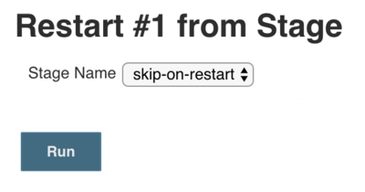
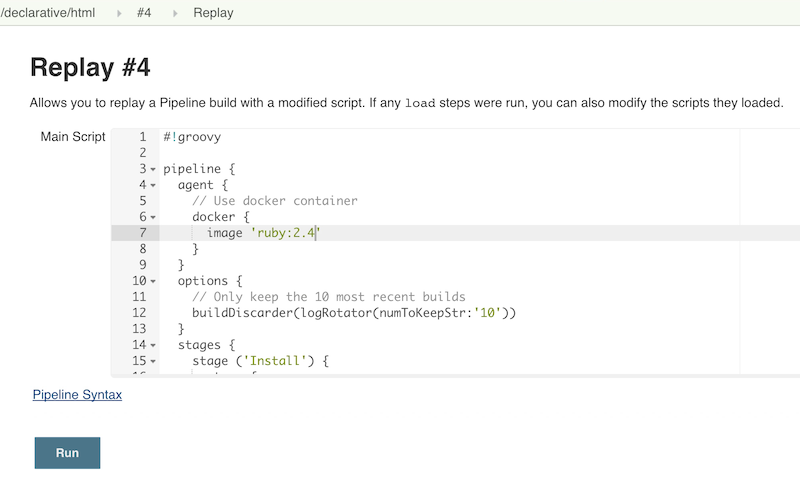
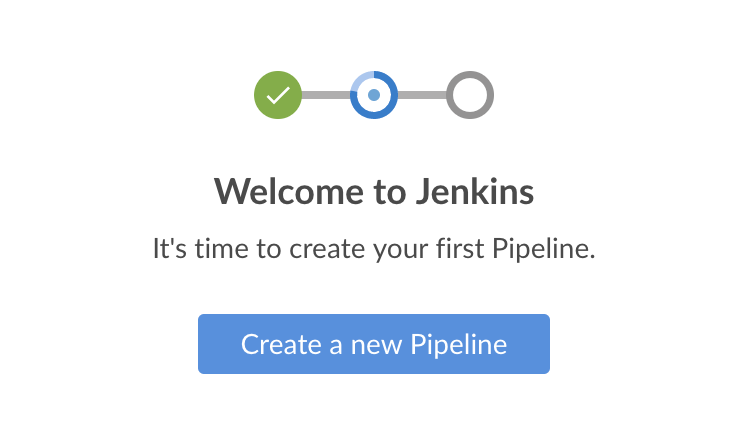
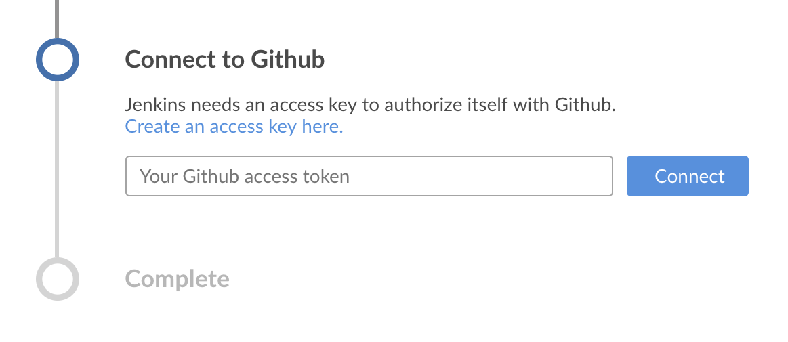
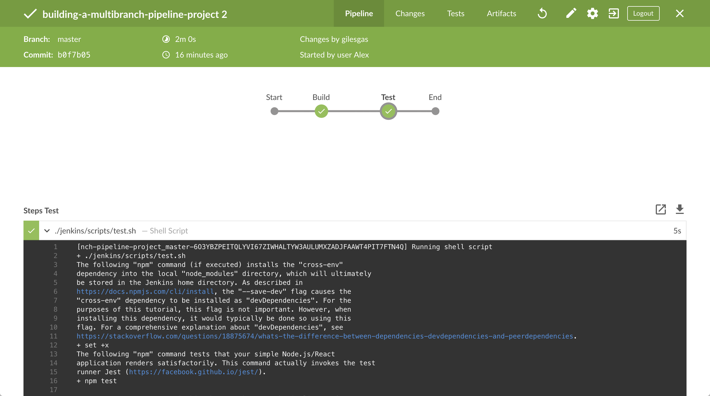
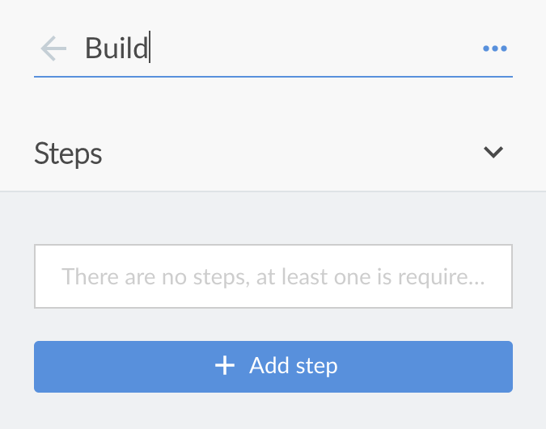
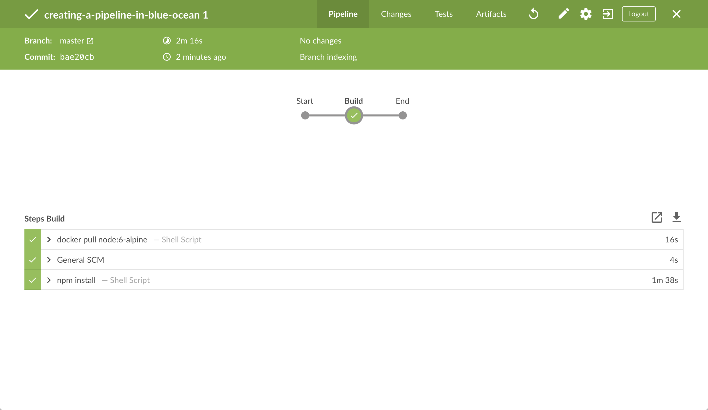
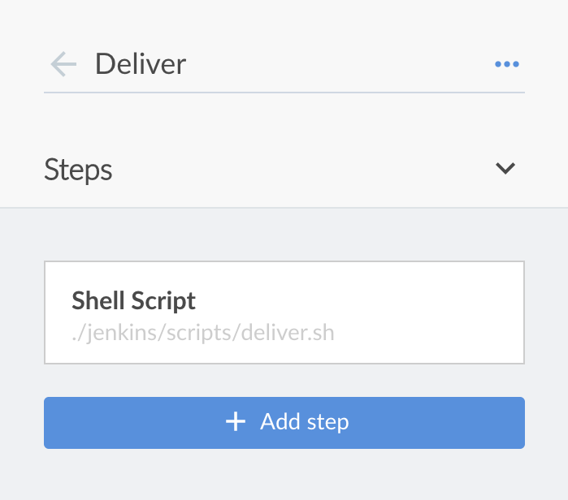

docker network create jenkinsJenkins User Documentation
Welcome to the Jenkins user documentation - for people wanting to use Jenkins’s existing functionality and plugin features.
If you want to extend the functionality of Jenkins by developing your own Jenkins plugins, please refer to the Extend Jenkins (developer documentation).
What is Jenkins?
Jenkins is a self-contained, open source automation server which can be used to automate all sorts of tasks related to building, testing, and delivering or deploying software.
Jenkins can be installed through native system packages, Docker, or even run standalone by any machine with a Java Runtime Environment (JRE) installed.
About this documentation
This documentation begins with a Guided Tour to help you get up and running with Jenkins and introduce you to Jenkins’s main feature, Pipeline.
There are also tutorials geared to developers who want to orchestrate and automate building their project in Jenkins using Pipeline and Blue Ocean.
If you’ve never used Jenkins before or have limited Jenkins experience, then the Guided Tour and introductory tutorials are good places to start.
If you are looking for more detailed information about using Jenkins, please refer to the User Handbook.
Documentation scope
Jenkins is a highly extensible product whose functionality can be extended through the installation of plugins.
There are a vast array of plugins available to Jenkins. However, the documentation covered in the Guided Tour, Tutorials, Solution pages and User Handbook of this documentation are based on a Jenkins installation with the Blue Ocean plugins installed, as well as the "suggested plugins", which are specified when running through the Post-installation setup wizard.
User Handbook overview
This page provides an overview of the documentation in the Jenkins User Handbook.
If you want to get up and running with Jenkins, see Installing Jenkins for procedures on how to install Jenkins on your supported platform of choice.
If you are a typical Jenkins user (of any skill level) who wants to know more about Jenkins usage, see Using Jenkins. Also refer to the separate Pipeline and Blue Ocean chapters for more information about these core Jenkins features.
If you are a Jenkins administrator and want to know more about managing Jenkins nodes and instances, see Managing Jenkins.
If you are a system administrator and want to learn how to back-up, restore, maintain as Jenkins servers and nodes, see Jenkins System Administration.
Installing Jenkins
Table of Contents
The procedures on this page are for new installations of Jenkins on a single/local machine.
Jenkins is typically run as a standalone application in its own process with the built-in Java servlet container/application server (Jetty).
Jenkins can also be run as a servlet in different Java servlet containers such as Apache Tomcat or GlassFish. However, instructions for setting up these types of installations are beyond the scope of this page.
Note: Although this page focuses on local installations of Jenkins, this content can also be used to help set up Jenkins in production environments.
Prerequisites
Minimum hardware requirements:
-
256 MB of RAM
-
1 GB of drive space (although 10 GB is a recommended minimum if running Jenkins as a Docker container)
Recommended hardware configuration for a small team:
-
1 GB+ of RAM
-
50 GB+ of drive space
Comprehensive hardware recommendations:
-
Hardware: see the Hardware Recommendations page
Software requirements:
-
Java: see the Java Requirements page
-
Web browser: see the Web Browser Compatibility page
-
For Windows operating system: Windows Support Policy
Installation platforms
This section describes how to install/run Jenkins on different platforms and operating systems.
Docker
Docker is a platform for running applications in an isolated environment called a "container" (or Docker container). Applications like Jenkins can be downloaded as read-only "images" (or Docker images), each of which is run in Docker as a container. A Docker container is in effect a "running instance" of a Docker image. From this perspective, an image is stored permanently more or less (i.e. insofar as image updates are published), whereas containers are stored temporarily. Read more about these concepts in the Docker documentation’s Getting Started, Part 1: Orientation and setup page.
Docker’s fundamental platform and container design means that a single Docker image (for any given application like Jenkins) can be run on any supported operating system (macOS, Linux and Windows) or cloud service (AWS and Azure) which is also running Docker.
Installing Docker
To install Docker on your operating system, visit the Docker store website and click the Docker Community Edition box which is suitable for your operating system or cloud service. Follow the installation instructions on their website.
Jenkins can also run on Docker Enterprise Edition, which you can access through Docker EE on the Docker store website.
|
If you are installing Docker on a Linux-based operating system, ensure you configure Docker so it can be managed as a non-root user. Read more about this in Docker’s Post-installation steps for Linux page of their documentation. This page also contains information about how to configure Docker to start on boot. |
Downloading and running Jenkins in Docker
There are several Docker images of Jenkins available.
The recommended Docker image to use is the
jenkinsci/blueocean image
(from the Docker Hub repository). This image
contains the current Long-Term Support (LTS) release of Jenkins
(which is production-ready) bundled with all Blue Ocean plugins and features.
This means that you do not need to install the Blue Ocean plugins separately.
|
A new There are also other Jenkins Docker images you can use (accessible through
|
On macOS and Linux
-
Open up a terminal window.
-
Create a bridge network in Docker using the following
docker network createcommand: -
Create the following volumes to share the Docker client TLS certificates needed to connect to the Docker daemon and persist the Jenkins data using the following
docker volume createcommands:docker volume create jenkins-docker-certs docker volume create jenkins-data -
In order to execute Docker commands inside Jenkins nodes, download and run the
docker:dindDocker image using the followingdocker container runcommand:docker container run \ --name jenkins-docker \(1) --rm \(2) --detach \(3) --privileged \(4) --network jenkins \(5) --network-alias docker \(6) --env DOCKER_TLS_CERTDIR=/certs \(7) --volume jenkins-docker-certs:/certs/client \(8) --volume jenkins-data:/var/jenkins_home \(9) --publish 2376:2376 \(10) docker:dind(11)1 ( Optional ) Specifies the Docker container name to use for running the image. By default, Docker will generate a unique name for the container. 2 ( Optional ) Automatically removes the Docker container (the instance of the Docker image) when it is shut down. This contains the Docker image cache used by Docker when invoked from the jenkinsci/blueoceancontainer described below.3 ( Optional ) Runs the Docker container in the background. This instance can be stopped later by running docker container stop jenkins-dockerand started again withdocker container start jenkins-docker. Seedocker containerfor more container management commands.4 Running Docker in Docker currently requires privileged access to function properly. This requirement may be relaxed with newer Linux kernel versions. 5 This corresponds with the network created in the earlier step. 6 Makes the Docker in Docker container available as the hostname dockerwithin thejenkinsnetwork.7 Enables the use of TLS in the Docker server. Due to the use of a privileged container, this is recommended, though it requires the use of the shared volume described below. This environment variable controls the root directory where Docker TLS certificates are managed. 8 Maps the /certs/clientdirectory inside the container to a Docker volume namedjenkins-docker-certsas created above.9 Maps the /var/jenkins_homedirectory inside the container to the Docker volume namedjenkins-dataas created above. This will allow for other Docker containers controlled by this Docker container’s Docker daemon to mount data from Jenkins.10 ( Optional ) Exposes the Docker daemon port on the host machine. This is useful for executing dockercommands on the host machine to control this inner Docker daemon.11 The docker:dindimage itself. This image can be downloaded before running by using the command:docker image pull docker:dind.Note: If copying and pasting the command snippet above does not work, try copying and pasting this annotation-free version here:
docker container run --name jenkins-docker --rm --detach \ --privileged --network jenkins --network-alias docker \ --env DOCKER_TLS_CERTDIR=/certs \ --volume jenkins-docker-certs:/certs/client \ --volume jenkins-data:/var/jenkins_home \ --publish 2376:2376 docker:dind -
Download the
jenkinsci/blueoceanimage and run it as a container in Docker using the followingdocker container runcommand:docker container run \ --name jenkins-blueocean \(1) --rm \(2) --detach \(3) --network jenkins \(4) --env DOCKER_HOST=tcp://docker:2376 \(5) --env DOCKER_CERT_PATH=/certs/client \ --env DOCKER_TLS_VERIFY=1 \ --publish 8080:8080 \(6) --publish 50000:50000 \(7) --volume jenkins-data:/var/jenkins_home \(8) --volume jenkins-docker-certs:/certs/client:ro \(9) jenkinsci/blueocean(10)1 ( Optional ) Specifies the Docker container name for this instance of the jenkinsci/blueoceanDocker image. This makes it simpler to reference by subsequentdocker containercommands.2 ( Optional ) Automatically removes the Docker container (which is the instantiation of the jenkinsci/blueoceanimage below) when it is shut down. This keeps things tidy if you need to quit Jenkins.3 ( Optional ) Runs the jenkinsci/blueoceancontainer in the background (i.e. "detached" mode) and outputs the container ID. If you do not specify this option, then the running Docker log for this container is output in the terminal window.4 Connects this container to the jenkinsnetwork defined in the earlier step. This makes the Docker daemon from the previous step available to this Jenkins container through the hostnamedocker.5 Specifies the environment variables used by docker,docker-compose, and other Docker tools to connect to the Docker daemon from the previous step.6 Maps (i.e. "publishes") port 8080 of the jenkinsci/blueoceancontainer to port 8080 on the host machine. The first number represents the port on the host while the last represents the container’s port. Therefore, if you specified-p 49000:8080for this option, you would be accessing Jenkins on your host machine through port 49000.7 ( Optional ) Maps port 50000 of the jenkinsci/blueoceancontainer to port 50000 on the host machine. This is only necessary if you have set up one or more JNLP-based Jenkins agents on other machines, which in turn interact with thejenkinsci/blueoceancontainer (acting as the "master" Jenkins server, or simply "Jenkins master"). JNLP-based Jenkins agents communicate with the Jenkins master through TCP port 50000 by default. You can change this port number on your Jenkins master through the Configure Global Security page. If you were to change your Jenkins master’s TCP port for JNLP agents value to 51000 (for example), then you would need to re-run Jenkins (via thisdocker run …command) and specify this "publish" option with something like--publish 52000:51000, where the last value matches this changed value on the Jenkins master and the first value is the port number on the Jenkins master’s host machine through which the JNLP-based Jenkins agents communicate (to the Jenkins master) - i.e. 52000. Note that WebSocket agents in Jenkins 2.217 do not need this configuration.8 Maps the /var/jenkins_homedirectory in the container to the Docker volume with the namejenkins-data. Instead of mapping the/var/jenkins_homedirectory to a Docker volume, you could also map this directory to one on your machine’s local file system. For example, specifying the option
--volume $HOME/jenkins:/var/jenkins_homewould map the container’s/var/jenkins_homedirectory to thejenkinssubdirectory within the$HOMEdirectory on your local machine, which would typically be/Users/<your-username>/jenkinsor/home/<your-username>/jenkins. Note that if you change the source volume or directory for this, the volume from thedocker:dindcontainer above needs to be updated to match this.9 Maps the /certs/clientdirectory to the previously createdjenkins-docker-certsvolume. This makes the client TLS certificates needed to connect to the Docker daemon available in the path specified by theDOCKER_CERT_PATHenvironment variable.10 The jenkinsci/blueoceanDocker image itself. If this image has not already been downloaded, then thisdocker container runcommand will automatically download the image for you. Furthermore, if any updates to this image were published since you last ran this command, then running this command again will automatically download these published image updates for you.
Note: This Docker image could also be downloaded (or updated) independently using thedocker image pullcommand:
docker image pull jenkinsci/blueoceanNote: If copying and pasting the command snippet above does not work, try copying and pasting this annotation-free version here:
docker container run --name jenkins-blueocean --rm --detach \ --network jenkins --env DOCKER_HOST=tcp://docker:2376 \ --env DOCKER_CERT_PATH=/certs/client --env DOCKER_TLS_VERIFY=1 \ --volume jenkins-data:/var/jenkins_home \ --volume jenkins-docker-certs:/certs/client:ro \ --publish 8080:8080 --publish 50000:50000 jenkinsci/blueocean -
Proceed to the Post-installation setup wizard.
On Windows
The Jenkins project provides a Linux container image, not a Windows container image.
Be sure that your Docker for Windows installation is configured to run Linux Containers rather than Windows Containers.
See the Docker documentation for instructions to switch to Linux containers.
Once configured to run Linux Containers, the steps are:
-
Open up a command prompt window.
-
Create a bridge network in Docker using the following
docker network createcommand:docker network create jenkins -
Create the following volumes to share the Docker client TLS certificates needed to connect to the Docker daemon and persist the Jenkins data using the following
docker volume createcommands:docker volume create jenkins-docker-certs docker volume create jenkins-data -
In order to execute Docker commands inside Jenkins nodes, download and run the
docker:dindDocker image using the followingdocker container runcommand:docker container run --name jenkins-docker --rm --detach ^ --privileged --network jenkins --network-alias docker ^ --env DOCKER_TLS_CERTDIR=/certs ^ --volume jenkins-docker-certs:/certs/client ^ --volume jenkins-data:/var/jenkins_home ^ docker:dind -
Download the
jenkinsci/blueoceanimage and run it as a container in Docker using the followingdocker container runcommand:docker container run --name jenkins-blueocean --rm --detach ^ --network jenkins --env DOCKER_HOST=tcp://docker:2376 ^ --env DOCKER_CERT_PATH=/certs/client --env DOCKER_TLS_VERIFY=1 ^ --volume jenkins-data:/var/jenkins_home ^ --volume jenkins-docker-certs:/certs/client:ro ^ --publish 8080:8080 --publish 50000:50000 jenkinsci/blueoceanFor an explanation of each of these options, refer to the macOS and Linux instructions above.
-
Proceed to the Post-installation setup wizard.
Accessing the Jenkins/Blue Ocean Docker container
If you have some experience with Docker and you wish or need to access the
jenkinsci/blueocean container through a terminal/command prompt using the
docker container exec
command, you can add an option like --name jenkins-blueocean (with the
docker container run
above), which would give the jenkinsci/blueocean container the name
"jenkins-blueocean".
This means you could access the container (through a separate terminal/command
prompt window) with a docker container exec command like:
docker container exec -it jenkins-blueocean bash
Accessing the Jenkins console log through Docker logs
There is a possibility you may need to access the Jenkins console log, for instance, when Unlocking Jenkins as part of the Post-installation setup wizard.
If you did not specify the detached mode option --detach with the
docker container run … command
above, then the Jenkins
console log is easily accessible through the terminal/command prompt window from
which you ran this Docker command.
Otherwise, you can access the Jenkins console log through the
Docker logs of
the jenkinsci/blueocean container using the following command:
docker container logs <docker-container-name>
Your <docker-container-name> can be obtained using the
docker container ls
command. If you specified the
--name jenkins-blueocean option in the docker container run … command above (see
also
Accessing the Jenkins/Blue
Ocean Docker container), you can simply use the docker container logs command:
docker container logs jenkins-blueocean
Accessing the Jenkins home directory
There is a possibility you may need to access the Jenkins home directory, for
instance, to check the details of a Jenkins build in the workspace
subdirectory.
If you mapped the Jenkins home directory (/var/jenkins_home) to one on your
machine’s local file system (i.e. in the docker container run … command
above), then you can access the
contents of this directory through your machine’s usual terminal/command prompt.
Otherwise, if you specified the --volume jenkins-data:/var/jenkins_home option in
the docker container run … command, you can access the contents of the Jenkins home
directory through the jenkinsci/blueocean container’s terminal/command prompt
using the
docker container exec
command:
docker container exec -it <docker-container-name> bash
As mentioned above,
your <docker-container-name> can be obtained using the
docker container ls
command. If you specified the
--name jenkins-blueocean option in the docker container run …
command above (see also
Accessing the Jenkins/Blue
Ocean Docker container), you can simply use the docker container exec command:
docker container exec -it jenkins-blueocean bash
WAR file
The Web application ARchive (WAR) file version of Jenkins can be installed on any operating system or platform that supports Java.
To download and run the WAR file version of Jenkins:
-
Download the latest stable Jenkins WAR file to an appropriate directory on your machine.
-
Open up a terminal/command prompt window to the download directory.
-
Run the command
java -jar jenkins.war. -
Browse to
http://localhost:8080and wait until the Unlock Jenkins page appears. -
Continue on with the Post-installation setup wizard below.
Notes:
-
Unlike downloading and running Jenkins with Blue Ocean in Docker (above), this process does not automatically install the Blue Ocean features, which would need to installed separately via the Manage Jenkins > Manage Plugins page in Jenkins. Read more about the specifics for installing Blue Ocean on the Getting started with Blue Ocean page.
-
You can change the port by specifying the
--httpPortoption when you run thejava -jar jenkins.warcommand. For example, to make Jenkins accessible through port 9090, then run Jenkins using the command:
java -jar jenkins.war --httpPort=9090
Linux
Jenkins installers are available for several Linux distributions.
Debian/Ubuntu
On Debian and Debian-based distributions like Ubuntu you can install Jenkins through apt.
Long Term Support release
A LTS (Long-Term Support) release is chosen every 12 weeks from the stream of regular releases as the stable release for that time period.
It can be installed from the debian-stable apt repository.
wget -q -O - https://pkg.jenkins.io/debian-stable/jenkins.io.key | sudo apt-key add -
sudo sh -c 'echo deb https://pkg.jenkins.io/debian-stable binary/ > \
/etc/apt/sources.list.d/jenkins.list'
sudo apt-get update
sudo apt-get install jenkinsWeekly release
A new release is produced weekly to deliver bug fixes and features to users and plugin developers.
It can be installed from the debian apt repository.
wget -q -O - https://pkg.jenkins.io/debian/jenkins.io.key | sudo apt-key add -
sudo sh -c 'echo deb https://pkg.jenkins.io/debian binary/ > \
/etc/apt/sources.list.d/jenkins.list'
sudo apt-get update
sudo apt-get install jenkins|
If an error is reported, “jenkins : Depends: daemon but it is not installable”, add the "universe" apt repository of community maintained free and open source software for Ubuntu by executing this command after |
This package installation will:
-
Setup Jenkins as a daemon launched on start. See
/etc/init.d/jenkinsfor more details. -
Create a ‘jenkins’ user to run this service.
-
Direct console log output to the file
/var/log/jenkins/jenkins.log. Check this file if you are troubleshooting Jenkins. -
Populate
/etc/default/jenkinswith configuration parameters for the launch, e.gJENKINS_HOME -
Set Jenkins to listen on port 8080. Access this port with your browser to start configuration.
|
If your |
Installation of Java
Jenkins requires Java in order to run, yet certain distributions don’t include this by default and some Java versions are incompatible with Jenkins.
There are multiple Java implementations which you can use. OpenJDK is the most popular one at the moment, we will use it in this guide.
To install the Open Java Development Kit (OpenJDK) run the following:
-
Update the repositories
sudo apt update
-
search of all available packages:
sudo apt search openjdk
-
Pick one option and install it:
sudo apt install openjdk-8-jdk
-
Confirm installation:
sudo apt install openjdk-8-jdk
-
checking installation:
java -version
-
the result must be something like:
openjdk version "1.8.0_252" OpenJDK Runtime Environment (build 1.8.0_252-8u252-b09-1ubuntu1-b09) OpenJDK 64-Bit Server VM (build 25.252-b09, mixed mode)
|
Why use |
Fedora
You can install Jenkins through dnf. You need to add the Jenkins repository from the Jenkins website to the package manager first.
Long Term Support release
A LTS (Long-Term Support) release is chosen every 12 weeks from the stream of regular releases as the stable release for that time period.
It can be installed from the redhat-stable yum repository.
sudo wget -O /etc/yum.repos.d/jenkins.repo \
https://pkg.jenkins.io/redhat-stable/jenkins.repo
sudo rpm --import https://pkg.jenkins.io/redhat-stable/jenkins.io.key
sudo dnf upgrade
sudo dnf install jenkins java-develWeekly release
A new release is produced weekly to deliver bug fixes and features to users and plugin developers.
It can be installed from the redhat yum repository.
sudo wget -O /etc/yum.repos.d/jenkins.repo \
http://pkg.jenkins-ci.org/redhat/jenkins.repo
sudo rpm --import https://jenkins-ci.org/redhat/jenkins-ci.org.key
sudo dnf upgrade
sudo dnf install jenkins java-develStart Jenkins
You can start the Jenkins service with the command:
sudo systemctl start jenkinsYou can check the status of the Jenkins service using the command:
sudo systemctl status jenkinsIf everything has been set up correctly, you should see an output like this:
Loaded: loaded (/etc/rc.d/init.d/jenkins; generated)
Active: active (running) since Tue 2018-11-13 16:19:01 +03; 4min 57s ago|
If you have a firewall installed, you must add Jenkins as an exception.
You must change |
Red Hat / CentOS
You can install Jenkins through yum on Red Hat Enterprise Linux, CentOS, and other Red Hat based distributions.
You need to choose either the Jenkins Long Term Support release or the Jenkins weekly release.
Long Term Support release
A LTS (Long-Term Support) release is chosen every 12 weeks from the stream of regular releases as the stable release for that time period.
It can be installed from the redhat-stable yum repository.
sudo wget -O /etc/yum.repos.d/jenkins.repo \
https://pkg.jenkins.io/redhat-stable/jenkins.repo
sudo rpm --import https://pkg.jenkins.io/redhat-stable/jenkins.io.key
sudo yum upgrade
sudo yum install jenkins java-1.8.0-openjdk-develWeekly release
A new release is produced weekly to deliver bug fixes and features to users and plugin developers.
It can be installed from the redhat yum repository.
sudo wget -O /etc/yum.repos.d/jenkins.repo \
https://pkg.jenkins.io/redhat/jenkins.repo
sudo rpm --import https://pkg.jenkins.io/redhat/jenkins.io.key
sudo yum upgrade
sudo yum install jenkins java-1.8.0-openjdk-develStart Jenkins
You can start the Jenkins service with the command:
sudo systemctl start jenkinsYou can check the status of the Jenkins service using the command:
sudo systemctl status jenkinsIf everything has been set up correctly, you should see an output like this:
Loaded: loaded (/etc/rc.d/init.d/jenkins; generated)
Active: active (running) since Tue 2018-11-13 16:19:01 +03; 4min 57s ago
...|
If you have a firewall installed, you must add Jenkins as an exception.
You must change |
Windows
To install from the website, using the installer:
-
Open the package and follow the instructions
Other operating systems
FreeBSD
Jenkins can be installed on FreeBSD using the standard FreeBSD package manager, pkg.
|
Disclaimer: The FreeBSD project maintains the Jenkins packaging for FreeBSD. The Jenkins package for FreeBSD is NOT officially supported by the Jenkins project, but it is actively used by the FreeBSD project at https://ci.freebsd.org/ . |
Long Term Support release
A LTS (Long-Term Support) release is chosen every 12 weeks from the stream of regular releases as the stable release for that time period.
It can be installed from the FreeBSD pkg package manager.
# pkg install jenkins-ltsWeekly release
A new release is produced weekly to deliver bug fixes and features to users and plugin developers.
It can be installed from the FreeBSD pkg package manager.
# pkg install jenkinsThe long term support package jenkins-lts and the weekly package installation jenkins will:
-
Configure Jenkins as a daemon which may optionally be launched on start. See
/etc/rc.conffor more details -
Create a ‘jenkins’ user to run the service
-
Direct console log output to the file
/var/log/jenkins.log. Check this file when troubleshooting Jenkins -
Set Jenkins to listen on port 8180 from the path
/jenkins. Open http://localhost:8180/jenkins to login to Jenkins
Start Jenkins
You can start the Jenkins service with the command:
# service jenkins onestartYou can check the status of the Jenkins service using the command:
# service jenkins statusYou can stop the Jenkins service with the command:
# service jenkins stopEnable Jenkins
Add the following to /etc/rc.conf to start Jenkins automatically on system boot:
jenkins_enable="YES"Once Jenkins is enabled, it can be started with:
# service jenkins startOther configuration values that can be set in /etc/rc.conf or in /etc/rc.conf.d/jenkins are described in /usr/local/etc/rc.d/jenkins.
Refer to the Jenkins page on the FreeBSD wiki for more information specific to Jenkins on FreeBSD.
OpenIndiana Hipster
On a system running OpenIndiana Hipster Jenkins can be installed in either the local or global zone using the Image Packaging System (IPS).
|
Disclaimer: This platform is NOT officially supported by the Jenkins team,
use it at your own risk. Packaging and integration described in this section
is maintained by the OpenIndiana Hipster team, bundling the generic |
For the common case of running the newest packaged weekly build as a standalone (Jetty) server, simply execute:
pkg install jenkins
svcadm enable jenkinsThe common packaging integration for a standalone service will:
-
Create a
jenkinsuser to run the service and to own the directory structures under/var/lib/jenkins. -
Pull the OpenJDK8 and other packages required to execute Jenkins, including the
jenkins-core-weeklypackage with the latestjenkins.war.Long-Term Support (LTS) Jenkins releases currently do not support OpenZFS-based systems, so no packaging is provided at this time. -
Set up Jenkins as an SMF service instance (
svc:/network/http:jenkins) which can then be enabled with thesvcadmcommand demonstrated above. -
Set up Jenkins to listen on port 8080.
-
Configure the log output to be managed by SMF at
/var/svc/log/network-http:jenkins.log.
Once Jenkins is running, consult the log
(/var/svc/log/network-http:jenkins.log) to retrieve the generated
administrator password for the initial set up of Jenkins, usually it will be
found at /var/lib/jenkins/home/secrets/initialAdminPassword. Then navigate to
localhost:8080 to complete configuration of the
Jenkins instance.
To change attributes of the service, such as environment variables like JENKINS_HOME
or the port number used for the Jetty web server, use the svccfg utility:
svccfg -s svc:/network/http:jenkins editprop
svcadm refresh svc:/network/http:jenkinsYou can also refer to /lib/svc/manifest/network/jenkins-standalone.xml for more
details and comments about currently supported tunables of the SMF service.
Note that the jenkins user account created by the packaging is specially privileged
to allow binding to port numbers under 1024.
The current status of Jenkins-related packages available for the given release of OpenIndiana can be queried with:
pkg info -r '*jenkins*'Upgrades to the package can be performed by updating the entire operating
environment with pkg update, or specifically for Jenkins core software with:
pkg update jenkins-core-weekly|
Procedure for updating the package will restart the currently running Jenkins process. Make sure to prepare it for shutdown and finish all running jobs before updating, if needed. |
Solaris, OmniOS, SmartOS, and other siblings
Generally it should suffice to install Java 8 and download the
jenkins.war and run it as a standalone process or under an application server
such as Apache Tomcat.
Some caveats apply:
-
Headless JVM and fonts: For OpenJDK builds on minimalized-footprint systems, there may be issues running the headless JVM, because Jenkins needs some fonts to render certain pages.
-
ZFS-related JVM crashes: When Jenkins runs on a system detected as a
SunOS, it tries to load integration for advanced ZFS features using the bundledlibzfs.jarwhich maps calls from Java to nativelibzfs.soroutines provided by the host OS. Unfortunately, that library was made for binary utilities built and bundled by the OS along with it at the same time, and was never intended as a stable interface exposed to consumers. As the forks of Solaris legacy, including ZFS and later the OpenZFS initiative evolved, many different binary function signatures were provided by different host operating systems - and when Jenkinslibzfs.jarinvoked the wrong signature, the whole JVM process crashed. A solution was proposed and integrated injenkins.warsince weekly release 2.55 (and not yet in any LTS to date) which enables the administrator to configure which function signatures should be used for each function known to have different variants, apply it to their application server initialization options and then run and update the genericjenkins.warwithout further workarounds. See the libzfs4j Git repository for more details, including a script to try and "lock-pick" the configuration needed for your particular distribution (in particular if your kernel updates bring a new incompatiblelibzfs.so).
Also note that forks of the OpenZFS initiative may provide ZFS on various
BSD, Linux, and macOS distributions. Once Jenkins supports detecting ZFS
capabilities, rather than relying on the SunOS check, the above caveats for
ZFS integration with Jenkins should be considered.
Post-installation setup wizard
After downloading, installing and running Jenkins using one of the procedures above, the post-installation setup wizard begins.
This setup wizard takes you through a few quick "one-off" steps to unlock Jenkins, customize it with plugins and create the first administrator user through which you can continue accessing Jenkins.
Unlocking Jenkins
When you first access a new Jenkins instance, you are asked to unlock it using an automatically-generated password.
-
Browse to
http://localhost:8080(or whichever port you configured for Jenkins when installing it) and wait until the Unlock Jenkins page appears.
-
From the Jenkins console log output, copy the automatically-generated alphanumeric password (between the 2 sets of asterisks).

Note:-
The command:
sudo cat /var/lib/jenkins/secrets/initialAdminPasswordwill print the password at console.
-
-
On the Unlock Jenkins page, paste this password into the Administrator password field and click Continue.
Notes:-
If you ran Jenkins in Docker in detached mode, you can access the Jenkins console log from the Docker logs (above).
-
The Jenkins console log indicates the location (in the Jenkins home directory) where this password can also be obtained. This password must be entered in the setup wizard on new Jenkins installations before you can access Jenkins’s main UI. This password also serves as the default admininstrator account’s password (with username "admin") if you happen to skip the subsequent user-creation step in the setup wizard.
-
Customizing Jenkins with plugins
After unlocking Jenkins, the Customize Jenkins page appears. Here you can install any number of useful plugins as part of your initial setup.
Click one of the two options shown:
-
Install suggested plugins - to install the recommended set of plugins, which are based on most common use cases.
-
Select plugins to install - to choose which set of plugins to initially install. When you first access the plugin selection page, the suggested plugins are selected by default.
| If you are not sure what plugins you need, choose Install suggested plugins. You can install (or remove) additional Jenkins plugins at a later point in time via the Manage Jenkins > Manage Plugins page in Jenkins. |
The setup wizard shows the progression of Jenkins being configured and your chosen set of Jenkins plugins being installed. This process may take a few minutes.
Creating the first administrator user
Finally, after customizing Jenkins with plugins, Jenkins asks you to create your first administrator user.
-
When the Create First Admin User page appears, specify the details for your administrator user in the respective fields and click Save and Finish.
-
When the Jenkins is ready page appears, click Start using Jenkins.
Notes:-
This page may indicate Jenkins is almost ready! instead and if so, click Restart.
-
If the page does not automatically refresh after a minute, use your web browser to refresh the page manually.
-
-
If required, log in to Jenkins with the credentials of the user you just created and you are ready to start using Jenkins!
| From this point on, the Jenkins UI is only accessible by providing valid username and password credentials. |
Offline Jenkins Installation
This section describes how to install Jenkins on a machine that does not have an internet connection.
To install Jenkins itself, download the appropriate war file and transfer it to your machine.
Plugins are a different matter, due to dependency requirements.
The recommended approach is to use Plugin Installation Manager Tool.
If you want to transfer the individual plugins, you’ll need to retrieve all dependencies as well. There are several dependency retrieval scripts and tools on Github. For example:
-
install-plugins.sh - Bash script for managing plugins from the official Docker image for Jenkins
-
samrocketman/jenkins-bootstrap-shared - Java is required; packages Jenkins and plugins into an immutable package installer. Supported formats include: RPM, DEB, Docker. Can proxy Jenkins and plugins through Nexus or Artifactory since Gradle is used to assemble plugins.
Jenkins Parameters
Jenkins initialization can also be controlled by run time parameters passed as arguments. Command line arguments can adjust networking, security, monitoring, and other settings.
Networking parameters
Jenkins networking configuration is generally controlled by command line arguments. The networking configuration areguments are:
| Command Line Parameter | Description |
|---|---|
|
Runs Jenkins listener on port $HTTP_PORT using standard http protocol.
The default is port 8080.
To disable (because you’re using https), use port |
|
Binds Jenkins to the IP address represented by $HTTP_HOST.
The default is 0.0.0.0 — i.e. listening on all available interfaces.
For example, to only listen for requests from localhost, you could use:
|
|
Uses HTTPS protocol on port $HTTPS_PORT. This option does not impact the root URL being generated within Jenkins logic (UI, JNLP files, etc.). It is defined by the Jenkins URL specified in the global configuration. |
|
Binds Jenkins to listen for HTTPS requests on the IP address represented by $HTTPS_HOST. |
|
Uses HTTP/2 protocol on port $HTTP_PORT. This option does not impact the root URL being generated within Jenkins logic (UI, JNLP files, etc.). It is defined by the Jenkins URL specified in the global configuration. |
|
Binds Jenkins to listen for HTTP/2 requests on the IP address represented by $HTTPS_HOST. |
|
Runs Jenkins to include the $PREFIX at the end of the URL. For example, set --prefix=/jenkins to make Jenkins accessible at http://myServer:8080/jenkins |
|
Runs Jenkins listener on port $AJP_PORT using standard AJP13 protocol.
The default is port 8009.
To disable (because you’re using https), use port |
|
Binds Jenkins to the IP address represented by $AJP_HOST. The default is 0.0.0.0 — i.e. listening on all available interfaces. |
|
Sets the http session timeout value to $SESSION_TIMEOUT minutes. Default to what webapp specifies, and then to 60 minutes |
Miscellaneous parameters
Other Jenkins initialization configuration is also controlled by command line arguments. The miscellaneous configuration arguments are:
| Command Line Parameter | Description |
|---|---|
|
Assigns the password for user $USER. If Jenkins security is enabled, you must log in as a user who has an admin role to configure Jenkins. |
|
Assigns user $USER the admin role. The user can configure Jenkins even if security is enabled in Jenkins. See Securing Jenkins for more information. |
|
Jenkins passes all command line parameters to the Winstone servlet container. More information about Jenkins Winstone command line parameters is available from the Winstone Command Line Parameter Reference.
|
Be Careful with Command Line Parameters Jenkins ignores command line parameters it doesn’t understand instead of producing an error. Be careful when using command line parameters and make sure you have the correct spelling. For example, the parameter needed for defining the Jenkins administrative user is --argumentsRealm and not --argumentRealm.
|
Jenkins properties
Some Jenkins behaviors are configured with Java properties.
Java properties are set from the command line that started Jenkins.
Property assignments use the form -DsomeName=someValue to assign the value someValue to the property named someName.
For example, to assign the value true to a property testName, the command line argument would be -DtestName=true.
Refer to the detailed list of Jenkins properties for more information.
Configuring HTTP
HTTPS with an existing certificate
If you’re setting up Jenkins using the built-in Winstone server and want to use an existing certificate for HTTPS:
--httpPort=-1 \
--httpsPort=443 \
--httpsKeyStore=path/to/keystore \
--httpsKeyStorePassword=keystorePasswordThe keystore should be in JKS format (as created by the JDK 'keytool')
and the keystore and target key must have the same password. (Placing
the keystore arguments after Jenkins-specific parameters does not seem
to work; either they are not forwarded to Winstone or Winstone ignores
them coming after unknown parameters. So, make sure they are adjacent to
the working --httpsPort argument.)
If your keystore contains multiple certificates (e.g. you are using CA signed certificate) Jenkins might end-up using a incorrect one. In this case you can convert the keystore to PEM and use following command line options:
--httpPort=-1 \
--httpsPort=443 \
--httpsCertificate=path/to/cert \
--httpsPrivateKey=path/to/privatekeyUsing HTTP/2
The HTTP/2 protocol allows web servers to reduce latency over encrypted connections by pipelining requests, multiplexing requests, and allowing servers to push in some cases before receiving a client request for the data. The Jetty server used by Jenkins supports HTTP/2 with the addition of the Application-Layer Protocol Negotiation (ALPN) TLS extension. The ALPN TLS extension is connected to the specific Jetty version and has specific requirements depending on the Java version.
Java 11, Java 8u252, and later
Java 11, Java 8 update 252 and Java 8 versions after update 252 can run the ALPN TLS extension by installing the Jetty ALPN java server jar and passing it as a java command line argument. Steps to install the extension are:
-
Identify the Jetty version included in your Jenkins server by searching the Jenkins startup log for the string
org.eclipse.jetty.server.Server#doStart. For example:
org.eclipse.jetty.server.Server#doStart: jetty-9.4.27.v20200227 -
Locate the Java version on the "System Information" page of "Manage Jenkins" to confirm it is Java 11 or 8u252 (or later)
-
Download the jetty-alpn-java-server with the version number matching the Jetty version bundled with your Jenkins version
-
Place the jetty-alpn-java-server.jar file in a directory accessible to the JVM
-
Add
--extraLibFolder=/path/to/extra/lib/folderto the Java command line arguments that start Jenkins
java --extraLibFolder=/opt/java/jetty-alpn-java-server-9.4.27.v20200227.jar \
-jar target/jenkins.war \
--http2Port=9090Java 8u242 and earlier
Java 8 update 242 and earlier can run the ALPN TLS extension by installing the Jetty ALPN boot library corresponding to the exact OpenJDK version you are using into the Java boot classpath. Steps to install the extension are:
-
Identify the Java version running your Jenkins server from the "Manage Jenkins" → "System Information" page
-
Find the boot library for your OpenJDK version
-
Download the matching alpn-boot.jar file to a directory accessible to the JVM
-
Add the alpn-boot.jar to the JVM boot classpath by adding
-Xbootclasspath/p:/path/to/alpn-boot.jarto the Java command line arguments that start Jenkins
java -Xbootclasspath/p:/opt/java/alpn-boot-8.1.13.v20181017.jar \
-jar target/jenkins.war \
--http2Port=9090HTTPS certificates with Windows
These instructions use a stock Jenkins installation on Windows Server. The instructions assume a certificate signed by a Certificate Authority such as Digicert. If you are making your own certificate skip steps 3, 4, and 5.
This process utilizes Java’s keytool.
Use the Java keytool included with your Java installation.
Step 1: Create a new keystore on your server. This will place a 'keystore' file in your current directory.
C:\>keytool -genkeypair -keysize 2048 -keyalg RSA -alias jenkins -keystore keystore
Enter keystore password:
Re-enter new password:
What is your first and last name?
[Unknown]: server.example.com
What is the name of your organizational unit?
[Unknown]: A Unit
What is the name of your organization?
[Unknown]: A Company
What is the name of your City or Locality?
[Unknown]: A City
What is the name of your State or Province?
[Unknown]: A State
What is the two-letter country code for this unit?
[Unknown]: US
Is CN=server.example.com, OU=A Unit, O=A Company, L=A City, ST=A State, C=US correct?
[no]: yes
Enter key password for <jenkins>
(RETURN if same as keystore password):Step 2: Verify the keystore was created (your fingerprint will vary)
C:\>keytool -list -keystore keystore
Enter keystore password:
Keystore type: JKS
Keystore provider: SUN
Your keystore contains 1 entry
jenkins, May 6, 2015, PrivateKeyEntry,
Certificate fingerprint (SHA1): AA:AA:AA:AA:AA:AA:AA:AA:AA:AA ...Step 3: Create the certificate request. This will create a 'certreq.csr' file in your current directory.
C:\>keytool -certreq -alias jenkins -keyalg RSA ^
-file certreq.csr ^
-ext SAN=dns:server-name,dns:server-name.your.company.com ^
-keystore keystore
Enter keystore password:Step 4: Use the contents of the certreq.csr file to generate a
certificate from your certificate provider. Request a SHA-1 certificate
(SHA-2 is untested but will likely work). If using DigiCert, download
the resulting certificate as Other format "a .p7b bundle of all the
certs in a .p7b file".
Step 5: Add the resulting .p7b into the keystore you created above.
C:\>keytool -import ^
-alias jenkins ^
-trustcacerts ^
-file response_from_digicert.p7b ^
-keystore keystore
Enter keystore password:
Certificate reply was installed in keystoreStep 6: Copy the 'keystore' file to your Jenkins secrets directory. On a stock installation, this will be at
C:\Program Files (x86)\Jenkins\secretsStep 7: Modify the <arguments> section of your
C:\Program Files (x86)\Jenkins\jenkins.xml file to reflect the new
certificate. Note: This example disables http via --httpPort=-1 and
places the server on 8443 via --httpsPort=8443.
<arguments>
-Xrs
-Xmx256m
-Dhudson.lifecycle=hudson.lifecycle.WindowsServiceLifecycle
-jar "%BASE%\jenkins.war"
--httpPort=-1
--httpsPort=8443
--httpsKeyStore="%BASE%\secrets\keystore"
--httpsKeyStorePassword=your.password.here
</arguments>Step 8: Restart the jenkins service to initialize the new configuration.
net stop jenkins
net start jenkinsStep 9: After 30-60 seconds, Jenkins will have completed the startup process and you should be able to access the website at https://server.example.com:8443. Verify the certificate looks good via your browser’s tools. If the service terminates immediately, there’s an error somewhere in your configuration. Useful error information can be found in:
C:\Program Files (x86)\Jenkins\jenkins.err.log
C:\Program Files (x86)\Jenkins\jenkins.out.logHardware Recommendations
Table of Contents
Hardware Recommendations
Introduction
Sizing a Jenkins environment depends on a number of factors, which makes it a very inexact science. Achieving an optimal configuration requires some experience and experimentation. It is, however, possible to make a smart approximation to start - especially when designing with Jenkins' best practices in mind.
The following outlines these factors and how you can account for them when sizing your configuration. You are also provided sample configurations and the hardwares behind some of the largest Jenkins installations presented in a Jenkins Scalability Summit.
Choosing the Right Hardware for Masters
One of the greatest challenges of properly setting up a Jenkins instance is that there is no one size fits all answer - the exact specifications of the hardware that you will need will depend heavily on your organization’s current and future needs.
Your Jenkins master will be serving HTTP requests and storing all of the important information for your Jenkins instance in its $JENKINS_HOME folder (configurations, build histories and plugins).
More information on sizing masters based organizational needs can be found in the Architecting for Scale section.
Memory Requirements for the Master
The amount of memory Jenkins needs is largely dependent on many factors, which is why the RAM allotted for it can range from 200 MB for a small installation to 70+ GB for a single and massive Jenkins master. However, you should be able to estimate the RAM required based on your project build needs.
Each build node connection will take 2-3 threads, which equals about 2 MB or more of memory. You will also need to factor in CPU overhead for Jenkins if there are a lot of users who will be accessing the Jenkins user interface.
It is generally a bad practice to allocate executors on a master, as builds can quickly overload a master’s CPU/memory/etc and crash the instance, causing unnecessary downtime. Instead, it is advisable to set up agents that the Jenkins master can delegate jobs to, keeping the bulk of the work off of the master itself.
Choosing the Right Build Machines
The backbone of Jenkins is its ability to orchestrate builds, but installations which do not leverage Jenkins' distributed builds architecture are artificially limiting the number of builds that their masters can orchestrate. More information on a more distributed architecture can be found in the Architecting for Scale section.
Requirements for a Machine to be an agent
Agents are typically generic x86 machines with enough memory to run specific build types. The agent’s configuration depends on the builds it will be used for and on the tools required by the same builds.
Configuring a machine to act as an agent inside your infrastructure can be tedious and time consuming. This is especially true when the same set-up has to be replicated on a large pool of agents. Because of this, is ideal to have fungible agents, which are agents that are easily replaceable. Agents should be generic for all builds rather customized for a specific job or a set of jobs. The more generic the agents, the more easily they are interchanged, which in turn allows for a better use of resources and a reduced impact on productivity if some agents suffer an outage. Andrew Bayer introduced this concept of "fungibility" as applied to agents during his presentation "Seven Habits of Highly Effective Jenkins Users" at the Jenkins User Conference (Europe, 2014).
The more automated the environment configuration is, the easier it is to replicate a configuration onto a new agent machine. Tools for configuration management or a pre-baked image can be excellent solutions to this end. Containers and virtualization are also popular tools for creating generic agent environments.
More information on estimating the number of executors needed in a given environment can be found in the Architecting for Scale section.
Java requirements
There are separate run and job execution requirements for Jenkins installations.
Running Jenkins
Modern Jenkins versions have the following Java requirements:
-
Java 8 runtime environments, both 32-bit and 64-bit versions are supported
-
Since Jenkins
2.164and2.164.1[1], Java 11 runtime environments are supported-
Running Jenkins with Java 11 is documented here
-
There are some precautions to take when upgrading from Java 8 to Java 11 in Jenkins, please follow these guidelines.
-
-
Older versions of Java are not supported
-
Java 9 and Java 10 are not supported
-
Java 12 is not supported
These requirements apply to all components of the Jenkins system including Jenkins master, all types of agents, CLI clients, and other components.
Jenkins project performs a full test flow with the following JDK/JREs:
-
OpenJDK JDK / JRE 8 - 64 bits
-
OpenJDK JDK / JRE 11 - 64 bits
JRE/JDKs from other vendors are supported and may be used. See our Issue tracker for known Java compatibility issues.
Executing jobs on Jenkins
Jenkins jobs may be executed on Java versions different from the master/agent runtime. Generally, Jenkins allows ANY version of JRE/JDK to be invoked during the build. It includes:
-
Execution of Java commands from CLI
-
Installation and execution of build steps using JDK managed by JDK tool installers
In the case of particular plugins, there are still Java requirements:
-
If you use Maven Integration Plugin, version of JDK used for the build must be equal to the version used by Jenkins
-
If you use Swarm Plugin to create agents, JRE version must be equal to the version of the master
-
If you use Docker Pipeline Plugin with a bundled JRE/JDK to execute jobs, versions of such bundled Java must be equal to the version of the master
Monitoring Java versions
Modern versions of Jenkins master and agents verify Java requirements and notify users when they are launched with unsupported version.
In order to do fine-grain monitoring of Java versions on agents, you can use Jenkins Versions Node Monitors plugin to setup Java version monitoring across the Jenkins system.
Browser compatibility
| This page documents the browser support policy in the Jenkins automation server. It does not apply to the Jenkins website or other services hosted by the Jenkins project. |
Support model
Jenkins web browser support falls into one of three classes:
-
Level 1: Aim to proactively fix these browsers and provide an equal UX across all.
-
Level 2: Accept patches to fix issues and make a best effort to ensure there is at least one way to do any action.
-
Level 3: No guarantees. We will accept patches, but only if they are low risk. This is the default unless a browser/version is listed below.
We do not claim any compatibility with, or accept bug reports and patches, for pre-release (e.g. alpha, beta or canary) versions of browsers.
Browser compatibility matrix
| Browser | Level 1 | Level 2 | Level 3 |
|---|---|---|---|
Google Chrome |
Latest regular release/patch |
Version N-1, latest patch |
Other versions |
Mozilla Firefox |
Latest regular release/patch; Latest ESR release |
Version N-1, latest patch |
Other versions |
Microsoft Internet Explorer |
Version 11, latest patch |
Version 11, previous patches |
Other versions |
Microsoft Edge |
- |
Latest release/patch |
Other versions |
Apple Safari |
Latest regular release/patch |
Version N-1, latest patch |
Other versions |
Support for mobile browsers (e.g. iOS Safari) has not yet been determined.
Windows Support Policy
This page documents the Windows support policy for the Jenkins server and agents.
Scope
Jenkins plugins, e.g. WMI Windows Agents, may set additional requirements to Windows versions on masters and/or agents. This page does not document such requirements, please refer to plugin documentation.
Why?
Theoretically Jenkins can run everywhere where you can run a supported Java version, but there are some limitations in practice. Jenkins core and some plugins include native code or depend on Windows API and subsystems, and hence they rely on specific Windows platforms and versions. In the case of Windows services we also use Windows Service Wrapper (WinSW) which requires .NET Framework.
Support levels
We define multiple support levels for Windows platforms.
| Support level | Description | Platforms |
|---|---|---|
Level 1 - Full support |
We run automated testing for these platforms, and we intend to timely fix the reported issues. |
|
Level 2 - Supported |
We do not actively test these platforms, but we intend to keep compatibility. We are happy to accept patches. |
|
Level 3 - Patches considered |
Support may have limitations and extra requirements. We do not test compatibility, and we may drop support if there is a need. We will consider patches if they do not put Level 1/2 support at risk and if they do not create maintenance overhead. |
|
Level 4 - Unsupported |
These versions are known to be incompatible or to have severe limitations. We do not support the listed platforms, and we will not accept patches. |
|
.NET Requirements
-
Starting from
Jenkins 2.238, .NET Framework 4.0 or above is required for all Windows service installations and built-in Windows service management logic. -
Before
Jenkins 2.238, .NET Framework 2.0 was supported -
For platforms which do not support these versions, consider using Native executables provided by the Windows Service Wrapper project.
Contributing
If you would like to add support for more Windows platforms or to share feedback, we will appreciate your contributions! Windows support in Jenkins is Platform Special Interest Group which has a chat, a mailing list and regular meetings. You are welcome to join these channels.
Using Jenkins
This chapter contains topics for typical Jenkins users (of all skill levels) about Jenkins usage which is outside the scope of the core Jenkins features: Pipeline and Blue Ocean.
If you want to create and configure a Pipeline project through a Jenkinsfile
or through Blue Ocean, or you wish to find out more about these core Jenkins
features, refer to the relevant topics within the respective
Pipeline and Blue Ocean chapters.
If you are a Jenkins administrator and want to know more about managing Jenkins nodes and instances, see Managing Jenkins.
If you are a system administrator and want learn how to back-up, restore, maintain as Jenkins servers and nodes, see Jenkins System Administration.
For an overview of content in the Jenkins User Handbook, see User Handbook overview.
Using credentials
Table of Contents
There are numerous 3rd-party sites and applications that can interact with Jenkins, for example, artifact repositories, cloud-based storage systems and services, and so on.
A systems administrator of such an application can configure credentials in the application for dedicated use by Jenkins. This would typically be done to "lock down" areas of the application’s functionality available to Jenkins, usually by applying access controls to these credentials. Once a Jenkins manager (i.e. a Jenkins user who administers a Jenkins site) adds/configures these credentials in Jenkins, the credentials can be used by Pipeline projects to interact with these 3rd party applications.
Note: The Jenkins credentials functionality described on this and related pages is provided by the Credentials Binding plugin.
Credentials stored in Jenkins can be used:
-
anywhere applicable throughout Jenkins (i.e. global credentials),
-
by a specific Pipeline project/item (read more about this in the Handling credentials section of Using a Jenkinsfile),
-
by a specific Jenkins user (as is the case for Pipeline projects created in Blue Ocean).
Jenkins can store the following types of credentials:
-
Secret text - a token such as an API token (e.g. a GitHub personal access token),
-
Username and password - which could be handled as separate components or as a colon separated string in the format
username:password(read more about this in Handling credentials), -
Secret file - which is essentially secret content in a file,
-
SSH Username with private key - an SSH public/private key pair,
-
Certificate - a PKCS#12 certificate file and optional password, or
-
Docker Host Certificate Authentication credentials.
Credential security
To maximize security, credentials configured in Jenkins are stored in an encrypted form on the master Jenkins instance (encrypted by the Jenkins instance ID) and are only handled in Pipeline projects via their credential IDs.
This minimizes the chances of exposing the actual credentials themselves to Jenkins users and hinders the ability to copy functional credentials from one Jenkins instance to another.
Configuring credentials
This section describes procedures for configuring credentials in Jenkins.
Credentials can be added to Jenkins by any Jenkins user who has the Credentials > Create permission (set through Matrix-based security). These permissions can be configured by a Jenkins user with the Administer permission. Read more about this in the Authorization section of Managing Security.
Otherwise, any Jenkins user can add and configure credentials if the Authorization settings of your Jenkins instance’s Configure Global Security settings page is set to the default Logged-in users can do anything setting or Anyone can do anything setting.
Adding new global credentials
To add new global credentials to your Jenkins instance:
-
If required, ensure you are logged in to Jenkins (as a user with the Credentials > Create permission).
-
From the Jenkins home page (i.e. the Dashboard of the Jenkins classic UI), click Credentials > System on the left.
-
Under System, click the Global credentials (unrestricted) link to access this default domain.
-
Click Add Credentials on the left.
Note: If there are no credentials in this default domain, you could also click the add some credentials link (which is the same as clicking the Add Credentials link). -
From the Kind field, choose the type of credentials to add.
-
From the Scope field, choose either:
-
Global - if the credential/s to be added is/are for a Pipeline project/item. Choosing this option applies the scope of the credential/s to the Pipeline project/item "object" and all its descendent objects.
-
System - if the credential/s to be added is/are for the Jenkins instance itself to interact with system administration functions, such as email authentication, agent connection, etc. Choosing this option applies the scope of the credential/s to a single object only.
-
-
Add the credentials themselves into the appropriate fields for your chosen credential type:
-
Secret text - copy the secret text and paste it into the Secret field.
-
Username and password - specify the credential’s Username and Password in their respective fields.
-
Secret file - click the Choose file button next to the File field to select the secret file to upload to Jenkins.
-
SSH Username with private key - specify the credentials Username, Private Key and optional Passphrase into their respective fields.
Note: Choosing Enter directly allows you to copy the private key’s text and paste it into the resulting Key text box. -
Certificate - specify the Certificate and optional Password. Choosing Upload PKCS#12 certificate allows you to upload the certificate as a file via the resulting Upload certificate button.
-
Docker Host Certificate Authentication - copy and paste the appropriate details into the Client Key, Client Certificate and Server CA Certificate fields.
-
-
In the ID field, specify a meaningful credential ID value - for example,
jenkins-user-for-xyz-artifact-repository. You can use upper- or lower-case letters for the credential ID, as well as any valid separator character. However, for the benefit of all users on your Jenkins instance, it is best to use a single and consistent convention for specifying credential IDs.
Note: This field is optional. If you do not specify its value, Jenkins assigns a globally unique ID (GUID) value for the credential ID. Bear in mind that once a credential ID is set, it can no longer be changed. -
Specify an optional Description for the credential/s.
-
Click OK to save the credentials.
Referencing another project by name
In many places throughout Jenkins, you can refer to another project/job by name. For example, in a Pipeline Script, you might want to copy artifacts from another project:
copyArtifacts projectName: 'myproject'
That’s all you need to do if your target project’s name is simply alphanumeric, and is a simple project without subprojects, and has a unique name throughout your entire Jenkins instance. Read on for more complex scenarios…
Differentiating between multiple projects with the same name
If you’re using the Folders Plugin and you have multiple projects with the same name that are in different folders, you can differentiate between them using a path, similar to a Unix filesystem path. There are two types of paths:
Absolute paths
Absolute paths begin with a forward slash, and refer to a project by describing the complete path to navigate to the project from the home page of your Jenkins instance. For example, to reference a project in the root of your Jenkins instance:
/myproject
Or, to reference a project in a subfolder:
/myfolder/myproject
Relative paths
Relative paths begin with something other than a forward slash, and refer to another project in relation to the current project. For example, say you have projects with the following absolute paths:
/thatproject /folder/someproject /folder/subfolder/myproject /folder/subfolder/anotherproject
In a Pipeline Script for /folder/subfolder/myproject, you could refer to /folder/subfolder/anotherproject using this relative path:
anotherproject
And you could refer to /folder/someproject using this relative path, where .. means to look in the parent folder:
../someproject
And you could refer to /thatproject using this relative path:
../../thatproject
Referencing components inside projects
Some types of projects — such as Maven projects, Matrix projects, and Multibranch projects — have subcomponents. You can refer to these subcomponents as follows:
Maven projects
You can refer to an entire Maven project:
mymavenproject
Or to a group within a Maven project:
mymavenproject/my.group
Or to a particular module:
mymavenproject/my.group$MyModule
Name encoding
Special characters in paths should be URL-encoded. For example, if your Multibranch Pipeline has a branch with a slash in it (feature/myfeature), replace the slash with %2F:
mymultibranchproject/feature%2Fmyfeature
For developers of Jenkins and Jenkins Plugins
See the Jenkins::getItem() function.
Aborting a build
When you click that [x] icon from the UI, the following things happen:
-
Browser sends a request to the server.
-
The server interrupts (via Thread.interrupt()) the thread (AKA executor thread) that is responsible for carrying out a build.
-
The server returns
At this point, your browser is back, but the actual abort process happens from here asynchronously.
-
The thread gets the interrupt signal. How quickly this happens depends on what the executor is doing at the time of the interruption. Specifically, an executor thread can only be interrupted in "interruption points" due to the Java design.
-
Waiting for a completion of a child process (for example, maybe the build is running Ant) is an interruption point. That means if the executor was doing that, it gets interrupted instantaneously.
-
Waiting for a computation on an agent is an interruption point.
-
Waiting for file or network I/O is not an interruption point. This often causes the problem where a build appears to be un-abortable. For example, checking out a Subversion repository falls in this category.
-
Normal computation is also not an interruption point.
-
-
The executor performs a clean up operation. This depends on what it was doing by the time it noticed the interruption.
-
If it was waiting for a completion of a child process, Jenkins will search for all the descendant processes and kill them all. On Unix, this is done through
java.lang.UnixProcess.destroyProcess, which sends SIGTERM on Unix-based JDK implementations. On Windows, this is done through TerminateProcess API. -
If it was waiting for a completion of some computation in an agent, the thread that’s performing the remote computation is interrupted asynchronously. How quickly that threads gets interrupted depends on what that thread is doing. See above.
-
-
Executor starts unwinding the stack, and eventually it finishes the unwinding. At this point, the build is marked as aborted and executor returns to the idle status.
Pipeline jobs can by stopped by sending an HTTP POST request to URL endpoints of a build.
-
BUILD ID URL/stop- aborts a Pipeline. -
BUILD ID URL/term- forcibly terminates a build (should only be used ifstopdoes not work). -
BUILD ID URL/kill- hard kill a pipeline. This is the most destructive way to stop a pipeline and should only be used as a last resort.
Fingerprints
Tracking file usage across Jenkins jobs using fingerprints
When you have interdependent projects on Jenkins, it often becomes hard to keep track of which version of a file is used by which version of a dependency on that file. Jenkins supports file fingerprinting to track dependencies.
For example, suppose you have a TOP project that depends on a MIDDLE
project, which in turn depends on a BOTTOM project.
You are working on the BOTTOM project.
The TOP team reported that the bottom.jar that they are using causes
an NPE, which you (a member of the BOTTOM team) thought you fixed in
BOTTOM #32.
Jenkins can tell you which MIDDLE builds and TOP builds are using (or not
using) your bottom.jar #32.
How do I set it up?
To make this work, all the relevant projects need to be configured to
Record fingerprints of the jar files (in the above case,
bottom.jar).
For example, if you just want to track which BOTTOM builds are used by
which TOP builds, configure TOP and BOTTOM to record the fingerprint
of bottom.jar.
If you also want to know which MIDDLE builds are using which
bottom.jar, also configure MIDDLE.
Since recording fingerprints is a cheap operation, the simplest thing to do is just blindly record all fingerprints of the followings:
-
jar files that your project produce
-
jar files that your project rely on
The disk usage is affected more by the number of files fingerprinted, as
opposed to the size of files or the number of builds they are used.
So unless you have a plenty of disk space, you don’t want to fingerprint
**/*.
Configure a job to Record Fingerprint(s) of a file or set of files
Go to your project, click Configure in the left navigation bar, then scroll down to the Post-build Actions section of the job
Click on the button to add a Post-build action.
Select Record fingerprints of files to track usage.
The post-build action configuration fields provide you with a pattern option to match the files you want to fingerprint as well as a couple check-box selections to do your file fingerprinting.
Maven job type does this automatically for its dependencies and artifacts.
How does it work?
The fingerprint of a file is simply an MD5 checksum. Jenkins maintains a database of MD5 checksums, and for each MD5 checksum, Jenkins records which builds of which projects used it. This database is updated every time a build runs and files are fingerprinted.
To avoid excessive disk usage, Jenkins does not store the actual file. Instead, it just stores MD5 checksums and their usages. These files can be seen in
$JENKINS_HOME/fingerprints
Plugins can store additional information in these records. For example, Deployment Notification Plugin tracks files deployed on servers via chef/puppet through fingerprints.
How can I use it?
Here are a few typical scenarios that benefit from this feature:
You develop the BOTTOM project and you want to know who is using BOTTOM #13 in which builds
-
Go to BOTTOM #13 build page.
-
Click the "fingerprint" icon of
bottom.jarin the build artifacts -
You’ll see all the projects and builds that use it.
You develop the TOP project and you want to know which build of
bottom.jar and middle.jar you are using in TOP #10.
-
Go to TOP #10 build page.
-
Click "see fingerprints"
-
You’ll see all the files fingerprinted in TOP #10, along with where they came from.
You have the TOP project that builds a jar. You also have the TOP-TEST project that runs after the TOP project and does extensive integration tests on the latest TOP bits. You want to know the test results of TOP #7.
-
Go to TOP #7 build page.
-
Click the "fingerprint" icon of
top.jarin the build artifacts -
You’ll see all the TOP-TEST builds that used it.
-
Click it and you’ll be taken to the appropriate TOP-TEST build page, which will show you test reports.
-
If there’s no TOP-TEST builds displayed, then that means TOP-TEST build didn’t run against TOP #7. Maybe it skipped TOP #7 (this can happen if there are a lot of TOP builds in a short period of time), or maybe a new TOP-TEST build is in progress.
Using local language
Jenkins displays text depending on the language of the browser. It detects the language of your internet browser.
Note that, depending on the browser and on the language, you might need to download addons.
You can additionally change the system language (used when builds are executing), as well as the user interface language for all users by using the Locale Plugin.

Change time zone
If your Jenkins instance is running in a different location than your own (for example: the server is in NY but you are in LA), then the NY time zone will most probably be used. This may be quite annoying if you need to compare build dates.
To see the time zone currently set, go to jenkins_server/systemInfo and see the user.timezone system property.
You may want to change the time zone displayed to match your own time zone. By going to your user configuration page, you can set the User Defined Time Zone to match your own.

Remote Access API
Jenkins provides machine-consumable remote access API to its functionalities. Currently it comes in three flavors:
-
XML
-
JSON with JSONP support
-
Python
Remote access API is offered in a REST-like style.
That is, there is no single entry point for all features,
and instead they are available under the ".../api/"
URL where "..." portion is the data that it acts on.
For example, if your Jenkins installation sits at https://ci.jenkins.io,
visiting https://ci.jenkins.io/api/ will show just the top-level API
features available – primarily a listing of the configured jobs for this
Jenkins instance.
Or if you want to access information about a particular build, e.g.
https://ci.jenkins.io/job/Infra/job/jenkins.io/job/master/lastSuccessfulBuild/, then go to
https://ci.jenkins.io/job/Infra/job/jenkins.io/job/master/lastSuccessfulBuild/api/ and you’ll
see the list of functionalities for that build.
What can you do with it?
Remote API can be used to do things like these:
-
retrieve information from Jenkins for programmatic consumption.
-
trigger a new build
-
create/copy jobs
Submitting jobs
Jobs without parameters
You merely need to perform an HTTP POST on
JENKINS_URL/job/JOBNAME/build.
Jobs with parameters
Also see Parameterized Build.
Simple example - sending "String Parameters":
curl -X POST JENKINS_URL/job/JOB_NAME/build \
--user USER:TOKEN \
--data-urlencode json='{"parameter": [{"name":"id", "value":"123"}, {"name":"verbosity", "value":"high"}]}'Another example - sending a "File Parameter":
curl -X POST JENKINS_URL/job/JOB_NAME/build \
--user USER:PASSWORD \
--form file0=@PATH_TO_FILE \
--form json='{"parameter": [{"name":"FILE_LOCATION_AS_SET_IN_JENKINS", "file":"file0"}]}'The symbol '@' is important in this example. Also, the path to the file is absolute path. In order to make this command work, you need to configure your Jenkins job to take a file parameter and 'name' in this command corresponds to 'file location' field in the Jenkins job configuration.
In above example, 'harness' is just a name of folder that may not exist in your workspace, you can write "name":"Task.xml" and it will place the Task.xml at root of your workspace. Remember that name in this command should match with File location in file parameter in job configuration.

Figure 1. File Parameter
Remote API and security
When your Jenkins is secured, you can use HTTP BASIC authentication to authenticate remote API requests. See Authenticating scripted clients for more details.
XPath selection
The XML API supports a selection by XPath by using the query parameter 'xpath'.
This is convenient for extracting information in environments
where XML manipulation is tedious (such as shell script.)
See issue #626 for an
example of how to use this.
See .../api/ on your Jenkins server for more up-to-date details.
Depth control
Sometimes the remote API doesn’t give you enough information in one call. For example, if you’d like to find the last successful build of a given view, you’d realize that the invocation to the remote API of the view won’t give you this, and you’d have to recursively call the remote API of each project. Depth control solves this problem. Depth control is fundamentally connected to the Jenkins data model.
The data model that Jenkins maintains internally can be thought of as a big tree structure, and when you make a remote API call, you are getting a small subtree of it. The subtree is rooted at the object for which you made a remote API call, and the sub-tree is cut beyond certain depth to avoid returning too much data. You can adjust this cut-off behavior by specifying the depth query parameter. When you specify a positive depthvalue, the subtree cut-off happens that much later.
So the net result is, if you specify a bigger depth value, you’ll see that the remote API will now return more data. Because of the algorithm, this works in such a way that the data returned by a bigger depth value includes all the data returned by smaller depth value.
See .../api/ on your Jenkins server for more up-to-date details.
Python API wrappers
JenkinsAPI and Python-Jenkins are object-oriented python wrappers for the Python REST API which aim to provide a more conventionally pythonic way of controlling a Jenkins server. It provides a higher-level API containing a number of convenience functions. Services offered currently include:
-
Query the test-results of a completed build
-
Get objects representing the latest builds of a job
-
Search for artifacts by simple criteria
-
Block until jobs are complete
-
Install artifacts to custom-specified directory structures
-
Authentication support for Jenkins instances
-
Ability to search for builds by subversion revision
-
Ability to add/remove/query Jenkins agents
Ruby API wrappers
Jenkins API Client is an object oriented ruby wrapper project that consumes Jenkins’s JSON API and aims at providing access to all remote API Jenkins provides. It is available as a Rubygem and can be useful to interact with the Job, Node, View, BuildQueue, and System related functionalities. Services currently offered include:
-
Creating jobs by sending xml file or by specifying params as options with more customization options including source control, notifications, etc.
-
Building jobs (with params), stopping builds, querying details of recent builds, obtaining build params, etc.
-
Listing jobs available in Jenkins with job name filter, job status filter.
-
Adding/removing downstream projects.
-
Chaining jobs i.e given a list of projects each project is added as a downstream project to the previous one.
-
Obtaining progressive console output.
-
Username/password based authentication.
-
Command Line Interface with a lot of options provided in the libraries.
-
Creating, listing views.
-
Adding jobs to views and removing jobs from views.
-
Adding/removing Jenkins agents, querying details of agents.
-
Obtaining the tasks in build queue, and their age, cause, reason, ETA, ID, params and much more.
-
Quiet down, cancel quiet down, safe restart, force restart, and wait till Jenkins becomes available after a restart.
-
Ability to list installed/available plugins, obtain information about plugins, install/uninstall plugins and much more with plugins.
The project source code is at here.
Java API wrappers
The jenkins-rest library is an object oriented Java project that provides access to the Jenkins REST API programmatically to some remote API Jenkins provides. It is built using the jclouds toolkit and can easily be extended to support more REST endpoints. Its feature set evolves and users are invited to contribute new endpoints via pull-requests. In its current state it is possible with this library to submit a job, track its progress through the queue, and monitor its execution until its completion, and obtain the build status. Services currently offered include:
-
Endpoint definition (property or environment variable)
-
Authentication (basic and API token via property or environment variable)
-
Crumbs Issuer support (auto-detect crumbs)
-
Folder support
-
Jobs API (build, buildInfo, buildWithParameters, config, create, delete, description, disable, enable, jobInfo, lastBuildNumber, lastBuidTimestamp and progressiveText)
-
Plugin manager API (installNecessaryPlugins, list current plugins)
-
Queue API (cancel, list queue items, query queue item)
-
Statistics API (overall load)
-
Systems API (systemInfo)
The project can evolve rapidly, this list is accurate only as of the date of writing.
Pipeline
Table of Contents
This chapter covers all recommended aspects of Jenkins Pipeline functionality, including how to:
-
get started with Pipeline - covers how to define a Jenkins Pipeline (i.e. your
Pipeline) through Blue Ocean, through the classic UI or in SCM, -
create and use a
Jenkinsfile- covers use-case scenarios on how to craft and construct yourJenkinsfile, -
work with branches and pull requests,
-
use Docker with Pipeline - covers how Jenkins can invoke Docker containers on agents/nodes (from a
Jenkinsfile) to build your Pipeline projects, -
use different development tools to facilitate the creation of your Pipeline, and
-
work with Pipeline syntax - this page is a comprehensive reference of all Declarative Pipeline syntax.
For an overview of content in the Jenkins User Handbook, see User Handbook overview.
What is Jenkins Pipeline?
Jenkins Pipeline (or simply "Pipeline" with a capital "P") is a suite of plugins which supports implementing and integrating continuous delivery pipelines into Jenkins.
A continuous delivery (CD) pipeline is an automated expression of your process for getting software from version control right through to your users and customers. Every change to your software (committed in source control) goes through a complex process on its way to being released. This process involves building the software in a reliable and repeatable manner, as well as progressing the built software (called a "build") through multiple stages of testing and deployment.
Pipeline provides an extensible set of tools for modeling simple-to-complex delivery pipelines "as code" via the Pipeline domain-specific language (DSL) syntax. [1]
The definition of a Jenkins Pipeline is written into a text file (called a
Jenkinsfile) which in turn can be committed to a project’s
source control repository.
[2]
This is the foundation of "Pipeline-as-code"; treating the CD pipeline a part of
the application to be versioned and reviewed like any other code.
Creating a Jenkinsfile and committing it to source control provides a number
of immediate benefits:
-
Automatically creates a Pipeline build process for all branches and pull requests.
-
Code review/iteration on the Pipeline (along with the remaining source code).
-
Audit trail for the Pipeline.
-
Single source of truth [3] for the Pipeline, which can be viewed and edited by multiple members of the project.
While the syntax for defining a Pipeline, either in the web UI or with a
Jenkinsfile is the same, it is generally considered best practice to define
the Pipeline in a Jenkinsfile and check that in to source control.
Declarative versus Scripted Pipeline syntax
A Jenkinsfile can be written using two types of syntax - Declarative and
Scripted.
Declarative and Scripted Pipelines are constructed fundamentally differently. Declarative Pipeline is a more recent feature of Jenkins Pipeline which:
-
provides richer syntactical features over Scripted Pipeline syntax, and
-
is designed to make writing and reading Pipeline code easier.
Many of the individual syntactical components (or "steps") written into a
Jenkinsfile, however, are common to both Declarative and Scripted Pipeline.
Read more about how these two types of syntax differ in Pipeline concepts
and Pipeline syntax overview below.
Why Pipeline?
Jenkins is, fundamentally, an automation engine which supports a number of automation patterns. Pipeline adds a powerful set of automation tools onto Jenkins, supporting use cases that span from simple continuous integration to comprehensive CD pipelines. By modeling a series of related tasks, users can take advantage of the many features of Pipeline:
-
Code: Pipelines are implemented in code and typically checked into source control, giving teams the ability to edit, review, and iterate upon their delivery pipeline.
-
Durable: Pipelines can survive both planned and unplanned restarts of the Jenkins master.
-
Pausable: Pipelines can optionally stop and wait for human input or approval before continuing the Pipeline run.
-
Versatile: Pipelines support complex real-world CD requirements, including the ability to fork/join, loop, and perform work in parallel.
-
Extensible: The Pipeline plugin supports custom extensions to its DSL [1] and multiple options for integration with other plugins.
While Jenkins has always allowed rudimentary forms of chaining Freestyle Jobs together to perform sequential tasks, [4] Pipeline makes this concept a first-class citizen in Jenkins.
Building on the core Jenkins value of extensibility, Pipeline is also extensible both by users with Pipeline Shared Libraries and by plugin developers. [5]
The flowchart below is an example of one CD scenario easily modeled in Jenkins Pipeline:

Pipeline concepts
The following concepts are key aspects of Jenkins Pipeline, which tie in closely to Pipeline syntax (see the overview below).
Pipeline
A Pipeline is a user-defined model of a CD pipeline. A Pipeline’s code defines your entire build process, which typically includes stages for building an application, testing it and then delivering it.
Also, a pipeline block is a
key part of Declarative Pipeline syntax.
Node
A node is a machine which is part of the Jenkins environment and is capable of executing a Pipeline.
Also, a node block is a
key part of Scripted Pipeline syntax.
Stage
A stage block defines a conceptually distinct subset of tasks performed
through the entire Pipeline (e.g. "Build", "Test" and "Deploy" stages),
which is used by many plugins to visualize or present Jenkins Pipeline
status/progress.
[6]
Step
A single task. Fundamentally, a step tells Jenkins what to do at a
particular point in time (or "step" in the process). For example, to execute
the shell command make use the sh step: sh 'make'. When a plugin
extends the Pipeline DSL, [1] that typically means the plugin has
implemented a new step.
Pipeline syntax overview
The following Pipeline code skeletons illustrate the fundamental differences between Declarative Pipeline syntax and Scripted Pipeline syntax.
Be aware that both stages and steps (above) are common elements of both Declarative and Scripted Pipeline syntax.
Declarative Pipeline fundamentals
In Declarative Pipeline syntax, the pipeline block defines all the work done
throughout your entire Pipeline.
Jenkinsfile (Declarative Pipeline)
pipeline {
agent any (1)
stages {
stage('Build') { (2)
steps {
// (3)
}
}
stage('Test') { (4)
steps {
// (5)
}
}
stage('Deploy') { (6)
steps {
// (7)
}
}
}
}| 1 | Execute this Pipeline or any of its stages, on any available agent. |
| 2 | Defines the "Build" stage. |
| 3 | Perform some steps related to the "Build" stage. |
| 4 | Defines the "Test" stage. |
| 5 | Perform some steps related to the "Test" stage. |
| 6 | Defines the "Deploy" stage. |
| 7 | Perform some steps related to the "Deploy" stage. |
Scripted Pipeline fundamentals
In Scripted Pipeline syntax, one or more node blocks do the core work
throughout the entire Pipeline. Although this is not a mandatory requirement of
Scripted Pipeline syntax, confining your Pipeline’s work inside of a node
block does two things:
-
Schedules the steps contained within the block to run by adding an item to the Jenkins queue. As soon as an executor is free on a node, the steps will run.
-
Creates a workspace (a directory specific to that particular Pipeline) where work can be done on files checked out from source control.
Caution: Depending on your Jenkins configuration, some workspaces may not get automatically cleaned up after a period of inactivity. See tickets and discussion linked from JENKINS-2111 for more information.
Jenkinsfile (Scripted Pipeline)
node { (1)
stage('Build') { (2)
// (3)
}
stage('Test') { (4)
// (5)
}
stage('Deploy') { (6)
// (7)
}
}| 1 | Execute this Pipeline or any of its stages, on any available agent. |
| 2 | Defines the "Build" stage. stage blocks are optional in Scripted Pipeline
syntax. However, implementing stage blocks in a Scripted Pipeline provides
clearer visualization of each `stage’s subset of tasks/steps in the Jenkins UI. |
| 3 | Perform some steps related to the "Build" stage. |
| 4 | Defines the "Test" stage. |
| 5 | Perform some steps related to the "Test" stage. |
| 6 | Defines the "Deploy" stage. |
| 7 | Perform some steps related to the "Deploy" stage. |
Pipeline example
Here is an example of a Jenkinsfile using Declarative Pipeline syntax - its
Scripted syntax equivalent can be accessed by clicking the Toggle Scripted
Pipeline link below:
Jenkinsfile (Declarative Pipeline)
pipeline { (1)
agent any (2)
options {
skipStagesAfterUnstable()
}
stages {
stage('Build') { (3)
steps { (4)
sh 'make' (5)
}
}
stage('Test'){
steps {
sh 'make check'
junit 'reports/**/*.xml' (6)
}
}
stage('Deploy') {
steps {
sh 'make publish'
}
}
}
}| 1 | pipeline is Declarative
Pipeline-specific syntax that defines a "block" containing all content and
instructions for executing the entire Pipeline. |
| 2 | agent is Declarative Pipeline-specific syntax that
instructs Jenkins to allocate an executor (on a node) and workspace for the
entire Pipeline. |
| 3 | stage is a syntax block that describes a
stage of this Pipeline. Read more about stage blocks in
Declarative Pipeline syntax on the Pipeline syntax page. As
mentioned above, stage blocks are
optional in Scripted Pipeline syntax. |
| 4 | steps is Declarative Pipeline-specific syntax that
describes the steps to be run in this stage. |
| 5 | sh is a Pipeline step (provided by the
Pipeline: Nodes and Processes plugin) that
executes the given shell command. |
| 6 | junit is another a Pipeline step (provided by the
JUnit plugin) for aggregating test reports. |
| 7 | node is Scripted Pipeline-specific syntax that instructs Jenkins to
execute this Pipeline (and any stages contained within it), on any available
agent/node. This is effectively equivalent to agent in Declarative
Pipeline-specific syntax. |
Read more about Pipeline syntax on the Pipeline Syntax page.
4. Additional plugins have been used to implement complex behaviors utilizing Freestyle Jobs such as the Copy Artifact, Parameterized Trigger, and Promoted Builds plugins
Getting started with Pipeline
Table of Contents
As mentioned previously, Jenkins Pipeline is a suite of plugins that supports implementing and integrating continuous delivery pipelines into Jenkins. Pipeline provides an extensible set of tools for modeling simple-to-complex delivery pipelines "as code" via the Pipeline DSL. [1]
This section describes how to get started with creating your Pipeline project in
Jenkins and introduces you to the various ways that a Jenkinsfile can be
created and stored.
Prerequisites
To use Jenkins Pipeline, you will need:
-
Jenkins 2.x or later (older versions back to 1.642.3 may work but are not recommended)
-
Pipeline plugin, [2] which is installed as part of the "suggested plugins" (specified when running through the Post-installation setup wizard after installing Jenkins).
Read more about how to install and manage plugins in Managing Plugins.
Defining a Pipeline
Both Declarative and Scripted Pipeline are DSLs [1] to describe portions of your software delivery pipeline. Scripted Pipeline is written in a limited form of Groovy syntax.
Relevant components of Groovy syntax will be introduced as required throughout this documentation, so while an understanding of Groovy is helpful, it is not required to work with Pipeline.
A Pipeline can be created in one of the following ways:
-
Through Blue Ocean - after setting up a Pipeline project in Blue Ocean, the Blue Ocean UI helps you write your Pipeline’s
Jenkinsfileand commit it to source control. -
Through the classic UI - you can enter a basic Pipeline directly in Jenkins through the classic UI.
-
In SCM - you can write a
Jenkinsfilemanually, which you can commit to your project’s source control repository. [3]
The syntax for defining a Pipeline with either approach is the same, but while
Jenkins supports entering Pipeline directly into the classic UI, it is
generally considered best practice to define the Pipeline in a Jenkinsfile
which Jenkins will then load directly from source control.
Through Blue Ocean
If you are new to Jenkins Pipeline, the Blue Ocean UI helps you
set up your Pipeline project, and
automatically creates and writes your Pipeline (i.e. the Jenkinsfile) for you
through the graphical Pipeline editor.
As part of setting up your Pipeline project in Blue Ocean, Jenkins configures a
secure and appropriately authenticated connection to your project’s source
control repository. Therefore, any changes you make to the Jenkinsfile via
Blue Ocean’s Pipeline editor are automatically saved and committed to source
control.
Read more about Blue Ocean in the Blue Ocean chapter and Getting started with Blue Ocean page.
Through the classic UI
A Jenkinsfile created using the classic UI is stored by Jenkins itself (within
the Jenkins home directory).
To create a basic Pipeline through the Jenkins classic UI:
-
If required, ensure you are logged in to Jenkins.
-
From the Jenkins home page (i.e. the Dashboard of the Jenkins classic UI), click New Item at the top left.

-
In the Enter an item name field, specify the name for your new Pipeline project.
Caution: Jenkins uses this item name to create directories on disk. It is recommended to avoid using spaces in item names, since doing so may uncover bugs in scripts that do not properly handle spaces in directory paths. -
Scroll down and click Pipeline, then click OK at the end of the page to open the Pipeline configuration page (whose General tab is selected).

-
Click the Pipeline tab at the top of the page to scroll down to the Pipeline section.
Note: If instead you are defining yourJenkinsfilein source control, follow the instructions in In SCM below. -
In the Pipeline section, ensure that the Definition field indicates the Pipeline script option.
-
Enter your Pipeline code into the Script text area.
For instance, copy the following Declarative example Pipeline code (below the Jenkinsfile ( … ) heading) or its Scripted version equivalent and paste this into the Script text area. (The Declarative example below is used throughout the remainder of this procedure.)Jenkinsfile (Declarative Pipeline)pipeline { agent any (1) stages { stage('Stage 1') { steps { echo 'Hello world!' (2) } } } }1 agentinstructs Jenkins to allocate an executor (on any available agent/node in the Jenkins environment) and workspace for the entire Pipeline.2 echowrites simple string in the console output.3 nodeeffectively does the same asagent(above).
Note: You can also select from canned Scripted Pipeline examples from the try sample Pipeline option at the top right of the Script text area. Be aware that there are no canned Declarative Pipeline examples available from this field.
-
Click Save to open the Pipeline project/item view page.
-
On this page, click Build Now on the left to run the Pipeline.

-
Under Build History on the left, click #1 to access the details for this particular Pipeline run.
-
Click Console Output to see the full output from the Pipeline run. The following output shows a successful run of your Pipeline.

Notes:
-
You can also access the console output directly from the Dashboard by clicking the colored globe to the left of the build number (e.g. #1).
-
Defining a Pipeline through the classic UI is convenient for testing Pipeline code snippets, or for handling simple Pipelines or Pipelines that do not require source code to be checked out/cloned from a repository. As mentioned above, unlike
Jenkinsfiles you define through Blue Ocean (above) or in source control (below),Jenkinsfiles entered into the Script text area area of Pipeline projects are stored by Jenkins itself, within the Jenkins home directory. Therefore, for greater control and flexibility over your Pipeline, particularly for projects in source control that are likely to gain complexity, it is recommended that you use Blue Ocean or source control to define yourJenkinsfile.
-
In SCM
Complex Pipelines are difficult to write and maintain within the classic UI’s Script text area of the Pipeline configuration page.
To make this easier, your Pipeline’s Jenkinsfile can be written in a text
editor or integrated development environment (IDE) and committed to source
control [3] (optionally with the application code that Jenkins
will build). Jenkins can then check out your Jenkinsfile from source control
as part of your Pipeline project’s build process and then proceed to execute
your Pipeline.
To configure your Pipeline project to use a Jenkinsfile from source control:
-
Follow the procedure above for defining your Pipeline through the classic UI until you reach step 5 (accessing the Pipeline section on the Pipeline configuration page).
-
From the Definition field, choose the Pipeline script from SCM option.
-
From the SCM field, choose the type of source control system of the repository containing your
Jenkinsfile. -
Complete the fields specific to your repository’s source control system.
Tip: If you are uncertain of what value to specify for a given field, click its ? icon to the right for more information. -
In the Script Path field, specify the location (and name) of your
Jenkinsfile. This location is the one that Jenkins checks out/clones the repository containing yourJenkinsfile, which should match that of the repository’s file structure. The default value of this field assumes that yourJenkinsfileis named "Jenkinsfile" and is located at the root of the repository.
When you update the designated repository, a new build is triggered, as long as the Pipeline is configured with an SCM polling trigger.
Built-in Documentation
Pipeline ships with built-in documentation features to make it easier to create Pipelines of varying complexities. This built-in documentation is automatically generated and updated based on the plugins installed in the Jenkins instance.
The built-in documentation can be found globally at ${YOUR_JENKINS_URL}/pipeline-syntax.
The same documentation is also linked as Pipeline Syntax in the side-bar for any
configured Pipeline project.
Snippet Generator
The built-in "Snippet Generator" utility is helpful for creating bits of code for individual steps, discovering new steps provided by plugins, or experimenting with different parameters for a particular step.
The Snippet Generator is dynamically populated with a list of the steps available to the Jenkins instance. The number of steps available is dependent on the plugins installed which explicitly expose steps for use in Pipeline.
To generate a step snippet with the Snippet Generator:
-
Navigate to the Pipeline Syntax link (referenced above) from a configured Pipeline, or at
${YOUR_JENKINS_URL}/pipeline-syntax. -
Select the desired step in the Sample Step dropdown menu
-
Use the dynamically populated area below the Sample Step dropdown to configure the selected step.
-
Click Generate Pipeline Script to create a snippet of Pipeline which can be copied and pasted into a Pipeline.

To access additional information and/or documentation about the step selected, click on the help icon (indicated by the red arrow in the image above).
Global Variable Reference
In addition to the Snippet Generator, which only surfaces steps, Pipeline also provides a built-in "Global Variable Reference." Like the Snippet Generator, it is also dynamically populated by plugins. Unlike the Snippet Generator however, the Global Variable Reference only contains documentation for variables provided by Pipeline or plugins, which are available for Pipelines.
The variables provided by default in Pipeline are:
- env
-
Environment variables accessible from Scripted Pipeline, for example:
env.PATHorenv.BUILD_ID. Consult the built-in global variable reference at${YOUR_JENKINS_URL}/pipeline-syntax/globalsfor a complete, and up to date, list of environment variables available in Pipeline. - params
-
Exposes all parameters defined for the Pipeline as a read-only Map, for example:
params.MY_PARAM_NAME. - currentBuild
-
May be used to discover information about the currently executing Pipeline, with properties such as
currentBuild.result,currentBuild.displayName, etc. Consult the built-in global variable reference at${YOUR_JENKINS_URL}/pipeline-syntax/globalsfor a complete, and up to date, list of properties available oncurrentBuild.
Declarative Directive Generator
While the Snippet Generator helps with generating steps for a Scripted
Pipeline or for the steps block in a stage in a Declarative Pipeline, it
does not cover the sections and
directives used to define a Declarative Pipeline.
The "Declarative Directive Generator" utility helps with that.
Similar to the Snippet Generator, the Directive Generator allows you
to choose a Declarative directive, configure it in a form, and generate the
configuration for that directive, which you can then use in your Declarative Pipeline.
To generate a Declarative directive using the Declarative Directive Generator:
-
Navigate to the Pipeline Syntax link (referenced above) from a configured Pipeline, and then click on the Declarative Directive Generator link in the sidepanel, or go directly to
${YOUR_JENKINS_URL}/directive-generator. -
Select the desired directive in the dropdown menu
-
Use the dynamically populated area below the dropdown to configure the selected directive.
-
Click Generate Directive to create the directive’s configuration to copy into your Pipeline.
The Directive Generator can generate configuration for nested directives,
such as conditions inside a when directive, but it cannot generate Pipeline steps.
For the contents of directives which contain steps,
such as steps inside a stage or conditions like always or failure inside post,
the Directive Generator adds a placeholder comment instead.
You will still need to add steps to your Pipeline by hand.
Jenkinsfile (Declarative Pipeline)
stage('Stage 1') {
steps {
// One or more steps need to be included within the steps block.
}
}Further Reading
This section merely scratches the surface of what can be done with Jenkins Pipeline, but should provide enough of a foundation for you to start experimenting with a test Jenkins instance.
In the next section, The Jenkinsfile, more Pipeline steps will be discussed along with patterns for implementing successful, real-world, Jenkins Pipelines.
Additional Resources
-
Pipeline Steps Reference, encompassing all steps provided by plugins distributed in the Jenkins Update Center.
-
Pipeline Examples, a community-curated collection of copyable Pipeline examples.
Using a Jenkinsfile
Table of Contents
This section builds on the information covered in
Getting started with Pipeline
and introduces more useful steps, common patterns, and demonstrates some
non-trivial Jenkinsfile examples.
Creating a Jenkinsfile, which is checked into source control
[1],
provides a number of immediate benefits:
-
Code review/iteration on the Pipeline
-
Audit trail for the Pipeline
-
Single source of truth [2] for the Pipeline, which can be viewed and edited by multiple members of the project.
Pipeline supports two syntaxes, Declarative (introduced in
Pipeline 2.5) and Scripted Pipeline. Both of which support building continuous
delivery pipelines. Both may be used to define a Pipeline in either the web UI
or with a Jenkinsfile, though it’s generally considered a best practice to
create a Jenkinsfile and check the file into the source control repository.
Creating a Jenkinsfile
As discussed in the
Defining a Pipeline in SCM,
a Jenkinsfile is a text file that contains the definition of a Jenkins
Pipeline and is checked into source control. Consider the following Pipeline
which implements a basic three-stage continuous delivery pipeline.
Jenkinsfile (Declarative Pipeline)
pipeline {
agent any
stages {
stage('Build') {
steps {
echo 'Building..'
}
}
stage('Test') {
steps {
echo 'Testing..'
}
}
stage('Deploy') {
steps {
echo 'Deploying....'
}
}
}
}Not all Pipelines will have these same three stages, but it is a good starting point to define them for most projects. The sections below will demonstrate the creation and execution of a simple Pipeline in a test installation of Jenkins.
|
It is assumed that there is already a source control repository set up for the project and a Pipeline has been defined in Jenkins following these instructions. |
Using a text editor, ideally one which supports
Groovy
syntax highlighting, create a new Jenkinsfile in the root directory of the
project.
The Declarative Pipeline example above contains the minimum necessary structure
to implement a continuous delivery pipeline. The agent
directive, which is required, instructs Jenkins to allocate an executor and
workspace for the Pipeline. Without an agent directive, not only is the
Declarative Pipeline not valid, it would not be capable of doing any work! By
default the agent directive ensures that the source repository is checked out
and made available for steps in the subsequent stages`
The steps directives are also required for a valid Declarative Pipeline as they instruct Jenkins what to execute and in which stage it should be executed.
For more advanced usage with Scripted Pipeline, the example above node is
a crucial first step as it allocates an executor and workspace for the Pipeline.
In essence, without node, a Pipeline cannot do any work! From within node,
the first order of business will be to checkout the source code for this
project. Since the Jenkinsfile is being pulled directly from source control,
Pipeline provides a quick and easy way to access the right revision of the
source code
Jenkinsfile (Scripted Pipeline)
node {
checkout scm (1)
/* .. snip .. */
}| 1 | The checkout step will checkout code from source control; scm is a
special variable which instructs the checkout step to clone the specific
revision which triggered this Pipeline run. |
Build
For many projects the beginning of "work" in the Pipeline would be the "build"
stage. Typically this stage of the Pipeline will be where source code is
assembled, compiled, or packaged. The Jenkinsfile is not a replacement for an
existing build tool such as GNU/Make, Maven, Gradle, etc, but rather can be
viewed as a glue layer to bind the multiple phases of a project’s development
lifecycle (build, test, deploy, etc) together.
Jenkins has a number of plugins for invoking practically any build tool in
general use, but this example will simply invoke make from a shell step
(sh). The sh step assumes the system is Unix/Linux-based, for
Windows-based systems the bat could be used instead.
Jenkinsfile (Declarative Pipeline)
pipeline {
agent any
stages {
stage('Build') {
steps {
sh 'make' (1)
archiveArtifacts artifacts: '**/target/*.jar', fingerprint: true (2)
}
}
}
}| 1 | The sh step invokes the make command and will only continue if a
zero exit code is returned by the command. Any non-zero exit code will fail the
Pipeline. |
| 2 | archiveArtifacts captures the files built matching the include pattern
(**/target/*.jar) and saves them to the Jenkins master for later retrieval. |
|
Archiving artifacts is not a substitute for using external artifact repositories such as Artifactory or Nexus and should be considered only for basic reporting and file archival. |
Test
Running automated tests is a crucial component of any successful continuous
delivery process. As such, Jenkins has a number of test recording, reporting,
and visualization facilities provided by a
number of plugins.
At a fundamental level, when there are test failures, it is useful to have
Jenkins record the failures for reporting and visualization in the web UI. The
example below uses the junit step, provided by the
JUnit plugin.
In the example below, if tests fail, the Pipeline is marked "unstable", as denoted by a yellow ball in the web UI. Based on the recorded test reports, Jenkins can also provide historical trend analysis and visualization.
Jenkinsfile (Declarative Pipeline)
pipeline {
agent any
stages {
stage('Test') {
steps {
/* `make check` returns non-zero on test failures,
* using `true` to allow the Pipeline to continue nonetheless
*/
sh 'make check || true' (1)
junit '**/target/*.xml' (2)
}
}
}
}| 1 | Using an inline shell conditional (sh 'make check || true') ensures that the
sh step always sees a zero exit code, giving the junit step the opportunity
to capture and process the test reports. Alternative approaches to this are
covered in more detail in the Handling failure section below. |
| 2 | junit captures and associates the JUnit XML files matching the inclusion
pattern (**/target/*.xml). |
Deploy
Deployment can imply a variety of steps, depending on the project or organization requirements, and may be anything from publishing built artifacts to an Artifactory server, to pushing code to a production system.
At this stage of the example Pipeline, both the "Build" and "Test" stages have successfully executed. In essence, the "Deploy" stage will only execute assuming previous stages completed successfully, otherwise the Pipeline would have exited early.
Jenkinsfile (Declarative Pipeline)
pipeline {
agent any
stages {
stage('Deploy') {
when {
expression {
currentBuild.result == null || currentBuild.result == 'SUCCESS' (1)
}
}
steps {
sh 'make publish'
}
}
}
}| 1 | Accessing the currentBuild.result variable allows the Pipeline to
determine if there were any test failures. In which case, the value would be
UNSTABLE. |
Assuming everything has executed successfully in the example Jenkins Pipeline, each successful Pipeline run will have associated build artifacts archived, test results reported upon and the full console output all in Jenkins.
A Scripted Pipeline can include conditional tests (shown above), loops, try/catch/finally blocks and even functions. The next section will cover this advanced Scripted Pipeline syntax in more detail.
Working with your Jenkinsfile
The following sections provide details about handling:
-
specific Pipeline syntax in your
Jenkinsfileand -
features and functionality of Pipeline syntax which are essential in building your application or Pipeline project.
String interpolation
Jenkins Pipeline uses rules identical to Groovy for string interpolation. Groovy’s String interpolation support can be confusing to many newcomers to the language. While Groovy supports declaring a string with either single quotes, or double quotes, for example:
def singlyQuoted = 'Hello'
def doublyQuoted = "World"Only the latter string will support the dollar-sign ($) based string
interpolation, for example:
def username = 'Jenkins'
echo 'Hello Mr. ${username}'
echo "I said, Hello Mr. ${username}"Would result in:
Hello Mr. ${username}
I said, Hello Mr. JenkinsUnderstanding how to use string interpolation is vital for using some of Pipeline’s more advanced features.
Using environment variables
Jenkins Pipeline exposes environment variables via the global variable env,
which is available from anywhere within a Jenkinsfile. The full list of
environment variables accessible from within Jenkins Pipeline is documented at
${YOUR_JENKINS_URL}/pipeline-syntax/globals#env and includes:
- BUILD_ID
-
The current build ID, identical to BUILD_NUMBER for builds created in Jenkins versions 1.597+
- BUILD_NUMBER
-
The current build number, such as "153"
- BUILD_TAG
-
String of jenkins-${JOB_NAME}-${BUILD_NUMBER}. Convenient to put into a resource file, a jar file, etc for easier identification
- BUILD_URL
-
The URL where the results of this build can be found (for example http://buildserver/jenkins/job/MyJobName/17/ )
- EXECUTOR_NUMBER
-
The unique number that identifies the current executor (among executors of the same machine) performing this build. This is the number you see in the "build executor status", except that the number starts from 0, not 1
- JAVA_HOME
-
If your job is configured to use a specific JDK, this variable is set to the JAVA_HOME of the specified JDK. When this variable is set, PATH is also updated to include the bin subdirectory of JAVA_HOME
- JENKINS_URL
-
Full URL of Jenkins, such as https://example.com:port/jenkins/ (NOTE: only available if Jenkins URL set in "System Configuration")
- JOB_NAME
-
Name of the project of this build, such as "foo" or "foo/bar".
- NODE_NAME
-
The name of the node the current build is running on. Set to 'master' for master node.
- WORKSPACE
-
The absolute path of the workspace
Referencing or using these environment variables can be accomplished like accessing any key in a Groovy Map, for example:
Jenkinsfile (Declarative Pipeline)
pipeline {
agent any
stages {
stage('Example') {
steps {
echo "Running ${env.BUILD_ID} on ${env.JENKINS_URL}"
}
}
}
}Setting environment variables
Setting an environment variable within a Jenkins Pipeline is accomplished differently depending on whether Declarative or Scripted Pipeline is used.
Declarative Pipeline supports an environment
directive, whereas users of Scripted Pipeline must use the withEnv step.
Jenkinsfile (Declarative Pipeline)
pipeline {
agent any
environment { (1)
CC = 'clang'
}
stages {
stage('Example') {
environment { (2)
DEBUG_FLAGS = '-g'
}
steps {
sh 'printenv'
}
}
}
}| 1 | An environment directive used in the top-level pipeline block will
apply to all steps within the Pipeline. |
| 2 | An environment directive defined within a stage will only apply the
given environment variables to steps within the stage. |
Setting environment variables dynamically
Environment variables can be set at run time and can be used by shell scripts (sh), Windows batch scripts (bat) and PowerShell scripts (powershell).
Each script can either returnStatus or returnStdout.
More information on scripts.
Below is an example in a declarative pipeline using sh (shell) with both returnStatus and returnStdout.
Jenkinsfile (Declarative Pipeline)
pipeline {
agent any (1)
environment {
// Using returnStdout
CC = """${sh(
returnStdout: true,
script: 'echo "clang"'
)}""" (2)
// Using returnStatus
EXIT_STATUS = """${sh(
returnStatus: true,
script: 'exit 1'
)}"""
}
stages {
stage('Example') {
environment {
DEBUG_FLAGS = '-g'
}
steps {
sh 'printenv'
}
}
}
}| 1 | An agent must be set at the top level of the pipeline. This will fail if agent is set as agent none. |
| 2 | When using returnStdout a trailing whitespace will be appended to the returned string. Use .trim() to remove this. |
Handling credentials
Credentials configured in Jenkins can be handled in Pipelines for immediate use. Read more about using credentials in Jenkins on the Using credentials page.
For secret text, usernames and passwords, and secret files
Jenkins' declarative Pipeline syntax has the credentials() helper method (used
within the environment directive) which supports
secret text, username and
password, as well as secret file credentials. If you want to
handle other types of credentials, refer to the For other credential types section (below).
Secret text
The following Pipeline code shows an example of how to create a Pipeline using environment variables for secret text credentials.
In this example, two secret text credentials are assigned to separate
environment variables to access Amazon Web Services (AWS). These credentials
would have been configured in Jenkins with their respective credential IDs
jenkins-aws-secret-key-id and jenkins-aws-secret-access-key.
Jenkinsfile (Declarative Pipeline)
pipeline {
agent {
// Define agent details here
}
environment {
AWS_ACCESS_KEY_ID = credentials('jenkins-aws-secret-key-id')
AWS_SECRET_ACCESS_KEY = credentials('jenkins-aws-secret-access-key')
}
stages {
stage('Example stage 1') {
steps {
// (1)
}
}
stage('Example stage 2') {
steps {
// (2)
}
}
}
}| 1 | You can reference the two credential environment variables (defined in this
Pipeline’s environment directive), within this stage’s
steps using the syntax $AWS_ACCESS_KEY_ID and $AWS_SECRET_ACCESS_KEY. For
example, here you can authenticate to AWS using the secret text credentials
assigned to these credential variables.To maintain the security and anonymity of these credentials, if the job displays the value of these credential variables from within the Pipeline (e.g. echo $AWS_SECRET_ACCESS_KEY), Jenkins only returns the value “****” to
reduce the risk of secret information being disclosed to the console output and any
logs. Any sensitive information in credential IDs themselves (such as usernames)
are also returned as “****” in the Pipeline run’s output.This only reduces the risk of accidental exposure. It does not prevent a malicious user from capturing the credential value by other means. A Pipeline that uses credentials can also disclose those credentials. Don’t allow untrusted Pipeline jobs to use trusted credentials. |
| 2 | In this Pipeline example, the credentials assigned to the two AWS_…
environment variables are scoped globally for the entire Pipeline, so these
credential variables could also be used in this stage’s steps. If, however, the
environment directive in this Pipeline were moved to a specific stage (as is
the case in the Usernames and passwords Pipeline
example below), then these AWS_… environment variables would only be scoped
to the steps in that stage. |
Usernames and passwords
The following Pipeline code snippets show an example of how to create a Pipeline using environment variables for username and password credentials.
In this example, username and password credentials are assigned to environment
variables to access a Bitbucket repository in a common account or team for your
organization; these credentials would have been configured in Jenkins with the
credential ID jenkins-bitbucket-common-creds.
When setting the credential environment variable in the environment directive:
environment {
BITBUCKET_COMMON_CREDS = credentials('jenkins-bitbucket-common-creds')
}this actually sets the following three environment variables:
-
BITBUCKET_COMMON_CREDS- contains a username and a password separated by a colon in the formatusername:password. -
BITBUCKET_COMMON_CREDS_USR- an additional variable containing the username component only. -
BITBUCKET_COMMON_CREDS_PSW- an additional variable containing the password component only.
|
By convention, variable names for environment variables are typically specified
in capital case, with individual words separated by underscores. You can,
however, specify any legitimate variable name using lower case characters. Bear
in mind that the additional environment variables created by the |
The following code snippet shows the example Pipeline in its entirety:
Jenkinsfile (Declarative Pipeline)
pipeline {
agent {
// Define agent details here
}
stages {
stage('Example stage 1') {
environment {
BITBUCKET_COMMON_CREDS = credentials('jenkins-bitbucket-common-creds')
}
steps {
// (1)
}
}
stage('Example stage 2') {
steps {
// (2)
}
}
}
}| 1 | The following credential environment variables (defined in this Pipeline’s
environment directive) are available within this
stage’s steps and can be referenced using the syntax:
For example, here you can authenticate to Bitbucket with the username and
password assigned to these credential variables. |
| 2 | In this Pipeline example, the credentials assigned to the three
COMMON_BITBUCKET_CREDS… environment variables are scoped only to Example
stage 1, so these credential variables are not available for use in this
Example stage 2 stage’s steps. If, however, the environment directive in
this Pipeline were moved immediately within the Secret text Pipeline
example above), then these COMMON_BITBUCKET_CREDS… environment variables
would be scoped globally and could be used in any stage’s steps. |
Secret files
A secret file is a credential which is stored in a file and uploaded to Jenkins. Secret files are used for credentials that are:
-
too unwieldy to enter directly into Jenkins, and/or
-
in binary format, such as a GPG file.
In this example, we use a Kubernetes config file that has been configured as a
secret file credential named my-kubeconfig.
Jenkinsfile (Declarative Pipeline)
pipeline {
agent {
// Define agent details here
}
environment {
// The MY_KUBECONFIG environment variable will be assigned
// the value of a temporary file. For example:
// /home/user/.jenkins/workspace/cred_test@tmp/secretFiles/546a5cf3-9b56-4165-a0fd-19e2afe6b31f/kubeconfig.txt
MY_KUBECONFIG = credentials('my-kubeconfig')
}
stages {
stage('Example stage 1') {
steps {
sh("kubectl --kubeconfig $MY_KUBECONFIG get pods")
}
}
}
}For other credential types
If you need to set credentials in a Pipeline for anything other than secret text, usernames and passwords, or secret files (above) - i.e SSH keys or certificates, then use Jenkins' Snippet Generator feature, which you can access through Jenkins' classic UI.
To access the Snippet Generator for your Pipeline project/item:
-
From the Jenkins home page (i.e. the Dashboard of Jenkins' classic UI), click the name of your Pipeline project/item.
-
On the left, click Pipeline Syntax and ensure that the Snippet Generator link is in bold at the top-left. (If not, click its link.)
-
From the Sample Step field, choose withCredentials: Bind credentials to variables.
-
Under Bindings, click Add and choose from the dropdown:
-
SSH User Private Key - to handle SSH public/private key pair credentials, from which you can specify:
-
Key File Variable - the name of the environment variable that will be bound to these credentials. Jenkins actually assigns this temporary variable to the secure location of the private key file required in the SSH public/private key pair authentication process.
-
Passphrase Variable ( Optional ) - the name of the environment variable that will be bound to the passphrase associated with the SSH public/private key pair.
-
Username Variable ( Optional ) - the name of the environment variable that will be bound to username associated with the SSH public/private key pair.
-
Credentials - choose the SSH public/private key credentials stored in Jenkins. The value of this field is the credential ID, which Jenkins writes out to the generated snippet.
-
-
Certificate - to handle PKCS#12 certificates, from which you can specify:
-
Keystore Variable - the name of the environment variable that will be bound to these credentials. Jenkins actually assigns this temporary variable to the secure location of the certificate’s keystore required in the certificate authentication process.
-
Password Variable ( Optional ) - the name of the environment variable that will be bound to the password associated with the certificate.
-
Alias Variable ( Optional ) - the name of the environment variable that will be bound to the unique alias associated with the certificate.
-
Credentials - choose the certificate credentials stored in Jenkins. The value of this field is the credential ID, which Jenkins writes out to the generated snippet.
-
-
Docker client certificate - to handle Docker Host Certificate Authentication.
-
-
Click Generate Pipeline Script and Jenkins generates a
withCredentials( … ) { … }Pipeline step snippet for the credentials you specified, which you can then copy and paste into your Declarative or Scripted Pipeline code.
Notes:-
The Credentials fields (above) show the names of credentials configured in Jenkins. However, these values are converted to credential IDs after clicking Generate Pipeline Script.
-
To combine more than one credential in a single
withCredentials( … ) { … }Pipeline step, see Combining credentials in one step (below) for details.
-
SSH User Private Key example
withCredentials(bindings: [sshUserPrivateKey(credentialsId: 'jenkins-ssh-key-for-abc', \
keyFileVariable: 'SSH_KEY_FOR_ABC', \
passphraseVariable: '', \
usernameVariable: '')]) {
// some block
}The optional passphraseVariable and usernameVariable definitions can be
deleted in your final Pipeline code.
Certificate example
withCredentials(bindings: [certificate(aliasVariable: '', \
credentialsId: 'jenkins-certificate-for-xyz', \
keystoreVariable: 'CERTIFICATE_FOR_XYZ', \
passwordVariable: 'XYZ-CERTIFICATE-PASSWORD')]) {
// some block
}The optional aliasVariable and passwordVariable variable definitions can be
deleted in your final Pipeline code.
The following code snippet shows an example Pipeline in its entirety, which implements the SSH User Private Key and Certificate snippets above:
Jenkinsfile (Declarative Pipeline)
pipeline {
agent {
// define agent details
}
stages {
stage('Example stage 1') {
steps {
withCredentials(bindings: [sshUserPrivateKey(credentialsId: 'jenkins-ssh-key-for-abc', \
keyFileVariable: 'SSH_KEY_FOR_ABC')]) {
// (1)
}
withCredentials(bindings: [certificate(credentialsId: 'jenkins-certificate-for-xyz', \
keystoreVariable: 'CERTIFICATE_FOR_XYZ', \
passwordVariable: 'XYZ-CERTIFICATE-PASSWORD')]) {
// (2)
}
}
}
stage('Example stage 2') {
steps {
// (3)
}
}
}
}| 1 | Within this step, you can reference the credential environment variable with
the syntax $SSH_KEY_FOR_ABC. For example, here you can authenticate to the ABC
application with its configured SSH public/private key pair credentials, whose
SSH User Private Key file is assigned to $SSH_KEY_FOR_ABC. |
| 2 | Within this step, you can reference the credential environment variable with
the syntax $CERTIFICATE_FOR_XYZ and$XYZ-CERTIFICATE-PASSWORD. For example, here you can authenticate to the XYZ
application with its configured certificate credentials, whose Certificate's
keystore file and password are assigned to the variables $CERTIFICATE_FOR_XYZ
and $XYZ-CERTIFICATE-PASSWORD, respectively. |
| 3 | In this Pipeline example, the credentials assigned to the
$SSH_KEY_FOR_ABC, $CERTIFICATE_FOR_XYZ and$XYZ-CERTIFICATE-PASSWORD environment variables are scoped only within their
respective withCredentials( … ) { … } steps, so these credential variables
are not available for use in this Example stage 2 stage’s steps. |
To maintain the security and anonymity of these credentials, if you attempt to
retrieve the value of these credential variables from within these
withCredentials( … ) { … } steps, the same behavior described in the
Secret text example (above) applies to these SSH public/private
key pair credential and certificate variable types too.
This only reduces the risk of accidental exposure. It does
not prevent a malicious user from capturing the credential value
by other means. A Pipeline that uses credentials can also disclose
those credentials. Don’t allow untrusted Pipeline jobs to use trusted
credentials.
|
Combining credentials in one step
Using the Snippet Generator, you can make multiple credentials available
within a single withCredentials( … ) { … } step by doing the following:
-
From the Jenkins home page (i.e. the Dashboard of Jenkins' classic UI), click the name of your Pipeline project/item.
-
On the left, click Pipeline Syntax and ensure that the Snippet Generator link is in bold at the top-left. (If not, click its link.)
-
From the Sample Step field, choose withCredentials: Bind credentials to variables.
-
Click Add under Bindings.
-
Choose the credential type to add to the
withCredentials( … ) { … }step from the dropdown list. -
Specify the credential Bindings details. Read more above these in the procedure under For other credential types (above).
-
Repeat from "Click Add …" (above) for each (set of) credential/s to add to the
withCredentials( … ) { … }step. -
Click Generate Pipeline Script to generate the final
withCredentials( … ) { … }step snippet.
Handling parameters
Declarative Pipeline supports parameters out-of-the-box, allowing the Pipeline
to accept user-specified parameters at runtime via the parameters directive. Configuring parameters with Scripted Pipeline is done
with the properties step, which can be found in the Snippet Generator.
If you configured your pipeline to accept parameters using the Build with
Parameters option, those parameters are accessible as members of the params
variable.
Assuming that a String parameter named "Greeting" has been configuring in the
Jenkinsfile, it can access that parameter via ${params.Greeting}:
Jenkinsfile (Declarative Pipeline)
pipeline {
agent any
parameters {
string(name: 'Greeting', defaultValue: 'Hello', description: 'How should I greet the world?')
}
stages {
stage('Example') {
steps {
echo "${params.Greeting} World!"
}
}
}
}Handling failure
Declarative Pipeline supports robust failure handling by default via its
post section which allows declaring a number of different
"post conditions" such as: always, unstable, success, failure, and
changed. The Pipeline Syntax section provides more detail on
how to use the various post conditions.
Jenkinsfile (Declarative Pipeline)
pipeline {
agent any
stages {
stage('Test') {
steps {
sh 'make check'
}
}
}
post {
always {
junit '**/target/*.xml'
}
failure {
mail to: team@example.com, subject: 'The Pipeline failed :('
}
}
}Scripted Pipeline however relies on Groovy’s built-in try/catch/finally semantics
for handling failures during execution of the Pipeline.
In the Test example above, the sh step was modified to never return a
non-zero exit code (sh 'make check || true'). This approach, while valid,
means the following stages need to check currentBuild.result to know if
there has been a test failure or not.
An alternative way of handling this, which preserves the early-exit behavior of
failures in Pipeline, while still giving junit the chance to capture test
reports, is to use a series of try/finally blocks:
Using multiple agents
In all the previous examples, only a single agent has been used. This means
Jenkins will allocate an executor wherever one is available, regardless of how
it is labeled or configured. Not only can this behavior be overridden, but
Pipeline allows utilizing multiple agents in the Jenkins environment from
within the same Jenkinsfile, which can helpful for more advanced use-cases
such as executing builds/tests across multiple platforms.
In the example below, the "Build" stage will be performed on one agent and the built results will be reused on two subsequent agents, labelled "linux" and "windows" respectively, during the "Test" stage.
Jenkinsfile (Declarative Pipeline)
pipeline {
agent none
stages {
stage('Build') {
agent any
steps {
checkout scm
sh 'make'
stash includes: '**/target/*.jar', name: 'app' (1)
}
}
stage('Test on Linux') {
agent { (2)
label 'linux'
}
steps {
unstash 'app' (3)
sh 'make check'
}
post {
always {
junit '**/target/*.xml'
}
}
}
stage('Test on Windows') {
agent {
label 'windows'
}
steps {
unstash 'app'
bat 'make check' (4)
}
post {
always {
junit '**/target/*.xml'
}
}
}
}
}| 1 | The stash step allows capturing files matching an inclusion pattern
(**/target/*.jar) for reuse within the same Pipeline. Once the Pipeline has
completed its execution, stashed files are deleted from the Jenkins master. |
| 2 | The parameter in agent/node allows for any valid Jenkins label
expression. Consult the Pipeline Syntax section for more details. |
| 3 | unstash will retrieve the named "stash" from the Jenkins master into the
Pipeline’s current workspace. |
| 4 | The bat script allows for executing batch scripts on Windows-based
platforms. |
Optional step arguments
Pipeline follows the Groovy language convention of allowing parentheses to be omitted around method arguments.
Many Pipeline steps also use the named-parameter syntax as a shorthand for
creating a Map in Groovy, which uses the syntax [key1: value1, key2: value2].
Making statements like the following functionally equivalent:
git url: 'git://example.com/amazing-project.git', branch: 'master'
git([url: 'git://example.com/amazing-project.git', branch: 'master'])For convenience, when calling steps taking only one parameter (or only one mandatory parameter), the parameter name may be omitted, for example:
sh 'echo hello' /* short form */
sh([script: 'echo hello']) /* long form */Advanced Scripted Pipeline
Scripted Pipeline is a domain-specific language [3] based on Groovy, most Groovy syntax can be used in Scripted Pipeline without modification.
Parallel execution
The example in the section above runs tests across two
different platforms in a linear series. In practice, if the make check
execution takes 30 minutes to complete, the "Test" stage would now take 60
minutes to complete!
Fortunately, Pipeline has built-in functionality for executing portions of
Scripted Pipeline in parallel, implemented in the aptly named parallel step.
Refactoring the example above to use the parallel step:
Jenkinsfile (Scripted Pipeline)
stage('Build') {
/* .. snip .. */
}
stage('Test') {
parallel linux: {
node('linux') {
checkout scm
try {
unstash 'app'
sh 'make check'
}
finally {
junit '**/target/*.xml'
}
}
},
windows: {
node('windows') {
/* .. snip .. */
}
}
}Instead of executing the tests on the "linux" and "windows" labelled nodes in series, they will now execute in parallel assuming the requisite capacity exists in the Jenkins environment.
Running Pipelines
Table of Contents
Running a Pipeline
Multibranch
See the Multibranch documentation for more information.
Parameters
See the Jenkinsfile documentation for more information
Restarting or Rerunning a Pipeline
There are a number of ways to rerun or restart a completed Pipeline.
Replay
See the Replay documentation for more information.
Restart from a Stage
You can restart any completed Declarative Pipeline from any
top-level stage which ran in that Pipeline. This allows you to rerun a Pipeline from a stage which failed due to
transient or environmental considerations, for example. All inputs to the Pipeline will be the same. This includes
SCM information, build parameters, and the contents of any stash step calls in the original Pipeline, if specified.
How to Use
No additional configuration is needed in the Jenkinsfile to allow you to restart stages in your Declarative Pipelines. This is an inherent part of Declarative Pipelines and is available automatically.
Restarting from the Classic UI
Once your Pipeline has completed, whether it succeeds or fails, you can go to the side panel for the run in the classic UI and click on "Restart from Stage".

You will be prompted to choose from a list of top-level stages that were executed in the original run, in the order
they were executed. Stages which were skipped due to an earlier failure will not be available to be restarted, but
stages which were skipped due to a when condition not being satisfied will be available. The parent stage for a
group of parallel stages, or a group of nested stages to be run sequentially will also not be available - only
top-level stages are allowed.

Once you choose a stage to restart from and click submit, a new build, with a new build number, will be started. All stages before the selected stage will be skipped, and the Pipeline will start executing at the selected stage. From that point on, the Pipeline will run as normal.

Preserving `stash`es for Use with Restarted Stages
Normally, when you run the stash step in your Pipeline, the resulting stash of artifacts is cleared when the
Pipeline completes, regardless of the result of the Pipeline. Since stash artifacts aren’t accessible outside of the
Pipeline run that created them, this has not created any limitations on usage. But with Declarative stage restarting,
you may want to be able to unstash artifacts from a stage which ran before the stage you’re restarting from.
To enable this, there is a job property that allows you to configure a maximum number of completed runs whose
stash artifacts should be preserved for reuse in a restarted run. You can specify anywhere from 1 to 50 as the
number of runs to preserve.
This job property can be configured in your Declarative Pipeline’s options section, as below:
options {
preserveStashes() (1)
// or
preserveStashes(buildCount: 5) (2)
}| 1 | The default number of runs to preserve is 1, just the most recent completed build. |
| 2 | If a number for buildCount outside of the range of 1 to 50 is specified, the Pipeline will fail with a
validation error. |
When a Pipeline completes, it will check to see if any previously completed runs should have their stash artifacts
cleared.
Branches and Pull Requests
Table of Contents
In the previous section a Jenkinsfile which could be
checked into source control was implemented. This section covers the concept of
Multibranch Pipelines which build on the Jenkinsfile foundation to provide
more dynamic and automatic functionality in Jenkins.
Creating a Multibranch Pipeline
The Multibranch Pipeline project type enables you to implement different
Jenkinsfiles for different branches of the same project.
In a Multibranch Pipeline project, Jenkins automatically discovers, manages and
executes Pipelines for branches which contain a Jenkinsfile in source control.
This eliminates the need for manual Pipeline creation and management.
To create a Multibranch Pipeline:
-
Click New Item on Jenkins home page.
-
Enter a name for your Pipeline, select Multibranch Pipeline and click OK.
|
Jenkins uses the name of the Pipeline to create directories on disk. Pipeline names which include spaces may uncover bugs in scripts which do not expect paths to contain spaces. |

-
Add a Branch Source (for example, Git) and enter the location of the repository.


-
Save the Multibranch Pipeline project.
Upon Save, Jenkins automatically scans the designated repository and creates
appropriate items for each branch in the repository which contains a
Jenkinsfile.
By default, Jenkins will not automatically re-index the repository for branch additions or deletions (unless using an Organization Folder), so it is often useful to configure a Multibranch Pipeline to periodically re-index in the configuration:
Additional Environment Variables
Multibranch Pipelines expose additional information about the branch being
built through the env global variable, such as:
- BRANCH_NAME
-
Name of the branch for which this Pipeline is executing, for example
master. - CHANGE_ID
-
An identifier corresponding to some kind of change request, such as a pull request number
Additional environment variables are listed in the Global Variable Reference.
Using Organization Folders
Organization Folders enable Jenkins to monitor an entire GitHub
Organization, Bitbucket Team/Project, GitLab organization, or Gitea organization and automatically create new
Multibranch Pipelines for repositories which contain branches and pull requests
containing a Jenkinsfile.
Organization folders are implemented for:
-
GitHub in the GitHub Organization Folder plugin
-
Bitbucket in the Bitbucket Branch Source plugin
-
GitLab in the GitLab Branch Source plugin
-
Gitea in the Gitea plugin
Using Docker with Pipeline
Table of Contents
Many organizations use Docker to unify their build
and test environments across machines, and to provide an efficient mechanism
for deploying applications. Starting with Pipeline versions 2.5 and higher,
Pipeline has built-in support for interacting with Docker from within a
Jenkinsfile.
While this section will cover the basics of utilizing Docker from with a
Jenkinsfile, it will not cover the fundamentals of Docker, which can be read
about in the
Docker Getting Started Guide.
Customizing the execution environment
Pipeline is designed to easily use
Docker
images as the execution environment for a single
Stage
or the entire Pipeline. Meaning that a user can define the tools required for
their Pipeline, without having to manually configure agents.
Practically any tool which can be
packaged in a Docker container.
can be used with ease by making only minor edits to a Jenkinsfile.
Jenkinsfile (Declarative Pipeline)
pipeline {
agent {
docker { image 'node:7-alpine' }
}
stages {
stage('Test') {
steps {
sh 'node --version'
}
}
}
}When the Pipeline executes, Jenkins will automatically start the specified container and execute the defined steps within it:
[Pipeline] stage
[Pipeline] { (Test)
[Pipeline] sh
[guided-tour] Running shell script
+ node --version
v7.4.0
[Pipeline] }
[Pipeline] // stage
[Pipeline] }Caching data for containers
Many build tools will download external dependencies and cache them locally for future re-use. Since containers are initially created with "clean" file systems, this can result in slower Pipelines, as they may not take advantage of on-disk caches between subsequent Pipeline runs.
Pipeline supports adding custom arguments which are passed
to Docker, allowing users to specify custom
Docker Volumes
to mount, which can be used for caching data on the
agent
between Pipeline runs. The following example will cache ~/.m2 between
Pipeline runs utilizing the
maven container,
thereby avoiding the need to re-download dependencies for subsequent runs of
the Pipeline.
Jenkinsfile (Declarative Pipeline)
pipeline {
agent {
docker {
image 'maven:3-alpine'
args '-v $HOME/.m2:/root/.m2'
}
}
stages {
stage('Build') {
steps {
sh 'mvn -B'
}
}
}
}Using multiple containers
It has become increasingly common for code bases to rely on
multiple, different, technologies. For example, a repository might have both a
Java-based back-end API implementation and a JavaScript-based front-end
implementation. Combining Docker and Pipeline allows a Jenkinsfile to use
multiple types of technologies by combining the agent {} directive, with
different stages.
Jenkinsfile (Declarative Pipeline)
pipeline {
agent none
stages {
stage('Back-end') {
agent {
docker { image 'maven:3-alpine' }
}
steps {
sh 'mvn --version'
}
}
stage('Front-end') {
agent {
docker { image 'node:7-alpine' }
}
steps {
sh 'node --version'
}
}
}
}Using a Dockerfile
For projects which require a more customized execution environment, Pipeline
also supports building and running a container from a Dockerfile in the source
repository. In contrast to the previous approach of using
an "off-the-shelf" container, using the agent { dockerfile true } syntax will
build a new image from a Dockerfile rather than pulling one from
Docker Hub.
Re-using an example from above, with a more custom Dockerfile:
Dockerfile
FROM node:7-alpine
RUN apk add -U subversionBy committing this to the root of the source repository, the Jenkinsfile can
be changed to build a container based on this Dockerfile and then run the
defined steps using that container:
Jenkinsfile (Declarative Pipeline)
pipeline {
agent { dockerfile true }
stages {
stage('Test') {
steps {
sh 'node --version'
sh 'svn --version'
}
}
}
}The agent { dockerfile true } syntax supports a number of other options which
are described in more detail in the
Pipeline Syntax section.
Using a Dockerfile with Jenkins Pipeline
Specifying a Docker Label
By default, Pipeline assumes that any configured agent is capable of running Docker-based Pipelines. For Jenkins environments which have macOS, Windows, or other agents, which are unable to run the Docker daemon, this default setting may be problematic. Pipeline provides a global option in the Manage Jenkins page, and on the Folder level, for specifying which agents (by Label) to use for running Docker-based Pipelines.
Advanced Usage with Scripted Pipeline
Running "sidecar" containers
Using Docker in Pipeline can be an effective way to run a service on which the build, or a set of tests, may rely. Similar to the sidecar pattern, Docker Pipeline can run one container "in the background", while performing work in another. Utilizing this sidecar approach, a Pipeline can have a "clean" container provisioned for each Pipeline run.
Consider a hypothetical integration test suite which relies on a local MySQL
database to be running. Using the withRun method, implemented in the
Docker Pipeline plugin’s support for Scripted Pipeline,
a Jenkinsfile can run MySQL as a sidecar:
node {
checkout scm
/*
* In order to communicate with the MySQL server, this Pipeline explicitly
* maps the port (`3306`) to a known port on the host machine.
*/
docker.image('mysql:5').withRun('-e "MYSQL_ROOT_PASSWORD=my-secret-pw" -p 3306:3306') { c ->
/* Wait until mysql service is up */
sh 'while ! mysqladmin ping -h0.0.0.0 --silent; do sleep 1; done'
/* Run some tests which require MySQL */
sh 'make check'
}
}This example can be taken further, utilizing two containers simultaneously. One "sidecar" running MySQL, and another providing the execution environment, by using the Docker container links.
node {
checkout scm
docker.image('mysql:5').withRun('-e "MYSQL_ROOT_PASSWORD=my-secret-pw"') { c ->
docker.image('mysql:5').inside("--link ${c.id}:db") {
/* Wait until mysql service is up */
sh 'while ! mysqladmin ping -hdb --silent; do sleep 1; done'
}
docker.image('centos:7').inside("--link ${c.id}:db") {
/*
* Run some tests which require MySQL, and assume that it is
* available on the host name `db`
*/
sh 'make check'
}
}
}The above example uses the object exposed by withRun, which has the
running container’s ID available via the id property. Using the container’s
ID, the Pipeline can create a link by passing custom Docker arguments to the
inside() method.
The id property can also be useful for inspecting logs from a running Docker
container before the Pipeline exits:
sh "docker logs ${c.id}"Building containers
In order to create a Docker image, the Docker Pipeline
plugin also provides a build() method for creating a new image, from a
Dockerfile in the repository, during a Pipeline run.
One major benefit of using the syntax docker.build("my-image-name") is that a
Scripted Pipeline can use the return value for subsequent Docker Pipeline
calls, for example:
node {
checkout scm
def customImage = docker.build("my-image:${env.BUILD_ID}")
customImage.inside {
sh 'make test'
}
}The return value can also be used to publish the Docker image to
Docker Hub,
or a custom Registry,
via the push() method, for example:
node {
checkout scm
def customImage = docker.build("my-image:${env.BUILD_ID}")
customImage.push()
}One common usage of image "tags" is to specify a latest tag for the most
recently, validated, version of a Docker image. The push() method accepts an
optional tag parameter, allowing the Pipeline to push the customImage with
different tags, for example:
node {
checkout scm
def customImage = docker.build("my-image:${env.BUILD_ID}")
customImage.push()
customImage.push('latest')
}The build() method builds the Dockerfile in the current directory by
default. This can be overridden by providing a directory path
containing a Dockerfile as the second argument of the build() method, for example:
node {
checkout scm
def testImage = docker.build("test-image", "./dockerfiles/test") (1)
testImage.inside {
sh 'make test'
}
}| 1 | Builds test-image from the Dockerfile found at ./dockerfiles/test/Dockerfile. |
It is possible to pass other arguments to
docker build
by adding them to the second argument of the build() method.
When passing arguments this way, the last value in the that string must be
the path to the docker file and should end with the folder to use as the build context)
This example overrides the default Dockerfile by passing the -f
flag:
node {
checkout scm
def dockerfile = 'Dockerfile.test'
def customImage = docker.build("my-image:${env.BUILD_ID}", "-f ${dockerfile} ./dockerfiles") (1)
}| 1 | Builds my-image:${env.BUILD_ID} from the Dockerfile found at ./dockerfiles/Dockerfile.test. |
Using a remote Docker server
By default, the Docker Pipeline plugin will communicate
with a local Docker daemon, typically accessed through /var/run/docker.sock.
To select a non-default Docker server, such as with
Docker Swarm,
the withServer() method should be used.
By passing a URI, and optionally the Credentials ID of a Docker Server Certificate Authentication pre-configured in Jenkins, to the method with:
node {
checkout scm
docker.withServer('tcp://swarm.example.com:2376', 'swarm-certs') {
docker.image('mysql:5').withRun('-p 3306:3306') {
/* do things */
}
}
}|
For Currently neither the Jenkins plugin nor the Docker CLI will automatically
detect the case that the server is running remotely; a typical symptom would be
errors from nested When Jenkins detects that the agent is itself running inside a Docker
container, it will automatically pass the Additionally some versions of Docker Swarm do not support custom Registries. |
Using a custom registry
By default the Docker Pipeline integrates assumes the default Docker Registry of Docker Hub.
In order to use a custom Docker Registry, users of Scripted Pipeline can wrap
steps with the withRegistry() method, passing in the custom Registry URL, for
example:
node {
checkout scm
docker.withRegistry('https://registry.example.com') {
docker.image('my-custom-image').inside {
sh 'make test'
}
}
}For a Docker Registry which requires authentication, add a "Username/Password"
Credentials item from the Jenkins home page and use the Credentials ID as a
second argument to withRegistry():
node {
checkout scm
docker.withRegistry('https://registry.example.com', 'credentials-id') {
def customImage = docker.build("my-image:${env.BUILD_ID}")
/* Push the container to the custom Registry */
customImage.push()
}
}Extending with Shared Libraries
Table of Contents
As Pipeline is adopted for more and more projects in an organization, common patterns are likely to emerge. Oftentimes it is useful to share parts of Pipelines between various projects to reduce redundancies and keep code "DRY" [1].
Pipeline has support for creating "Shared Libraries" which can be defined in external source control repositories and loaded into existing Pipelines.
Defining Shared Libraries
A Shared Library is defined with a name, a source code retrieval method such as by SCM, and optionally a default version. The name should be a short identifier as it will be used in scripts.
The version could be anything understood by that SCM; for example, branches, tags, and commit hashes all work for Git. You may also declare whether scripts need to explicitly request that library (detailed below), or if it is present by default. Furthermore, if you specify a version in Jenkins configuration, you can block scripts from selecting a different version.
The best way to specify the SCM is using an SCM plugin which has been specifically updated to support a new API for checking out an arbitrary named version (Modern SCM option). As of this writing, the latest versions of the Git and Subversion plugins support this mode; others should follow.
If your SCM plugin has not been integrated, you may select Legacy SCM and
pick anything offered. In this case, you need to include
${library.yourLibName.version} somewhere in the configuration of the SCM, so
that during checkout the plugin will expand this variable to select the desired
version. For example, for Subversion, you can set the Repository URL to
svnserver/project/${library.yourLibName.version} and then use
versions such as trunk or branches/dev or tags/1.0.
Directory structure
The directory structure of a Shared Library repository is as follows:
(root)
+- src # Groovy source files
| +- org
| +- foo
| +- Bar.groovy # for org.foo.Bar class
+- vars
| +- foo.groovy # for global 'foo' variable
| +- foo.txt # help for 'foo' variable
+- resources # resource files (external libraries only)
| +- org
| +- foo
| +- bar.json # static helper data for org.foo.BarThe src directory should look like standard Java source directory structure.
This directory is added to the classpath when executing Pipelines.
The vars directory hosts script files that are exposed as a variable in Pipelines. The name of the file is the name of the variable in the Pipeline.
So if you had a file called vars/log.groovy with a function like def info(message)… in it, you can access this function like log.info "hello world" in the Pipeline. You can put as many functions as you like inside this file. Read on below for more examples and options.
The basename of each .groovy file should be a Groovy (~ Java) identifier, conventionally camelCased.
The matching .txt, if present, can contain documentation, processed through the system’s configured markup formatter (so may really be HTML, Markdown, etc., though the .txt extension is required). This documentation will only be visible on the Global Variable Reference pages that are accessed from the navigation sidebar of Pipeline jobs that import the shared library. In addition, those jobs must run successfully once before the shared library documentation will be generated.
The Groovy source files in these directories get the same “CPS transformation” as in Scripted Pipeline.
A resources directory allows the libraryResource step to be used from an external library to load associated non-Groovy files.
Currently this feature is not supported for internal libraries.
Other directories under the root are reserved for future enhancements.
Global Shared Libraries
There are several places where Shared Libraries can be defined, depending on the use-case. Manage Jenkins » Configure System » Global Pipeline Libraries as many libraries as necessary can be configured.

Since these libraries will be globally usable, any Pipeline in the system can utilize functionality implemented in these libraries.
These libraries are considered "trusted:" they can run any methods in Java, Groovy, Jenkins internal APIs, Jenkins plugins, or third-party libraries. This allows you to define libraries which encapsulate individually unsafe APIs in a higher-level wrapper safe for use from any Pipeline. Beware that anyone able to push commits to this SCM repository could obtain unlimited access to Jenkins. You need the Overall/RunScripts permission to configure these libraries (normally this will be granted to Jenkins administrators).
Folder-level Shared Libraries
Any Folder created can have Shared Libraries associated with it. This mechanism allows scoping of specific libraries to all the Pipelines inside of the folder or subfolder.
Folder-based libraries are not considered "trusted:" they run in the Groovy sandbox just like typical Pipelines.
Automatic Shared Libraries
Other plugins may add ways of defining libraries on the fly. For example, the
GitHub Branch Source plugin provides a "GitHub
Organization Folder" item which allows a script to use an untrusted library
such as github.com/someorg/somerepo without any additional configuration. In
this case, the specified GitHub repository would be loaded, from the master
branch, using an anonymous checkout.
Using libraries
Shared Libraries marked Load implicitly allows Pipelines to immediately use
classes or global variables defined by any such libraries. To access other
shared libraries, the Jenkinsfile needs to use the @Library annotation,
specifying the library’s name:
@Library('my-shared-library') _
/* Using a version specifier, such as branch, tag, etc */
@Library('my-shared-library@1.0') _
/* Accessing multiple libraries with one statement */
@Library(['my-shared-library', 'otherlib@abc1234']) _The annotation can be anywhere in the script where an annotation is permitted
by Groovy. When referring to class libraries (with src/ directories),
conventionally the annotation goes on an import statement:
@Library('somelib')
import com.mycorp.pipeline.somelib.UsefulClass|
For Shared Libraries which only define Global Variables ( It is not recommended to |
Libraries are resolved and loaded during compilation of the script, before it starts executing. This allows the Groovy compiler to understand the meaning of symbols used in static type checking, and permits them to be used in type declarations in the script, for example:
@Library('somelib')
import com.mycorp.pipeline.somelib.Helper
int useSomeLib(Helper helper) {
helper.prepare()
return helper.count()
}
echo useSomeLib(new Helper('some text'))Global Variables however, are resolved at runtime.
Loading libraries dynamically
As of version 2.7 of the Pipeline: Shared Groovy Libraries plugin,
there is a new option for loading (non-implicit) libraries in a script:
a library step that loads a library dynamically, at any time during the build.
If you are only interested in using global variables/functions (from the vars/ directory),
the syntax is quite simple:
library 'my-shared-library'Thereafter, any global variables from that library will be accessible to the script.
Using classes from the src/ directory is also possible, but trickier.
Whereas the @Library annotation prepares the “classpath” of the script prior to compilation,
by the time a library step is encountered the script has already been compiled.
Therefore you cannot import or otherwise “statically” refer to types from the library.
However you may use library classes dynamically (without type checking),
accessing them by fully-qualified name from the return value of the library step.
static methods can be invoked using a Java-like syntax:
library('my-shared-library').com.mycorp.pipeline.Utils.someStaticMethod()You can also access static fields, and call constructors as if they were static methods named new:
def useSomeLib(helper) { // dynamic: cannot declare as Helper
helper.prepare()
return helper.count()
}
def lib = library('my-shared-library').com.mycorp.pipeline // preselect the package
echo useSomeLib(lib.Helper.new(lib.Constants.SOME_TEXT))Library versions
The "Default version" for a configured Shared Library is used when "Load
implicitly" is checked, or if a Pipeline references the library only by name,
for example @Library('my-shared-library') _. If a "Default version" is not
defined, the Pipeline must specify a version, for example
@Library('my-shared-library@master') _.
If "Allow default version to be overridden" is enabled in the Shared Library’s
configuration, a @Library annotation may also override a default version
defined for the library. This also allows a library with "Load implicitly" to
be loaded from a different version if necessary.
When using the library step you may also specify a version:
library 'my-shared-library@master'Since this is a regular step, that version could be computed rather than a constant as with the annotation; for example:
library "my-shared-library@$BRANCH_NAME"would load a library using the same SCM branch as the multibranch Jenkinsfile.
As another example, you could pick a library by parameter:
properties([parameters([string(name: 'LIB_VERSION', defaultValue: 'master')])])
library "my-shared-library@${params.LIB_VERSION}"Note that the library step may not be used to override the version of an implicitly loaded library.
It is already loaded by the time the script starts, and a library of a given name may not be loaded twice.
Retrieval Method
The best way to specify the SCM is using an SCM plugin which has been specifically updated to support a new API for checking out an arbitrary named version (Modern SCM option). As of this writing, the latest versions of the Git and Subversion plugins support this mode.

Legacy SCM
SCM plugins which have not yet been updated to support the newer features
required by Shared Libraries, may still be used via the Legacy SCM option.
In this case, include ${library.yourlibrarynamehere.version} wherever a
branch/tag/ref may be configured for that particular SCM plugin. This ensures
that during checkout of the library’s source code, the SCM plugin will expand
this variable to checkout the appropriate version of the library.

Dynamic retrieval
If you only specify a library name (optionally with version after @) in the library step,
Jenkins will look for a preconfigured library of that name.
(Or in the case of a github.com/owner/repo automatic library it will load that.)
But you may also specify the retrieval method dynamically, in which case there is no need for the library to have been predefined in Jenkins. Here is an example:
library identifier: 'custom-lib@master', retriever: modernSCM(
[$class: 'GitSCMSource',
remote: 'git@git.mycorp.com:my-jenkins-utils.git',
credentialsId: 'my-private-key'])It is best to refer to Pipeline Syntax for the precise syntax for your SCM.
Note that the library version must be specified in these cases.
Writing libraries
At the base level, any valid Groovy code is okay for use. Different data structures, utility methods, etc, such as:
// src/org/foo/Point.groovy
package org.foo
// point in 3D space
class Point {
float x,y,z
}Accessing steps
Library classes cannot directly call steps such as sh or git.
They can however implement methods, outside of the scope of an enclosing
class, which in turn invoke Pipeline steps, for example:
// src/org/foo/Zot.groovy
package org.foo
def checkOutFrom(repo) {
git url: "git@github.com:jenkinsci/${repo}"
}
return thisWhich can then be called from a Scripted Pipeline:
def z = new org.foo.Zot()
z.checkOutFrom(repo)This approach has limitations; for example, it prevents the declaration of a superclass.
Alternately, a set of steps can be passed explicitly using this to a library class, in a
constructor, or just one method:
package org.foo
class Utilities implements Serializable {
def steps
Utilities(steps) {this.steps = steps}
def mvn(args) {
steps.sh "${steps.tool 'Maven'}/bin/mvn -o ${args}"
}
}When saving state on classes, such as above, the class must implement the
Serializable interface. This ensures that a Pipeline using the class, as seen
in the example below, can properly suspend and resume in Jenkins.
@Library('utils') import org.foo.Utilities
def utils = new Utilities(this)
node {
utils.mvn 'clean package'
}If the library needs to access global variables, such as env, those should be
explicitly passed into the library classes, or methods, in a similar manner.
Instead of passing numerous variables from the Scripted Pipeline into a library,
package org.foo
class Utilities {
static def mvn(script, args) {
script.sh "${script.tool 'Maven'}/bin/mvn -s ${script.env.HOME}/jenkins.xml -o ${args}"
}
}The above example shows the script being passed in to one static method,
invoked from a Scripted Pipeline as follows:
@Library('utils') import static org.foo.Utilities.*
node {
mvn this, 'clean package'
}Defining global variables
Internally, scripts in the vars directory are instantiated on-demand as
singletons. This allows multiple methods to be defined in a
single .groovy file for convenience. For example:
vars/log.groovy
def info(message) {
echo "INFO: ${message}"
}
def warning(message) {
echo "WARNING: ${message}"
}Jenkinsfile
@Library('utils') _
log.info 'Starting'
log.warning 'Nothing to do!'Note that if you wish to use a field in your global for some state, annotate it as such:
@groovy.transform.Field
def yourField = [:]
def yourFunction....Declarative Pipeline does not allow method calls on objects outside "script" blocks.
(JENKINS-42360).
The method calls above would need to be put inside a script directive:
Jenkinsfile
@Library('utils') _
pipeline {
agent none
stages {
stage ('Example') {
steps {
// log.info 'Starting' (1)
script { (2)
log.info 'Starting'
log.warning 'Nothing to do!'
}
}
}
}
}| 1 | This method call would fail because it is outside a script directive. |
| 2 | script directive required to access global variables in Declarative Pipeline. |
|
A variable defined in a shared library will only show up in Global Variables Reference (under Pipeline Syntax) after Jenkins loads and uses that library as part of a successful Pipeline run. |
|
Avoid preserving state in global variables
Avoid defining global variables with methods that interact or preserve state. Use a static class or instantiate a local variable of a class instead. |
Defining custom steps
Shared Libraries can also define global variables which behave similarly to
built-in steps, such as sh or git. Global variables defined in Shared
Libraries must be named with all lower-case or "camelCased" in order to be
loaded properly by Pipeline.
[2]
For example, to define sayHello, the file vars/sayHello.groovy
should be created and should implement a call method. The call method
allows the global variable to be invoked in a manner similar to a step:
// vars/sayHello.groovy
def call(String name = 'human') {
// Any valid steps can be called from this code, just like in other
// Scripted Pipeline
echo "Hello, ${name}."
}The Pipeline would then be able to reference and invoke this variable:
sayHello 'Joe'
sayHello() /* invoke with default arguments */If called with a block, the call method will receive a
Closure.
The type should be defined explicitly to clarify the intent of the step, for
example:
// vars/windows.groovy
def call(Closure body) {
node('windows') {
body()
}
}The Pipeline can then use this variable like any built-in step which accepts a block:
windows {
bat "cmd /?"
}Defining a more structured DSL
If you have a lot of Pipelines that are mostly similar, the global
variable mechanism provides a handy tool to build a higher-level DSL
that captures the similarity. For example, all Jenkins plugins are built and
tested in the same way, so we might write a step named
buildPlugin:
// vars/buildPlugin.groovy
def call(Map config) {
node {
git url: "https://github.com/jenkinsci/${config.name}-plugin.git"
sh 'mvn install'
mail to: '...', subject: "${config.name} plugin build", body: '...'
}
}Assuming the script has either been loaded as a
Global Shared Library or as a
Folder-level Shared Library
the resulting Jenkinsfile will be dramatically simpler:
Jenkinsfile (Scripted Pipeline)
buildPlugin name: 'git'There is also a “builder pattern” trick using Groovy’s Closure.DELEGATE_FIRST,
which permits Jenkinsfile to look slightly more like a configuration file than a program,
but this is more complex and error-prone and is not recommended.
Using third-party libraries
It is possible to use third-party Java libraries, typically found in
Maven Central,
from trusted library code using the @Grab annotation. Refer to the
Grape documentation
for details, but simply put:
@Grab('org.apache.commons:commons-math3:3.4.1')
import org.apache.commons.math3.primes.Primes
void parallelize(int count) {
if (!Primes.isPrime(count)) {
error "${count} was not prime"
}
// …
}Third-party libraries are cached by default in ~/.groovy/grapes/ on the
Jenkins master.
Loading resources
External libraries may load adjunct files from a resources/ directory using
the libraryResource step. The argument is a relative pathname, akin to Java
resource loading:
def request = libraryResource 'com/mycorp/pipeline/somelib/request.json'The file is loaded as a string, suitable for passing to certain APIs or saving
to a workspace using writeFile.
It is advisable to use an unique package structure so you do not accidentally conflict with another library.
Pretesting library changes
If you notice a mistake in a build using an untrusted library, simply click the Replay link to try editing one or more of its source files, and see if the resulting build behaves as expected. Once you are satisfied with the result, follow the diff link from the build’s status page, and apply the diff to the library repository and commit.
(Even if the version requested for the library was a branch, rather than a fixed version like a tag, replayed builds will use the exact same revision as the original build: library sources will not be checked out again.)
Replay is not currently supported for trusted libraries. Modifying resource files is also not currently supported during Replay.
Defining Declarative Pipelines
Starting with Declarative 1.2, released in late September, 2017, you can define Declarative Pipelines in your shared libraries as well. Here’s an example, which will execute a different Declarative Pipeline depending on whether the build number is odd or even:
// vars/evenOrOdd.groovy
def call(int buildNumber) {
if (buildNumber % 2 == 0) {
pipeline {
agent any
stages {
stage('Even Stage') {
steps {
echo "The build number is even"
}
}
}
}
} else {
pipeline {
agent any
stages {
stage('Odd Stage') {
steps {
echo "The build number is odd"
}
}
}
}
}
}// Jenkinsfile
@Library('my-shared-library') _
evenOrOdd(currentBuild.getNumber())Only entire pipelines can be defined in shared libraries as of this time.
This can only be done in vars/*.groovy, and only in a call method. Only one
Declarative Pipeline can be executed in a single build, and if you attempt to
execute a second one, your build will fail as a result.
Pipeline Development Tools
Table of Contents
Jenkins Pipeline includes built-in documentation and the Snippet Generator which are key resources when developing Pipelines. They provide detailed help and information that is customized to the currently installed version of Jenkins and related plugins. In this section, we’ll discuss other tools and resources that may help with development of Jenkins Pipelines.
Blue Ocean Editor
The Blue Ocean Pipeline Editor provides a WYSIWYG way to create Declarative Pipelines. The editor offers a structural view of all the stages, parallel branches, and steps in a Pipeline. The editor validates Pipeline changes as they are made, eliminating many errors before they are even committed. Behind the scenes it still generates Declarative Pipeline code.
Command-line Pipeline Linter
Jenkins can validate, or "lint", a Declarative Pipeline from the command line before actually running it. This can be done using a Jenkins CLI command or by making an HTTP POST request with appropriate parameters. We recommended using the SSH interface to run the linter. See the Jenkins CLI documentation for details on how to properly configure Jenkins for secure command-line access.
Linting via the CLI with SSH
# ssh (Jenkins CLI)
# JENKINS_SSHD_PORT=[sshd port on master]
# JENKINS_HOSTNAME=[Jenkins master hostname]
ssh -p $JENKINS_SSHD_PORT $JENKINS_HOSTNAME declarative-linter < JenkinsfileLinting via HTTP POST using
curl# curl (REST API)
# Assuming "anonymous read access" has been enabled on your Jenkins instance.
# JENKINS_URL=[root URL of Jenkins master]
# JENKINS_CRUMB is needed if your Jenkins master has CRSF protection enabled as it should
JENKINS_CRUMB=`curl "$JENKINS_URL/crumbIssuer/api/xml?xpath=concat(//crumbRequestField,\":\",//crumb)"`
curl -X POST -H $JENKINS_CRUMB -F "jenkinsfile=<Jenkinsfile" $JENKINS_URL/pipeline-model-converter/validateExamples
Below are two examples of the Pipeline Linter in action.
This first example shows the output of the linter when it is passed
an invalid Jenkinsfile, one that is missing part of the agent declaration.
Jenkinsfile
pipeline {
agent
stages {
stage ('Initialize') {
steps {
echo 'Placeholder.'
}
}
}
}Linter output for invalid Jenkinsfile
# pass a Jenkinsfile that does not contain an "agent" section
ssh -p 8675 localhost declarative-linter < ./Jenkinsfile
Errors encountered validating Jenkinsfile:
WorkflowScript: 2: Not a valid section definition: "agent". Some extra configuration is required. @ line 2, column 3.
agent
^
WorkflowScript: 1: Missing required section "agent" @ line 1, column 1.
pipeline }
^In this second example, the Jenkinsfile has been updated to include the
missing any on agent. The linter now reports that the Pipeline is valid.
Jenkinsfile
pipeline {
agent any
stages {
stage ('Initialize') {
steps {
echo 'Placeholder.'
}
}
}
}Linter output for valid Jenkinsfile
ssh -p 8675 localhost declarative-linter < ./Jenkinsfile
Jenkinsfile successfully validated."Replay" Pipeline Runs with Modifications
Typically a Pipeline will be defined inside of the classic Jenkins web UI,
or by committing to a Jenkinsfile in source control. Unfortunately,
neither approach is ideal for rapid iteration, or prototyping, of a Pipeline.
The "Replay" feature allows for quick modifications and execution of an existing
Pipeline without changing the Pipeline configuration or creating a new commit.
Usage
To use the "Replay" feature:
-
Select a previously completed run in the build history.

-
Click "Replay" in the left menu

-
Make modifications and click "Run". In this example, we changed "ruby-2.3" to "ruby-2.4".
 -
Check the results of changes
Once you are satisfied with the changes,
you can use Replay to view them again, copy them back to your Pipeline job
or Jenkinsfile, and then commit them using your usual engineering processes.
Features
-
Can be called multiple times on the same run - allows for easy parallel testing of different changes.
-
Can also be called on Pipeline runs that are still in-progress - As long as a Pipeline contained syntactically correct Groovy and was able to start, it can be Replayed.
-
Referenced Shared Library code is also modifiable - If a Pipeline run references a Shared Library, the code from the shared library will also be shown and modifiable as part of the Replay page.
Limitations
-
Pipeline runs with syntax errors cannot be replayed - meaning their code cannot be viewed and any changes made in them cannot be retrieved. When using Replay for more significant modifications, save your changes to a file or editor outside of Jenkins before running them. See JENKINS-37589
-
Replayed Pipeline behavior may differ from runs started by other methods - For Pipelines that are not part of a Multi-branch Pipeline, the commit information may differ for the original run and the Replayed run. See JENKINS-36453
IDE Integrations
Eclipse Jenkins Editor
The Jenkins Editor Eclipse plugin can be found on
Eclipse Marketplace.
This special text editor provides some features for defining pipelines e.g:
-
Validate pipeline scripts by Jenkins Linter Validation. Failures are shown as eclipse markers
-
An Outline with dedicated icons (for declarative Jenkins pipelines )
-
Syntax / keyword highlighting
-
Groovy validation
| The Jenkins Editor Plugin is a third-party tool that is not supported by the Jenkins Project. |
VisualStudio Code Jenkins Pipeline Linter Connector
The Jenkins Pipeline Linter Connector extension for
VisualStudio Code
takes the file that you have currently opened, pushes it to your Jenkins Server and displays the validation result in VS Code.
You can find the extension from within the VS Code extension browser or at the following url: marketplace.visualstudio.com/items?itemName=janjoerke.jenkins-pipeline-linter-connector
The extension adds four settings entries to VS Code which select the Jenkins server you want to use for validation.
-
jenkins.pipeline.linter.connector.urlis the endpoint at which your Jenkins Server expects the POST request, containing your Jenkinsfile which you want to validate. Typically this points to <your_jenkins_server:port>/pipeline-model-converter/validate. -
jenkins.pipeline.linter.connector.userallows you to specify your Jenkins username. -
jenkins.pipeline.linter.connector.passallows you to specify your Jenkins password. -
jenkins.pipeline.linter.connector.crumbUrlhas to be specified if your Jenkins Server has CRSF protection enabled. Typically this points to <your_jenkins_server:port>/crumbIssuer/api/xml?xpath=concat(//crumbRequestField,%22:%22,//crumb).
Atom linter-jenkins package
The linter-jenkins Atom package allows you to validate a Jenkins file by using the Pipeline Linter API of a running Jenkins. You can install it directly from the Atom package manager. It needs also to install Jenkinsfile language support in Atom
Sublime Text Jenkinsfile package
The Jenkinsfile Sublime Text package allows you to validate a Jenkinsfile by using the Pipeline Linter API of a running Jenkins instance over a secure channel (SSH). You can install it directly from the Sublime Text package manager.
You can find the package from within the Sublime Text interface via the Package Control package, at GitHub, or packagecontrol.io:
Pipeline Unit Testing Framework
The Pipeline Unit Testing Framework allows you to unit test Pipelines and Shared Libraries before running them in full. It provides a mock execution environment where real Pipeline steps are replaced with mock objects that you can use to check for expected behavior. New and rough around the edges, but promising. The README for that project contains examples and usage instructions.
Pipeline Syntax
Table of Contents
This section builds on the information introduced in Getting started with Pipeline and should be treated solely as a reference. For more information on how to use Pipeline syntax in practical examples, refer to the Using a Jenkinsfile section of this chapter. As of version 2.5 of the Pipeline plugin, Pipeline supports two discrete syntaxes which are detailed below. For the pros and cons of each, see the Syntax Comparison.
As discussed at the start of this chapter, the most fundamental part of a Pipeline is the "step". Basically, steps tell Jenkins what to do and serve as the basic building block for both Declarative and Scripted Pipeline syntax.
For an overview of available steps, please refer to the Pipeline Steps reference which contains a comprehensive list of steps built into Pipeline as well as steps provided by plugins.
Declarative Pipeline
Declarative Pipeline is a relatively recent addition to Jenkins Pipeline [1] which presents a more simplified and opinionated syntax on top of the Pipeline sub-systems.
All valid Declarative Pipelines must be enclosed within a pipeline block, for
example:
pipeline {
/* insert Declarative Pipeline here */
}The basic statements and expressions which are valid in Declarative Pipeline follow the same rules as Groovy’s syntax with the following exceptions:
-
The top-level of the Pipeline must be a block, specifically:
pipeline { }. -
No semicolons as statement separators. Each statement has to be on its own line.
-
Blocks must only consist of Sections, Directives, Steps, or assignment statements.
-
A property reference statement is treated as a no-argument method invocation. So, for example,
inputis treated asinput().
You can use the Declarative Directive Generator to help you get started with configuring the directives and sections in your Declarative Pipeline.
Sections
Sections in Declarative Pipeline typically contain one or more Directives or Steps.
agent
The agent section specifies where the entire Pipeline, or a specific stage,
will execute in the Jenkins environment depending on where the agent
section is placed. The section must be defined at the top-level inside the
pipeline block, but stage-level usage is optional.
Required |
Yes |
|---|---|
Parameters |
|
Allowed |
In the top-level |
Differences between top and stage level Agents
There are some nuances when adding an agent to the top level or a stage level, and this when the options directive is applied.
Top Level Agents
In agents declared at the outermost level of the Pipeline, the options are invoked after entering the agent.
As an example, when using timeout it will be only applied to the execution within the agent.
Stage Agents
In agents declared within a stage, the options are invoked before entering the agent and before checking any when conditions.
In this case, when using timeout, it is applied before the agent is allocated.
The timeout will include the agent provisioning time.
Because the timeout includes the agent provisioning time, the Pipeline may fail in cases where agent allocation is delayed.
When using timeout, it will applied before the agent therefore the timeout will account for the provisioning time.
This may cause the pipeline to timeout if it takes too long to allocate an agent.
Parameters
In order to support the wide variety of use-cases Pipeline authors may have,
the agent section supports a few different types of parameters. These
parameters can be applied at the top-level of the pipeline block, or within
each stage directive.
- any
-
Execute the Pipeline, or stage, on any available agent. For example:
agent any - none
-
When applied at the top-level of the
pipelineblock no global agent will be allocated for the entire Pipeline run and eachstagesection will need to contain its ownagentsection. For example:agent none - label
-
Execute the Pipeline, or stage, on an agent available in the Jenkins environment with the provided label. For example:
agent { label 'my-defined-label' }Label conditions can also be used. For example:
agent { label 'my-label1 && my-label2' }oragent { label 'my-label1 || my-label2' } - node
-
agent { node { label 'labelName' } }behaves the same asagent { label 'labelName' }, butnodeallows for additional options (such ascustomWorkspace). - docker
-
Execute the Pipeline, or stage, with the given container which will be dynamically provisioned on a node pre-configured to accept Docker-based Pipelines, or on a node matching the optionally defined
labelparameter.dockeralso optionally accepts anargsparameter which may contain arguments to pass directly to adocker runinvocation, and analwaysPulloption, which will force adocker pulleven if the image name is already present. For example:agent { docker 'maven:3-alpine' }oragent { docker { image 'maven:3-alpine' label 'my-defined-label' args '-v /tmp:/tmp' } }dockeralso optionally accepts aregistryUrlandregistryCredentialsIdparameters which will help to specify the Docker Registry to use and its credentials. The parameterregistryCredentialsIdcould be used alone for private repositories within the docker hub. For example:agent { docker { image 'myregistry.com/node' label 'my-defined-label' registryUrl 'https://myregistry.com/' registryCredentialsId 'myPredefinedCredentialsInJenkins' } } - dockerfile
-
Execute the Pipeline, or stage, with a container built from a
Dockerfilecontained in the source repository. In order to use this option, theJenkinsfilemust be loaded from either a Multibranch Pipeline or a Pipeline from SCM. Conventionally this is theDockerfilein the root of the source repository:agent { dockerfile true }. If building aDockerfilein another directory, use thediroption:agent { dockerfile { dir 'someSubDir' } }. If yourDockerfilehas another name, you can specify the file name with thefilenameoption. You can pass additional arguments to thedocker build …command with theadditionalBuildArgsoption, likeagent { dockerfile { additionalBuildArgs '--build-arg foo=bar' } }. For example, a repository with the filebuild/Dockerfile.build, expecting a build argumentversion:agent { // Equivalent to "docker build -f Dockerfile.build --build-arg version=1.0.2 ./build/ dockerfile { filename 'Dockerfile.build' dir 'build' label 'my-defined-label' additionalBuildArgs '--build-arg version=1.0.2' args '-v /tmp:/tmp' } }dockerfilealso optionally accepts aregistryUrlandregistryCredentialsIdparameters which will help to specify the Docker Registry to use and its credentials. For example:agent { dockerfile { filename 'Dockerfile.build' dir 'build' label 'my-defined-label' registryUrl 'https://myregistry.com/' registryCredentialsId 'myPredefinedCredentialsInJenkins' } } - kubernetes
-
Execute the Pipeline, or stage, inside a pod deployed on a Kubernetes cluster. In order to use this option, the
Jenkinsfilemust be loaded from either a Multibranch Pipeline or a Pipeline from SCM. The Pod template is defined inside the kubernetes { } block. For example, if you want a pod with a Kaniko container inside it, you would define it as follows:agent { kubernetes { label podlabel yaml """ kind: Pod metadata: name: jenkins-agent spec: containers: - name: kaniko image: gcr.io/kaniko-project/executor:debug imagePullPolicy: Always command: - /busybox/cat tty: true volumeMounts: - name: aws-secret mountPath: /root/.aws/ - name: docker-registry-config mountPath: /kaniko/.docker restartPolicy: Never volumes: - name: aws-secret secret: secretName: aws-secret - name: docker-registry-config configMap: name: docker-registry-config """ }You will need to create a secret
aws-secretfor Kaniko to be able to authenticate with ECR. This secret should contain the contents of~/.aws/credentials. The other volume is a ConfigMap which should contain the endpoint of your ECR registry. For example:{ "credHelpers": { "<your-aws-account-id>.dkr.ecr.eu-central-1.amazonaws.com": "ecr-login" } }Refer to the following example for reference: https://github.com/jenkinsci/kubernetes-plugin/blob/master/examples/kaniko.groovy
Common Options
These are a few options that can be applied to two or more agent implementations.
They are not required unless explicitly stated.
- label
-
A string. The label or label condition on which to run the Pipeline or individual
stage.This option is valid for
node,docker, anddockerfile, and is required fornode. - customWorkspace
-
A string. Run the Pipeline or individual
stagethisagentis applied to within this custom workspace, rather than the default. It can be either a relative path, in which case the custom workspace will be under the workspace root on the node, or an absolute path. For example:agent { node { label 'my-defined-label' customWorkspace '/some/other/path' } }This option is valid for
node,docker, anddockerfile. - reuseNode
-
A boolean, false by default. If true, run the container on the node specified at the top-level of the Pipeline, in the same workspace, rather than on a new node entirely.
This option is valid for
dockeranddockerfile, and only has an effect when used on anagentfor an individualstage. - args
-
A string. Runtime arguments to pass to
docker run.This option is valid for
dockeranddockerfile.
Example 1. Docker Agent, Declarative Pipeline
pipeline {
agent { docker 'maven:3-alpine' } (1)
stages {
stage('Example Build') {
steps {
sh 'mvn -B clean verify'
}
}
}
}| 1 | Execute all the steps defined in this Pipeline within a newly created container
of the given name and tag (maven:3-alpine). |
Example 2. Stage-level Agent Section
pipeline {
agent none (1)
stages {
stage('Example Build') {
agent { docker 'maven:3-alpine' } (2)
steps {
echo 'Hello, Maven'
sh 'mvn --version'
}
}
stage('Example Test') {
agent { docker 'openjdk:8-jre' } (3)
steps {
echo 'Hello, JDK'
sh 'java -version'
}
}
}
}| 1 | Defining agent none at the top-level of the Pipeline ensures that
an Executor will not be assigned unnecessarily.
Using agent none also forces each stage section to contain its own agent section. |
| 2 | Execute the steps in this stage in a newly created container using this image. |
| 3 | Execute the steps in this stage in a newly created container using a different image from the previous stage. |
post
The post section defines one or more additional steps
that are run upon the completion of a Pipeline’s or stage’s run (depending on
the location of the post section within the Pipeline). post can support any
of the following post-condition blocks: always,
changed, fixed, regression, aborted, failure, success,
unstable, unsuccessful, and cleanup. These condition blocks allow the execution
of steps inside each condition depending on the completion status of
the Pipeline or stage. The condition blocks are executed in the order
shown below.
Required |
No |
|---|---|
Parameters |
None |
Allowed |
In the top-level |
Conditions
always-
Run the steps in the
postsection regardless of the completion status of the Pipeline’s or stage’s run. changed-
Only run the steps in
postif the current Pipeline’s or stage’s run has a different completion status from its previous run. fixed-
Only run the steps in
postif the current Pipeline’s or stage’s run is successful and the previous run failed or was unstable. regression-
Only run the steps in
postif the current Pipeline’s or stage’s run’s status is failure, unstable, or aborted and the previous run was successful. aborted-
Only run the steps in
postif the current Pipeline’s or stage’s run has an "aborted" status, usually due to the Pipeline being manually aborted. This is typically denoted by gray in the web UI. failure-
Only run the steps in
postif the current Pipeline’s or stage’s run has a "failed" status, typically denoted by red in the web UI. success-
Only run the steps in
postif the current Pipeline’s or stage’s run has a "success" status, typically denoted by blue or green in the web UI. unstable-
Only run the steps in
postif the current Pipeline’s or stage’s run has an "unstable" status, usually caused by test failures, code violations, etc. This is typically denoted by yellow in the web UI. unsuccessful-
Only run the steps in
postif the current Pipeline’s or stage’s run has not a "success" status. This is typically denoted in the web UI depending on the status previously mentioned. cleanup-
Run the steps in this
postcondition after every otherpostcondition has been evaluated, regardless of the Pipeline or stage’s status.
Example 3. Post Section, Declarative Pipeline
pipeline {
agent any
stages {
stage('Example') {
steps {
echo 'Hello World'
}
}
}
post { (1)
always { (2)
echo 'I will always say Hello again!'
}
}
}| 1 | Conventionally, the post section should be placed at the end of the
Pipeline. |
| 2 | Post-condition blocks contain steps the same as the steps section. |
stages
Containing a sequence of one or more stage directives, the stages section is where
the bulk of the "work" described by a Pipeline will be located. At a minimum, it
is recommended that stages contain at least one stage directive for each
discrete part of the continuous delivery process, such as Build, Test, and
Deploy.
Required |
Yes |
|---|---|
Parameters |
None |
Allowed |
Only once, inside the |
Example 4. Stages, Declarative Pipeline
pipeline {
agent any
stages { (1)
stage('Example') {
steps {
echo 'Hello World'
}
}
}
}| 1 | The stages section will typically follow the directives such as agent,
options, etc. |
steps
The steps section defines a series of one or more steps
to be executed in a given stage directive.
Required |
Yes |
|---|---|
Parameters |
None |
Allowed |
Inside each |
Example 5. Single Step, Declarative Pipeline
pipeline {
agent any
stages {
stage('Example') {
steps { (1)
echo 'Hello World'
}
}
}
}| 1 | The steps section must contain one or more steps. |
Directives
environment
The environment directive specifies a sequence of key-value pairs which will
be defined as environment variables for all steps, or stage-specific steps,
depending on where the environment directive is located within the Pipeline.
This directive supports a special helper method credentials() which can be
used to access pre-defined Credentials by their identifier in the Jenkins
environment.
Required |
No |
|---|---|
Parameters |
None |
Allowed |
Inside the |
Supported Credentials Type
- Secret Text
-
the environment variable specified will be set to the Secret Text content
- Secret File
-
the environment variable specified will be set to the location of the File file that is temporarily created
- Username and password
-
the environment variable specified will be set to
username:passwordand two additional environment variables will be automatically defined:MYVARNAME_USRandMYVARNAME_PSWrespectively. - SSH with Private Key
-
the environment variable specified will be set to the location of the SSH key file that is temporarily created and two additional environment variables may be automatically defined:
MYVARNAME_USRandMYVARNAME_PSW(holding the passphrase).
|
Unsupported credentials type causes the pipeline to fail with the message: |
Example 6. Secret Text Credentials, Declarative Pipeline
pipeline {
agent any
environment { (1)
CC = 'clang'
}
stages {
stage('Example') {
environment { (2)
AN_ACCESS_KEY = credentials('my-predefined-secret-text') (3)
}
steps {
sh 'printenv'
}
}
}
}| 1 | An environment directive used in the top-level pipeline block will
apply to all steps within the Pipeline. |
| 2 | An environment directive defined within a stage will only apply the
given environment variables to steps within the stage. |
| 3 | The environment block has a helper method credentials() defined which
can be used to access pre-defined Credentials by their identifier in the
Jenkins environment. |
Example 7. Username and Password Credentials
pipeline {
agent any
stages {
stage('Example Username/Password') {
environment {
SERVICE_CREDS = credentials('my-predefined-username-password')
}
steps {
sh 'echo "Service user is $SERVICE_CREDS_USR"'
sh 'echo "Service password is $SERVICE_CREDS_PSW"'
sh 'curl -u $SERVICE_CREDS https://myservice.example.com'
}
}
stage('Example SSH Username with private key') {
environment {
SSH_CREDS = credentials('my-predefined-ssh-creds')
}
steps {
sh 'echo "SSH private key is located at $SSH_CREDS"'
sh 'echo "SSH user is $SSH_CREDS_USR"'
sh 'echo "SSH passphrase is $SSH_CREDS_PSW"'
}
}
}
}options
The options directive allows configuring Pipeline-specific options from
within the Pipeline itself. Pipeline provides a number of these options, such
as buildDiscarder, but they may also be provided by plugins, such as
timestamps.
Required |
No |
|---|---|
Parameters |
None |
Allowed |
Only once, inside the |
Available Options
- buildDiscarder
-
Persist artifacts and console output for the specific number of recent Pipeline runs. For example:
options { buildDiscarder(logRotator(numToKeepStr: '1')) } - checkoutToSubdirectory
-
Perform the automatic source control checkout in a subdirectory of the workspace. For example:
options { checkoutToSubdirectory('foo') } - disableConcurrentBuilds
-
Disallow concurrent executions of the Pipeline. Can be useful for preventing simultaneous accesses to shared resources, etc. For example:
options { disableConcurrentBuilds() } - disableResume
-
Do not allow the pipeline to resume if the master restarts. For example:
options { disableResume() } - newContainerPerStage
-
Used with
dockerordockerfiletop-level agent. When specified, each stage will run in a new container instance on the same node, rather than all stages running in the same container instance. - overrideIndexTriggers
-
Allows overriding default treatment of branch indexing triggers. If branch indexing triggers are disabled at the multibranch or organization label,
options { overrideIndexTriggers(true) }will enable them for this job only. Otherwise,options { overrideIndexTriggers(false) }will disable branch indexing triggers for this job only. - preserveStashes
-
Preserve stashes from completed builds, for use with stage restarting. For example:
options { preserveStashes() }to preserve the stashes from the most recent completed build, oroptions { preserveStashes(buildCount: 5) }to preserve the stashes from the five most recent completed builds. - quietPeriod
-
Set the quiet period, in seconds, for the Pipeline, overriding the global default. For example:
options { quietPeriod(30) } - retry
-
On failure, retry the entire Pipeline the specified number of times. For example:
options { retry(3) } - skipDefaultCheckout
-
Skip checking out code from source control by default in the
agentdirective. For example:options { skipDefaultCheckout() } - skipStagesAfterUnstable
-
Skip stages once the build status has gone to UNSTABLE. For example:
options { skipStagesAfterUnstable() } - timeout
-
Set a timeout period for the Pipeline run, after which Jenkins should abort the Pipeline. For example:
options { timeout(time: 1, unit: 'HOURS') }
Example 8. Global Timeout, Declarative Pipeline
pipeline {
agent any
options {
timeout(time: 1, unit: 'HOURS') (1)
}
stages {
stage('Example') {
steps {
echo 'Hello World'
}
}
}
}| 1 | Specifying a global execution timeout of one hour, after which Jenkins will abort the Pipeline run. |
- timestamps
-
Prepend all console output generated by the Pipeline run with the time at which the line was emitted. For example:
options { timestamps() } - parallelsAlwaysFailFast
-
Set failfast true for all subsequent parallel stages in the pipeline. For example:
options { parallelsAlwaysFailFast() }
|
A comprehensive list of available options is pending the completion of INFRA-1503. |
stage options
The options directive for a stage is similar to the options directive at
the root of the Pipeline. However, the stage-level options can only contain
steps like retry, timeout, or timestamps, or Declarative options that are
relevant to a stage, like skipDefaultCheckout.
Inside a stage, the steps in the options directive are invoked before
entering the agent or checking any when conditions.
Available Stage Options
- skipDefaultCheckout
-
Skip checking out code from source control by default in the
agentdirective. For example:options { skipDefaultCheckout() } - timeout
-
Set a timeout period for this stage, after which Jenkins should abort the stage. For example:
options { timeout(time: 1, unit: 'HOURS') }
Example 9. Stage Timeout, Declarative Pipeline
pipeline {
agent any
stages {
stage('Example') {
options {
timeout(time: 1, unit: 'HOURS') (1)
}
steps {
echo 'Hello World'
}
}
}
}| 1 | Specifying an execution timeout of one hour for the Example stage, after
which Jenkins will abort the Pipeline run. |
- retry
-
On failure, retry this stage the specified number of times. For example:
options { retry(3) } - timestamps
-
Prepend all console output generated during this stage with the time at which the line was emitted. For example:
options { timestamps() }
parameters
The parameters directive provides a list of parameters that a user should
provide when triggering the Pipeline. The values for these user-specified
parameters are made available to Pipeline steps via the params object,
see the Parameters, Declarative Pipeline for its specific usage.
Required |
No |
|---|---|
Parameters |
None |
Allowed |
Only once, inside the |
Available Parameters
- string
-
A parameter of a string type, for example:
parameters { string(name: 'DEPLOY_ENV', defaultValue: 'staging', description: '') } - text
-
A text parameter, which can contain multiple lines, for example:
parameters { text(name: 'DEPLOY_TEXT', defaultValue: 'One\nTwo\nThree\n', description: '') } - booleanParam
-
A boolean parameter, for example:
parameters { booleanParam(name: 'DEBUG_BUILD', defaultValue: true, description: '') } - choice
-
A choice parameter, for example:
parameters { choice(name: 'CHOICES', choices: ['one', 'two', 'three'], description: '') } - password
-
A password parameter, for example:
parameters { password(name: 'PASSWORD', defaultValue: 'SECRET', description: 'A secret password') }
Example 10. Parameters, Declarative Pipeline
pipeline {
agent any
parameters {
string(name: 'PERSON', defaultValue: 'Mr Jenkins', description: 'Who should I say hello to?')
text(name: 'BIOGRAPHY', defaultValue: '', description: 'Enter some information about the person')
booleanParam(name: 'TOGGLE', defaultValue: true, description: 'Toggle this value')
choice(name: 'CHOICE', choices: ['One', 'Two', 'Three'], description: 'Pick something')
password(name: 'PASSWORD', defaultValue: 'SECRET', description: 'Enter a password')
}
stages {
stage('Example') {
steps {
echo "Hello ${params.PERSON}"
echo "Biography: ${params.BIOGRAPHY}"
echo "Toggle: ${params.TOGGLE}"
echo "Choice: ${params.CHOICE}"
echo "Password: ${params.PASSWORD}"
}
}
}
}|
A comprehensive list of available parameters is pending the completion of INFRA-1503. |
triggers
The triggers directive defines the automated ways in which the Pipeline
should be re-triggered. For Pipelines which are integrated with a source such
as GitHub or BitBucket, triggers may not be necessary as webhooks-based
integration will likely already be present. The triggers currently available are
cron, pollSCM and upstream.
Required |
No |
|---|---|
Parameters |
None |
Allowed |
Only once, inside the |
- cron
-
Accepts a cron-style string to define a regular interval at which the Pipeline should be re-triggered, for example:
triggers { cron('H */4 * * 1-5') } - pollSCM
-
Accepts a cron-style string to define a regular interval at which Jenkins should check for new source changes. If new changes exist, the Pipeline will be re-triggered. For example:
triggers { pollSCM('H */4 * * 1-5') } - upstream
-
Accepts a comma-separated string of jobs and a threshold. When any job in the string finishes with the minimum threshold, the Pipeline will be re-triggered. For example:
triggers { upstream(upstreamProjects: 'job1,job2', threshold: hudson.model.Result.SUCCESS) }
|
The |
Example 11. Triggers, Declarative Pipeline
// Declarative //
pipeline {
agent any
triggers {
cron('H */4 * * 1-5')
}
stages {
stage('Example') {
steps {
echo 'Hello World'
}
}
}
}Jenkins cron syntax
The Jenkins cron syntax follows the syntax of the cron utility (with minor differences). Specifically, each line consists of 5 fields separated by TAB or whitespace:
| MINUTE | HOUR | DOM | MONTH | DOW |
|---|---|---|---|---|
Minutes within the hour (0–59) |
The hour of the day (0–23) |
The day of the month (1–31) |
The month (1–12) |
The day of the week (0–7) where 0 and 7 are Sunday. |
To specify multiple values for one field, the following operators are available. In the order of precedence,
-
*specifies all valid values -
M-Nspecifies a range of values -
M-N/Xor*/Xsteps by intervals ofXthrough the specified range or whole valid range -
A,B,…,Zenumerates multiple values
To allow periodically scheduled tasks to produce even load on the system,
the symbol H (for “hash”) should be used wherever possible.
For example, using 0 0 * * * for a dozen daily jobs
will cause a large spike at midnight.
In contrast, using H H * * * would still execute each job once a day,
but not all at the same time, better using limited resources.
The H symbol can be used with a range. For example, H H(0-7) * * *
means some time between 12:00 AM (midnight) to 7:59 AM.
You can also use step intervals with H, with or without ranges.
The H symbol can be thought of as a random value over a range,
but it actually is a hash of the job name, not a random function, so that
the value remains stable for any given project.
Beware that for the day of month field, short cycles such as */3
or H/3 will not work consistently near the end of most months,
due to variable month lengths. For example, */3 will run on the
1st, 4th, …31st days of a long month, then again the next day of
the next month. Hashes are always chosen in the 1-28 range, so
H/3 will produce a gap between runs of between 3 and 6 days at
the end of a month. (Longer cycles will also have inconsistent
lengths but the effect may be relatively less noticeable.)
Empty lines and lines that start with # will be ignored as comments.
In addition, @yearly, @annually, @monthly,
@weekly, @daily, @midnight,
and @hourly are supported as convenient aliases.
These use the hash system for automatic balancing.
For example, @hourly is the same as H * * * * and could mean at any time during the hour.
@midnight actually means some time between 12:00 AM and 2:59 AM.
every fifteen minutes (perhaps at :07, :22, :37, :52) |
|
every ten minutes in the first half of every hour (three times, perhaps at :04, :14, :24) |
|
once every two hours at 45 minutes past the hour starting at 9:45 AM and finishing at 3:45 PM every weekday. |
|
once in every two hours slot between 9 AM and 5 PM every weekday (perhaps at 10:38 AM, 12:38 PM, 2:38 PM, 4:38 PM) |
|
once a day on the 1st and 15th of every month except December |
|
stage
The stage directive goes in the stages section and should contain a
steps section, an optional agent section, or other stage-specific directives.
Practically speaking, all of the real work done by a Pipeline will be wrapped
in one or more stage directives.
Required |
At least one |
|---|---|
Parameters |
One mandatory parameter, a string for the name of the stage. |
Allowed |
Inside the |
Example 12. Stage, Declarative Pipeline
// Declarative //
pipeline {
agent any
stages {
stage('Example') {
steps {
echo 'Hello World'
}
}
}
}tools
A section defining tools to auto-install and put on the PATH. This is ignored
if agent none is specified.
Required |
No |
|---|---|
Parameters |
None |
Allowed |
Inside the |
input
The input directive on a stage allows you to prompt for input, using the
input step.
The stage will pause after any options have been applied, and before
entering the agent block for that stage or evaluating the when condition of the stage. If the input
is approved, the stage will then continue. Any parameters provided as part of
the input submission will be available in the environment for the rest of the
stage.
Configuration options
- message
-
Required. This will be presented to the user when they go to submit the
input. - id
-
An optional identifier for this
input. Defaults to thestagename. - ok
-
Optional text for the "ok" button on the
inputform. - submitter
-
An optional comma-separated list of users or external group names who are allowed to submit this
input. Defaults to allowing any user. - submitterParameter
-
An optional name of an environment variable to set with the
submittername, if present. - parameters
-
An optional list of parameters to prompt the submitter to provide. See parameters for more information.
Example 14. Input Step, Declarative Pipeline
pipeline {
agent any
stages {
stage('Example') {
input {
message "Should we continue?"
ok "Yes, we should."
submitter "alice,bob"
parameters {
string(name: 'PERSON', defaultValue: 'Mr Jenkins', description: 'Who should I say hello to?')
}
}
steps {
echo "Hello, ${PERSON}, nice to meet you."
}
}
}
}when
The when directive allows the Pipeline to determine whether the stage should
be executed depending on the given condition.
The when directive must contain at least one condition.
If the when directive contains more than one condition,
all the child conditions must return true for the stage to execute.
This is the same as if the child conditions were nested in an allOf condition
(see the examples below). If an anyOf condition is used, note that the condition skips remaining tests as soon as the first "true" condition is found.
More complex conditional structures can be built
using the nesting conditions: not, allOf, or anyOf.
Nesting conditions may be nested to any arbitrary depth.
Required |
No |
|---|---|
Parameters |
None |
Allowed |
Inside a |
Built-in Conditions
- branch
-
Execute the stage when the branch being built matches the branch pattern (ANT style path glob) given, for example:
when { branch 'master' }. Note that this only works on a multibranch Pipeline.The optional parameter
comparatormay be added after an attribute to specify how any patterns are evaluated for a match:EQUALSfor a simple string comparison,GLOB(the default) for an ANT style path glob (same as for examplechangeset), orREGEXPfor regular expression matching. For example:when { branch pattern: "release-\\d+", comparator: "REGEXP"} - buildingTag
-
Execute the stage when the build is building a tag. Example:
when { buildingTag() } - changelog
-
Execute the stage if the build’s SCM changelog contains a given regular expression pattern, for example:
when { changelog '.*^\\[DEPENDENCY\\] .+$' } - changeset
-
Execute the stage if the build’s SCM changeset contains one or more files matching the given pattern. Example:
when { changeset "**/*.js" }The optional parameter
comparatormay be added after an attribute to specify how any patterns are evaluated for a match:EQUALSfor a simple string comparison,GLOB(the default) for an ANT style path glob case insensitive, this can be turned off with thecaseSensitiveparameter, orREGEXPfor regular expression matching. For example:when { changeset pattern: ".TEST\\.java", comparator: "REGEXP" }orwhen { changeset pattern: "*/*TEST.java", caseSensitive: true } - changeRequest
-
Executes the stage if the current build is for a "change request" (a.k.a. Pull Request on GitHub and Bitbucket, Merge Request on GitLab, Change in Gerrit, etc.). When no parameters are passed the stage runs on every change request, for example:
when { changeRequest() }.By adding a filter attribute with parameter to the change request, the stage can be made to run only on matching change requests. Possible attributes are
id,target,branch,fork,url,title,author,authorDisplayName, andauthorEmail. Each of these corresponds to aCHANGE_*environment variable, for example:when { changeRequest target: 'master' }.The optional parameter
comparatormay be added after an attribute to specify how any patterns are evaluated for a match:EQUALSfor a simple string comparison (the default),GLOBfor an ANT style path glob (same as for examplechangeset), orREGEXPfor regular expression matching. Example:when { changeRequest authorEmail: "[\\w_-.]+@example.com", comparator: 'REGEXP' } - environment
-
Execute the stage when the specified environment variable is set to the given value, for example:
when { environment name: 'DEPLOY_TO', value: 'production' } - equals
-
Execute the stage when the expected value is equal to the actual value, for example:
when { equals expected: 2, actual: currentBuild.number } - expression
-
Execute the stage when the specified Groovy expression evaluates to true, for example:
when { expression { return params.DEBUG_BUILD } }Note that when returning strings from your expressions they must be converted to booleans or returnnullto evaluate to false. Simply returning "0" or "false" will still evaluate to "true". - tag
-
Execute the stage if the
TAG_NAMEvariable matches the given pattern. Example:when { tag "release-*" }. If an empty pattern is provided the stage will execute if theTAG_NAMEvariable exists (same asbuildingTag()).The optional parameter
comparatormay be added after an attribute to specify how any patterns are evaluated for a match:EQUALSfor a simple string comparison,GLOB(the default) for an ANT style path glob (same as for examplechangeset), orREGEXPfor regular expression matching. For example:when { tag pattern: "release-\\d+", comparator: "REGEXP"} - not
-
Execute the stage when the nested condition is false. Must contain one condition. For example:
when { not { branch 'master' } } - allOf
-
Execute the stage when all of the nested conditions are true. Must contain at least one condition. For example:
when { allOf { branch 'master'; environment name: 'DEPLOY_TO', value: 'production' } } - anyOf
-
Execute the stage when at least one of the nested conditions is true. Must contain at least one condition. For example:
when { anyOf { branch 'master'; branch 'staging' } } - triggeredBy
-
Execute the stage when the current build has been triggered by the param given. For example:
-
when { triggeredBy 'SCMTrigger' } -
when { triggeredBy 'TimerTrigger' } -
when { triggeredBy 'UpstreamCause' } -
when { triggeredBy cause: "UserIdCause", detail: "vlinde" }
-
Evaluating when before entering agent in a stage
By default, the when condition for a stage will be evaluated after
entering the agent for that stage, if one is defined. However, this can
be changed by specifying the beforeAgent option within the when
block. If beforeAgent is set to true, the when condition will be
evaluated first, and the agent will only be entered if the when
condition evaluates to true.
Evaluating when before the input directive
By default, the when condition for a stage will not be evaluated before the input, if one is defined.
However, this can be changed by specifying the beforeInput option within the when block. If beforeInput is set to true,
the when condition will be evaluated first, and the input will only be entered if the when condition evaluates to true.
beforeInput true takes precedence over beforeAgent true.
Evaluating when before the options directive
By default, the when condition for a stage will be evaluated after
entering the options for that stage, if any are defined. However, this can
be changed by specifying the beforeOptions option within the when
block. If beforeOptions is set to true, the when condition will be
evaluated first, and the options will only be entered if the when
condition evaluates to true.
beforeOptions true takes precedence over beforeInput true and beforeAgent true.
Example 15. Single Condition, Declarative Pipeline
pipeline {
agent any
stages {
stage('Example Build') {
steps {
echo 'Hello World'
}
}
stage('Example Deploy') {
when {
branch 'production'
}
steps {
echo 'Deploying'
}
}
}
}Example 16. Multiple Condition, Declarative Pipeline
pipeline {
agent any
stages {
stage('Example Build') {
steps {
echo 'Hello World'
}
}
stage('Example Deploy') {
when {
branch 'production'
environment name: 'DEPLOY_TO', value: 'production'
}
steps {
echo 'Deploying'
}
}
}
}Example 17. Nested condition (same behavior as previous example)
pipeline {
agent any
stages {
stage('Example Build') {
steps {
echo 'Hello World'
}
}
stage('Example Deploy') {
when {
allOf {
branch 'production'
environment name: 'DEPLOY_TO', value: 'production'
}
}
steps {
echo 'Deploying'
}
}
}
}Example 18. Multiple condition and nested condition
pipeline {
agent any
stages {
stage('Example Build') {
steps {
echo 'Hello World'
}
}
stage('Example Deploy') {
when {
branch 'production'
anyOf {
environment name: 'DEPLOY_TO', value: 'production'
environment name: 'DEPLOY_TO', value: 'staging'
}
}
steps {
echo 'Deploying'
}
}
}
}Example 19. Expression condition and nested condition
pipeline {
agent any
stages {
stage('Example Build') {
steps {
echo 'Hello World'
}
}
stage('Example Deploy') {
when {
expression { BRANCH_NAME ==~ /(production|staging)/ }
anyOf {
environment name: 'DEPLOY_TO', value: 'production'
environment name: 'DEPLOY_TO', value: 'staging'
}
}
steps {
echo 'Deploying'
}
}
}
}Example 20.
beforeAgentpipeline {
agent none
stages {
stage('Example Build') {
steps {
echo 'Hello World'
}
}
stage('Example Deploy') {
agent {
label "some-label"
}
when {
beforeAgent true
branch 'production'
}
steps {
echo 'Deploying'
}
}
}
}Example 21.
beforeInputpipeline {
agent none
stages {
stage('Example Build') {
steps {
echo 'Hello World'
}
}
stage('Example Deploy') {
when {
beforeInput true
branch 'production'
}
input {
message "Deploy to production?"
id "simple-input"
}
steps {
echo 'Deploying'
}
}
}
}Example 22.
beforeOptionspipeline {
agent none
stages {
stage('Example Build') {
steps {
echo 'Hello World'
}
}
stage('Example Deploy') {
when {
beforeOptions true
branch 'testing'
}
options {
lock label: 'testing-deploy-envs', quantity: 1, variable: 'deployEnv'
}
steps {
echo "Deploying to ${deployEnv}"
}
}
}
}Example 23.
triggeredBypipeline {
agent none
stages {
stage('Example Build') {
steps {
echo 'Hello World'
}
}
stage('Example Deploy') {
when {
triggeredBy "TimerTrigger"
}
steps {
echo 'Deploying'
}
}
}
}
----Sequential Stages
Stages in Declarative Pipeline may have a stages section containing a list of nested stages to be run in sequential order.
Note that a stage must have one and only one of steps, stages, parallel, or matrix.
It is not possible to nest a parallel or matrix block within a stage directive if that stage
directive is nested within a parallel or matrix block itself. However, a stage
directive within a parallel or matrix block can use all other functionality of a stage,
including agent, tools, when, etc.
Example 24. Sequential Stages, Declarative Pipeline
pipeline {
agent none
stages {
stage('Non-Sequential Stage') {
agent {
label 'for-non-sequential'
}
steps {
echo "On Non-Sequential Stage"
}
}
stage('Sequential') {
agent {
label 'for-sequential'
}
environment {
FOR_SEQUENTIAL = "some-value"
}
stages {
stage('In Sequential 1') {
steps {
echo "In Sequential 1"
}
}
stage('In Sequential 2') {
steps {
echo "In Sequential 2"
}
}
stage('Parallel In Sequential') {
parallel {
stage('In Parallel 1') {
steps {
echo "In Parallel 1"
}
}
stage('In Parallel 2') {
steps {
echo "In Parallel 2"
}
}
}
}
}
}
}
}Parallel
Stages in Declarative Pipeline may have a parallel section containing a list of nested stages to be run in parallel.
Note that a stage must have one and only one of steps, stages, parallel, or matrix.
It is not possible to nest a parallel or matrix block within a stage directive if that stage
directive is nested within a parallel or matrix block itself. However, a stage
directive within a parallel or matrix block can use all other functionality of a stage,
including agent, tools, when, etc.
In addition, you can force your parallel stages to all be aborted when any one
of them fails, by adding failFast true to the stage containing the
parallel. Another option for adding failfast is adding an option to the
pipeline definition: parallelsAlwaysFailFast()
Example 25. Parallel Stages, Declarative Pipeline
pipeline {
agent any
stages {
stage('Non-Parallel Stage') {
steps {
echo 'This stage will be executed first.'
}
}
stage('Parallel Stage') {
when {
branch 'master'
}
failFast true
parallel {
stage('Branch A') {
agent {
label "for-branch-a"
}
steps {
echo "On Branch A"
}
}
stage('Branch B') {
agent {
label "for-branch-b"
}
steps {
echo "On Branch B"
}
}
stage('Branch C') {
agent {
label "for-branch-c"
}
stages {
stage('Nested 1') {
steps {
echo "In stage Nested 1 within Branch C"
}
}
stage('Nested 2') {
steps {
echo "In stage Nested 2 within Branch C"
}
}
}
}
}
}
}
}Example 26.
parallelsAlwaysFailFastpipeline {
agent any
options {
parallelsAlwaysFailFast()
}
stages {
stage('Non-Parallel Stage') {
steps {
echo 'This stage will be executed first.'
}
}
stage('Parallel Stage') {
when {
branch 'master'
}
parallel {
stage('Branch A') {
agent {
label "for-branch-a"
}
steps {
echo "On Branch A"
}
}
stage('Branch B') {
agent {
label "for-branch-b"
}
steps {
echo "On Branch B"
}
}
stage('Branch C') {
agent {
label "for-branch-c"
}
stages {
stage('Nested 1') {
steps {
echo "In stage Nested 1 within Branch C"
}
}
stage('Nested 2') {
steps {
echo "In stage Nested 2 within Branch C"
}
}
}
}
}
}
}
}Matrix
Stages in Declarative Pipeline may have a matrix section defining a multi-dimensional matrix of name-value combinations to be run in parallel.
We’ll refer these combinations as "cells" in a matrix.
Each cell in a matrix can include one or more stages to be run sequentially using the configuration for that cell.
Note that a stage must have one and only one of steps, stages, parallel, or matrix.
It is not possible to nest a parallel or matrix block within a stage directive if that stage
directive is nested within a parallel or matrix block itself. However, a stage
directive within a parallel or matrix block can use all other functionality of a stage,
including agent, tools, when, etc.
In addition, you can force your matrix cells to all be aborted when any one
of them fails, by adding failFast true to the stage containing the
matrix. Another option for adding failfast is adding an option to the
pipeline definition: parallelsAlwaysFailFast()
The matrix section must include an axes section and a stages section.
The axes section defines the values for each axis in the matrix.
The stages section defines a list of stages to run sequentially in each cell.
A matrix may have an excludes section to remove invalid cells from the matrix.
Many of the directives available on stage, including agent, tools, when, etc.,
can also be added to matrix to control the behavior of each cell.
axes
The axes section specifies one or more axis directives.
Each axis consists of a name and a list of values.
All the values from each axis are combined with the others to produce the cells.
Example 27. One-axis with 3 cells
matrix {
axes {
axis {
name 'PLATFORM'
values 'linux', 'mac', 'windows'
}
}
// ...
}Example 28. Two-axis with 12 cells (three by four)
matrix {
axes {
axis {
name 'PLATFORM'
values 'linux', 'mac', 'windows'
}
axis {
name 'BROWSER'
values 'chrome', 'edge', 'firefox', 'safari'
}
}
// ...
}Example 29. Three-axis matrix with 24 cells (three by four by two)
matrix {
axes {
axis {
name 'PLATFORM'
values 'linux', 'mac', 'windows'
}
axis {
name 'BROWSER'
values 'chrome', 'edge', 'firefox', 'safari'
}
axis {
name 'ARCHITECTURE'
values '32-bit', '64-bit'
}
}
// ...
}stages
The stages section specifies one or more stage`s to be executed sequentially in each cell.
This section is identical to any other
`stages section.
Example 30. One-axis with 3 cells, each cell runs three stages - "build", "test", and "deploy"
matrix {
axes {
axis {
name 'PLATFORM'
values 'linux', 'mac', 'windows'
}
}
stages {
stage('build') {
// ...
}
stage('test') {
// ...
}
stage('deploy') {
// ...
}
}
}Example 31. Two-axis with 12 cells (three by four)
matrix {
axes {
axis {
name 'PLATFORM'
values 'linux', 'mac', 'windows'
}
axis {
name 'BROWSER'
values 'chrome', 'edge', 'firefox', 'safari'
}
}
stages {
stage('build-and-test') {
// ...
}
}
}excludes (optional)
The optional excludes section lets authors specify one or more exclude filter expressions that select cells to be excluded from the expanded set of matrix cells (aka, sparsening).
Filters are constructed using a basic directive structure of one or more of exclude axis directives each with a name and values list.
The axis directives inside an exclude generate a set of combinations (similar to generating the matrix cells).
The matrix cells that match all the values from an exclude combination are removed from the matrix.
If more than one exclude directive is supplied, each is evaluated separately to remove cells.
When dealing with a long list of values to exclude, exclude axis directives can use notValues instead of values.
These will exclude cells that do not match one of the values passed to notValues.
Example 32. Three-axis matrix with 24 cells, exclude '32-bit, mac' (4 cells excluded)
matrix {
axes {
axis {
name 'PLATFORM'
values 'linux', 'mac', 'windows'
}
axis {
name 'BROWSER'
values 'chrome', 'edge', 'firefox', 'safari'
}
axis {
name 'ARCHITECTURE'
values '32-bit', '64-bit'
}
}
excludes {
exclude {
axis {
name 'PLATFORM'
values 'mac'
}
axis {
name 'ARCHITECTURE'
values '32-bit'
}
}
}
// ...
}Exclude the linux, safari combination and exclude any platform that is not windows with the edge browser.
Example 33. Three-axis matrix with 24 cells, exclude '32-bit, mac' and invalid browser combinations (9 cells excluded)
matrix {
axes {
axis {
name 'PLATFORM'
values 'linux', 'mac', 'windows'
}
axis {
name 'BROWSER'
values 'chrome', 'edge', 'firefox', 'safari'
}
axis {
name 'ARCHITECTURE'
values '32-bit', '64-bit'
}
}
excludes {
exclude {
// 4 cells
axis {
name 'PLATFORM'
values 'mac'
}
axis {
name 'ARCHITECTURE'
values '32-bit'
}
}
exclude {
// 2 cells
axis {
name 'PLATFORM'
values 'linux'
}
axis {
name 'BROWSER'
values 'safari'
}
}
exclude {
// 3 more cells and '32-bit, mac' (already excluded)
axis {
name 'PLATFORM'
notValues 'windows'
}
axis {
name 'BROWSER'
values 'edge'
}
}
}
// ...
}Matrix cell-level directives (optional)
Matrix lets users efficiently configure the overall environment for each cell, by adding stage-level directives under matrix itself.
These directives behave the same as they would on a stage but they can also accept values provided by the matrix for each cell.
The axis and exclude directives define the static set of cells that make up the matrix.
That set of combinations is generated before the start of the pipeline run.
The "per-cell" directives, on the other hand, are evaluated at runtime.
These directives include:
Example 34. Complete Matrix Example, Declarative Pipeline
pipeline {
parameters {
choice(name: 'PLATFORM_FILTER', choices: ['all', 'linux', 'windows', 'mac'], description: 'Run on specific platform')
}
agent none
stages {
stage('BuildAndTest') {
matrix {
agent {
label "${PLATFORM}-agent"
}
when { anyOf {
expression { params.PLATFORM_FILTER == 'all' }
expression { params.PLATFORM_FILTER == env.PLATFORM }
} }
axes {
axis {
name 'PLATFORM'
values 'linux', 'windows', 'mac'
}
axis {
name 'BROWSER'
values 'firefox', 'chrome', 'safari', 'edge'
}
}
excludes {
exclude {
axis {
name 'PLATFORM'
values 'linux'
}
axis {
name 'BROWSER'
values 'safari'
}
}
exclude {
axis {
name 'PLATFORM'
notValues 'windows'
}
axis {
name 'BROWSER'
values 'edge'
}
}
}
stages {
stage('Build') {
steps {
echo "Do Build for ${PLATFORM} - ${BROWSER}"
}
}
stage('Test') {
steps {
echo "Do Test for ${PLATFORM} - ${BROWSER}"
}
}
}
}
}
}
}Steps
Declarative Pipelines may use all the available steps documented in the Pipeline Steps reference, which contains a comprehensive list of steps, with the addition of the steps listed below which are only supported in Declarative Pipeline.
script
The script step takes a block of Scripted Pipeline and executes that in
the Declarative Pipeline. For most use-cases, the script step should be
unnecessary in Declarative Pipelines, but it can provide a useful "escape
hatch." script blocks of non-trivial size and/or complexity should be moved
into Shared Libraries instead.
Example 35. Script Block in Declarative Pipeline
pipeline {
agent any
stages {
stage('Example') {
steps {
echo 'Hello World'
script {
def browsers = ['chrome', 'firefox']
for (int i = 0; i < browsers.size(); ++i) {
echo "Testing the ${browsers[i]} browser"
}
}
}
}
}
}Scripted Pipeline
Scripted Pipeline, like Declarative Pipeline, is built on top of the underlying Pipeline sub-system. Unlike Declarative, Scripted Pipeline is effectively a general-purpose DSL [2] built with Groovy. Most functionality provided by the Groovy language is made available to users of Scripted Pipeline, which means it can be a very expressive and flexible tool with which one can author continuous delivery pipelines.
Flow Control
Scripted Pipeline is serially executed from the top of a Jenkinsfile
downwards, like most traditional scripts in Groovy or other languages.
Providing flow control, therefore, rests on Groovy expressions, such as the
if/else conditionals, for example:
Example 36. Conditional Statement
if, Scripted Pipelinenode {
stage('Example') {
if (env.BRANCH_NAME == 'master') {
echo 'I only execute on the master branch'
} else {
echo 'I execute elsewhere'
}
}
}Another way Scripted Pipeline flow control can be managed is with Groovy’s
exception handling support. When Steps fail for whatever reason
they throw an exception. Handling behaviors on-error must make use of
the try/catch/finally blocks in Groovy, for example:
Example 37. Try-Catch Block, Scripted Pipeline
node {
stage('Example') {
try {
sh 'exit 1'
}
catch (exc) {
echo 'Something failed, I should sound the klaxons!'
throw
}
}
}Steps
As discussed at the start of this chapter, the most fundamental part of a Pipeline is the "step". Fundamentally, steps tell Jenkins what to do and serve as the basic building block for both Declarative and Scripted Pipeline syntax.
Scripted Pipeline does not introduce any steps which are specific to its syntax; Pipeline Steps reference contains a comprehensive list of steps provided by Pipeline and plugins.
Differences from plain Groovy
In order to provide durability, which means that running Pipelines can
survive a restart of the Jenkins master, Scripted
Pipeline must serialize data back to the master. Due to this design
requirement, some Groovy idioms such as collection.each { item → /* perform
operation */ } are not fully supported. See
JENKINS-27421
and
JENKINS-26481
for more information.
Syntax Comparison
When Jenkins Pipeline was first created, Groovy was selected as the foundation. Jenkins has long shipped with an embedded Groovy engine to provide advanced scripting capabilities for admins and users alike. Additionally, the implementors of Jenkins Pipeline found Groovy to be a solid foundation upon which to build what is now referred to as the "Scripted Pipeline" DSL. [2].
As it is a fully-featured programming environment, Scripted Pipeline offers a tremendous amount of flexibility and extensibility to Jenkins users. The Groovy learning-curve isn’t typically desirable for all members of a given team, so Declarative Pipeline was created to offer a simpler and more opinionated syntax for authoring Jenkins Pipeline.
Both are fundamentally the same Pipeline sub-system underneath. They are both durable implementations of "Pipeline as code." They are both able to use steps built into Pipeline or provided by plugins. Both are able to utilize Shared Libraries
Where they differ however is in syntax and flexibility. Declarative limits what is available to the user with a more strict and pre-defined structure, making it an ideal choice for simpler continuous delivery pipelines. Scripted provides very few limits, insofar that the only limits on structure and syntax tend to be defined by Groovy itself, rather than any Pipeline-specific systems, making it an ideal choice for power-users and those with more complex requirements. As the name implies, Declarative Pipeline encourages a declarative programming model. [3] Whereas Scripted Pipelines follow a more imperative programming model. [4]
1. Version 2.5 of the "Pipeline plugin" introduces support for Declarative Pipeline syntax
Pipeline Best Practices
Table of Contents
This guide provides a small selection of best practices for pipelines and points out the most common mistakes.
The goal is to point pipeline authors and maintainers towards patterns that result in better Pipeline execution and away from pitfalls they might otherwise not be aware of. This guide is not meant to be an exhaustive list of all possible Pipeline best practices but instead to provide a number of specific examples useful in tracking down common practices. Use it as a "do this" generally and not as an incredibly detailed "how-to".
This guide is arranged by area, guideline, then listing specific examples.
General
Making sure to use Groovy code in Pipelines as glue
Use Groovy code to connect a set of actions rather than as the main functionality of your Pipeline.
In other words, instead of relying on Pipeline functionality (Groovy or Pipeline steps) to drive the build process forward, use single steps (such as sh) to accomplish multiple parts of the build.
Pipelines, as their complexity increases (the amount of Groovy code, number of steps used, etc.), require more resources (CPU, memory, storage) on the master.
Think of Pipeline as a tool to accomplish a build rather than the core of a build.
Example: Using a single Maven build step to drive the build through its build/test/deploy process.
Avoiding complex Groovy code in Pipelines
For a Pipeline, Groovy code always executes on master which means using master resources(memory and CPU).
Therefore, it is critically important to reduce the amount of Groovy code executed by Pipelines (this includes any methods called on classes imported in Pipelines).
The following are the most common example Groovy methods to avoid using:
. JsonSlurper: This function (and some other similar ones like XmlSlurper or readFile) can be used to read from a file on disk, parse the data from that file into a JSON object, and inject that object into a Pipeline using a command like JsonSlurper().parseText(readFile("$LOCAL_FILE")). This command loads the local file into memory on the master twice and, if the file is very large or the command is executed frequently, will require a lot of memory.
.. Solution: Instead of using JsonSlurper, use a shell step and return the standard out. This shell would look something like this: def JsonReturn = sh label: '', returnStdout: true, script: 'echo "$LOCAL_FILE"| jq "$PARSING_QUERY"'. This will use agent resources to read the file and the $PARSING_QUERY will help parse down the file into a smaller size.
. HttpRequest: Frequently this command is used to grab data from an external source and store it in a variable. This practice is not ideal because not only is that request coming directly from the master (which could give incorrect results for things like HTTPS requests if the master does not have certificates loaded), but also the response to that request is stored twice.
.. Solution: Use a shell step to perform the HTTP request from the agent, for example using a tool like curl or wget, as appropriate. If the result must be later in the Pipeline, try to filter the result on the agent side as much as possible so that only the minimum required information must be transmitted back to the Jenkins master.
Reducing repetition of similar Pipeline steps
Combine Pipeline steps into single steps as often as possible to reduce the amount of overhead caused by the Pipeline execution engine itself. For example, if you run three shell steps back-to-back, each of those steps has to be started and stopped, requiring connections and resources on the agent and master to be created and cleaned up. However, if you put all of the commands into a single shell step, then only a single step needs to be started and stopped.
Example:
Instead of creating a series of echo or sh steps, combine them into a single step or script.
Avoiding calls to Jenkins.getInstance
Using Jenkins.instance or its accessor methods in a Pipeline or shared library indicates a code misuse within that Pipeline/shared library. Using Jenkins APIs from an unsandboxed shared library means that the shared library is both a shared library and a kind of Jenkins plugin. You need to be very careful when interacting with Jenkins APIs from a Pipeline to avoid severe security and performance issues. If you must use Jenkins APIs in your build, the recommended approach is to create a minimal plugin in Java that implements a safe wrapper around the Jenkins API you want to access using Pipeline’s Step API. Using Jenkins APIs from a sandboxed Jenkinsfile directly means that you have probably had to whitelist methods that allow sandbox protections to be bypassed by anyone who can modify a Pipeline, which is a significant security risk. The whitelisted method is run as the System user, having overall admin permissions, which can lead to developers possessing higher permissions than intended.
Solution: The best solution would be to work around the calls being made, but if they must be done then it would be better to implement a Jenkins plugin which is able to gather the data needed.
Using shared libraries
Do not override built-in Pipeline steps
Wherever possible stay away from customized/overwritten Pipeline steps.
Overriding built-in Pipeline Steps is the process of using shared libraries to overwrite the standard Pipeline APIs like sh or timeout.
This process is dangerous because the Pipeline APIs can change at any time causing custom code to break or give different results than expected.
When custom code breaks because of Pipeline API changes, troubleshooting is difficult because even if the custom code has not changed, it may not work the same after an API update.
So even if custom code has not changed, that does not mean after an API update it will keep working the same.
Lastly, because of the ubiquitous use of these steps throughout Pipelines, if something is coded incorrectly/inefficiently the results can be catastrophic to Jenkins.
Avoiding large global variable declaration files
Having large variable declaration files can require large amounts of memory for little to no benefit, because the file is loaded for every Pipeline whether the variables are needed or not. Creating small variable files that contain only variables relevant to the current execution is recommended.
Answering additional FAQs
Dealing with Concurrency in Pipelines
Try not to share workspaces across multiple Pipeline executions or multiple distinct Pipelines. This practice can lead to either unexpected file modification within each Pipeline or workspace renaming.
Ideally, shared volumes/disks are mounted in a separate place and the files are copied from that place to the current workspace. Then when the build is done the files can be copied back if there were updates done.
Build in distinct containers which create needed resources from scratch(cloud-type agents work great for this). Building these containers will ensure that the build process begins at the start every time and is easily repeatable. If building containers will not work, disable concurrency on the Pipeline or use the Lockable Resources Plugin to lock the workspace when it is running so that no other builds can use it while it is locked. WARNING: Disabling concurrency or locking the workspace when it is running can cause Pipelines to become blocked when waiting on resources if those resources are arbitrarily locked.
Also, be aware that both of these methods have slower time to results of builds than using unique resources for each job
Avoiding NotSerializableException
Pipeline code is CPS-transformed so that Pipelines are able to resume after a Jenkins restart. That is, while the pipeline is running your script, you can shut down Jenkins or lose connectivity to an agent. When it comes back, Jenkins remembers what it was doing and your pipeline script resumes execution as if it were never interrupted. A technique known as "continuation-passing style (CPS)" execution plays a key role in resuming Pipelines. However, some Groovy expressions do not work correctly as a result of CPS transformation.
Under the hood, CPS relies on being able to serialize the pipeline’s current state along with the remainder of the pipeline to be executed.
This means that using Objects in the pipeline that are not serializable will trigger a NotSerializableException to be thrown when the pipeline attempts to persist its state.
See Pipeline CPS method mismatches for more details and some examples of things that may be problematic.
Below will cover techniques to ensure the pipeline can function as expected.
Ensure Persisted Variables Are Serializable
Local variables are captured as part of the pipeline’s state during serialization.
This means that storing non-serializable objects in variables during pipeline execution will result in a NotSerializableException to be thrown.
Do not assign non-serializable objects to variables
One strategy to make use of non-serializable objects to always infer their value "just-in-time" instead of calculating their value and storing that value in a variable.
Using @NonCPS
If necessary, you can use the @NonCPS annotation to disable the CPS transformation for a specific method whose body would not execute correctly if it were CPS-transformed.
Just be aware that this also means the Groovy function will have to restart completely since it is not transformed.
|
Asynchronous Pipeline steps (such as |
Pipeline Durability
It is noteworthy that changing the pipeline’s durability can result in NotSerializableException not being thrown where they otherwise would have been.
This is because decreasing the pipeline’s durability through PERFORMANCE_OPTIMIZED means that the pipeline’s current state is persisted significantly less frequently.
Therefore, the pipeline never attempts to serialize the non-serializable values and as such, no exception is thrown.
|
This note exists to inform users as to the root cause of this behavior. It is not recommended that the Pipeline’s durability setting be set to Performance Optimized purely to avoid serializability issues. |
Scaling Pipelines
Table of Contents
- How Do I Set Speed/Durability Settings?
- Will Higher-Performance Durability Settings Help Me?
- What Am I Giving Up With This Durability Setting "Trade-Off?"
- Requirements To Use Durability Settings
- What Are The Durability Settings?
- Suggested Best Practices And Tips for Durability Settings
- Other Scaling Suggestions
One of the main bottlenecks in Pipeline is that it writes transient data to disk FREQUENTLY so that running pipelines can handle an unexpected Jenkins restart or system crash. This durability is useful for many users but its performance cost can be a problem.
Pipeline now includes features to let users improve performance by reducing how much data is written to disk and how often it is written — at a small cost to durability. In some special cases, users may not be able to resume or visualize running Pipelines if Jenkins shuts down suddenly without getting a chance to write data.
Because these settings include a trade-off of speed vs. durability, they are initially opt-in. To enable performance-optimized modes, users need to explicity set a Speed/Durability Setting for Pipelines. If no explicit choice is made, pipelines currently default to the "maximum durability" setting and write to disk as they have in the past. There are some I/O optimizations to this mode included in the same plugin releases, but the benefits are much smaller.
How Do I Set Speed/Durability Settings?
There are 3 ways to configure the durability setting:
-
Globally, you can choose a global default durability setting under "Manage Jenkins" > "Configure System", labelled "Pipeline Speed/Durability Settings". You can override these with the more specific settings below.
-
Per pipeline job: at the top of the job configuration, labelled "Custom Pipeline Speed/Durability Level" - this overrides the global setting. Or, use a "properties" step - the setting will apply to the NEXT run after the step is executed (same result).
-
Per-branch for a multibranch project: configure a custom Branch Property Strategy (under the SCM) and add a property for Custom Pipeline Speed/Durability Level. This overrides the global setting. You can also use a "properties" step to override the setting, but remember that you may have to run the step again to undo this.
Durability settings will take effect with the next applicable Pipeline run, not immediately. The setting will be displayed in the log.
Will Higher-Performance Durability Settings Help Me?
-
Yes, if your Jenkins instance uses NFS, magnetic storage, runs many Pipelines at once, or shows high iowait.
-
Yes, if you are running Pipelines with many steps (more than several hundred).
-
Yes, if your Pipeline stores large files or complex data to variables in the script, keeps that variable in scope for future use, and then runs steps. This sounds oddly specific but happens more than you’d expect.
-
For example:
readFilestep with a large XML/JSON file, or using configuration information from parsing such a file with One of the Utility Steps. -
Another common pattern is a "summary" object containing data from many branches (logs, results, or statistics). Often this is visible because you’ll be adding to it often via an add/append or
Map.put()operations. -
Large arrays of data or
Maps of configuration information are another common example of this situation.
-
-
No, if your Pipelines spend almost all their time waiting for a few shell/batch scripts to finish. This ISN’T a magic "go fast" button for everything!
-
No, if Pipelines are writing massive amounts of data to logs (logging is unchanged).
-
No, if you are not using Pipelines, or your system is loaded down by other factors.
-
No, if you don’t enable higher-performance modes for pipelines.
What Am I Giving Up With This Durability Setting "Trade-Off?"
Stability of Jenkins ITSELF is not changed regardless of this setting - it only applies to Pipelines. The worst-case behavior for Pipelines reverts to something like Freestyle builds — running Pipelines that cannot persist transient data may not be able to resume or be displayed in Blue Ocean/Stage View/etc, but will show logs. This impacts only running Pipelines and only when Jenkins is shut down abruptly and not gracefully before they get to complete.
A "graceful" shutdown is where Jenkins goes through a full shutdown process, such as visiting http://[jenkins-server]/exit, or using normal service shutdown scripts (if Jenkins is healthy). Sending a SIGTERM/SIGINT to Jenkins will trigger a graceful shutdown. Note that running Pipelines do not need to complete (you do not need to use /safeExit to shut down).
A "dirty" shutdown is when Jenkins does not get to do normal shutdown processes. This can occur if the process is forcibly terminated. The most common causes are using SIGKILL to terminate the Jenkins process or killing the container/VM running Jenkins. Simply stopping or pausing the container/VM will not cause this, as long as the Jenkins process is able to resume. A dirty shutdown can also happen due to catastrophic operating system failures, including the Linux OOMKiller attacking the Jenkins java process to free memory.
Atomic writes: All settings except "maximum durability" currently avoid atomic writes — what this means is that if the operating system running Jenkins fails, data that is buffered for writing to disk will not be flushed, it will be lost. This is quite rare, but can happen as a result of container or virtualization operations that halt the operating system or disconnect storage. Usually this data is flushed pretty quickly to disk, so the window for data loss is brief. On Linux this flush-to-disk can be forced by running 'sync'. In some rare cases this can also result in a build that cannot be loaded.
Requirements To Use Durability Settings
-
Jenkins LTS 2.73+ or higher (or a weekly 2.62+)
-
For all the Pipeline plugins below, at least the specified minimum version must be installed
-
Pipeline: API (workflow-api) v2.25
-
Pipeline: Groovy (workflow-cps) v2.43
-
Pipeline: Job (workflow-job) v2.17
-
Pipeline: Supporting APIs (workflow-support) v2.17
-
Pipeline: Multibranch (workflow-multibranch) v2.17 - optional, only needed to enable this setting for multibranch pipelines.
-
-
Restart the master to use the updated plugins - note: you need all of them to take advantage.
What Are The Durability Settings?
-
Performance-optimized mode ("PERFORMANCE_OPTIMIZED") - Greatly reduces disk I/O. If Pipelines do not finish AND Jenkins is not shut down gracefully, they may lose data and behave like Freestyle projects — see details above.
-
Maximum durability ("MAX_SURVIVABILITY") - behaves just like Pipeline did before, slowest option. Use this for running your most critical Pipelines.
-
Less durable, a bit faster ("SURVIVABLE_NONATOMIC") - Writes data with every step but avoids atomic writes. This is faster than maximum durability mode, especially on networked filesystems. It carries a small extra risk (details above under "What Am I Giving Up: Atomic Writes").
Suggested Best Practices And Tips for Durability Settings
-
Use the "performance-optimized" mode for most pipelines and especially basic build-test Pipelines or anything that can simply be run again if needed.
-
Use either the "maximum durability" or "less durable" mode for pipelines when you need a guaranteed record of their execution (auditing). These two modes record every step run. For example, use one of these two modes when:
-
you have a pipeline that modifies the state of critical infrastructure
-
you do a production deployment
-
-
Set a global default (see above) of "performance-optimized" for the Durability Setting, and then where needed set "maximum durability" on specific Pipeline jobs or Multibranch Pipeline branches ("master" or release branches).
-
You can force a Pipeline to persist data by pausing it.
Other Scaling Suggestions
-
Use @NonCPS-annotated functions for more complex work. This means more involved processing, logic, and transformations. This lets you leverage additional Groovy & functional features for more powerful, concise, and performant code.
-
This still runs on masters so be aware of complexity of the work, but is much faster than native Pipeline code because it doesn’t provide durability and uses a faster execution model. Still, be mindful of the CPU cost and offload to executors when the cost becomes too high.
-
@NonCPS functions can use a much broader subset of the Groovy language, such as iterators and functional features, which makes them more terse and fast to write.
-
@NonCPS functions should not use Pipeline steps internally, however you can store the result of a Pipeline step to a variable and use it that as the input to a @NonCPS function.
-
Gotcha: It’s not guaranteed that use of a step will generate an error (there is an open RFE to implement that), but you should not rely on that behavior. You may see improper handling of exceptions.
-
-
While normal Pipeline is restricted to serializable local variables, @NonCPS functions can use more complex, nonserializable types internally (for example regex matchers, etc). Parameters and return types should still be Serializable, however.
-
Gotcha: improper usages are not guaranteed to raise an error with normal Pipeline (optimizations may mask the issue), but it is unsafe to rely on this behavior.
-
-
General Gotcha: when using running @NonCPS functions, the actual error can sometimes be swallowed by pipeline creating a confusing error message. Combat this by using a
try/catchblock and potentially using anechoto plain text print the error message in thecatch
-
-
Whenever possible, run Jenkins with fast SSD-backed storage and not hard drives. This can make a huge difference.
-
In general try to fit the tool to the job. Consider writing short Shell/Batch/Groovy/Python scripts when running a complex process using a build agent. Good examples include processing data, communicating interactively with REST APIs, and parsing/templating larger XML or JSON files. The
shandbatsteps are helpful to invoke these, especially withreturnStdout: trueto return the output from this script and save it as a variable (Scripted Pipeline).-
The Pipeline DSL is not designed for arbitrary networking and computation tasks - it is intended for CI/CD scripting.
-
-
Use the latest versions of the Pipeline plugins and Script Security, if applicable. These include regular performance improvements.
-
Try to simplify Pipeline code by reducing the number of steps run and using simpler Groovy code for Scripted Pipelines.
-
Consolidate sequential steps of the same type if you can, for example by using one Shell step to invoke a helper script rather than running many steps.
-
Try to limit the amount of data written to logs by Pipelines. If you are writing several MB of log data, such as from a build tool, consider instead writing this to an external file, compressing it, and archiving it as a build artifact.
-
When using Jenkins with more than 6 GB of heap use the suggested garbage collection tuning options to minimize garbage collection pause times and overhead.
Pipeline CPS Method Mismatches
Table of Contents
Jenkins Pipeline uses a library called Groovy CPS to run Pipeline scripts.
While Pipeline uses the Groovy parser and compiler, unlike a regular Groovy environment it runs most of the program inside a special interpreter.
This uses a continuation-passing style (CPS) transform to turn your code into a version that can save its current state to disk (a file called program.dat inside your build directory) and continue running even after Jenkins has restarted.
(You can get some more technical background on the Pipeline: Groovy plugin page and the library page.)
While the CPS transform is usually transparent to users, there are limitations to what Groovy language constructs can be supported, and in some circumstances it can lead to counterintuitive behavior. JENKINS-31314 makes the runtime try to detect the most common mistake: calling CPS-transformed code from non-CPS-transformed code. The following kinds of things are CPS-transformed:
-
Almost all of the Pipeline script you write (including in libraries)
-
Most Pipeline steps, including all those which take a block
The following kinds of things are not CPS-transformed:
-
Compiled Java bytecode, including
-
the Java Platform
-
Jenkins core and plugins
-
the runtime for the Groovy language
-
-
Constructor bodies in your Pipeline script
-
Any method in your Pipeline script marked with the
@NonCPSannotation -
A few Pipeline steps which take no block and act instantaneously, such as
echoorproperties
CPS-transformed code may call non-CPS-transformed code or other CPS-transformed code, and non-CPS-transformed code may call other non-CPS-transformed code, but non-CPS-transformed code may not call CPS-transformed code. If you try to call CPS-transformed code from non-CPS-transformed code, the CPS interpreter is unable to operate correctly, resulting in incorrect and often confusing results.
Common problems and solutions
Use of Pipeline steps from @NonCPS
Sometimes users will apply the @NonCPS annotation to a method definition in order to bypass the CPS transform inside that method.
This can be done to work around limitations in Groovy language coverage (since the body of the method will execute using the native Groovy semantics), or to get better performance (the interpreter imposes a substantial overhead).
However, such methods must not call CPS-transformed code such as Pipeline steps.
For example, the following will not work:
@NonCPS
def compileOnPlatforms() {
['linux', 'windows'].each { arch ->
node(arch) {
sh 'make'
}
}
}
compileOnPlatforms()Using the node or sh steps from this method is illegal, and the behavior will be anomalous.
The warning in the logs from running this script looks like this:
expected to call WorkflowScript.compileOnPlatforms but wound up catching node
To fix this case, simply remove the annotation — it was not needed. (Longtime Pipeline users might have thought it was, prior to the fix of JENKINS-26481.)
Calling non-CPS-transformed methods with CPS-transformed arguments
Some Groovy and Java methods take complex types as parameters to support dynamic behavior. A common case is sorting methods that allow callers to specify a method to use for comparing objects (JENKINS-44924). Many similar methods in the Groovy standard library work correctly after the fix for JENKINS-26481, but some methods remain unfixed. For example, the following will not work:
def sortByLength(List<String> list) {
list.toSorted { a, b -> Integer.valueOf(a.length()).compareTo(b.length()) }
}
def sorted = sortByLength(['333', '1', '4444', '22'])
echo(sorted.toString())The closure passed to Iterable.toSorted is CPS-transformed, but Iterable.toSorted itself is not CPS-transformed internally, so this will not work as intended.
The current behavior is that the return value of the call to toSorted will be the return value of the first call to the closure.
In the example, this results in sorted being set to -1, and the warning in the logs looks like this:
expected to call java.util.ArrayList.toSorted but wound up catching org.jenkinsci.plugins.workflow.cps.CpsClosure2.call
To fix this case, any argument passed to these methods must not be CPS-transformed.
This can be accomplished by encapsulating the problematic method (Iterable.toSorted in the example) inside another method, and annotating the outer method with @NonCPS, or by creating an explicit class definition for the closure and annotating all methods on that class with @NonCPS.
Constructors
Occasionally, users may attempt to use CPS-transformed code such as Pipeline steps inside of a constructor in a Pipeline script.
Unfortunately, the construction of objects via the new operator in Groovy is not something that can be CPS-transformed (JENKINS-26313), and so this will not work.
Here is an example that calls a CPS-transformed method in a constructor:
class Test {
def x
public Test() {
setX()
}
private void setX() {
this.x = 1;
}
}
def x = new Test().x
echo "${x}"The construction of Test will fail when the constructor calls Test.setX because setX is a CPS-transformed method.
The warning in the logs from running this script looks like this:
expected to call Test.<init> but wound up catching Test.setX
To fix this case, ensure that any methods defined in a Pipeline script that are called from inside of a constructor are annotated with @NonCPS and that constructors do not call any Pipeline steps.
If you must call CPS-transformed code such a Pipeline steps from the constructor, you need move the logic related to the CPS-transformed methods out of the constructor, for example into a static factory method that calls the CPS-transformed code and then passes the results to the constructor.
Overrides of non-CPS-transformed methods
Users may create a class in a Pipeline Script that extends a preexisting class defined outside of the Pipeline script, for example from the Java or Groovy standard libraries.
When doing so, the subclass must ensure that any overriding methods are annotated with @NonCPS and do not use any CPS-transformed code internally.
Otherwise, the overriding methods will fail if called from a non-CPS context.
For example, the following will not work:
class Test {
@Override
public String toString() {
return "Test"
}
}
def builder = new StringBuilder()
builder.append(new Test())
echo(builder.toString())Calling the CPS-transformed override of toString from non-CPS-transformed code such as StringBuilder.append is not permitted and will not work as expected in most cases.
The warning in the logs from running this script looks like this:
expected to call java.lang.StringBuilder.append but wound up catching Test.toString
To fix this case, add the @NonCPS annotation to the overriding method, and remove any uses of CPS-transformed code such as Pipeline steps from the method.
Closures inside GString
In Groovy, it is possible to use a closure in a GString so that the closure is evaluated every time the GString is used as a String.
However, in Pipeline scripts, this will not work as expected, because the closure inside of the GString will be CPS-transformed.
Here is an example:
def x = 1
def s = "x = ${-> x}"
x = 2
echo(s)Using a closure inside of a GString as in this example will not work.
The warning from the logs when running this script looks like this:
expected to call WorkflowScript.echo but wound up catching org.jenkinsci.plugins.workflow.cps.CpsClosure2.call
To fix this case, replace the original GString with a closure that returns a GString that uses a normal expression rather than a closure, and then call the closure where you would have used the original GString as follows:
def x = 1
def s = { -> x = "${x}" }
x = 2
echo(s())False Positives
Unfortunately, some expressions may incorrectly trigger this warning even though they execute correctly.
If you run into such a case, please file a new issue (after first checking for duplicates) and set the component to workflow-cps.
Blue Ocean
Table of Contents
This chapter covers all aspects of Blue Ocean’s functionality, including how to:
-
get started with Blue Ocean - covers how to set up Blue Ocean in Jenkins and access the Blue Ocean interface,
-
create a new Pipeline project,
-
use Blue Ocean’s Dashboard,
-
use the Activity view - where you can access lists of your current and previously completed Pipeline/item runs, as well as your Pipeline project’s branches and any opened Pull Requests,
-
use the Pipeline run details view - where you can access details (i.e. the console output) for a particular Pipeline/item run, and
-
use the Pipeline Editor to modify Pipelines as code, which are committed to source control.
This chapter is intended for Jenkins users of all skill levels, but beginners may need to refer to some sections of the Pipeline chapter to understand some topics covered in this Blue Ocean chapter.
For an overview of content in the Jenkins User Handbook, see User Handbook overview.
What is Blue Ocean?
Blue Ocean rethinks the user experience of Jenkins. Designed from the ground up for Jenkins Pipeline, but still compatible with freestyle jobs, Blue Ocean reduces clutter and increases clarity for every member of the team. Blue Ocean’s main features include:
-
Sophisticated visualizations of continuous delivery (CD) Pipelines, allowing for fast and intuitive comprehension of your Pipeline’s status.
-
Pipeline editor - makes creation of Pipelines approachable by guiding the user through an intuitive and visual process to create a Pipeline.
-
Personalization to suit the role-based needs of each member of the team.
-
Pinpoint precision when intervention is needed and/or issues arise. Blue Ocean shows where in the pipeline attention is needed, facilitating exception handling and increasing productivity.
-
Native integration for branch and pull requests, enables maximum developer productivity when collaborating on code with others in GitHub and Bitbucket.
To start using Blue Ocean, see Getting started with Blue Ocean.
Frequently asked questions
Why does Blue Ocean exist?
The world has moved on from developer tools that are purely functional to developer tools being part of a "developer experience". That is to say, it is no longer about a single tool but the many tools developers use throughout the day and how they work together to achieve a workflow that is beneficial for the developer - this is "developer experience".
Developer tools companies like Heroku, Atlassian and Github have raised the bar for what is considered good developer experience, and developers are increasingly expecting exceptional design. In recent years, developers have become more rapidly attracted to tools that are not only functional but are designed to fit into their workflow seamlessly and are a joy to use. This shift represents a higher standard of design and user experience. Jenkins needs to rise to meet this higher standard.
Creating and visualising CD pipelines is something valuable for many Jenkins users and this is demonstrated in the 5+ plugins that the Jenkins community has created to meet their needs. This indicates a need to revisit how Jenkins currently expresses these concepts and consider delivery pipelines as a central theme to the Jenkins user experience.
It is not just CD concepts but the tools that developers use every day – Github, Bitbucket, Slack, HipChat, Puppet or Docker. It is about more than Jenkins – it is the developer workflow which surrounds Jenkins that spans multiple tools.
New teams have little time to learn how to assemble their own Jenkins experience – they want to improve their time to market by shipping better software faster. Assembling that ideal Jenkins experience is something we can work together as a community of Jenkins users and contributors to define. As time progresses, developers' expectations of good user experience changes and the mission of Blue Ocean enables the Jenkins project to respond.
The Jenkins community has poured its sweat and tears into building the most technically capable and extensible software automation tool in existence. Not doing anything to revolutionize the Jenkins developer experience today is just inviting someone else – in closed source – to do it.
Where is the name from?
The name Blue Ocean comes from the book Blue Ocean Strategy where instead of looking at strategic problems within a contested space, you look at problems in the larger uncontested space. To put this more simply, consider this quote from ice hockey legend Wayne Gretzky: "skate to where the puck is going to be, not where it has been".
Does Blue Ocean support freestyle jobs?
Blue Ocean aims to deliver a great experience around Pipeline and be compatible with any freestyle jobs you already have configured on your Jenkins instance. However, you will not benefit from any of the features built for Pipelines – for example, Pipeline visualization.
As Blue Ocean is designed to be extensible, it is possible for the Jenkins community to extend Blue Ocean to support other job types in the future.
What does this mean for the Jenkins classic UI?
The intention is that as Blue Ocean matures, there will be fewer reasons for users to go back to the existing "classic UI". Read more about the classic UI in Getting started with Pipeline.
For example, early versions of Blue Ocean are mainly targeted at Pipeline jobs. You might be able to see your existing non-pipeline jobs in Blue Ocean but it might not be possible to configure them from the Blue Ocean UI for some time. This means users will have to jump back to the classic UI to configure items/projects/jobs other than Pipeline ones.
There are likely going to be more examples of this, which is why the classic UI will remain important in the long term.
What does this mean for my plugins?
Extensibility is a core feature of Jenkins. Therefore, being able to extend the
Blue Ocean UI is important. The
<ExtensionPoint name=..> can be used in the markup of Blue Ocean, leaving
places for plugins to contribute to the Blue Ocean UI - i.e. plugins can have
their own Blue Ocean extension points, just like they can in the Jenkins classic
UI. So far, Blue Ocean itself is implemented using these extension points.
Extensions are delivered by plugins as usual. However, plugin developers will need to include some additional JavaScript to hook into Blue Ocean’s extension points and contribute to the Blue Ocean user experience.
What technologies are currently in use?
Blue Ocean is built as a collection of Jenkins plugins itself. There is one key
difference - Blue Ocean provides both its own endpoint for HTTP requests and
delivers up HTML/JavaScript via a different path, without the existing Jenkins
UI markup/scripts. React.js and ES6 are used to deliver the JavaScript
components of Blue Ocean. Inspired by this excellent open source project
(read more about this in the
Building Plugins for React Apps blog
post), an <ExtensionPoint> pattern was established that allows extensions to
come from any Jenkins plugin (only with JavaScript) and should they fail to
load, have their failures isolated.
Join the community
There a few ways you can join the community:
-
Chat with the community and development team on Gitter

-
Request features or report bugs against the
blueocean-plugincomponent in JIRA. -
Subscribe and ask questions on the Jenkins Users mailing list.
-
Developer? We’ve labeled a few issues that are great for anyone wanting to get started developing Blue Ocean. Don’t forget to drop by the Gitter chat and introduce yourself!
Getting started with Blue Ocean
Table of Contents
This section describes how to get started with Blue Ocean in Jenkins. It includes instructions for setting up Blue Ocean on your Jenkins instance as well as how to access the Blue Ocean UI and return to the Jenkins classic UI.
Installing Blue Ocean
Blue Ocean can be installed using the following methods:
-
As a suite of plugins on an existing Jenkins instance, or
-
As part of Jenkins in Docker.
On an existing Jenkins instance
When Jenkins is installed on most platforms, the Blue Ocean plugin and all its other dependent plugins (which form the Blue Ocean "suite of plugins") are not installed by default.
To install the Blue Ocean suite of plugins on an existing Jenkins instance, your Jenkins instance must be running Jenkins 2.7.x or later.
Plugins can be installed on a Jenkins instance by any Jenkins user who has the Administer permission (set through Matrix-based security). Jenkins users with this permission can also configure the permissions of other users on their system. Read more about this in the Authorization section of Managing Security.
To install the Blue Ocean suite of plugins to your Jenkins instance:
-
If required, ensure you are logged in to Jenkins (as a user with the Administer permission).
-
From the Jenkins home page (i.e. the Dashboard of the Jenkins classic UI), click Manage Jenkins on the left and then Manage Plugins in the center.
-
Click the Available tab and type
blue oceaninto the Filter text box, which filters the list of plugins to those whose name and/or description contains the words "blue" and "ocean".
-
Select the Blue Ocean plugin’s check box near the top of the the Install column and then click either the Download now and install after restart button (recommended) or the Install without restart button at the the end of the page.
Notes:-
There is no need to select the check boxes of the other plugins in this filtered list because the main Blue Ocean plugin has other plugin dependencies (constituting the Blue Ocean suite of plugins) which will automatically be selected and installed when you click one of these "Install" buttons.
-
If you chose the Install without restart button, you may need to restart Jenkins in order to gain full Blue Ocean functionality.
-
Read more about how to install and manage plugins in the Managing Plugins page.
Blue Ocean requires no additional configuration after installation, and existing Pipelines projects and other items such as freestyle projects will continue to work as usual.
Be aware, however, that the first time a
Pipeline is created in Blue Ocean for a specific Git
server (i.e. GitHub, Bitbucket or an ordinary Git server), Blue Ocean prompts
you for credentials to access your repositories on the Git server in order to
create Pipelines based on those repositories. This is required since Blue Ocean
can write Jenkinsfiles to your repositories.
As part of Jenkins in Docker
The Blue Ocean suite of plugins are also bundled with Jenkins as part of a
Jenkins Docker image
(jenkinsci/blueocean),
which is available from the Docker Hub repository.
Read more about running Jenkins and Blue Ocean this way in the Docker section of the Installing Jenkins page.
Accessing Blue Ocean
Once a Jenkins environment has Blue Ocean installed, after logging in to the Jenkins classic UI, you can access the Blue Ocean UI by clicking Open Blue Ocean on the left.

Alternatively, you can access Blue Ocean directly by appending /blue to the
end of your Jenkins server’s URL - e.g. https://jenkins-server-url/blue.
If your Jenkins instance:
-
already has existing Pipeline projects or other items present, then the Blue Ocean Dashboard is displayed.
-
is new or has no Pipeline projects or other items configured, then Blue Ocean displays a Welcome to Jenkins box with a Create a new Pipeline button you can use to begin creating a new Pipeline project. Read more about this in Creating a Pipeline.

Navigation bar
The Blue Ocean UI has a navigation bar along the top of its interface, which allows you to access the different views and other features of Blue Ocean.
The navigation bar is divided into two sections - a common section along the top of most Blue Ocean views and a contextual section below. The contextual section is specific to the current Blue Ocean page you are viewing.
The navigation bar’s common section includes the following buttons:
-
Jenkins logo - takes you to the Dashboard, or reloads this page if you are already viewing it.
-
Pipelines - also takes you to the Dashboard, or does nothing if you are already viewing the Dashboard. This button serves a different purpose when you are viewing a Pipeline run details page.
-
Administration - takes you to the Manage Jenkins page of the Jenkins classic UI.
Note: This button is not available if your Jenkins user does not have the Administer permission (set through Matrix-based security). Read more about this in the Authorization section of Managing Security. -
Go to classic icon - takes you back to the Jenkins classic UI. Read more about this in Switching to the classic UI.
-
Logout - Logs out your current Jenkins user and returns to the Jenkins login page.
Views that use the standard navigation bar will add another bar below it with options specific to that view. Some views replace the common navigation bar with one specifically suited to that view.
Switching to the classic UI
Blue Ocean does not support some legacy or administrative features of Jenkins that are necessary to some users.
If you need to leave the Blue Ocean user experience to access these features, click the Go to classic icon at the top of common section of Blue Ocean’s navigation bar.

Clicking this button takes you to the equivalent page in the Jenkins classic UI, or the most relevant classic UI page that parallels the current page in Blue Ocean.
Creating a Pipeline
Table of Contents
Blue Ocean makes it easy to create a Pipeline project in Jenkins.
A Pipeline can be generated from an existing Jenkinsfile in source control, or
you can use the Blue Ocean Pipeline editor to create a
new Pipeline for you (as a Jenkinsfile that will be committed to source
control).
Setting up your Pipeline project
To start setting up your Pipeline project in Blue Ocean, at the top-right of the Blue Ocean Dashboard, click the New Pipeline button.

If your Jenkins instance is new or has no Pipeline projects or other items configured (and the Dashboard is empty), Blue Ocean displays a Welcome to Jenkins message box on which you can click the Create a new Pipeline button to start setting up your Pipeline project.
You now have a choice of creating your new Pipeline project from a:
-
repository on GitHub or GitHub Enterprise
-
repository on Bitbucket Cloud or Bitbucket Server
For a Git repository
To create your Pipeline project for a Git repository, click the Git button under Where do you store your code?

In the Connect to a Git repository section, enter the URL for your Git repository in the Repository URL field.

Local repository
If your URL is a local directory path (e.g. beginning with a forward slash /
such as /home/cloned-git-repos/my-git-repo.git), you can proceed to click the
Create Pipeline button.
Blue Ocean will then scan your local repository’s branches for a Jenkinsfile
and will commence a Pipeline run for each branch containing a Jenkinsfile. If
Blue Ocean cannot find any Jenkinsfile, you will be prompted to begin creating
one through the Pipeline editor.
Local repositories are typically limited to file system access. They are usually only visible from the master node. Local repositories are also known to require more complicated path names on Windows computers than most users want to manage. Users are advised to run jobs on agents rather than running them directly on the master. For those reasons, use a remote repository rather than a local repository for the best Blue Ocean experience.
Remote repository
Since the Pipeline editor saves edited Pipelines to Git repositories as
Jenkinsfiles, Blue Ocean only supports connections to remote Git
repositories over the SSH protocol.
If your URL is for a remote Git repository, then as soon as you begin typing the URL, starting with either:
-
ssh://- e.g.ssh://gituser@git-server-url/git-server-repos-group/my-git-repo.git
or -
user@host:path/to/git/repo.git- e.g.gituser@git-server-url:git-server-repos-group/my-git-repo.git,
Blue Ocean automatically generates an SSH public/private key pair (or presents you with an existing one) for your current/logged in Jenkins user. This credential is automatically registered in Jenkins with the following details for this Jenkins user:
-
Domain:
blueocean-private-key-domain -
ID:
jenkins-generated-ssh-key -
Name:
<jenkins-username> (jenkins-generated-ssh-key)
You need to ensure that this SSH public/private key pair has been registered with your Git server before continuing. If you have not already done this, follow these 2 steps. Otherwise, continue on.
-
Configure the SSH public key component of this key pair (which you can copy and paste from the Blue Ocean interface) for the remote Git server’s user account (e.g. within the
authorized_keysfile of the machine’sgituser/.sshdirectory).
Note: This process allows your Jenkins user to access the repositories that your Git server’s user account (e.g.gituser) has access to. Read more about this in Setting Up the Server of the Pro Git documentation. -
When done, return to the Blue Ocean interface.
Click the Create Pipeline button.
Blue Ocean will then scan your local repository’s branches for a Jenkinsfile
and will commence a Pipeline run for each branch containing a Jenkinsfile. If
Blue Ocean cannot find any Jenkinsfile, you will be prompted to begin creating
one through the Pipeline editor.
For a repository on GitHub
To create your Pipeline project directly for a repository on GitHub, click the GitHub button under Where do you store your code?
In the Connect to GitHub section, enter your GitHub access token into the
Your GitHub access token field.
If you previously configured Blue Ocean to connect to GitHub using a personal
access token, Blue Ocean takes you directly to the
choosing your GitHub account/organization and repository
steps below.

If you do not have a GitHub access token, click the Create an access key here link to open GitHub to the New personal access token page.
Create your access token
-
In the new tab, sign in to your GitHub account (if necessary) and on the GitHub New Personal Access Token page, specify a brief Token description for your GitHub access token (e.g.
Blue Ocean).
Note: An access token is usually an alphanumeric string that respresents your GitHub account along with permissions to access various GitHub features and areas through your GitHub account. The new access token process (triggered through the Create an access key here link above) has the appropriate permissions pre-selected, which Blue Ocean requires to access and interact with your GitHub account. -
Scroll down to the end of the page and click Generate token.
-
On the resulting Personal access tokens page, copy your newly generated access token.
-
Back in Blue Ocean, paste the access token into the Your GitHub access token field and click Connect.
Your current/logged in Jenkins user now has access to your GitHub account (provided by your access token), so you can now choose your GitHub account/organization and repository.
Jenkins registers this credential with the following details for this Jenkins user:-
Domain:
blueocean-github-domain -
ID:
github -
Name:
<jenkins-username>/****** (GitHub Access Token)
-
Choose your GitHub account/organization and repository
At this point, Blue Ocean prompts you to choose your GitHub account or an organization you are a member of, as well as the repository it contains from which to build your Pipeline project.
-
In the Which organization does the repository belong to? section, click either:
-
Your GitHub account to create a Pipeline project for one of your own GitHub repositories or one which you have forked from elsewhere on GitHub.
-
An organization you are a member of to create a Pipeline project for a GitHub repository located within this organization.
-
-
In the Choose a repository section, click the repository (within your GitHub account or organization) from which to build your Pipeline project.
Tip: If your list of repositories is long, you can filter this list using the Search option.
-
Click Create Pipeline.
Blue Ocean will then scan your local repository’s branches for aJenkinsfileand will commence a Pipeline run for each branch containing aJenkinsfile. If Blue Ocean cannot find anyJenkinsfile, you will be prompted to begin creating one through the Pipeline editor (by clicking Create Pipeline again).
Note: Under the hood, a Pipeline project created through Blue Ocean is actually "multibranch Pipeline". Therefore, Jenkins looks for the presence of at least one Jenkinsfile in any branch of your repository.
For a repository on Bitbucket Cloud
To create your Pipeline project directly for a Git or Mercurial repository on Bitbucket Cloud, click the Bitbucket Cloud button under Where do you store your code?
In the Connect to Bitbucket section, enter your Bitbucket email address and password into the Username and Password fields, respectively. Note that:
-
If you previously configured Blue Ocean to connect to Bitbucket with your email address and password, Blue Ocean takes you directly to the choosing your Bitbucket account/team and repository steps below.
-
If you entered these credentials, Jenkins registers them with the following details for this Jenkins user:
-
Domain:
blueocean-bitbucket-cloud-domain -
ID:
bitbucket-cloud -
Name:
<bitbucket-user@email.address>/****** (Bitbucket server credentials)
-

Click Connect and your current/logged in Jenkins user will now have access to your Bitbucket account. You can now choose your Bitbucket account/team and repository.
Choose your Bitbucket account/team and repository
At this point, Blue Ocean prompts you to choose your Bitbucket account or a team you are a member of, as well as the repository it contains from which to build your Pipeline project.
-
In the Which team does the repository belong to? section, click either:
-
Your Bitbucket account to create a Pipeline project for one of your own Bitbucket repositories or one which you have forked from elsewhere on Bitbucket.
-
A team you are a member of to create a Pipeline project for a Bitbucket repository located within this team.
-
-
In the Choose a repository section, click the repository (within your Bitbucket account or team) from which to build your Pipeline project.
Tip: If your list of repositories is long, you can filter this list using the Search option. -
Click Create Pipeline.
Blue Ocean will then scan your local repository’s branches for aJenkinsfileand will commence a Pipeline run for each branch containing aJenkinsfile. If Blue Ocean cannot find anyJenkinsfile, you will be prompted to begin creating one through the Pipeline editor (by clicking Create Pipeline again).
Note: Under the hood, a Pipeline project created through Blue Ocean is actually "multibranch Pipeline". Therefore, Jenkins looks for the presence of at least one Jenkinsfile in any branch of your repository.
Dashboard
Table of Contents
Blue Ocean’s "Dashboard" is the default view shown when you open Blue Ocean and shows an overview of all Pipeline projects configured on a Jenkins instance.
The Dashboard consists of a blue navigation bar at the top, the Pipelines list, as well as the Favorites list.

Navigation bar
The Dashboard includes the blue-colored navigation bar along the top of the interface.
This bar is divided into two sections - a common section along the top and a contextual section below. The contextual section changes depending on the current Blue Ocean page you are viewing.
When viewing the Dashboard, the navigation bar’s contextual section includes the:
-
Search pipelines field, to filter the Pipelines list to show items containing the text you enter into this field.
-
New Pipeline button, which begins the create a Pipeline process.
Pipelines list
The "Pipelines" list is the Dashboard’s default list and upon accessing Blue Ocean for the first time, this is the only list shown on the Dashboard.
This list shows the overall state of each Pipeline configured on the Jenkins instance (which can also include other Jenkins items). For a given item in this list, the following information is indicated:
-
The item’s NAME,
-
The item’s HEALTH,
-
The numbers of BRANCHes and pull requests (PRs) of the Pipeline’s source control repository which are passing or failing, and
-
A star indicating whether or not the default/main branch of the item has been manually added to your current Jenkins user’s Favorites list.
Clicking on an item’s star will toggle between:
-
Adding the default branch of the item’s repository to your current user’s Favorites list (indicated by a solid "★"), and
-
Removing the item’s default branch from this list (indicated by an outlined "☆").
Clicking on an item in the Pipelines list will display that item’s Activity View.
Favorites list
The Favorites list appears above the Dashboard’s default Pipelines list when at least one Pipeline/item is present in your user’s Favorites list.
This list provides key information and actions for a core subset of your user’s accessible items in the Pipelines list. This key information includes the current run status for an item and its repository’s branch, as well as other details about the item’s run, including the name of the branch, the initial part of the commit hash and the time of the last run. Items in this list also include clickable icons to run or re-run the item on the repository branch indicated.
You should only add an item (or one of the repository’s specific branches) to your Favorites list if you need to examine that item’s branch on a regular basis. Adding an item’s specific branch to your Favorites list can be done through the item’s Activity View.
Blue Ocean automatically adds branches or PRs to this list when a they contain a run that has changes authored by the current user.
You can also manually remove items from your Favorites list by clicking on the solid "★" in this list. When the last item is removed from this list, the list is removed from the interface.
Clicking on an item in the Favorites list will open the Pipeline run details for latest run on the repository branch or PR indicated.
Health icons
Blue Ocean represents the overall health of a Pipeline/item or one of its repository’s branches using weather icons, which change depending on the number of recent builds that have passed.
Health icons on the Dashboard represent overall Pipeline health, whereas the health icons in the Branches tab of the Activity View represent the overall health for each branch.
| Icon | Health |
|---|---|
|
Sunny, more than 80% of Runs passing |
Partially Sunny, 61% to 80% of Runs passing |
|
|
Cloudy, 41% to 60% of Runs passing |
|
Raining, 21% to 40% of Runs passing |
|
Storm, less than 21% of Runs passing |


Activity View
|
This section is a work in progress. Want to help? Check out the jenkinsci-docs mailing list. For other ways to contribute to the Jenkins project, see this page about participating and contributing. |
Table of Contents
The Blue Ocean Activity View shows the all activity related to one Pipeline.

Navigation Bar
The Activity View includes the standard navigation bar at the top, with a local navigation bar below that. The local navigation bar includes:
-
Pipeline Name - Clicking on this displays the default activity tab
-
Favorites Toggle - Clicking the "Favorite" symbol (a star outline "☆") adds a branch to the favorites list shown on the Dashboard’s "Favorites" list for this user.
-
Tabs (Activity, Branches, Pull Requests) - Clicking one of these will display that tab of the Activity View.
Activity
The default tab of the Activity View, the "Activity" tab, shows a list of the latest completed or in-progress Runs. Each line in the list shows the status of the Run, id number, commit information, duration, and when the run completed. Clicking on a Run will bring up the Pipeline Run Details for that Run. "In Progress" Runs can be aborted from this list by clicking on the "Stop" symbol (a square "◼" inside a circle). Runs that have completed can be re-run by clicking the "Re-run" symbol (a counter-clockwise arrow "↺"). The list can be filtered by branch or pull request by clicking on the "branch" drop-down in the list header.
This list does not allow runs to be edited or marked as favorites. Those actions can be done from the "branches" tab.
Branches
The "Branches" tab shows a list of all branches that have a completed or in-progress Run in the current Pipeline. Each line in the list corresponds to a branch in source control, [1] showing overall health of the branch based on recent runs, status of the most recent run, id number, commit information, duration, and when the run completed.

Clicking on a branch in this list will bring up the Pipeline Run Details for the latest completed or in-progress Run of that branch. "In Progress" runs can be aborted from this list by clicking on the "Stop" symbol (a square "◼" inside a circle). Pull requests whose latest run has completed can be run again by clicking the "Play" symbol (a triangle "▶" inside a circle). Clicking the "Edit" symbol (similar to a pencil "✎") opens the pipeline editor on the Pipeline for that brach. Clicking the "Favorite" symbol (a star outline "☆") adds a branch to the favorites list shown on the Dashboard’s "Favorites" list for this user. A favorite branch will show a solid star "★" and clicking it removes this branch from the favorites.
Pull Requests
The "Pull Requests" tab shows a list of all Pull Requests for the current Pipeline that have a completed or in-progress Run. (Some source control systems call these "Merge Requests", others do not support them at all.) Each line in the list corresponds to a pull request in source control, showing the status of the most recent run, id number, commit information, duration, and when the run completed.

Blue Ocean displays pull requests separately from branches, but otherwise the Pull Requests list behaves similar to the Branches list. Clicking on a pull request in this list will bring up the Pipeline Run Details for the latest completed or in-progress Run of that pull request. "In Progress" runs can be aborted from this list by clicking on the "Stop" symbol (a square "◼" inside a circle). Pull requests whose latest run has completed can be run again by clicking the "Play" symbol (a triangle "▶" inside a circle). Pull request do not display "Heath Icons" and cannot be edited or marked as favorites.
| By default, when a Pull Request is closed, Jenkins will remove the Pipeline from Jenkins (to be cleaned up at a later date), and runs for that Pull Request will not longer be accessible from Jenkins. That can be changed by changing the configuration of the underlying Multi-branch Pipeline job. |
Pipeline Run Details View
|
This section is a work in progress. Want to help? Check out the jenkinsci-docs mailing list. For other ways to contribute to the Jenkins project, see this page about participating and contributing. |
Table of Contents
The Blue Ocean Pipeline Run Details view shows the information related to a single Pipeline Run and allows users to edit or replay that run. Below is a detailed overview of the parts of the Run Details view.

-
Run Status - This icon, along with the background color of the top menu bar, indicates the status of this Pipeline run.
-
Pipeline Name - The name of this run’s Pipeline.
-
Run Number - The id number for this Pipeline run. Id numbers unique for each Branch (and Pull Request) of a Pipeline.
-
Tab Selector - View one of the detail tabs for this run. The default is "Pipeline".
-
Re-run Pipeline - Execute this run’s Pipeline again.
-
Edit Pipeline - Open this run’s Pipeline in the Pipeline Editor.
-
Go to Classic - Switch to the "Classic" UI view of the details for this run.
-
Close Details - This closes the Details view and returns the user to the <<activity, Activity view> for this Pipeline.
-
Branch or Pull Request - the branch or pull request for this run.
-
Commit Id - Commit id for this run.
-
Duration - The duration of this run.
-
Completed Time - How long ago the this run completed.
-
Change Author - Names of the authors with changes in this run.
-
Tab View - Shows the information for the selected tab.
Pipeline Run Status
Blue Ocean makes it easy to see the status of the current Pipeline Run by changing the color of the top menu bar to match the status: blue for "In progress", green for "Passed", yellow for "Unstable", red for "Failed", and gray for "Aborted".
Special cases
Blue Ocean is optimized for working with Pipelines in Source Control, but it can display details for other kinds of projects as well. Blue Ocean offers the same tabs for all supported projects types, but those tabs may display different information.
Pipelines outside of Souce Control
For Pipelines that are not based on Source Control, Blue Ocean still shows the "Commit Id", "Branch", and "Changes", but those fields are left blank. In this case, the top menu bar does not include the "Edit" option.
Freestyle Projects
For Freestyle projects, Blue Ocean still offers the same tabs, but the Pipeline tab only shows the console log output. The "Rerun" or "Edit" options are also not shown in the top menu bar.
Tabs
Each of the tabs of the Run Detail view provides information on a specific aspect of a run.
Pipeline
This is the default tab and gives an overall view of the flow of this Pipeline Run. It shows each stage and parallel branch, the steps in those stages, and the console output from those steps. The overview image above shows a successful Pipeline run. If a particular step during the run fails, this tab will automatically default to showing the console log from the failed step. The image below shows a failed Run.


Tests
The "Tests" tab shows information about test results for this run.
This tab will only contain information if a test result publishing step,
such as the "Publish JUnit test results" (junit) step.
If no results are recorded this table will say that,
If all tests pass, this tab will report the total number of passing tests.
In the case of failures, the tab will display logs details from the failures as shown below.

When the previous Run had failures and the current run fixes those failures, this tab will note the fixed texts and display their logs as well.


Pipeline Editor
|
This section is a work in progress. Want to help? Check out the jenkinsci-docs mailing list. For other ways to contribute to the Jenkins project, see this page about participating and contributing. |
Table of Contents
The Blue Ocean Pipeline Editor is the simplest way for anyone to get started with creating Pipelines in Jenkins. It’s also a great way for existing Jenkins users to start adopting Pipeline.
The editor allows users to create and edit Declarative Pipelines, add
stages and parallelized tasks that can run at the same time, depending on their
needs. When finished, the editor saves the Pipeline to a source code repository
as a Jenkinsfile. If the Pipeline needs to be changed again,
Blue Ocean makes it easy to jump back in into the visual editor to modify the
Pipeline at any time.

Starting the editor
To use the editor a user must first have created a pipeline in Blue Ocean or have one or more existing Pipelines already created in Jenkins. If editing an existing pipeline, the credentials for that pipeline must allow pushing of changes to the target repository.
The editor can be launched via:
-
Dashboard "New Pipeline" button
-
Activity View for Single Run
-
Pipeline Run Details
Limitations
-
SCM-based Declarative Pipelines only
-
Credentials must have write permission
-
Does not have full parity with Declarative Pipeline
-
Pipeline re-ordered and comments removed
Navigation bar
The Pipeline Editor includes the standard navigation bar at the top, with a local navigation bar below that. The local navigation bar includes:
-
Pipeline Name - This will include the branch depending or how
-
Cancel - Discard changes made to the pipeline.
-
Save - Open the Save Pipeline Dialog.
Pipeline settings
By default, the right side of editor shows the "Pipeline Settings". This sheet can be accessed by clicking anywhere in the Stage editor that is not a Stage or one of the "Add Stage" buttons.
Agent
The "Agent" section controls what agent the Pipeline will use. This is the same as the "agent" directive.
Environment
The "Environment" sections lets us set environment variables for the Pipeline. This is the same as the "environment" directive.
Stage editor
The left side editor screen contains the Stage editor, used for creating the stages of a Pipeline.

Stages can be added to the Pipeline by clicking the "+" button to the right of an existing stage. Parallel stages can be added by clicking the "\+" button below an existing Stage. Stages can be deleted using the context menu in the stage configuration sheet.
The Stage editor will display the name of each Stage once it has been set. Stages that contain incomplete or invalid information will display a warning symbol. Pipelines can have validation errors while they are being edited, but cannot be saved until the errors are fixed.

Stage configuration
Selecting a stage in the Stage editor will open the "Stage Configuration" sheet on the right side. Here we can can change the name of the Stage, delete the Stage, and add steps to the Stage.

The name of the Stage can be set at the top of the Stage Configuration sheet. The context menu (three dots on the upper right), can be used to delete the current stage. Clicking "Add step" will display the list of available Steps types with a search bar at the top. Steps can be deleted using the context context menu in the step configuration sheet. Adding a step or selecting an existing step will open the step configuration sheet.

Step configuration
Selecting a step from the Stage configuration sheet will open the Step Configuration sheet.

This sheet will differ depending on the step type, containing whatever fields or controls are needed. The name of the Step cannot be changed. The context menu (three dots on the upper right), can be used to delete the current step. Fields that contain incomplete or invalid information will display a warning symbol. Pipelines can have validation errors while they are being edited, but cannot be saved until the errors are fixed.

Save Pipeline dialog
In order to be run, changes to a Pipeline must be saved in source control The "Save Pipeline" dialog controls saving of changes to source control.

A helpful description of the changes can be added or left blank. The dialog also supports saving changes the same branch or entering a new branch to save to. Clicking on "Save & run" will save any changes to the Pipeline as a new commit, will start a new Pipeline Run based on those changes, and will navigate to the Activity View for this pipeline.
Managing Jenkins
This chapter cover how to manage and configure Jenkins masters and nodes.
This chapter is intended for Jenkins administrators. More experienced users may find this information useful, but only to the extent that they will understand what is and is not possible for administrators to do. Individual sections may assume knowledge of information from previous sections, but such assumptions will be explicitly called out and cross-referenced.
If you are a system administrator and want learn how to back-up, restore, maintain as Jenkins servers and nodes, see Jenkins System Administration.
For an overview of content in the Jenkins User Handbook, see User Handbook overview.
Configuring the System
|
This section is a work in progress. Want to help? Check out the jenkinsci-docs mailing list. For other ways to contribute to the Jenkins project, see this page about participating and contributing. |
Jenkins Features Controlled with System Properties
Jenkins has several "hidden" features that can be enabled with system properties. This page documents many of them and explain how to configure them on your instance.
Some system properties related to the Remoting library used for communication between master and agents are documented in that component’s repository.
Usage
System properties are defined by passing -Dproperty=value to the java command line to start Jenkins.
Make sure to pass all of these arguments before the -jar argument, otherwise they will be ignored.
Example:
java -Dhudson.footerURL=http://example.org -jar jenkins.warThe following lists the properties and the version of Jenkins they were introduced in.
-
Property- Java property name -
Default - Default value if not explicitly set
-
Since - The version of Jenkins the property was introduced in
-
Description - Other notes
Properties in Jenkins Core
| Due to the very large number of system properties used, often just added as a "safety valve" or "escape hatch" in case a change causes problems, this is list is not expected to be complete. |
-
debug.YUI -
Since: UndocumentedDefault:Description:
falseWhether to use the minified (
false) or debug (true) JS files for the YUI library. -
executable-war -
Since: UndocumentedDefault:Description:
Path to
jenkins.warwhen invoked asjava -jar jenkins.war, undefined otherwise.This is the path to
jenkins.warand set by theexecutable-warwrapper when invoked usingjava -jar jenkins.war. This allows Jenkins to find its own.warfile and e.g. replace it to apply an update. If undefined, Jenkins will not e.g. offer to update itself. -
hudson.bundled.plugins -
Since: UndocumentedDefault:Description:
undefined
Specify a location for additional bundled plugins during plugin development (
hpi:run). There is no reason this would be set by an administrator. -
hudson.ClassicPluginStrategy.noBytecodeTransformer -
Since: UndocumentedDefault:Description:
falseDisable the bytecode transformer that retains compatibility at runtime after changing public Java APIs.
-
hudson.ClassicPluginStrategy.useAntClassLoader -
Since: 1.316Default:Description:
falseUnused since 1.527.
-
hudson.cli.CLI.pingInterval -
Since: 2.199Default:Description:
3000Client-side HTTP CLI ping interval in milliseconds. Set on the CLI client (
java -jar jenkins-cli.jar), not Jenkins server process. -
hudson.ConsoleNote.INSECURE -
Since: 2.44 / 2.32.2Default:Description:
falseWhether to load unsigned console notes. See SECURITY-382 on Jenkins Security Advisory 2017-02-01.
-
hudson.consoleTailKB -
Since: UndocumentedDefault:Description:
150How many KB of console log to show in default console view. This property has no effect from Jenkins 2.4 (inclusive) until 2.98/2.89.3 (exclusive), see JENKINS-48593.
-
hudson.diagnosis.HudsonHomeDiskUsageChecker.freeSpaceThreshold -
Since: 1.339Default:Description:
1073741824(1 GB, up to 2.39),10737418240(10 GB, from 2.40)If there’s less than this amount of free disk space, in bytes, on the disk with the Jenkins home directory, and the disk is 90% or more full, a warning will be shown to administrators.
-
hudson.diyChunking -
Since: UndocumentedDefault:Description:
falseSet to
trueif the servlet container doesn’t support chunked encoding. -
hudson.DNSMultiCast.disabled -
Since: 1.359Default:Description:
falseuntil 2.218,truein 2.219Set to
trueto disable DNS multicast. Has no effect since 2.220 as the feature has been removed. See SECURITY-1641 -
hudson.FilePath.VALIDATE_ANT_FILE_MASK_BOUND -
Since: 1.592Default:Description:
10000Max. number of operations to validate a file mask (e.g. pattern to archive artifacts).
-
Since: 1.416Default:Description:
https://jenkins.ioAllows tweaking the URL displayed at the bottom of Jenkins' UI
-
hudson.Functions.autoRefreshSeconds -
Since: 1.365Default:Description:
10Number of seconds between reloads when Auto Refresh is enabled. Obsolete since the feature was removed in Jenkins 2.223.
-
hudson.Functions.hidingPasswordFields -
Since: 2.205Default:Description:
trueJenkins 2.205 and newer attempts to prevent browsers from offering to auto-fill password form fields by using a custom password control. Setting this to
falsereverts to the legacy behavior of using mostly standard password form fields. -
hudson.lifecycle -
Since: UndocumentedDefault:Description:
automatically determined based on environment, see
hudson.lifecycle.LifecycleSpecify full class name for Lifecycle implementation to override default. See documentation for class names.
-
hudson.logging.LogRecorderManager.skipPermissionCheck -
Since: 2.121.3 and 2.138Default:Description:
falseDisable security hardening for LogRecorderManager Stapler access. Possibly unsafe, see 2018-12-05 security advisory.
-
hudson.Main.development -
Since: UndocumentedDefault:Description:
falsein production,truein developmentThis is set to
trueby the development tooling to identify when Jenkins is running viajetty:runorhpi:run. Can be used to distinguish between development and production use; most prominently used to bypass the setup wizard when running with an empty Jenkins home directory during development. -
hudson.Main.timeout -
Since: UndocumentedDefault:Description:
15000When using
jenkins-core.jarfrom the CLI, this is the connection timeout connecting to Jenkins to report a build result. -
hudson.matrix.MatrixConfiguration.useShortWorkspaceName -
Since: UndocumentedDefault:Description:
falseUse shorter but cryptic names in matrix build workspace directories. Avoids problems with 256 character limit on paths in Cygwin, path depths problems on Windows, and shell metacharacter problems with label expressions on most platforms. See JENKINS-25783.
-
hudson.model.AbstractItem.skipPermissionCheck -
Since: 2.121.3 / 2.138Default:Description:
falseDisable security hardening related to Stapler routing for AbstractItem. Possibly unsafe, see 2018-12-05 security advisory.
-
hudson.model.Api.INSECURE -
Since: 1.502Default:Description:
falseSet to
trueto permit accessing the Jenkins remote API in an unsafe manner. See SECURITY-47. Deprecated, use e.g. Secure Requester Whitelist instead. -
hudson.model.AsyncAperiodicWork.logRotateMinutes -
Since: 1.651Default:Description:
1440The number of minutes after which to try and rotate the log file used by any AsyncAperiodicWork extension. For fine-grained control of a specific extension you can use the FullyQualifiedClassName.logRotateMinutes system property to only affect a specific extension. It is not anticipated that you will ever need to change these defaults
-
hudson.model.AsyncAperiodicWork.logRotateSize -
Since: 1.651Default:Description:
-1When starting a new run of any AsyncAperiodicWork extension, if this value is non-negative and the existing log file is larger than the specified number of bytes then the log file will be rotated. For fine-grained control of a specific extension you can use the FullyQualifiedClassName.logRotateSize system property to only affect a specific extension. It is not anticipated that you will ever need to change these defaults
-
hudson.model.AsyncPeriodicWork.logRotateMinutes -
Since: 1.651Default:Description:
1440The number of minutes after which to try and rotate the log file used by any AsyncPeriodicWork extension. For fine-grained control of a specific extension you can use the FullyQualifiedClassName.logRotateMinutes system property to only affect a specific extension. It is not anticipated that you will ever need to change these defaults
Some implementations that can be individually configured (see FullyQualifiedClassName above):
-
hudson.model.WorkspaceCleanupThread -
hudson.model.FingerprintCleanupThread -
hudson.slaves.ConnectionActivityMonitor -
jenkins.DailyCheck -
jenkins.model.BackgroundGlobalBuildDiscarder -
jenkins.telemetry.Telemetry$TelemetryReporter
-
-
hudson.model.AsyncPeriodicWork.logRotateSize -
Since: 1.651Default:Description:
-1When starting a new run of any AsyncPeriodicWork extension, if this value is non-negative and the existing log file is larger than the specified number of bytes then the log file will be rotated. For fine-grained control of a specific extension you can use the FullyQualifiedClassName.logRotateSize system property to only affect a specific extension. It is not anticipated that you will ever need to change these defaults
Some implementations that can be individually configured (see FullyQualifiedClassName above):
-
hudson.model.WorkspaceCleanupThread -
hudson.model.FingerprintCleanupThread -
hudson.slaves.ConnectionActivityMonitor -
jenkins.DailyCheck -
jenkins.model.BackgroundGlobalBuildDiscarder -
jenkins.telemetry.Telemetry$TelemetryReporter
-
-
hudson.model.DirectoryBrowserSupport.allowSymlinkEscape -
Since: 2.154 and 2.138.4Default:Description:
falseEscape hatch for SECURITY-904.
-
hudson.model.DirectoryBrowserSupport.CSP -
Since: 1.625.3, 1.641Default:Description:
sandbox; default-src 'none'; image-src 'self'; style-src 'self';Determines the Content Security Policy header sent for static files served by Jenkins. Only affects instances that don’t have a resource root URL set up. See Configuring Content Security Policy for more details.
-
hudson.model.DownloadService$Downloadable.defaultInterval -
Since: UndocumentedDefault:Description:
86400000(1 day)Interval between periodic downloads of Downloadables, typically tool installer metadata.
-
hudson.model.DownloadService.never -
Since: UndocumentedDefault:Description:
falseSuppress the periodic download of data files for plugins via browser-based download. Since Jenkins 2.200, this has no effect.
-
hudson.model.DownloadService.noSignatureCheck -
Since: UndocumentedDefault:Description:
falseSkip the update site signature check. Setting this to
truecan be unsafe. -
hudson.model.Hudson.flyweightSupport -
Since: 1.318Default:Description:
falsebefore 1.337;truefrom 1.337; unused since 1.598Matrix parent job and other flyweight tasks (e.g. Build Flow plugin) won’t consume an executor when
true. Unused since 1.598, flyweight support is now always enabled. -
hudson.model.Hudson.initLogLevel -
Since: UndocumentedDefault: UndocumentedDescription:
Deprecated: Backward-compatible fallback for
jenkins.model.Jenkins.initLogLevel. -
hudson.model.Hudson.killAfterLoad -
Since: UndocumentedDefault: UndocumentedDescription:
Deprecated: Backward-compatible fallback for
jenkins.model.Jenkins.killAfterLoad. -
hudson.model.Hudson.logStartupPerformance -
Since: UndocumentedDefault: UndocumentedDescription:
Deprecated: Backward-compatible fallback for
jenkins.model.Jenkins.logStartupPerformance. -
hudson.model.Hudson.parallelLoad -
Since: UndocumentedDefault: UndocumentedDescription:
Deprecated: Backward-compatible fallback for
jenkins.model.Jenkins.parallelLoad. -
hudson.model.Hudson.workspaceDirName -
Since: UndocumentedDefault: UndocumentedDescription:
Deprecated: Backward-compatible fallback for
jenkins.model.Jenkins.workspaceDirName. -
hudson.model.LoadStatistics.clock -
Since: UndocumentedDefault:Description:
10000(10 seconds)Load statistics clock cycle in milliseconds.
-
hudson.model.LoadStatistics.decay -
Since: UndocumentedDefault:Description:
0.9Decay ratio for every clock cycle in node utilization charts.
-
hudson.model.MultiStageTimeSeries.chartFont -
Since: 1.562Default:Description:
SansSerif-10Font used for load statistics. See Java documentation on how the value is decoded.
-
hudson.model.Node.SKIP_BUILD_CHECK_ON_FLYWEIGHTS -
Since: UndocumentedDefault:Description:
trueWhether to allow building flyweight tasks even if the necessary permission (Computer/Build) is missing. See JENKINS-46652.
-
hudson.model.ParametersAction.keepUndefinedParameters -
Since: 1.651.2 / 2.3Default:Description:
undefined
If true, not discard parameters for builds that are not defined on the job. Enabling this can be unsafe. Since Jenkins 2.40, if set to false, will not log a warning message that parameters were defined but ignored.
-
hudson.model.ParametersAction.safeParameters -
Since: 1.651.2 / 2.3Default:Description:
undefined
Comma-separated list of additional build parameter names that should not be discarded even when not defined on the job.
-
hudson.model.Queue.cacheRefreshPeriod -
Since: 1.577 up to 1.647Default:Description:
1000Defines the refresh period for the internal queue cache (in milliseconds). The greater period workarounds web UI delays on large installations, which may be caused by locking of the build queue by build executors. Downside: Builds appear in the queue with a noticeable delay.
-
hudson.model.Queue.Saver.DELAY_SECONDS -
Since: 2.109Default:Description:
60Maximal delay of a save operation when content of Jenkins queue changes. This works as a balancing factor between queue consistency guarantee in case of Jenkins crash (short delay) and decreasing IO activity based on Jenkins load (long delay).
-
hudson.model.Run.ArtifactList.listCutoff -
Since: 1.33Default:Description:
16More artifacts than this will use tree view or simple link rather than listing out artifacts
-
hudson.model.Run.ArtifactList.treeCutoff -
Since: 1.33Default:Description:
40More artifacts than this will show a simple link to directory browser rather than showing artifacts in tree view
-
hudson.model.Slave.workspaceRoot -
Since: 1.341?Default:Description:
workspacename of the folder within the agent root directory to contain workspaces
-
hudson.model.UpdateCenter.className -
Since: 2.4Default:Description:
effectively
hudson.model.UpdateCenterThis allows overriding the implementation class for update center when customizing the
.warpackaging of Jenkins. Cannot be used for plugins. -
hudson.model.UpdateCenter.defaultUpdateSiteId -
Since: 2.4Default:Description:
defaultConfigure a different ID for the default update site. Useful for custom war distributions or externally provided UC data files.
-
hudson.model.UpdateCenter.never -
Since: UndocumentedDefault:Description:
falseWhen true, don’t automatically check for new versions
-
hudson.model.UpdateCenter.pluginDownloadReadTimeoutSeconds -
Since: UndocumentedDefault:Description:
60Read timeout in seconds for downloading plugins.
-
hudson.model.UpdateCenter.skipPermissionCheck -
Since: 2.121.3 / 2.138Default:Description:
falseDisable security hardening related to Stapler routing for UpdateCenter. Possibly unsafe, see 2018-12-05 security advisory.
-
hudson.model.UpdateCenter.updateCenterUrl -
Since: UndocumentedDefault:Description:
https://updates.jenkins.io/Deprecated: Override the default update site URL. May have no effect since Jenkins 1.333.
-
hudson.model.UsageStatistics.disabled -
Since: UndocumentedDefault:Description:
falseSet to
trueto opt out of usage statistics collection, independent of UI option. -
hudson.model.User.allowNonExistentUserToLogin -
Since: 1.602Default:Description:
falseWhen
true, does not check auth realm for existence of user if there’s a record in Jenkins. Unsafe, but may be used on some instances for service accounts -
hudson.model.User.allowUserCreationViaUrl -
Since: 2.44 / 2.32.2Default:Description:
falseWhether admins accessing
/user/examplecreates a user record (see SECURITY-406 on Jenkins Security Advisory 2017-02-01) -
hudson.model.User.SECURITY_243_FULL_DEFENSE -
Since: 1.651.2 / 2.3Default:Description:
trueWhen false, skips part of the fix that tries to determine whether a given user ID exists, and if so, doesn’t consider users with the same full name during resolution.
-
hudson.model.User.skipPermissionCheck -
Since: 2.121.3 / 2.138Default:Description:
falseDisable security hardening related to Stapler routing for User. Possibly unsafe, see 2018-12-05 security advisory.
-
hudson.model.WorkspaceCleanupThread.disabled -
Since: UndocumentedDefault:Description:
falseDon’t clean up old workspaces on agent nodes
-
hudson.model.WorkspaceCleanupThread.recurrencePeriodHours -
Since: 1.608Default:Description:
24How often workspace cleanup should run, in hours.
-
hudson.model.WorkspaceCleanupThread.retainForDays -
Since: 1.608Default:Description:
30Unused workspaces are retained for this many days before qualifying for deletion.
-
hudson.node_monitors.AbstractNodeMonitorDescriptor.periodMinutes -
Since: UndocumentedDefault:Description:
60(1 hour)How frequently to update node monitors by default, in minutes.
-
hudson.os.solaris.ZFSInstaller.disabled -
Since: UndocumentedDefault:Description:
falseTrue to disable ZFS monitor on Solaris.
-
hudson.os.solaris.ZFSInstaller.migrate -
Since: UndocumentedDefault:Description:
undefined
Set by Jenkins itself when restarting Jenkins for a migration to a ZFS volume and contains the migration target dataset name. There is no reason this would be set by administrators manually.
-
hudson.PluginManager.checkUpdateAttempts -
Since: 2.152Default:Description:
1Number of attempts to check the updates sites.
-
hudson.PluginManager.checkUpdateSleepTimeMillis -
Since: 2.152Default:Description:
1000Time (milliseconds) elapsed between retries to check the updates sites.
-
hudson.PluginManager.className -
Since: UndocumentedDefault:Description:
effectively
hudson.LocalPluginManagerCan be used to specify a different
PluginManagerimplementation when customizing the.warpackaging of Jenkins. Cannot be used for plugins. -
hudson.PluginManager.noFastLookup -
Since: UndocumentedDefault:Description:
falseDisable fast lookup using
ClassLoaderReflectionToolkitwhich reflectively accesses internal methods ofClassLoader. -
hudson.PluginManager.skipPermissionCheck -
Since: 2.121.3 / 2.138Default:Description:
falseDisable security hardening related to Stapler routing for PluginManager. Possibly unsafe, see 2018-12-05 security advisory.
-
hudson.PluginManager.workDir -
Since: 1.649Default:Description:
undefined
Location of the base directory for all exploded .hpi/.jpi plugins. By default the plugins will be extracted under
$JENKINS_HOME/plugins/. -
hudson.PluginStrategy -
Since: UndocumentedDefault:Description:
effectively
hudson.ClassicPluginStrategyAllow plugins to be loaded into a different environment, such as an existing DI container like Plexus. Specify the full class name of a
hudson.PluginStrategyimplementation to override the default. -
hudson.PluginWrapper.dependenciesVersionCheck.enabled -
Since: 2.0Default:Description:
trueSet to
falseto skip the version check for plugin dependencies. -
hudson.ProxyConfiguration.DEFAULT_CONNECT_TIMEOUT_MILLIS -
Since: 2.0Default:Description:
20000Connection timeout applied to connections e.g. to the update site.
-
hudson.remoting.ClassFilter -
Since: UndocumentedDefault:Description:
undefined
Allow or disallow the deserialization of specified types. Comma-separated class names, entries are whitelisted unless prefixed with
!. See JEP-200#backwards-compatibility: JEP-200 and JENKINS-47736. -
hudson.scheduledRetention -
Since: Up to 1.354Default:Description:
falseControl a agent based on a schedule
-
hudson.scm.SCM.useAutoBrowserHolder -
Since: UndocumentedDefault:Description:
falsesince Jenkins 2.9,truebeforeWhen set to
true, Jenkins will guess the repository browser used to render links in the changelog. -
hudson.script.noCache -
Since: UndocumentedDefault:Description:
falsein production,trueduring developmentWhen set to true, Jenkins will not reference resource files through the
/static/…/URL space, preventing their caching. This is set totrueduring development by default, andfalseotherwise. -
hudson.search.Search.skipPermissionCheck -
Since: 2.121.3 / 2.138Default:Description:
falseDisable security hardening related to Stapler routing for Search. Possibly unsafe, see 2018-12-05 security advisory.
-
hudson.security.AccessDeniedException2.REPORT_GROUP_HEADERS -
Since: 2.46 / 2.32.3Default:Description:
falseIf set to true, restore pre-2.46 behavior of sending HTTP headers on "access denied" pages listing group memberships.
-
hudson.security.ArtifactsPermission -
Since: 1.374Default:Description:
falseThe Artifacts permission allows to control access to artifacts; When this property is unset or set to false, access to artifacts is not controlled
-
hudson.security.csrf.CrumbFilter.UNPROCESSED_PATHINFO -
Since: 2.228 and 2.204.6Default:Description:
falseEscape hatch for SECURITY-1774.
-
hudson.security.csrf.DefaultCrumbIssuer.EXCLUDE_SESSION_ID -
Since: 2.186 and 2.176.2Default:Description:
falseEscape hatch for SECURITY-626.
-
hudson.security.csrf.GlobalCrumbIssuerConfiguration.DISABLE_CSRF_PROTECTION -
Since: 2.222Default:Description:
falseRestore the ability to disable CSRF protection after the UI for doing so was removed from Jenkins 2.222.
-
hudson.security.csrf.requestfield -
Since: 1.31Default:Description:
.crumb(Jenkins 1.x),Jenkins-Crumb(Jenkins 2.0)Parameter name that contains a crumb value on POST requests
-
hudson.security.ExtendedReadPermission -
Since: 1.324Default:Description:
falseThe ExtendedReadPermission allows read-only access to "Configure" pages; can also enable with extended-read-permission plugin
-
hudson.security.HudsonPrivateSecurityRealm.ID_REGEX -
Since: 2.121 and 2.107.3Default:Description:
[a-zA-Z0-9_-]+Regex for legal user names in Jenkins user database. See SECURITY-786.
-
hudson.security.HudsonPrivateSecurityRealm.maximumBCryptLogRound -
Since: 2.161Default:Description:
18Limits the number of rounds for pre-computed BCrypt hashes of user passwords for the Jenkins user database to prevent excessive computation.
-
hudson.security.LDAPSecurityRealm.groupSearch -
Since: UndocumentedDefault: UndocumentedDescription:
LDAP filter to look for groups by their names
-
hudson.security.TokenBasedRememberMeServices2.skipTooFarExpirationDateCheck -
Since: 2.160 and 2.150.2Default:Description:
falseEscape hatch for SECURITY-868
-
hudson.security.WipeOutPermission -
Since: 1.416Default:Description:
falseThe WipeOut permission allows to control access to the "Wipe Out Workspace" action, which is normally available as soon as the Build permission is granted
-
hudson.slaves.ChannelPinger.pingInterval -
Since: 1.405Default:Description:
5(Deprecated since 2.37) Frequency (in minutes) of pings between the master and agents
-
hudson.slaves.ChannelPinger.pingIntervalSeconds -
Since: 2.37Default:Description:
300Frequency of pings between the master and agents, in seconds
-
hudson.slaves.ChannelPinger.pingTimeoutSeconds -
Since: 2.37Default:Description:
240Timeout for each ping between the master and agents, in seconds
-
hudson.slaves.ConnectionActivityMonitor.enabled -
Since: 1.326Default:Description:
falseWhether to enable this feature that checks whether agents are alive and cuts them off if not.
-
hudson.slaves.ConnectionActivityMonitor.frequency -
Since: 1.326Default:Description:
10000(10 seconds)How frequently to check for channel activity, in milliseconds.
-
hudson.slaves.ConnectionActivityMonitor.timeToPing -
Since: 1.326Default:Description:
180000(3 minutes)How long to wait after startup to start checking agent connections, in milliseconds.
-
hudson.slaves.NodeProvisioner.initialDelay -
Since: UndocumentedDefault:Description:
10 times
hudson.model.LoadStatistics.clock, typically 100 secondsHow long to wait after startup before starting to provision nodes from clouds. This will allow static agents to start and handle the load first.
-
hudson.slaves.NodeProvisioner.MARGIN -
Since: UndocumentedDefault: UndocumentedDescription: Undocumented
-
hudson.slaves.NodeProvisioner.MARGIN0 -
Since: UndocumentedDefault: UndocumentedDescription: Undocumented
-
hudson.slaves.NodeProvisioner.MARGIN_DECAY -
Since: UndocumentedDefault: UndocumentedDescription: Undocumented
-
hudson.slaves.NodeProvisioner.recurrencePeriod -
Since: UndocumentedDefault:Description:
Equal to
hudson.model.LoadStatistics.clock, typically 10 secondsHow frequently to possibly provision nodes.
-
hudson.slaves.WorkspaceList -
Since: 1.424Default:Description:
@When concurrent builds is enabled, a unique workspace directory name is required for each concurrent build. To create this name, this token is placed between project name and a unique ID, e.g. "my-project@123".
-
hudson.tasks.ArtifactArchiver.warnOnEmpty -
Since: UndocumentedDefault:Description:
falseWhen true, builds don’t fail when there is nothing to archive
-
hudson.tasks.Fingerprinter.enableFingerprintsInDependencyGraph -
Since: 1.43Default:Description:
falseWhen true, jobs associated through fingerprints are added to the dependency graph, even when there is no configured upstream/downstream relationship between them.
-
hudson.tasks.MailSender.maxLogLines -
Since: UndocumentedDefault:Description:
250Number of lines of console output to include in emails
-
hudson.TcpSlaveAgentListener.hostName -
Since: UndocumentedDefault:Description:
Same as the configured Jenkins root URL
Host name that Jenkins advertises to inbound TCP agents. Especially useful when running Jenkins behind a reverse proxy.
-
hudson.TcpSlaveAgentListener.port -
Since: UndocumentedDefault:Description:
Same as the configured TCP agent port
Port that Jenkins advertises to inbound TCP agents. Especially useful when running Jenkins behind a reverse proxy.
-
hudson.TreeView -
Since: UndocumentedDefault:Description:
falseExperimental nested views feature
-
hudson.triggers.SafeTimerTask.logsTargetDir -
Since: 2.114Default:Description:
$JENKINS_HOME/logsAllows to move the logs usually found under
$JENKINS_HOME/logsto another location. Beware that no migration is handled if you change it on an existing instance. -
hudson.triggers.SCMTrigger.starvationThreshold -
Since: UndocumentedDefault:Description:
3600000(1 hour)Milliseconds waiting for polling executor before trigger reports it is clogged.
-
hudson.udp -
Since: UndocumentedDefault:Description:
33848until 2.218,-1in 2.219Port for UDP multicast broadcast. Set to -1 to disable. Has no effect since 2.220 as the feature has been removed. See SECURITY-1641
-
hudson.upstreamCulprits -
Since: 1.327Default:Description:
falsePass blame information to downstream jobs.
-
hudson.util.AtomicFileWriter.DISABLE_FORCED_FLUSH -
Since: 2.102Default:Description:
falseDisables the forced flushing when calling
#close(). Not expected to be used. -
hudson.util.CharacterEncodingFilter.disableFilter -
Since: UndocumentedDefault:Description:
falseSet to
trueto disable the filter that sets request encoding to UTF-8 if it’s undefined and its content type istext/xmlorapplication/xml(API submissions). -
hudson.util.CharacterEncodingFilter.forceEncoding -
Since: UndocumentedDefault:Description:
falseSet to
trueto force the request encoding to UTF-8 even if a different character set is declared. -
hudson.Util.deletionRetryWait -
Since: 2.2Default:Description:
100The time (in milliseconds) to wait between attempts to delete files when retrying. This has no effect unless hudson.Util.maxFileDeletionRetries is greater than 1. If zero, there will be no delay between attempts. If negative, the delay will be a (linearly) increasing multiple of this value between attempts.
-
hudson.Util.maxFileDeletionRetries -
Since: 2.2Default:Description:
3The number of times to attempt to delete files/directory trees before giving up and throwing an exception. Specifying a value less than 1 is invalid and will be treated as if a value of 1 (i.e. one attempt, no retries) was specified. See JENKINS-10113 and JENKINS-15331.
-
hudson.Util.noSymLink -
Since: UndocumentedDefault:Description:
falseTrue to disable creation of symbolic links in job/builds directories
-
hudson.Util.performGCOnFailedDelete -
Since: 2.2Default:Description:
falseIf this flag is set to
truethen we will request a garbage collection after a deletion failure before we next retry the delete. It is ignored unless hudson.Util.maxFileDeletionRetries is greater than 1. Setting this flag totruemay resolve some problems on Windows, and also for directory trees residing on an NFS share, but it can have a negative impact on performance and may have no effect at all (GC behavior is JVM-specific). Warning: This should only ever be used if you find that your builds are failing because Jenkins is unable to delete files, that this failure is because Jenkins itself has those files locked "open", and even then it should only be used on agents with relatively few executors (because the garbage collection can impact the performance of all job executors on that agent). Setting this flag is a act of last resort - it is not recommended, and should not be used on your main Jenkins server unless you can tolerate the performance impact. -
hudson.util.ProcessTree.disable -
Since: UndocumentedDefault:Description:
falseTrue to disable cleanup of child processes.
-
hudson.util.RingBufferLogHandler.defaultSize -
Since: 1.563Default:Description:
256Number of log entries in loggers available on the UI at
/log/ -
hudson.util.Secret.AUTO_ENCRYPT_PASSWORD_CONTROL -
Since: 2.236Default:Description:
trueJenkins automatically round-trips
f:passwordbased form fields as encryptedSecreteven if the field is not of typeSecret. Set this tofalseto disable this behavior, doing so is discouraged. -
hudson.util.Secret.BLANK_NONSECRET_PASSWORD_FIELDS_WITHOUT_ITEM_CONFIGURE -
Since: 2.236Default:Description:
trueIf the user is missing Item/Configure permission, Jenkins 2.236 and newer will blank out the password value automatically even if the form field is not backed by a
Secret. Set this tofalseto disable this behavior, doing so is discouraged. -
hudson.util.Secret.provider -
Since: 1.36Default:Description:
system default
Force a particular crypto provider; with Glassfish Enterprise set value to
SunJCEto workaround JENKINS-6459 and GLASSFISH-11862. -
hudson.util.StreamTaskListener.AUTO_FLUSH -
Since: 2.173Default:Description:
falseJenkins no longer automatically flushes streams for code running remotely on agents for better performance. This may lead to loss of messages for plugins which print to a build log from the agent machine but do not flush their output. Use this flag to restore the previous behavior for freestyle builds.
-
hudson.Util.symlinkEscapeHatch -
Since: UndocumentedDefault:Description:
falseTrue to use exec of "ln" binary to create symbolic links instead of native code
-
hudson.Util.useNativeChmodAndMode -
Since: 2.93Default:Description:
falseTrue to use native (JNA/JNR) implementation to set file permissions instead of NIO
-
Since: 2.234Default:Description:
trueSet to
falseto not force session tracking to be done via cookie. Escape hatch for JENKINS-61738. -
hudson.widgets.HistoryWidget.threshold -
Since: 1.433Default:Description:
30How many builds to show in the build history side panel widget.
-
HUDSON_HOME -
Since: UndocumentedDefault:Description:
n/a
Backward compatible fallback name for
JENKINS_HOME. See documentation there. -
jenkins.CLI.disabled -
Since: 2.32 and 2.19.3Default:Description:
falsetrueto disable Jenkins CLI via JNLP and HTTP (SSHD can still be enabled) -
jenkins.InitReactorRunner.concurrency -
Since: UndocumentedDefault:Description:
2x of CPU
During start of Jenkins, loading of jobs in parallel have a fixed number of threads by default (twice the CPU). To make Jenkins load time 8x faster (assuming sufficient IO), increase it to 8x. For example, 24 CPU Jenkins Master host use this:
-Dhudson.InitReactorRunner.concurrency=192 -
jenkins.install.runSetupWizard -
Since: 2.0Default:Description:
undefined
Set to
falseto skip install wizard. Note that doing so leaves Jenkins unsecured. Development-mode only: Set totrueto not skip showing the setup wizard during Jenkins development. This property is only effective the first time you run Jenkins in givenJENKINS_HOME. -
jenkins.model.Jenkins.buildsDir -
Since: 2.119Default:Description:
${ITEM_ROOTDIR}/buildsThe configuration of a given job is located under
$JENKINS_HOME/jobs/[JOB_NAME]/config.xmland its builds are under$JENKINS_HOME/jobs/[JOB_NAME]/buildsby default. This option allows you to store builds elsewhere, which can be useful with finer-grained backup policies, or to store the build data on a faster disk such as an SSD. The following placeholders are supported for this value:-
${JENKINS_HOME}– Resolves to the Jenkins home directory. -
${ITEM_ROOTDIR}– The directory containing the job metadata within Jenkins home. -
${ITEM_FULL_NAME}– The full name of the item, with file system unsafe characters replaced by others. -
${ITEM_FULLNAME}– See above, but does not replace unsafe characters. This is a legacy option and should not be used.
For instance, if you would like to store builds outside of Jenkins home, you can use a value like the following:
/some_other_root/builds/${ITEM_FULL_NAME}This used to be a UI setting, but was removed in 2.119 as it did not support migration of existing build records and could lead to build-related errors until restart.To manually migrate existing build records when starting to use this option (
TARGET_DIRis the value supplied tojenkins.model.Jenkins.buildsDir):For Pipeline and Freestyle job types, run this for each
JOB_NAME:mkdir -p [TARGET_DIR] mv $JENKINS_HOME/jobs/[JOB_NAME]/builds [TARGET_DIR]/[JOB_NAME]For Multibranch Pipeline jobs, run for each
BRANCH_NAME:mkdir -p [TARGET_DIR]/[JOB_NAME]/branches/ mv $JENKINS_HOME/jobs/[JOB_NAME]/branches/[BRANCH_NAME]/builds \ [TARGET_DIR]/[JOB_NAME]/branches/[BRANCH_NAME]For Organization Folders, run this for each
REPO_NAMEandBRANCH_NAME:mkdir -p [TARGET_DIR]/[ORG_NAME]/jobs/[REPO_NAME]/branches/ mv $JENKINS_HOME/jobs/[ORG_NAME]/jobs/[REPO_NAME]/branches/[BRANCH_NAME]/builds \ [TARGET_DIR]/[ORG_NAME]/jobs/[REPO_NAME]/branches/[BRANCH_NAME] -
-
jenkins.model.Jenkins.crumbIssuerProxyCompatibility -
Since: 2.119Default:Description:
falsetrueto enable crumb proxy compatibility when running the Setup Wizard for the first time. -
jenkins.model.Jenkins.disableExceptionOnNullInstance -
Since: 2.4 *only*, replaced in 2.5+ by jenkins.model.Jenkins.enableExceptionOnNullInstanceDefault:Description:
falsetrueto disable throwing anIllegalStateExceptionwhenJenkins.getInstance()returnsnull -
jenkins.model.Jenkins.enableExceptionOnNullInstance -
Since: 2.5Default:Description:
falsetrueto enable throwing anIllegalStateExceptionwhenJenkins.getInstance()returnsnull -
jenkins.model.Jenkins.exitCodeOnRestart -
Since: 2.102Default:Description:
5When using the
-Dhudson.lifecycle=hudson.lifecycle.ExitLifecycle, exit using this exit code when Jenkins is restarted -
jenkins.model.Jenkins.initLogLevel -
Since: UndocumentedDefault:Description:
FINELog level for verbose messages from the init reactor listener.
-
jenkins.model.Jenkins.killAfterLoad -
Since: UndocumentedDefault:Description:
falseExit Jenkins right after loading. Intended as a development/testing aid only.
-
jenkins.model.Jenkins.logStartupPerformance -
Since: UndocumentedDefault:Description:
falseLog startup timing info. Note that some messages are not logged on levels visible by default (i.e. INFO and up).
-
jenkins.model.Jenkins.parallelLoad -
Since: UndocumentedDefault:Description:
trueLoads job configurations in parallel on startup.
-
jenkins.model.Jenkins.slaveAgentPort -
Since: 1.643Default:Description:
-1(disabled) since 2.0,0in Jenkins 1.x.Specifies the default TCP agent port unless/until configured differently on the UI.
-1to disable,0for random port, other values for fixed port. -
jenkins.model.Jenkins.slaveAgentPortEnforce -
Since: 2.19.4 and 2.24Default:Description:
falseIf true, enforces the specified
jenkins.model.Jenkins.slaveAgentPorton startup and will not allow changing it through the UI -
jenkins.model.Jenkins.workspaceDirName -
Since: UndocumentedDefault:Description:
workspaceObsolete: Was used as the default workspace directory name in the legacy workspace directory layout (workspace directories within job directories).
-
jenkins.model.Jenkins.workspacesDir -
Since: 2.119Default:Description:
${JENKINS_HOME}/workspace/${ITEM_FULL_NAME}Allows to change the directory layout for the job workspaces on the master node. See
jenkins.model.Jenkins.buildsDirfor supported placeholders. -
jenkins.model.JenkinsLocationConfiguration.disableUrlValidation -
Since: 2.197 / LTS 2.176.4Default:Description:
falseDisable URL validation intended to prevent an XSS vulnerability. See SECURITY-1471 for details.
-
jenkins.model.lazy.BuildReference.MODE -
Since: 1.548Default:Description:
softConfigure the kind of reference Jenkins uses to hold builds in memory. Choose from among
soft,weak,strong, andnot(do not hold builds in memory at all). Intended mostly as a debugging aid. See JENKINS-19400. -
jenkins.model.StandardArtifactManager.disableTrafficCompression -
Since: 2.196Default:Description:
falsetrueto disable GZIP compression of artifacts when they’re transferred from agent nodes to master. Uses less CPU at the cost of increased network traffic. -
jenkins.security.ApiTokenProperty.adminCanGenerateNewTokens -
Since: 2.129Default:Description:
falsetrueto allow users with Overall/Administer permission to create API tokens using the new system for any user. Note that the user will not be able to use that token since it’s only displayed to the creator, once. -
jenkins.security.ApiTokenProperty.showTokenToAdmins -
Since: 1.638Default:Description:
falseTrue to show API tokens for users to administrators on the user configuration page. This was set to
falseas part of SECURITY-200 -
jenkins.security.ClassFilterImpl.SUPPRESS_ALL -
Since: 2.102Default:Description:
falseDo not perform any JEP-200 class filtering when deserializing data. Setting this to
trueis unsafe. See documentation. -
jenkins.security.ClassFilterImpl.SUPPRESS_WHITELIST -
Since: 2.102Default:Description:
falseDo not perform whitelist-based JEP-200 class filtering when deserializing data. With this flag set, only explicitly blacklisted types will be rejected. Setting this to
trueis unsafe. See documentation. -
jenkins.security.FrameOptionsPageDecorator.enabled -
Since: 1.581Default:Description:
trueWhether to send
X-Frame-Options: sameoriginheader, set tofalseto disable and make Jenkins embeddable -
jenkins.security.ignoreBasicAuth -
Since: 1.421Default:Description:
falseWhen set to
true, disableBasicauthentication with username and password (rather than API token). -
jenkins.security.ManagePermission -
Since: 2.222Default:Description:
falseEnable the optional Overall/Manage permission that allows limited access to administrative features suitable for a hosted Jenkins environment. See JEP-223.
-
jenkins.security.ResourceDomainRootAction.validForMinutes -
Since: 2.2Default:Description:
30How long a resource URL served from the resource root URL will be valid for before users are required to reauthenticate to access it. See inline documentation in Jenkins for details.
-
jenkins.security.s2m.DefaultFilePathFilter.allow -
Since: 1.587 and 1.580.1Default:Description:
falseAllow all file paths on the Jenkins master to be accessed from agents. This disables a big part of SECURITY-144 protections.
-
jenkins.security.seed.UserSeedProperty.disableUserSeed -
Since: 2.160 and 2.105.2Default:Description:
falseDisables user seed. Escape hatch for SECURITY-901.
-
jenkins.security.seed.UserSeedProperty.hideUserSeedSection -
Since: 2.160 and 2.105.2Default:Description:
falseHide the UI for user seed introduced for SECURITY-901.
-
jenkins.security.stapler.StaplerDispatchValidator.disabled -
Since: 2.186 and 2.176.2Default:Description:
falseEscape hatch for SECURITY-534.
-
jenkins.security.stapler.StaplerDispatchValidator.whitelist -
Since: 2.186 and 2.176.2Default:Description:
stapler-views-whitelist.txtinJENKINS_HOMEOverride the location of the user configurable whitelist for stapler view dispatches. This augments the built-in whitelist for SECURITY-534 that allows dispatches to views that would otherwise be prohibited.
-
jenkins.security.stapler.StaticRoutingDecisionProvider.whitelist -
Since: 2.154 and 2.138.4Default:Description:
stapler-whitelist.txtinJENKINS_HOMEOverride the location of the user configurable whitelist for stapler request routing. This augments the built-in whitelist for SECURITY-595 that allows routing requests through methods that would otherwise be prohibited.
-
jenkins.security.stapler.TypedFilter.prohibitStaticAccess -
Since: 2.154 and 2.138.4Default:Description:
trueProhibits access to
public staticfields when routing requests in Stapler. Escape hatch for SECURITY-595. -
jenkins.security.stapler.TypedFilter.skipTypeCheck -
Since: 2.154 and 2.138.4Default:Description:
falseSkip (return) type check when determining whether a method or field should be routable with Stapler (i.e. allow any return type). Escape hatch for SECURITY-595.
-
jenkins.security.SuspiciousRequestFilter.allowSemicolonsInPath -
Since: 2.228 and 2.204.6Default:Description:
falseEscape hatch for SECURITY-1774. Allows requests to URLs with semicolon characters (
;) in the request path. -
jenkins.security.SystemReadPermission -
Since: 2.222Default:Description:
falseEnable the optional Overall/SystemRead permission that allows read-only access to administrative features suitable for a managed Jenkins Configuration as Code environment. See JEP-224.
-
jenkins.security.UserDetailsCache.EXPIRE_AFTER_WRITE_SEC -
Since: 2.15Default:Description:
120(2 minutes)How long a cache for
UserDetailsshould be valid for before it is looked up again from the security realm. See JENKINS-35493. -
jenkins.slaves.DefaultJnlpSlaveReceiver.disableStrictVerification -
Since: 2.28Default:Description: Undocumented
false -
jenkins.slaves.JnlpSlaveAgentProtocol3.enabled -
Since: 1.653Default:Description:
undefined
falseto disable the JNLP3 agent protocol,trueto enable it. Otherwise it’s randomly enabled/disabled to A/B test it. Obsolete since the protocol was removed in 2.214. -
jenkins.slaves.NioChannelSelector.disabled -
Since: 1.56Default:Description:
falsetrueto disable Nio for JNLP agents -
jenkins.slaves.StandardOutputSwapper.disabled -
Since: 1.429Default:Description:
falseSome Unix-like agents (e.g. SSH Build Agents) can communicate via stdin/stdout, which is very convenient. Unfortunately, some JVM output (e.g. related to GC) also goes to standard out. This will swap output streams around to prevent stream corruption through unexpected writes to standard out.
-
jenkins.telemetry.Telemetry.endpoint -
Since: 2.143Default:Description:
https://uplink.jenkins.io/eventsChange the endpoint that JEP-214/Uplink telemetry sends data to. Expected to be used for testing only.
-
jenkins.ui.refresh -
Since: 2.222Default:Description:
falsetrueto enable the new experimental UX on Jenkins. See JENKINS-60920. Also see Jenkins UX SIG. -
jenkins.util.ProgressiveRendering.DEBUG_SLEEP -
Since: UndocumentedDefault:Description:
0Debug/development option to slow down the cancelling of progressive rendering when the client fails to send a heartbeat.
-
JENKINS_HOME -
Since: UndocumentedDefault:Description:
~/.jenkinsWhile typically set as an environment variable, Jenkins also looks up the path to its home directory as a system property.
JENKINS_HOMEset via JNDI context has higher priority than this, but this takes precedence over the environment variable. -
org.jenkinsci.main.modules.sshd.SSHD.idle-timeout -
Since: 2.22Default:Description:
undefined
Allows to configure the SSHD client idle timeout (value in milliseconds). Default value is 10min (600000ms).
-
org.jenkinsci.plugins.workflow.steps.durable_task.DurableTaskStep.REMOTE_TIMEOUT -
Since: workflow-durable-task-step-plugin 2.29Default:Description:
20 seconds
How long to wait for remote calls (see JENKINS-46507).
-
stapler.jelly.noCache -
Since: UndocumentedDefault:Description:
falseControls both caching of various cachable resources (Jelly scripts etc.) as well as the
ExpiresHTTP response header for some static resources. Useful during development to see the effect of changes after reload. -
stapler.legacyGetterDispatcherMode -
Since: UndocumentedDefault:Description:
falseDo not filter get methods at the Stapler framework level. Escape hatch for SECURITY-595.
-
stapler.legacyWebMethodDispatcherMode -
Since: UndocumentedDefault:Description:
falseDo not filter web methods ("do" actions) at the Stapler framework level. Escape hatch for SECURITY-595.
-
stapler.resourcePath -
Since: UndocumentedDefault:Description:
undefined
Additional debug resource paths. Set by the core development tooling so developers can see the effect of changes immediately after reloading the page.
-
stapler.trace -
Since: UndocumentedDefault:Description:
falseTrace request handling and report the result using
Stapler-Trace-…response headers. Additionally renders a diagnostic HTTP 404 error page when the request could not be processed. -
stapler.trace.per-request -
Since: UndocumentedDefault:Description:
falseTrace request handling (see above) for requests with the
X-Stapler-Tracerequest header set.
References
Change System Time Zone
If you cannot change the time zone of your server, you can force jelly to use a given time zone for formatting time stamps.
You need to start your Jenkins with the following java system property:
java -Dorg.apache.commons.jelly.tags.fmt.timeZone=TZ ...where TZ is a java.util.TimeZone ID ("Europe/Paris" for example).
Note that user.timezone=Europe/Paris will work as well, but it can interfere with other contexts.
If running Jenkins via a system package, this can be accomplished by setting JAVA_ARGS in your /etc/default/jenkins (Debian and Ubuntu):
JAVA_ARGS="-Dorg.apache.commons.jelly.tags.fmt.timeZone=America/New_York"or /etc/sysconfig/jenkins (Red Hat, CentOS, Amazon Linux, Oracle Linux):
JENKINS_JAVA_OPTIONS="-Dorg.apache.commons.jelly.tags.fmt.timeZone=America/New_York"or, if that doesn’t work:
JENKINS_JAVA_OPTIONS="-Duser.timezone=America/New_York"On FreeBSD, the file to edit is /etc/rc.conf, and the option to use is:
jenkins_java_opts="-Dorg.apache.commons.jelly.tags.fmt.timeZone=America/Indiana/Indianapolis"On windows, edit %INSTALL_PATH%/jenkins/jenkins.xml. Put -Dargs before -jar:
<arguments>-Xrs -Xmx256m -Duser.timezone="Europe/Minsk" -Dhudson.lifecycle=hudson.lifecycle.WindowsServiceLifecycle -jar "%BASE%\jenkins.war" --httpPort=8080</arguments>You can also set it from the Jenkins Script Console on a live system without the need for a restart. This can also be included in a Post-initialization script to make it permanent.
System.setProperty('org.apache.commons.jelly.tags.fmt.timeZone', 'America/New_York')Managing Security
Table of Contents
Jenkins is used everywhere from workstations on corporate intranets, to high-powered servers connected to the public internet. To safely support this wide spread of security and threat profiles, Jenkins offers many configuration options for enabling, editing, or disabling various security features.
As of Jenkins 2.0, many of the security options were enabled by default to ensure that Jenkins environments remained secure unless an administrator explicitly disabled certain protections.
This section will introduce the various security options available to a Jenkins administrator, explaining the protections offered, and trade-offs to disabling some of them.
Enabling Security
Beginning with Jenkins 2.214 and Jenkins LTS 2.222.1, the "Enable Security" checkbox has been removed. Jenkins own user database is used as the default seecurity realm.
In versions before Jenkins 2.214 and Jenkins LTS 2.222.1, when the Enable Security checkbox is checked, users can log in with a username and password in order to perform operations not available to anonymous users. Which operations require users to log in depends on the chosen authorization strategy and its configuration; by default anonymous users have no permissions, and logged in users have full control. The "Enable Security" checkbox should always be enabled for any non-local (test) Jenkins environment.
The "Configure Global Security" section of the web UI allows a Jenkins administrator to enable, configure, or disable key security features which apply to the entire Jenkins environment.
TCP Port
Jenkins can use a TCP port to communicate with inbound (formerly known as “JNLP”) agents, such as Windows-based agents. As of Jenkins 2.0, by default this port is disabled.
For administrators wishing to use inbound TCP agents, the two port options are:
-
Random: The TCP port is chosen at random to avoid collisions on the Jenkins master. The downside to randomized ports is that they are chosen during the boot of the Jenkins master, making it difficult to manage firewall rules allowing TCP traffic.
-
Fixed: The port is chosen by the Jenkins administrator and is consistent across reboots of the Jenkins master. This makes it easier to manage firewall rules allowing TCP-based agents to connect to the master.
As of Jenkins 2.217, inbound agents may instead be configured to use WebSocket transport to connect to Jenkins. In this case no extra TCP port need be enabled and no special security configuration is needed.
Access Control
Access Control is the primary mechanism for securing a Jenkins environment against unauthorized usage. Two facets of configuration are necessary for configuring Access Control in Jenkins:
-
A Security Realm which informs the Jenkins environment how and where to pull user (or identity) information from. Also commonly known as "authentication."
-
Authorization configuration which informs the Jenkins environment as to which users and/or groups can access which aspects of Jenkins, and to what extent.
Using both the Security Realm and Authorization configurations it is possible to configure very relaxed or very rigid authentication and authorization schemes in Jenkins.
Additionally, some plugins such as the Role-based Authorization Strategy plugin can extend the Access Control capabilities of Jenkins to support even more nuanced authentication and authorization schemes.
Security Realm
By default Jenkins includes support for a few different Security Realms:
- Delegate to servlet container
-
For delegating authentication a servlet container running the Jenkins master, such as Jetty. If using this option, please consult the servlet container’s authentication documentation.
- Jenkins’ own user database
-
Use Jenkins’s own built-in user data store for authentication instead of delegating to an external system. This is enabled by default with new Jenkins 2.0 or later installations and is suitable for smaller environments.
- LDAP
-
Delegate all authentication to a configured LDAP server, including both users and groups. This option is more common for larger installations in organizations which already have configured an external identity provider such as LDAP. This also supports Active Directory installations.
|
This feature is provided by the LDAP plugin that may not be installed on your instance. |
- Unix user/group database
-
Delegates the authentication to the underlying Unix OS-level user database on the Jenkins master. This mode will also allow re-use of Unix groups for authorization. For example, Jenkins can be configured such that "Everyone in the
developersgroup has administrator access." To support this feature, Jenkins relies on PAM which may need to be configured external to the Jenkins environment.
|
Unix allows an user and a group to have the same name. In order to
disambiguate, use the |
Plugins can provide additional security realms which may be useful for incorporating Jenkins into existing identity systems, such as:
Authorization
The Security Realm, or authentication, indicates who can access the Jenkins environment. The other piece of the puzzle is Authorization, which indicates what they can access in the Jenkins environment. By default Jenkins supports a few different Authorization options:
- Anyone can do anything
-
Everyone gets full control of Jenkins, including anonymous users who haven’t logged in. Do not use this setting for anything other than local test Jenkins masters.
- Legacy mode
-
Behaves exactly the same as Jenkins <1.164. Namely, if a user has the "admin" role, they will be granted full control over the system, and otherwise (including anonymous users) will only have the read access. Do not use this setting for anything other than local test Jenkins masters.
- Logged in users can do anything
-
In this mode, every logged-in user gets full control of Jenkins. Depending on an advanced option, anonymous users get read access to Jenkins, or no access at all. This mode is useful to force users to log in before taking actions, so that there is an audit trail of users' actions.
- Matrix-based security
-
This authorization scheme allows for granular control over which users and groups are able to perform which actions in the Jenkins environment (see the screenshot below).
- Project-based Matrix Authorization Strategy
-
This authorization scheme is an extension to Matrix-based security which allows additional access control lists (ACLs) to be defined for each project separately in the Project configuration screen. This allows granting specific users or groups access only to specified projects, instead of all projects in the Jenkins environment. The ACLs defined with Project-based Matrix Authorization are additive such that access grants defined in the Configure Global Security screen will be combined with project-specific ACLs.
|
Matrix-based security and Project-based Matrix Authorization Strategy are provided by the Matrix Authorization Strategy Plugin and may not be installed on your Jenkins. |
For most Jenkins environments, Matrix-based security provides the most security and flexibility so it is recommended as a starting point for "production" environments.

Figure 1. Matrix-based security
The table shown above can get quite wide as each column represents a permission provided by Jenkins core or a plugin. Hovering the mouse over a permission will display more information about the permission.
Each row in the table represents a user or group (also known as a "role"). This includes special entries named "anonymous" and "authenticated." The "anonymous" entry represents permissions granted to all unauthenticated users accessing the Jenkins environment. Whereas "authenticated' can be used to grant permissions to all authenticated users accessing the environment.
The permissions granted in the matrix are additive. For example, if a user "kohsuke" is in the groups "developers" and "administrators", then the permissions granted to "kohsuke" will be a union of all those permissions granted to "kohsuke", "developers", "administrators", "authenticated", and "anonymous."
Markup Formatter
Jenkins allows user-input in a number of different configuration fields and text areas which can lead to users inadvertently, or maliciously, inserting unsafe HTML and/or JavaScript.
By default the Markup Formatter configuration is set to Plain Text which
will escape unsafe characters such as < and & to their respective character
entities.
Using the Safe HTML Markup Formatter allows for users and administrators to inject useful and information HTML snippets into Project Descriptions and elsewhere.
Cross Site Request Forgery
A cross site request forgery (or CSRF/XSRF) [1] is an exploit that enables an unauthorized third party to perform requests against a web application by impersonating another, authenticated, user. In the context of a Jenkins environment, a CSRF attack could allow an malicious actor to delete projects, alter builds, or modify Jenkins' system configuration. To guard against this class of vulnerabilities, CSRF protection has been enabled by default with all Jenkins versions since 2.0.
The CSRF settings can be found following this path: Manage Jenkins > Configure Global Security > Section: CSRF Protection.
Inside the CSRF section it is possible enable the option "proxy compatibility" that can be useful in case of HTTP proxies filtering out information that the default crumb issuer uses to calculate the nonce value.
If an HTTP proxy sits between your browser client and your Jenkins server and you receive a 403 response when submitting a form to Jenkins, checking this option may help. Using this option makes the nonce value easier to forge.
Disable CSRF checking
Before Jenkins version 2.176.2 it was possible disable CSRF directly by Configure Global Security. Now to avoid secure issues since 2.176.2 that option it was removed.

Enable/Unable checkbox before 2.176.2

Enable/Unable checkbox was removed after 2.176.2
CSRF tokens (crumbs) are now only valid for the web session they were created in to limit the impact of attackers obtaining them. Scripts that obtain a crumb using the /crumbIssuer/api URL will now fail to perform actions protected from CSRF unless the scripts retain the web session ID in subsequent requests.
It is strongly recommended that this option be left enabled, including on instances operating on private, fully trusted networks. But if it is really needed to disable it, please visit the items upgrade guide 2.176 and upgrade-guide 2.222 they offer options to force the disable action.
Caveats
CSRF protection may result in challenges for more advanced usages of Jenkins, such as:
-
Some Jenkins features, like the remote API, are more difficult to use when this option is enabled. Consult the Remote API documentation for more information.
-
Accessing Jenkins through a poorly-configured reverse proxy may result in the CSRF HTTP header being stripped from requests, resulting in protected actions failing.
-
Out-dated plugins, not tested with CSRF protection enabled, may not properly function.
More information about CSRF exploits can be found on the OWASP website.
Agent/Master Access Control
Conceptually, the Jenkins master and agents can be thought of as a cohesive system which happens to execute across multiple discrete processes and machines. This allows an agent to ask the master process for information available to it, for example, the contents of files, etc.
For larger or mature Jenkins environments where a Jenkins administrator might enable agents provided by other teams or organizations, a flat agent/master trust model is insufficient.
The Agent/Master Access Control system was introduced [2] to allow Jenkins administrators to add more granular access control definitions between the Jenkins master and the connected agents.

As of Jenkins 2.0, this subsystem has been turned on by default.
Customizing Access
For advanced users who may wish to allow certain access patterns from the agents to the Jenkins master, Jenkins allows administrators to create specific exemptions from the built-in access control rules.
By following the link highlighted above, an administrator may edit Commands and File Access Agent/Master access control rules.
Commands
"Commands" in Jenkins and its plugins are identified by their fully-qualified class names. The majority of these commands are intended to be executed on agents by a request of a master, but some of them are intended to be executed on a master by a request of an agent.
Plugins not yet updated for this subsystem may not classify which category each command falls into, such that when an agent requests that the master execute a command which is not explicitly allowed, Jenkins will err on the side of caution and refuse to execute the command.
In such cases, Jenkins administrators may "whitelist" [3] certain commands as acceptable for execution on the master.

Advanced
Administrators may also whitelist classes by creating files with the .conf
extension in the directory JENKINS_HOME/secrets/whitelisted-callables.d/.
The contents of these .conf files should list command names on separate
lines.
The contents of all the .conf files in the directory will be read by Jenkins
and combined to create a default.conf file in the directory which lists all
known safe command. The default.conf file will be re-written each time
Jenkins boots.
Jenkins also manages a file named gui.conf, in the whitelisted-callables.d
directory, where commands added via the web UI are written. In order to disable
the ability of administrators to change whitelisted commands from the web UI,
place an empty gui.conf file in the directory and change its permissions such
that is not writeable by the operating system user Jenkins run as.
File Access Rules
The File Access Rules are used to validate file access requests made from agents to the master. Each File Access Rule is a triplet which must contain each of the following elements:
-
allow/deny: if the following two parameters match the current request being considered, anallowentry would allow the request to be carried out and adenyentry would deny the request to be rejected, regardless of what later rules might say. -
operation: Type of the operation requested. The following 6 values exist. The operations can also be combined by comma-separating the values. The value of
allindicates all the listed operations are allowed or denied.-
read: read file content or list directory entries -
write: write file content -
mkdirs: create a new directory -
create: create a file in an existing directory -
delete: delete a file or directory -
stat: read metadata of a file/directory, such as timestamp, length, file access modes.
-
-
file path: regular expression that specifies file paths that matches this rule. In addition to the base regexp syntax, it supports the following tokens:
-
<JENKINS_HOME>can be used as a prefix to match the master’sJENKINS_HOMEdirectory. -
<BUILDDIR>can be used as a prefix to match the build record directory, such as/var/lib/jenkins/job/foo/builds/2014-10-17_12-34-56. -
<BUILDID>matches the timestamp-formatted build IDs, like2014-10-17_12-34-56.
-
The rules are ordered, and applied in that order. The earliest match wins.
For example, the following rules allow access to all files in JENKINS_HOME
except the secrets folders:
# To avoid hassle of escaping every '\' on Windows, you can use / even on Windows.
deny all <JENKINS_HOME>/secrets/.*
allow all <JENKINS_HOME>/.*Ordering is very important! The following rules are incorrectly written because
the 2nd rule will never match, and allow all agents to access all files and
folders under JENKINS_HOME:
allow all <JENKINS_HOME>/.*
deny all <JENKINS_HOME>/secrets/.*Advanced
Administrators may also add File Access Rules by creating files with the
.conf. extension in the directory JENKINS_HOME/secrets/filepath-filters.d/.
Jenkins itself generates the 30-default.conf file on boot in this directory
which contains defaults considered the best balance between compatibility and
security by the Jenkins project. In order to disable these built-in defaults,
replace 30-default.conf with an empty file which is not writable by the
operating system user Jenkins run as.
On each boot, Jenkins will read all .conf files in the filepath-filters.d
directory in alphabetical order, therefore it is good practice to name files in a
manner which indicates their load order.
Jenkins also manages 50-gui.conf, in the filepath-filters/ directory, where
File Access Rules added via the web UI are written. In order to disable the
ability of administrators to change the File Access Rules from the web UI,
place an empty 50-gui.conf file in the directory and change its permissions
such that is not writeable by the operating system user Jenkins run as.
Disabling
While it is not recommended, if all agents in a Jenkins environment can be considered "trusted" to the same degree that the master is trusted, the Agent/Master Access Control feature may be disabled.
Additionally, all the users in the Jenkins environment should have the same level of access to all configured projects.
An administrator can disable Agent/Master Access Control in the web UI by
un-checking the box on the Configure Global Security page. Alternatively an
administrator may create a file in JENKINS_HOME/secrets named
slave-to-master-security-kill-switch with the contents of true and restart
Jenkins.
|
Most Jenkins environments grow over time requiring their trust models to evolve as the environment grows. Please consider scheduling regular "check-ups" to review whether any disabled security settings should be re-enabled. |
2. Starting with 1.587, and 1.580.1, releases
Managing Tools
|
This section is a work in progress. Want to help? Check out the jenkinsci-docs mailing list. For other ways to contribute to the Jenkins project, see this page about participating and contributing. |
Table of Contents
Managing Plugins
Table of Contents
Plugins are the primary means of enhancing the functionality of a Jenkins environment to suit organization- or user-specific needs. There are over a thousand different plugins which can be installed on a Jenkins master and to integrate various build tools, cloud providers, analysis tools, and much more.
Plugins can be automatically downloaded, with their dependencies, from the Update Center. The Update Center is a service operated by the Jenkins project which provides an inventory of open source plugins which have been developed and maintained by various members of the Jenkins community.
This section will cover everything from the basics of managing plugins within the Jenkins web UI, to making changes on the master’s file system.
Installing a plugin
Jenkins provides a couple of different methods for installing plugins on the master:
-
Using the "Plugin Manager" in the web UI.
-
Using the Jenkins CLI
install-plugincommand.
Each approach will result in the plugin being loaded by Jenkins but may require different levels of access and trade-offs in order to use.
The two approaches require that the Jenkins master be able to download meta-data from an Update Center, whether the primary Update Center operated by the Jenkins project [1], or a custom Update Center.
The plugins are packaged as self-contained .hpi files, which have all the
necessary code, images, and other resources which the plugin needs to operate
successfully.
From the web UI
The simplest and most common way of installing plugins is through the Manage Jenkins > Manage Plugins view, available to administrators of a Jenkins environment.
Under the Available tab, plugins available for download from the configured Update Center can be searched and considered:
Most plugins can be installed and used immediately by checking the box adjacent to the plugin and clicking Install without restart.
|
If the list of available plugins is empty, the master might be incorrectly configured or has not yet downloaded plugin meta-data from the Update Center. Clicking the Check now button will force Jenkins to attempt to contact its configured Update Center. |
Using the Jenkins CLI
Administrators may also use the Jenkins CLI which provides a command to install plugins. Scripts to manage Jenkins environments, or configuration management code, may need to install plugins without direct user interaction in the web UI. The Jenkins CLI allows a command line user or automation tool to download a plugin and its dependencies.
java -jar jenkins-cli.jar -s http://localhost:8080/ install-plugin SOURCE ... [-deploy] [-name VAL] [-restart]
Installs a plugin either from a file, an URL, or from update center.
SOURCE : If this points to a local file, that file will be installed. If
this is an URL, Jenkins downloads the URL and installs that as a
plugin.Otherwise the name is assumed to be the short name of the
plugin in the existing update center (like "findbugs"),and the
plugin will be installed from the update center.
-deploy : Deploy plugins right away without postponing them until the reboot.
-name VAL : If specified, the plugin will be installed as this short name
(whereas normally the name is inferred from the source name
automatically).
-restart : Restart Jenkins upon successful installation.Advanced installation
The Update Center only allows the installation of the most recently released
version of a plugin. In cases where an older release of the plugin is desired,
a Jenkins administrator can download an older .hpi archive and manually
install that on the Jenkins master.
From the web UI
Assuming a .hpi file has been downloaded, a logged-in Jenkins administrator
may upload the file from within the web UI:
-
Navigate to the Manage Jenkins > Manage Plugins page in the web UI.
-
Click on the Advanced tab.
-
Choose the
.hpifile under the Upload Plugin section. -
Upload the plugin file.

Once a plugin file has been uploaded, the Jenkins master must be manually restarted in order for the changes to take effect.
On the master
Assuming a .hpi file has been explicitly downloaded by a systems
administrator, the administrator can manually place the .hpi file in a
specific location on the file system.
Copy the downloaded .hpi` file into the JENKINS_HOME/plugins directory on
the Jenkins master (for example, on Debian systems JENKINS_HOME is generally
/var/lib/jenkins).
The master will need to be restarted before the plugin is loaded and made available in the Jenkins environment.
|
The names of the plugin directories in the Update Site [1] are
not always the same as the plugin’s display name. Searching
plugins.jenkins.io
for the desired plugin will provide the appropriate link to the |
Updating a plugin
Updates are listed in the Updates tab of the Manage Plugins page and can be installed by checking the checkboxes of the desired plugin updates and clicking the Download now and install after restart button.

By default, the Jenkins master will check for updates from the Update Center once every 24 hours. To manually trigger a check for updates, simply click on the Check now button in the Updates tab.
Removing a plugin
When a plugin is no longer used in a Jenkins environment, it is prudent to remove the plugin from the Jenkins master. This provides a number of benefits such as reducing memory overhead at boot or runtime, reducing configuration options in the web UI, and removing the potential for future conflicts with new plugin updates.
Uninstalling a plugin
The simplest way to uninstall a plugin is to navigate to the Installed tab on the Manage Plugins page. From there, Jenkins will automatically determine which plugins are safe to uninstall, those which are not dependencies of other plugins, and present a button for doing so.

A plugin may also be uninstalled by removing the corresponding .hpi
file from the JENKINS_HOME/plugins directory on the master. The plugin will
continue to function until the master has been restarted.
|
If a plugin |
Uninstalling a plugin does not remove the configuration that the plugin may have created. If there are existing jobs/nodes/views/builds/etc configurations that reference data created by the plugin, during boot Jenkins will warn that some configurations could not be fully loaded and ignore the unrecognized data.
Since the configuration(s) will be preserved until they are overwritten, re-installing the plugin will result in those configuration values reappearing.
Disabling a plugin
Disabling a plugin is a softer way to retire a plugin. Jenkins will continue to recognize that the plugin is installed, but it will not start the plugin, and no extensions contributed from this plugin will be visible.
A Jenkins administrator may disable a plugin by unchecking the box on the Installed tab of the Manage Plugins page (see below).

A systems administrator may also disable a plugin by creating a file on the
Jenkins master, such as: JENKINS_HOME/plugins/PLUGIN_NAME.hpi.disabled.
The configuration(s) created by the disabled plugin behave as if the plugin were uninstalled, insofar that they result in warnings on boot but are otherwise ignored.
Using the Jenkins CLI
It is also possible to enable or disable plugins via the Jenkins CLI
using the enable-plugin or disable-plugin commands.
The enable-plugin command receives a list of plugins to be enabled.
Any plugins which a selected plugin depends on will also be enabled by this command.
java -jar jenkins-cli.jar -s http://localhost:8080/ enable-plugin PLUGIN ... [-restart]
Enables one or more installed plugins transitively.
PLUGIN : Enables the plugins with the given short names and their
dependencies.
-restart : Restart Jenkins after enabling plugins.The disable-plugin command receives a list of plugins to be disabled. The
output will display messages for both successful and failed operations. If you
only want to see error messages, the -quiet option can be specified.
The -strategy option controls what action will be taken when one of the specified plugins
is listed as an optional or mandatory dependency of another enabled plugin.
java -jar jenkins-cli.jar -s http://localhost:8080/ disable-plugin PLUGIN ... [-quiet (-q)]
[-restart (-r)] [-strategy (-s) strategy]
Disable one or more installed plugins.
Disable the plugins with the given short names. You can define how to proceed with the
dependant plugins and if a restart after should be done. You can also set the quiet mode
to avoid extra info in the console.
PLUGIN : Plugins to be disabled.
-quiet (-q) : Be quiet, print only the error messages
-restart (-r) : Restart Jenkins after disabling plugins.
-strategy (-s) strategy : How to process the dependant plugins.
- none: if a mandatory dependant plugin exists and
it is enabled, the plugin cannot be disabled
(default value).
- mandatory: all mandatory dependant plugins are
also disabled, optional dependant plugins remain
enabled.
- all: all dependant plugins are also disabled, no
matter if its dependency is optional or mandatory.|
In the same way than enabling and disabling plugins from the UI requires a restart
to complete the process, the changes made with the CLI commands will take effect
once Jenkins is restarted. The |
Pinned plugins
|
Pinned plugins feature was removed in Jenkins 2.0. Versions later than Jenkins 2.0 do not bundle plugins, instead providing a wizard to install the most useful plugins. |
The notion of pinned plugins applies to plugins that are bundled with Jenkins 1.x, such as the Matrix Authorization plugin.
By default, whenever Jenkins is upgraded, its bundled plugins overwrite the
versions of the plugins that are currently installed in JENKINS_HOME.
However, when a bundled plugin has been manually updated, Jenkins will mark
that plugin as pinned to the particular version. On the file system, Jenkins
creates an empty file called JENKINS_HOME/plugins/PLUGIN_NAME.hpi.pinned
to indicate the pinning.
Pinned plugins will never be overwritten by bundled plugins during Jenkins startup. (Newer versions of Jenkins do warn you if a pinned plugin is older than what is currently bundled.)
It is safe to update a bundled plugin to a version offered by the Update Center. This is often necessary to pick up the newest features and fixes. The bundled version is occasionally updated, but not consistently.
The Plugin Manager allows plugins to be explicitly unpinned. The
JENKINS_HOME/plugins/PLUGIN_NAME.hpi.pinned file can also be manually
created/deleted to control the pinning behavior. If the pinned file is
present, Jenkins will use whatever plugin version the user has specified.
If the file is absent, Jenkins will restore the plugin to the default version
on startup.
Jenkins CLI
Table of Contents
Jenkins has a built-in command line interface that allows users and administrators to access Jenkins from a script or shell environment. This can be convenient for scripting of routine tasks, bulk updates, troubleshooting, and more.
The command line interface can be accessed over SSH or with the Jenkins CLI
client, a .jar file distributed with Jenkins.
|
Use of the CLI client distributed with Jenkins 2.53 and older and Jenkins LTS 2.46.1 and older is not recommended for security reasons. The client distributed with Jenkins 2.54 and newer and Jenkins LTS 2.46.2 and newer
is considered secure in its default ( Jenkins 2.165 and newer no longer supports the old ( |
Using the CLI over SSH
In a new Jenkins installation, the SSH service is disabled by default. Administrators may choose to set a specific port or ask Jenkins to pick a random port in the Configure Global Security page. In order to determine the randomly assigned SSH port, inspect the headers returned on a Jenkins URL, for example:
% curl -Lv https://JENKINS_URL/login 2>&1 | grep -i 'x-ssh-endpoint'
< X-SSH-Endpoint: localhost:53801
%With the random SSH port (53801 in this example), and Authentication
configured, any modern SSH client may securely execute CLI commands.
Authentication
Whichever user used for authentication with the Jenkins master must have the
Overall/Read permission in order to access the CLI. The user may require
additional permissions depending on the commands executed.
Authentication relies on
SSH-based public/private key authentication. In order to add an SSH public key
for the appropriate user, navigate to
JENKINS_URL/user/USERNAME/configure and paste an SSH public key
into the appropriate text area.

Common Commands
Jenkins has a number of built-in CLI commands which can be found in every
Jenkins environment, such as build or list-jobs. Plugins may also provide
CLI commands; in order to determine the full list of commands available
in a given Jenkins environment, execute the CLI help command:
% ssh -l kohsuke -p 53801 localhost helpThe following list of commands is not comprehensive, but it is a useful starting point for Jenkins CLI usage.
build
One of the most common and useful CLI commands is build, which allows the
user to trigger any job or Pipeline for which they have permission.
The most basic invocation will simply trigger the job or Pipeline and exit, but with the additional options a user may also pass parameters, poll SCM, or even follow the console output of the triggered build or Pipeline run.
% ssh -l kohsuke -p 53801 localhost help build
java -jar jenkins-cli.jar build JOB [-c] [-f] [-p] [-r N] [-s] [-v] [-w]
Starts a build, and optionally waits for a completion. Aside from general
scripting use, this command can be used to invoke another job from within a
build of one job. With the -s option, this command changes the exit code based
on the outcome of the build (exit code 0 indicates a success) and interrupting
the command will interrupt the job. With the -f option, this command changes
the exit code based on the outcome of the build (exit code 0 indicates a
success) however, unlike -s, interrupting the command will not interrupt the
job (exit code 125 indicates the command was interrupted). With the -c option,
a build will only run if there has been an SCM change.
JOB : Name of the job to build
-c : Check for SCM changes before starting the build, and if there's no
change, exit without doing a build
-f : Follow the build progress. Like -s only interrupts are not passed
through to the build.
-p : Specify the build parameters in the key=value format.
-s : Wait until the completion/abortion of the command. Interrupts are passed
through to the build.
-v : Prints out the console output of the build. Use with -s
-w : Wait until the start of the command
% ssh -l kohsuke -p 53801 localhost build build-all-software -f -v
Started build-all-software #1
Started from command line by admin
Building in workspace /tmp/jenkins/workspace/build-all-software
[build-all-software] $ /bin/sh -xe /tmp/hudson1100603797526301795.sh
+ echo hello world
hello world
Finished: SUCCESS
Completed build-all-software #1 : SUCCESS
%console
Similarly useful is the console command, which retrieves the console output
for the specified build or Pipeline run. When no build number is provided, the
console command will output the last completed build’s console output.
% ssh -l kohsuke -p 53801 localhost help console
java -jar jenkins-cli.jar console JOB [BUILD] [-f] [-n N]
Produces the console output of a specific build to stdout, as if you are doing 'cat build.log'
JOB : Name of the job
BUILD : Build number or permalink to point to the build. Defaults to the last
build
-f : If the build is in progress, stay around and append console output as
it comes, like 'tail -f'
-n N : Display the last N lines
% ssh -l kohsuke -p 53801 localhost console build-all-software
Started from command line by kohsuke
Building in workspace /tmp/jenkins/workspace/build-all-software
[build-all-software] $ /bin/sh -xe /tmp/hudson1100603797526301795.sh
+ echo hello world
yes
Finished: SUCCESS
%who-am-i
The who-am-i command is helpful for listing the current user’s credentials
and permissions available to the user. This can be useful when debugging the
absence of CLI commands due to the lack of certain permissions.
% ssh -l kohsuke -p 53801 localhost help who-am-i
java -jar jenkins-cli.jar who-am-i
Reports your credential and permissions.
% ssh -l kohsuke -p 53801 localhost who-am-i
Authenticated as: kohsuke
Authorities:
authenticated
%Using the CLI client
While the SSH-based CLI is fast and covers most needs, there may be situations where the CLI client distributed with Jenkins is a better fit. For example, the default transport for the CLI client is HTTP which means no additional ports need to be opened in a firewall for its use.
Downloading the client
The CLI client can be downloaded directly from a Jenkins master at the URL
/jnlpJars/jenkins-cli.jar, in effect JENKINS_URL/jnlpJars/jenkins-cli.jar
While a CLI .jar can be used against different versions of Jenkins, should
any compatibility issues arise during use, please re-download the latest .jar
file from the Jenkins master.
Using the client
The general syntax for invoking the client is as follows:
java -jar jenkins-cli.jar [-s JENKINS_URL] [global options...] command [command options...] [arguments...]The JENKINS_URL can be specified via the environment variable $JENKINS_URL.
Summaries of other general options can be displayed by running the client with no arguments at all.
Client connection modes
There are three basic modes in which the client may be used, selectable by global option:
-http, -webSocket, and -ssh.
HTTP connection mode
This is the default mode, though you may pass the -http option explicitly for clarity.
Authentication is preferably with an -auth option, which takes a username:apitoken argument.
Get your API token from /me/configure:
java -jar jenkins-cli.jar [-s JENKINS_URL] -auth kohsuke:abc1234ffe4a command ...(Actual passwords are also accepted, but this is discouraged.)
You can also precede the argument with @ to load the same content from a file:
java -jar jenkins-cli.jar [-s JENKINS_URL] -auth @/home/kohsuke/.jenkins-cli command ...|
For security reasons the use of a file to load the authentication credentials is the recommended authentication way. |
An alternative authentication method is to configure environment variables in a similar way as the $JENKINS_URL
is used.
The username can be specified via the environment variable $JENKINS_USER_ID while the apitoken can
be specified via the variable $JENKINS_API_TOKEN.
Both variables have to be set all at once.
export JENKINS_USER_ID=kohsuke
export JENKINS_API_TOKEN=abc1234ffe4a
java -jar jenkins-cli.jar [-s JENKINS_URL] command ...In case these environment variables are configured you could still override the authentication method using different
credentials with the -auth option, which takes preference over them.
Generally no special system configuration need be done to enable HTTP-based CLI connections. If you are running Jenkins behind an HTTP(S) reverse proxy, ensure it does not buffer request or response bodies.
|
The HTTP(S) connection mode of the CLI does not work correctly behind an Apache HTTP reverse proxy server using mod_proxy. Workarounds include using a different reverse proxy such as Nginx or HAProxy, or using the SSH connection mode where possible. See JENKINS-47279. |
WebSocket connection mode
In Jenkins 2.217 and above, the -webSocket mode may be used as an alternative to -http.
The advantage is that a more standard transport is used,
avoiding problems with many reverse proxies or the need for special proxy configuration.
SSH connection mode
Authentication is via SSH keypair. You must select the Jenkins user ID as well:
java -jar jenkins-cli.jar [-s JENKINS_URL] -ssh -user kohsuke command ...In this mode, the client acts essentially like a native ssh command.
By default the client will try to connect to an SSH port on the same host as is used in the JENKINS_URL.
If Jenkins is behind an HTTP reverse proxy, this will not generally work,
so run Jenkins with the system property -Dorg.jenkinsci.main.modules.sshd.SSHD.hostName=ACTUALHOST
to define a hostname or IP address for the SSH endpoint.
Common Problems with the CLI client
There are a number of common problems that may be experienced when running the CLI client.
Server key did not validate
You may get the error below and find a log entry just below that concerning mismatched keys:
org.apache.sshd.common.SshException: Server key did not validate
at org.apache.sshd.client.session.AbstractClientSession.checkKeys(AbstractClientSession.java:523)
at org.apache.sshd.common.session.helpers.AbstractSession.handleKexMessage(AbstractSession.java:616)
...This means your SSH configuration does not recognize the public key presented by the server. It’s often the case when you run Jenkins in dev mode and multiple instances of the application are run under the same SSH port over time.
In a development context, access your ~/.ssh/known_hosts (or in C:/Users/<your_name>/.ssh/known_hosts for Windows)
and remove the line corresponding to your current SSH port (e.g. [localhost]:3485).
In a production context, check with the Jenkins administrator if the public key of the server changed recently.
If so, ask the administrator to do the the steps described above.
UsernameNotFoundException
If your client displays a stacktrace that looks like:
org.acegisecurity.userdetails.UsernameNotFoundException: <name_you_used>
...This means your SSH keys were recognized and validated against the stored users but the username is not valid for the security realm your application is using at the moment. This could occur when you were using the Jenkins database initially, configured your users, and then switched to another security realm (like LDAP, etc.) where the defined users do not exist yet.
To solve the problem, ensure your users exist in your configured security realm.
Troubleshooting logs
To get more information about the authentication process:
-
Go into Manage Jenkins > System Log > Add new log recorder.
-
Enter any name you want and click on Ok.
-
Click on Add
-
Type
org.jenkinsci.main.modules.sshd.PublicKeyAuthenticatorImpl(or typePublicKeyAuthand then select the full name) -
Set the level to ALL.
-
Repeat the previous three steps for
hudson.model.User -
Click on Save
When you try to authenticate, you can then refresh the page and see what happen internally.
Script Console
Jenkins features a Groovy script console which allows one to run arbitrary Groovy scripts within the Jenkins master runtime or in the runtime on agents.
|
It is very important to understand all of the following points because it affects the integrity of your Jenkins installation. The Jenkins Script Console:
Because of the power offered by the Jenkins Script Console, Jenkins and
its agents should never be run as the Be sure to secure your Jenkins instance |
Multiple contexts
The Jenkins Script Console can run either on the master or any configured agents.
Running Script Console on the master
This feature can be accessed from "Manage Jenkins" > "Script Console".
Or by visiting the sub-URL /script on your Jenkins instance.
Running Script Console on agents
Visit "Manage Jenkins" > "Manage Nodes". Select any node to view the status page. In the menu on the left, a menu item is available to open a "Script Console" on that specific agent.
Run scripts from master Script Console on agents
It’s also possible to run scripts from the master Script Console on individual agents. The following script is an example running a script on agents from the master Script Console.
Script executes code on agent from Master Script Console
import hudson.util.RemotingDiagnostics
import jenkins.model.Jenkins
String agent_name = 'your agent name'
//groovy script you want executed on an agent
groovy_script = '''
println System.getenv("PATH")
println "uname -a".execute().text
'''.trim()
String result
Jenkins.instance.slaves.find { agent ->
agent.name == agent_name
}.with { agent ->
result = RemotingDiagnostics.executeGroovy(groovy_script, agent.channel)
}
println resultRemote access
A Jenkins Admin can execute groovy scripts remotely by sending an HTTP
POST request to /script/ url or /scriptText/.
curl example via bash
curl -d "script=<your_script_here>" https://jenkins/script
# or to get output as a plain text result (no HTML)
curl -d "script=<your_script_here>" https://jenkins/scriptTextAlso, Jenkins CLI
offers the possibility to execute groovy scripts remotely using
groovy command or execute groovy interactively via groovysh.
However, once again curl can be used to execute groovy scripts by making
use of bash command substitution. In the following example
somescript.groovy is a groovy script in the current working
directory.
Curl submitting groovy file via bash
curl --data-urlencode "script=$(< ./somescript.groovy)" https://jenkins/scriptTextIf security is configured in Jenkins, then curl can be provided options
to authenticate using the curl --user option.
Curl submitting groovy file providing username and api token via bash
curl --user 'username:api-token' --data-urlencode \
"script=$(< ./somescript.groovy)" https://jenkins/scriptTextHere is the equivalent command using python, not curl.
Python submitting groovy file providing username and api token
with open('somescript.groovy', 'r') as fd:
data = fd.read()
r = requests.post('https://jenkins/scriptText', auth=('username', 'api-token'), data={'script': data})Shortcut key on script console to submit
You can submit a script without mouse. Jenkins has a shortcut key which enables to submit with keyboard.
-
Windows / Linux: Ctrl + Enter
-
Mac: Command + Enter
Video Tutorials and additional learning materials
Here are some recorded videos on the Jenkins Script Console:
-
Jenkins World 2017: Mastering the Jenkins Script Console - 44 minutes - sample usage and security discussion
-
LA Jenkins Area Meetup 2016 - Hacking on Jenkins Internals - Jenkins Script Console - 39 minutes - sample usage
To expand your ability to write scripts in the script console, the following references are recommended:
-
Learn Groovy - Learning Groovy is useful for more than writing scripts for the Script Console. Groovy is also relevant for other features of Jenkins like Pipelines and shared pipeline libraries, the Groovy Plugin, the Job DSL plugin, and many other plugins which utilize Groovy (see section [Plugins-enabling-Groovy-usage]).
-
Write Groovy scripts for Jenkins with Code completion - The gist of this is to create a Maven project within your IDE and to depend on org.jenkins-ci.main:jenkins-core (and any other plugins that you expect present). You can then write a Groovy script with code completion of Jenkins API objects and methods.
Example Groovy scripts
Out of date scripts
Due to the nature of Groovy scripts accessing Jenkins source code directly, Script Console scripts are easily out of date from the Jenkins source code. It is possible to run a script and get exceptions because public methods and interfaces in Jenkins core or Jenkins plugins have changed. Keep this in mind when trying out examples. Jenkins is easily started from a local development machine via the following command:
Starting a local copy of Jenkins
export JENKINS_HOME="./my_jenkins_home"
java -jar jenkins.warUse CTRL+C to stop Jenkins. It is not recommended to try Script Console examples in a production Jenkins instance.
The following repositories offer solid examples of Groovy scripts for Jenkins.
Browse all Scriptler Plugin Groovy Scripts and please share your scripts with the Scriptler Plugin.
-
Activate Chuck Norris Plugin — This script activates Chuck Norris plugin for all jobs in your Jenkins server
-
Add a Maven Installation, Tool Installation, Modify System Config
-
Add a new label to agents meeting a condition — This script shows how to alter the agent nodes' label membership. In this case we create a new label if the existing label contains a string. It has been tested from the Jenkins command window.
-
Add notification plugin to every job — This script will add the Notification Plugin to every job.
-
Allow broken build claiming on every jobs — With the following simple script, you can activate the option on every jobs of your server in just one go.
-
Batch-Update Mercurial branch that is checked out — Updates for multiple jobs which branch will be checked out from Hg
-
Change JVM Options in all Maven tasks of Freestyle Jobs — This script find all Maven Tasks registered in freestyle jobs and replace JVM Options by a new value.
-
Change SCMTrigger for each project to disable during the night and the week-end — This script lets you easily change all jobs running every minutes so that it gets disabled between 21:00 and 07:00 and on Saturday and Sunday.
-
Clone all projects in a View — This script enumerates all projects belonging to a specific view and clones them.
-
Convert standard mail notifications to use the Mail-Ext Publisher plugin — This script replace mail notifications in all projects by Mail-Ext publisher plugin and re-uses existing recipients.
-
Delete tmp files left in workspace-files — This scripts deletes all the tmp files left in workspace-files directory after the build. On windows servers this seems pretty common.
-
Delete workspace for all disabled jobs — Deletes the workspace for all disabled jobs to save space
-
Disable all jobs — This script disables all jobs in your Jenkins server
-
Display Information About Nodes — This scripts displays a bunch of information about all the agent nodes.
-
Display job parameters — This scripts displays the parameters for all the jobs along with their default values (if applicable).
-
Display list of projects that were built more than 1 day ago. — This script to display list of projects that were built more than 1 day ago.
-
Display mail notifications recipients — This script displays for all jobs the list of mail recipients used for notifications.
-
Display monitors status — Jenkins uses monitors to validate various behaviors. If you dismiss one, Jenkins will never propose you to reactivate it. This script allows you to check the status of all monitors and to reactivate them.
-
Display the number of jobs using SCM Polling from Freestyle, Pipeline and Maven
-
Display timer triggers — This scripts displays the timer triggers for all the jobs in order to better arrange them.
-
Display Tools Location on All Nodes — This script can help to get Jenkins tools localtion on all your agents
-
Enable Timestamper plugin on all jobs — With the following simple script, you can activate the option on every jobs of your server in just one go.
-
Failed Jobs — This scripts displays a list of all failed jobs. Addon: restart them.
-
Find builds currently running that has been executing for more than N seconds
-
Grant Cancel Permission for user and group that have Build permission — This script will go through all groups and users in both Global security and per job security settings.
-
Invalidate Jenkins HTTP sessions — This script can monitor and invalidate HTTP sessions if there are many open ones on your server.
-
Manually run log rotation on all jobs — Runs log rotation on all jobs to free space
-
Monitor and Restart Offline Agents — This script can monitor and restart offline nodes if they are not disconnected manually.
-
Monitoring Scripts — Several scripts to display data about http sessions, threads, memory, JVM or MBeans, when using the Monitoring plugin.
-
Parameterized System Groovy script — This script will demonstrate how to get parameters in a system groovy script.
-
Remove all disabled modules in Maven jobs — To remove all disabled modules in Maven jobs
-
Remove Deployed Artifacts Actions — This script is used to remove the Deployed Artifacts list that is uselessly stored for each build by the Artifact Deployer Plugin.
-
Remove Git Plugin BuildsByBranch BuildData — This script is used to remove the static list of BuildsByBranch that is uselessly stored for each build by the Git Plugin.
-
Set GitBlitRepositoryBrowser with custum settings on all repos — This scripts allows to update the repo browser. Can be adapted to any other browser, not only gitblit.
-
Update maven jobs to use the post build task to deploy artifacts — This script updates all maven jobs having a deploy goal by install and activate the post build step to deploy artifacts at the end of the build
-
Wipe out workspaces of all jobs — This script wipes out the workspaces of all jobs on your Jenkins server
-
Wipe workspaces for a set of jobs on all nodes — The script wipes workspaces of certain jobs on all nodes.
Plugins enabling Groovy usage
-
Config File Provider Plugin Adds the ability to provide configuration files (i.e., settings.xml for maven, XML, groovy, custom files, etc.) loaded through the Jenkins UI which will be copied to the job’s workspace.
-
Global Post Script Plugin — Execute a global configured groovy script after each build of each job managed by the Jenkins.
This is typical for cases when you need to do something based on a shared set of parameters, such as triggering downstream jobs managed by the same Jenkins or remote ones based on the parameters been passed to the parameterized jobs. -
Groovy Postbuild Plugin — This plugin executes a groovy script in the Jenkins JVM. Typically, the script checks some conditions and changes accordingly the build result, puts badges next to the build in the build history and/or displays information on the build summary page.
-
Groovy Remote Control Plugin — This plugin provides Groovy Remote Control's receiver, and allows to control external application from Jenkins.
-
Matrix Groovy Execution Strategy Plugin — A plugin to decide the execution order and valid combinations of matrix projects.
-
Pipeline Classpath Step Plugin Pipeline DSL step to add path to the groovy classpath
-
Scriptler Plugin — Scriptler allows you to store/edit groovy scripts and execute it on any of the nodes… no need to copy/paste groovy code anymore.
Groovy Hook Scripts
|
This section is a work in progress. Want to help? Check out the jenkinsci-docs mailing list. For other ways to contribute to the Jenkins project, see this page about participating and contributing. |
Table of Contents
In several places inside Jenkins, a series of "hook scripts" get executed to allow some actions to take place in reaction to some key events.
These scripts are written in Groovy, and get executed inside the same JVM as Jenkins, allowing full access to the domain model of Jenkins. For given hook HOOK, the following locations are searched:
-
WEB-INF/HOOK.groovyinjenkins.war -
WEB-INF/HOOK.groovy.d/*.groovyin the lexical order injenkins.war -
$JENKINS_HOME/HOOK.groovy -
$JENKINS_HOME/HOOK.groovy.d/*.groovyin the lexical order
HOOK.groovy.d is suitable to avoid conflicts — multiple entities can
insert stuff into the hook without worrying about overwriting each
other’s code.
The following events use this mechanism:
-
init: Post-initialization script
-
boot-failure: Boot failure hook
Post initialization script (init hook)
You can create a Groovy script file $JENKINS_HOME/init.groovy, or
any .groovy file in the directory $JENKINS_HOME/init.groovy.d/,
to run some additional things right after Jenkins starts up.
The groovy scripts are executed at the end of Jenkins initialization.
This script can access classes in Jenkins and all the plugins.
So for example, you can write something like:
import jenkins.model.Jenkins;
// start in the state that doesn't do any build.
Jenkins.instance.doQuietDown();Output is logged to the Jenkins log file. For Debian based users, this is /var/log/jenkins/jenkins.log
Boot failure hook
When Jenkins encounters a fatal problem during boot, it’ll invoke "boot-failure" hook script to allow automatic corrective actions to be taken (such as notifying somebody, raising alerts, restarting, and so on.)
These scripts get the cause of the problem as the "exception" variable when run.
Managing Nodes
|
This section is a work in progress. Want to help? Check out the jenkinsci-docs mailing list. For other ways to contribute to the Jenkins project, see this page about participating and contributing. |
Table of Contents
Monitor and Restart Offline Agents
This script can monitor and restart offline nodes if they are not disconnected manually. It can be executed in the Jenkins Script Console or can run periodically as a Jenkins job with the Groovy plugin.
Also see Display Information About Nodes
import hudson.node_monitors.*
import hudson.slaves.*
import java.util.concurrent.*
jenkins = Jenkins.instance
import javax.mail.internet.*;
import javax.mail.*
import javax.activation.*
def sendMail (agent, cause) {
message = agent + " agent is down. Check http://JENKINS_HOSTNAME:JENKINS_PORT/computer/" + agent + "\nBecause " + cause
subject = agent + " agent is offline"
toAddress = "JENKINS_ADMIN@YOUR_DOMAIN"
fromAddress = "JENKINS@YOUR_DOMAIN"
host = "SMTP_SERVER"
port = "SMTP_PORT"
Properties mprops = new Properties();
mprops.setProperty("mail.transport.protocol","smtp");
mprops.setProperty("mail.host",host);
mprops.setProperty("mail.smtp.port",port);
Session lSession = Session.getDefaultInstance(mprops,null);
MimeMessage msg = new MimeMessage(lSession);
//tokenize out the recipients in case they came in as a list
StringTokenizer tok = new StringTokenizer(toAddress,";");
ArrayList emailTos = new ArrayList();
while(tok.hasMoreElements()) {
emailTos.add(new InternetAddress(tok.nextElement().toString()));
}
InternetAddress[] to = new InternetAddress[emailTos.size()];
to = (InternetAddress[]) emailTos.toArray(to);
msg.setRecipients(MimeMessage.RecipientType.TO,to);
InternetAddress fromAddr = new InternetAddress(fromAddress);
msg.setFrom(fromAddr);
msg.setFrom(new InternetAddress(fromAddress));
msg.setSubject(subject);
msg.setText(message)
Transport transporter = lSession.getTransport("smtp");
transporter.connect();
transporter.send(msg);
}
def getEnviron(computer) {
def env
def thread = Thread.start("Getting env from ${computer.name}", { env = computer.environment })
thread.join(2000)
if (thread.isAlive()) thread.interrupt()
env
}
def agentAccessible(computer) {
getEnviron(computer)?.get('PATH') != null
}
def numberOfflineNodes = 0
def numberNodes = 0
for (agent in jenkins.getNodes()) {
def computer = agent.computer
numberNodes ++
println ""
println "Checking computer ${computer.name}:"
def isOK = (agentAccessible(computer) && !computer.offline)
if (isOK) {
println "\t\tOK, got PATH back from slave ${computer.name}."
println('\tcomputer.isOffline: ' + slave.getComputer().isOffline());
println('\tcomputer.isTemporarilyOffline: ' + slave.getComputer().isTemporarilyOffline());
println('\tcomputer.getOfflineCause: ' + slave.getComputer().getOfflineCause());
println('\tcomputer.offline: ' + computer.offline);
} else {
numberOfflineNodes ++
println " ERROR: can't get PATH from agent ${computer.name}."
println('\tcomputer.isOffline: ' + agent.getComputer().isOffline());
println('\tcomputer.isTemporarilyOffline: ' + agent.getComputer().isTemporarilyOffline());
println('\tcomputer.getOfflineCause: ' + agent.getComputer().getOfflineCause());
println('\tcomputer.offline: ' + computer.offline);
sendMail(computer.name, agent.getComputer().getOfflineCause().toString())
if (agent.getComputer().isTemporarilyOffline()) {
if (!agent.getComputer().getOfflineCause().toString().contains("Disconnected by")) {
computer.setTemporarilyOffline(false, agent.getComputer().getOfflineCause())
}
} else {
computer.connect(true)
}
}
}
println ("Number of Offline Nodes: " + numberOfflineNodes)
println ("Number of Nodes: " + numberNodes)In-process Script Approval
Table of Contents
Jenkins, and a number of plugins, allow users to execute Groovy scripts in Jenkins. These scripting capabilities are provided by:
-
The Groovy plugin - when using the "Execute system Groovy script" step.
-
The JobDSL plugin as of version 1.60 and later.
To protect Jenkins from execution of malicious scripts, these plugins execute user-provided scripts in a Groovy Sandbox that limits what internal APIs are accessible. Administrators can then use the "In-process Script Approval" page, provided by the Script Security plugin, to manage which unsafe methods, if any, should be allowed in the Jenkins environment.
Getting Started
The Script Security plugin is installed automatically by the Post-install Setup Wizard, although initially no additional scripts or operations are approved for use.
|
Older versions of this plugin may not be safe to use. Please review the security warnings listed on the Script Security plugin page in order to ensure that the Script Security plugin is up to date. |
Security for in-process scripting is provided by two different mechanisms: the Groovy Sandbox and Script Approval. The first, the Groovy Sandbox, is enabled by default for Jenkins Pipeline allowing user-supplied Scripted and Declarative Pipeline to execute without prior Administrator intervention. The second, Script Approval, allows Administrators to approve or deny unsandboxed scripts, or allow sandboxed scripts to execute additional methods.
For most instances, the combination of the Groovy Sandbox and the Script Security’s built-in list of approved method signatures, will be sufficient. It is strongly recommended that Administrators only deviate from these defaults if absolutely necessary.
Groovy Sandbox
To reduce manual interventions by Administrators, most scripts will run in a Groovy Sandbox by default, including all Jenkins Pipelines. The sandbox only allows a subset of Groovy’s methods deemed sufficiently safe for "untrusted" access to be executed without prior approval. Scripts using the Groovy Sandbox are all subject to the same restrictions, therefore a Pipeline authored by an Administrator is subject to the restrictions as one authorized by a non-administrative user.
When a script attempts to use features or methods unauthorized by the sandbox, a script is halted immediately, as shown below with Jenkins Pipeline

Figure 1. Unauthorized method signature rejected at runtime via Blue Ocean
The Pipeline above will not execute until an Administrator approves the method signature via the In-process Script Approval page.
In addition to adding approved method signatures, users may also disable the Groovy Sandbox entirely as shown below. Disabling the Groovy Sandbox requires that the entire script must be reviewed and manually approved by an administrator.

Figure 2. Disabling the Groovy Sandbox for a Pipeline
Script Approval
Manual approval of entire scripts, or method signatures, by an administrator provides Administrators with additional flexibility to support more advanced usages of in-process scripting. When the Groovy Sandbox is disabled, or a method outside of the built-in list is invoked, the Script Security plugin will check the Administrator-managed list of approved scripts and methods.
For scripts which wish to execute outside of the Groovy Sandbox, the Administrator must approve the entire script in the In-process Script Approval page:

Figure 3. Approving an unsandboxed Scripted Pipeline
For scripts which use the Groovy Sandbox, but wish to execute an currently unapproved method signature will also be halted by Jenkins, and require an Administrator to approve the specific method signature before the script is allowed to execute:

Figure 4. Approving a new method signature
Approve assuming permissions check
Script approval provides three options: Approve, Deny, and "Approve assuming permissions check." While the purpose of the first two are self-evident, the third requires some additional understanding of what internal data scripts are able to access and how permissions checks inside of Jenkins function.
Consider a script which accesses the method
hudson.model.AbstractItem.getParent(), which by itself is harmless and will
return an object containing either the folder or root item which contains the
currently executing Pipeline or Job. Following that method invocation,
executing hudson.model.ItemGroup.getItems(), which will list items in the
folder or root item, requires the Job/Read permission.
This could mean that approving the hudson.model.ItemGroup.getItems() method
signature would allow a script to bypass built-in permissions checks.
Instead, it is usually more desirable to click Approve assuming permissions
check which will cause the Script Approval engine to allow the method
signature assuming the user running the script has the permissions to execute
the method, such as the Job/Read permission in this example.
Managing Users
|
This section is a work in progress. Want to help? Check out the jenkinsci-docs mailing list. For other ways to contribute to the Jenkins project, see this page about participating and contributing. |
Themes for user interface
Table of Contents
It is possible to customize Jenkins' appearance with custom themes. This feature is not a part of the Jenkins core, but it is supported through plugins. These are the 2 most popular plugins:
-
Simple Theme Plugin - allows customizing the Jenkins UI by providing custom CSS and Javascript files. It also supports replacing the Favicon. There are many themes created by Jenkins users.
-
Login Theme Plugin - allows modifying or replacing the Jenkins login screen. It is required to customize login screens starting from Jenkins 2.128 (announcement).
Using themes
To configure a theme, you need to first install a theme management plugin and then configure it. Both plugins can be managed in the Jenkins Web UI or by the Configuration-as-Code Plugin. See the plugin documentation for the detailed usage guidelines.
Example for the Jenkins Neo2 theme:

Themes support policy
| Jenkins themes are provided “as is”, without warranty of any kind, implicit or explicit. The Jenkins core, plugins and other component updates may break theme compatibility without notice. |
At the moment, the Jenkins project does not provide specification for layouts/CSS, and we cannot guarantee backward or forward compatibility. We try to reflect major changes in changelogs (e.g. see the ‘developer’ changes in the Jenkins changelog), but minor changes may not be included there.
Why?
There is an ongoing effort focused on improving Jenkins look-and-feel, accessibility, and user experience. This area is mission-critical to the project. Currently, the Jenkins user interface (UI) is widely considered dated, and we want to change this perception. There are multiple initiatives in the Jenkins Roadmap being coordinated by the Jenkins User Experience SIG.
Major UI changes imply incompatible changes in layouts and the CSS structure which is critical for theme plugins. Historically Jenkins had no explicit support policy for themes, and we do not want to provide compatibility requirements which would create obstacles for reworking the main Jenkins interface. Later, once the Jenkins UI rework reaches its destination and the UI becomes more stable, we could consider creating specifications for theme extensibility so that we could make themes more stable and maintain compatibility.
Reporting and fixing issues
Users are welcome to report discovered compatibility issues to theme maintainers, and to submit patches there. It is possible to just fix a theme locally, but other theme users would appreciate compatibility fixes in upstream repositories.
We will generally reject bug reports to the Jenkins core/plugins involving broken UI elements with a custom theme. We will consider pull requests which restore compatibility and do not block further Web UI evolvement.
If a theme outside the jenkinsci GitHub organization is no longer maintained,
it is fine to fork it and to create a new version.
For themes hosted within the jenkinsci organization,
we have an adoption process which also applies to themes.
|
Information for theme developers
We encourage Jenkins users to create themes and to share them. Such themes could be a great way to experiment with UI enhancements, and we would be happy to consider enhancements from them for a default Jenkins theme.
To improve the user experience, please consider the following recommendations:
-
Explicitly document compatibility for themes.
-
Compatibility documentation should include: required theme plugins and versions, target Jenkins core version, plugin requirements and versions if applicable (UI/CSS are overridden), and browser compatibility.
-
Examples of such documentation: Jenkins Atlassian Theme, Neo2
-
-
Version themes with tags on Git and to maintain changelogs with explicit references to changes in the supported versions (e.g. see our release drafter documentation as one of the ways to automate changelogs).
-
Explicitly define an OSI-approved open source license so that users can freely modify and redistribute them.
-
This is also a prerequisite for hosting themes in Jenkins GitHub organizations and, in the future, theme marketplaces or other similar promotion engines.
-
If you would like to share a story about Jenkins themes, please let the Advocacy&Outreach SIG know!
System Administration
This chapter for system administrators of Jenkins servers and nodes. It will cover system maintenance topics including security, monitoring, and backup/restore.
Users not involved with system-level tasks will find this chapter of limited use. Individual sections may assume knowledge of information from previous sections, but such assumptions will be explicitly called out and cross-referenced.
If you are a Jenkins administrator and want to know more about managing Jenkins nodes and instances, see Managing Jenkins.
For an overview of content in the Jenkins User Handbook, see User Handbook overview.
Backing-up/Restoring Jenkins
|
This section is a work in progress. Want to help? Check out the jenkinsci-docs mailing list. For other ways to contribute to the Jenkins project, see this page about participating and contributing. |
Monitoring Jenkins
Table of Contents
| This page is under development, there will be more content added soon. See the WEBSITE-738 EPIC for tasks related to this page, contributions are welcome! |
Securing Jenkins
|
This section is a work in progress. Want to help? Check out the jenkinsci-docs mailing list. For other ways to contribute to the Jenkins project, see this page about participating and contributing. |
Table of Contents
In the default configuration of Jenkins 1.x, Jenkins does not perform any security checks. This means the ability of Jenkins to launch processes and access local files are available to anyone who can access Jenkins web UI and some more.
Securing Jenkins has two aspects to it.
-
Access control, which ensures users are authenticated when accessing Jenkins and their activities are authorized.
-
Protecting Jenkins against external threats
Access Control
You should lock down the access to Jenkins UI so that users are authenticated and appropriate set of permissions are given to them. This setting is controlled mainly by two axes:
-
Security Realm, which determines users and their passwords, as well as what groups the users belong to.
-
Authorization Strategy, which determines who has access to what.
These two axes are orthogonal, and need to be individually configured. For example, you might choose to use external LDAP or Active Directory as the security realm, and you might choose "everyone full access once logged in" mode for authorization strategy. Or you might choose to let Jenkins run its own user database, and perform access control based on the permission/user matrix.
-
Quick and Simple Security --- if you are running Jenkins like
java -jar jenkins.warand only need a very simple setup -
Standard Security Setup --- discusses the most common setup of letting Jenkins run its own user database and do finer-grained access control
-
Apache frontend for security --- run Jenkins behind Apache and perform access control in Apache instead of Jenkins
-
Authenticating scripted clients --- if you need to programmatically access security-enabled Jenkins web UI, use BASIC auth
-
Matrix-based security|Matrix-based security --- Granting and denying finer-grained permissions
In addition to access control of users, access control for builds limits what builds can do, once started.
Protect users of Jenkins from other threats
There are additional security subsystems in Jenkins that protect Jenkins and users of Jenkins from indirect attacks.
The following topics discuss features that are off by default. We recommend you read them first and act on them immediately.
-
CSRF Protection --- prevent a remote attack against Jenkins running inside your firewall. This feature is off by default in Jenkins 1.x and when upgrading to 2.x.
-
Security implication of building on master --- protect Jenkins master from malicious builds
-
Slave To Master Access Control --- protect Jenkins master from malicious build agents
-
Securing JENKINS_HOME --- protect Jenkins from users with local access
The following topics discuss other security features that are on by default. You’ll only need to look at them when they are causing problems.
-
Configuring Content Security Policy --- protect users of Jenkins from malicious builds
-
Markup formatting --- protect users of Jenkins from malicious users of Jenkins
Disabling Security
One may accidentally set up a security realm / authorization in such a way that you may no longer be able to reconfigure Jenkins.
When this happens, you can fix this by the following steps:
-
Stop Jenkins (the easiest way to do this is to stop the servlet container.)
-
Go to
$JENKINS_HOMEin the file system and findconfig.xmlfile. -
Open this file in the editor.
-
Look for the
<useSecurity>true</useSecurity>element in this file. -
Replace
truewithfalse -
Remove the elements
authorizationStrategyandsecurityRealm -
Start Jenkins
-
When Jenkins comes back, it will be in an unsecured mode where everyone gets full access to the system.
If this is still not working, trying renaming or deleting config.xml.
Configuring Content Security Policy
Table of Contents
Jenkins 1.641 / Jenkins 1.625.3 introduce the Content-Security-Policy header to static files served by Jenkins (specifically DirectoryBrowserSupport).
This header is set to a very restrictive default set of permissions to protect Jenkins users from malicious HTML/JS files in workspaces, /userContent, or archived artifacts.
Unfortunately, several popular, useful plugins are affected by this and lose part of their functionality unless the default rules are relaxed.
Alternatives
| Since Jenkins 2.200, it is possible to define a Resource Root URL in the Jenkins system configuration as an alternative to relaxing the Content Security Policy rules. See its inline help for details. |
The Default Rule Set
The default rule is set to:
sandbox; default-src 'none'; img-src 'self'; style-src 'self';This rule set results in the following:
-
No JavaScript allowed at all
-
No plugins (object/embed) allowed
-
No inline CSS, or CSS from other sites allowed
-
No images from other sites allowed
-
No frames allowed
-
No web fonts allowed
-
No XHR/AJAX allowed
-
etc.
In detail:
-
sandboxlimits a number of things of what the page can do, similar to thesandboxattribute set on iframes. For a full list of what is prohibited, see this site. This attribute is not widely supported. -
default-src 'none'prohibits loading scripts, URLs for AJAX/XHR/WebSockets/EventSources, fonts, plugin objects, media, and frames from anywhere (images and styles would also be prohibited, but are allowed by more specific rules described below). -
img-src 'self'allows loading images from other files served by Jenkins. Inline image definitions are prohibited. -
style-src 'self'allows loading style sheets from other files served by Jenkins. Inline style sheets are prohibited.
See content-security-policy.com for a reference on this header and its possible values.
Getting things working
The most expedient approach is to use Jenkins 2.200+ and set up a second domain pointing to the same Jenkins instance (Jenkins URL:build.example.com; Resource Root URL: build-artifacts.example.com). This will result in resources being served from the resource root URL instead of the Jenkins URL. The advantage of this is that there are no cookies associated with this domain, and file paths are hopefully sufficiently non predictable that people won’t be able to exfiltrate content.
Relaxing The Rules
This is highly discouraged.
If resource root URL doesn’t work for you, please reach out to the Jenkins team.
Considerations
It depends on the specific Jenkins setup whether relaxing these rules substantially is safe.
The following needs to be taken into consideration:
-
Are less trusted users allowed to create or modify files in Jenkins workspaces? Jenkins builds pull requests sent by untrusted users, or employ a security model that limits trust in users allowed to configure one or more jobs, this also affects in what way the CSP rule set should be relaxed: Anything allowed there could be abused by users with the ability to change files in workspaces or archived artifacts.
-
Are some agents not fully trusted? Even when Agent To Master Access Control is used to limit what agents can do on the master node, the entire build directory on the master node is writable by agents, with the exception of the build.xml file itself. Therefore any file stored in a build directory and served by Jenkins should be considered potentially unsafe.
If either of these are true, you should be very careful when relaxing the CSP rule set. If neither is true, and all users with the ability to change files in workspaces are fully trusted, as are all agent machines, then it should be safe to relax or even disable the CSP rules.
Implementation
The CSP header sent by Jenkins can be modified by setting the system property hudson.model.DirectoryBrowserSupport.CSP:
If its value is the empty string, e.g. java -Dhudson.model.DirectoryBrowserSupport.CSP= -jar jenkins.war then the header will not be sent at all.
| This is potentially very unsafe and should only be used after reviewing the overall security setup. |
Any other value will be used as the header value, e.g. java -Dhudson.model.DirectoryBrowserSupport.CSP="sandbox; default-src 'self';" -jar jenkins.war.
See content-security-policy.com for a reference on this header and its possible values.
Changes to the system property will be effective immediately, so it’s possible to set this system property temporarily via the Script Console, allowing you to experiment with different values:
Set a custom value for the header:
System.setProperty("hudson.model.DirectoryBrowserSupport.CSP", "sandbox; default-src 'self';")Unset the header:
System.setProperty("hudson.model.DirectoryBrowserSupport.CSP", "")Set the header to the default:
System.clearProperty("hudson.model.DirectoryBrowserSupport.CSP")Find out the current header value:
System.getProperty("hudson.model.DirectoryBrowserSupport.CSP")How to interpret the output:
-
No output below "Result" header: default protection
-
Output
Result:below "Result" header: protection disabled -
Output
Result: some text herebelow "Result" header: custom protection
Forcing an uncached reload ("Shift-F5" or equivalent) of the affected web page may be necessary after changing the system property for the behavior to change.
Making Plugins Work
Maven Integration Plugin
Maven Integration Plugin has a feature that allows browsing generated Maven documentation sites (e.g. site:site) in Jenkins.
When using this feature, it may be necessary to relax the CSP rule set to allow this to work.
In limited testing, it was necessary to at least allow style-src 'unsafe-inline'.
Depending on the site’s content, more relaxed rules may be necessary.
sandbox; default-src 'none'; img-src 'self'; style-src 'self' 'unsafe-inline';Javadoc Plugin
The Javadoc Plugin makes Javadoc available for browsing in Jenkins.
The default rule set does not allow use of frames in pages served by Jenkins.
To make this work again, the directives frame-src 'self' and child-src 'self' must be added to the CSP header.
It appears Safari also requires the sandbox directive to be removed.
default-src 'none'; img-src 'self'; style-src 'self'; child-src 'self'; frame-src 'self';To see the ALL CLASSES link when browsing Javadoc without frames, script-src 'unsafe-inline' must also be added to the CSP header.
HTML Publisher Plugin
| Make sure to update HTML Publisher Plugin to version 1.10 to make it work with Content Security Policy. |
From version 1.10 on, the HTML Publisher Plugin is compatible with Content Security Policy.
Before that, it executed inline JavaScript in a file served by DirectoryBrowserSupport to set up the frame wrapper around the published files and would fail unless script-src 'unsafe-inline' was allowed, which is a possible security issue.
If the published HTML files require JavaScript or other dynamic features prohibited by Content Security Policy to work properly, the Content-Security-Policy header will need to be adjusted accordingly.
This applies to all versions of HTML Publisher Plugin.
Managing Jenkins with Chef
|
This section is a work in progress. Want to help? Check out the jenkinsci-docs mailing list. For other ways to contribute to the Jenkins project, see this page about participating and contributing. |
Managing Jenkins with Puppet
|
This section is a work in progress. Want to help? Check out the jenkinsci-docs mailing list. For other ways to contribute to the Jenkins project, see this page about participating and contributing. |
Viewing logs
Table of Contents
Logs on the system
When running jenkins.war manually with java -jar jenkins.war,
all logging information by default is output to standard out. Many
Jenkins native packages modify this behavior to ensure logging
information is output in a more conventional location for the platform.
Linux
By default logs should be made available in
/var/log/jenkins/jenkins.log, unless customized in
/etc/default/jenkins (for *.deb) or via /etc/sysconfig/jenkins
(for */rpm)
Windows
By default logs should be at %JENKINS_HOME%/jenkins.out and
%JENKINS_HOME%/jenkins.err, unless customized in
%JENKINS_HOME%/jenkins.xml
Logs in Jenkins
Jenkins uses java.util.logging for logging. The java.util.logging system by
default sends every log above INFO to stdout.
Jenkins is equipped with a GUI for configuring/collecting/reporting log records of your choosing. This page shows you how to do this.
First, select the "System Log" from the "Manage Jenkins" page:

From there, you can create a custom log recorder, which helps you group relevant logs together while filtering out the noise.

Choose a name that makes sense to you.

You’ll be then asked to configure loggers and their levels whose output you’d like to collect. Depending on which part of Jenkins you monitor, you’ll need to specify different loggers. Tell us the symptom of your problem in the users list and we should be able to tell you where you need to look. Also, this is really just a wrapper around the java.util.logging package, so if you program in Java, you might be able to guess where to look.
Once the set up is complete, Jenkins will start collecting data. The collected logs are available from the web UI.
Making custom logs available outside of the web UI
The simplest solution is to install the Support Core Plugin, which causes custom logs to be written to disk automatically.
Debug logging in Jenkins
Create a file logging.properties in which you define the logging
levels and a ConsoleHandler Then pass this file to the JVM by adding
the system property -Djava.util.logging.config.file=<pathTo>/logging.properties.
In the logging.properties file please add the below line:
logging.properties
.level=TRACEAuthenticating scripted clients
Table of Contents
To make scripted clients (such as wget) invoke operations that require authorization (such as scheduling a build), use HTTP BASIC authentication to specify the user name and the API token.
Earlier versions of Jenkins require you to specify your real password, and it is only available when your security realm is password-based (for example, OpenID, Crowd and CAS plugins authenticate you without a password, so you simply don’t have any password!) Specifying the real password is still supported, but it is not recommended because the risk of revealing password, and the human tendency to reuse the same password in different places.
The API token is available in your personal configuration page.
Click your name on the top right corner on every page,
then click "Configure" to see your API token.
(The URL $root/me/configure is a good shortcut.)
You can also change your API token from here.
Note that Jenkins does not do any authorization negotiation. i.e. it immediately returns a 403 (Forbidden) response instead of a 401 (Unauthorized) response, so make sure to send the authentication information from the first request (aka "preemptive authentication").
Shell with curl
The curl command is available for most operating systems including Linux, macOS, Windows, FreeBSD, and more.
curl -X POST -L --user jenkins:apiToken \
https://jenkins.yourcompany.com/job/your_job/buildShell with wget
The wget command needs the --auth-no-challenge option
to authenticate to Jenkins:
|
wget --auth-no-challenge \
--user=user --password=apiToken \
http://jenkins.yourcompany.com/job/your_job/buildGroovy script using cdancy/jenkins-rest
The cdancy/jenkins-rest client greatly simplifies REST API access. The following Groovy code shows how to authenticate to Jenkins and get some system info:
@Grab(group='com.cdancy', module='jenkins-rest', version='0.0.18')
import com.cdancy.jenkins.rest.JenkinsClient
JenkinsClient client = JenkinsClient.builder()
.endPoint("http://127.0.0.1:8080") // Optional. Defaults to http://127.0.0.1:8080
.credentials("user:apiToken") // Optional.
.build()
println(client.api().systemApi().systemInfo())For additional information, see the cdancy/jenkins-rest wiki.
Perl LWP example for a scripted client
The following Perl example uses the LWP module to start a Job via a "Trigger builds remotely" token:
#
# Use LWP to run a Jenkins job
# set authorization_basic on the request object
# to make use of BASIC HTTP authorization, apparently
# already handling the preemptive part correctly this
# way.
#
use strict;
use warnings;
use LWP;
my $server = 'srvname';
my $srvurl = "http://$server/jenkins";
my $uagent = LWP::UserAgent->new;
my $req = HTTP::Request->new(
GET => "$srvurl/job/test/build?token=theTokenConfiguredForThisJob&cause=LWP+Test"
);
$req->authorization_basic('username@mydomain.com', 'apiToken');
my $res = $uagent->request($req);
# Check the outcome of the response
print "Result: " . $res->status_line . "\n";
print $res->headers->as_string;
print "\n";
if (!$res->is_success) {
print "Failed\n";
}
else {
print "Success!\n";
# print $res->content, "\n";
}Java example with httpclient 4.3.x
This will cause httpclient 4.3 to issue authentication preemptively:
import java.io.IOException;
import java.net.URI;
import org.apache.http.HttpHost;
import org.apache.http.HttpResponse;
import org.apache.http.auth.AuthScope;
import org.apache.http.auth.UsernamePasswordCredentials;
import org.apache.http.client.AuthCache;
import org.apache.http.client.ClientProtocolException;
import org.apache.http.client.CredentialsProvider;
import org.apache.http.client.methods.HttpGet;
import org.apache.http.client.protocol.HttpClientContext;
import org.apache.http.impl.auth.BasicScheme;
import org.apache.http.impl.client.BasicAuthCache;
import org.apache.http.impl.client.BasicCredentialsProvider;
import org.apache.http.impl.client.CloseableHttpClient;
import org.apache.http.impl.client.HttpClients;
import org.apache.http.util.EntityUtils;
public class JenkinsScraper {
public String scrape(String urlString, String username, String password)
throws ClientProtocolException, IOException {
URI uri = URI.create(urlString);
HttpHost host = new HttpHost(uri.getHost(), uri.getPort(), uri.getScheme());
CredentialsProvider credsProvider = new BasicCredentialsProvider();
credsProvider.setCredentials(new AuthScope(uri.getHost(), uri.getPort()),
new UsernamePasswordCredentials(username, password));
// Create AuthCache instance
AuthCache authCache = new BasicAuthCache();
// Generate BASIC scheme object and add it to the local auth cache
BasicScheme basicAuth = new BasicScheme();
authCache.put(host, basicAuth);
CloseableHttpClient httpClient =
HttpClients.custom().setDefaultCredentialsProvider(credsProvider).build();
HttpGet httpGet = new HttpGet(uri);
// Add AuthCache to the execution context
HttpClientContext localContext = HttpClientContext.create();
localContext.setAuthCache(authCache);
HttpResponse response = httpClient.execute(host, httpGet, localContext);
return EntityUtils.toString(response.getEntity());
}
}Scaling Jenkins
See the current architectural scaling recommendations in Architecting for Scale.
This chapter will cover topics related to using and managing large scale Jenkins configurations: large numbers of users, nodes, agents, folders, projects, concurrent jobs, job results and logs, and even large numbers of masters.
The audience for this chapter is expert Jenkins users, administrators, and those planning large-scale installations.
If you are a Jenkins administrator and want to know more about managing Jenkins nodes and instances, see Managing Jenkins.
For an overview of content in the Jenkins User Handbook, see User Handbook overview.
Architecting for Scale
Table of Contents
Architecting for Scale
Introduction
As an organization matures from a continuous delivery standpoint, its Jenkins requirements will similarly grow. This growth is often reflected in the Jenkins master’s architecture, whether that be "vertical" or "horizontal" growth.
Vertical growth is when a master’s load is increased by having more configured jobs or orchestrating more frequent builds. This may also mean that more teams are depending on that one master.
Horizontal growth is the creation of additional masters within an organization to accommodate new teams or projects, rather than adding these things to an existing single master.
There are potential pitfalls associated with each approach to scaling Jenkins, but with careful planning, many of them can be avoided or managed. Here are some things to consider when choosing a strategy for scaling your organization’s Jenkins instances:
-
Do you have the resources to run a distributed build system? If possible, it is recommended set up dedicated build nodes that run separately from the Jenkins master. This frees up resources for the master to improve its scheduling performance and prevents builds from being able to modify any potentially sensitive data in the master’s $JENKINS_HOME. This also allows for a single master to scale far more vertically than if that master were both the job builder and scheduler.
-
Do you have the resources to maintain multiple masters? Jenkins masters will require regular plugin updates, semi-monthly core upgrades, and regular backups of configurations and build histories. Security settings and roles will have to be manually configured for each master. Downed masters will require manual restart of the Jenkins master and any jobs that were killed by the outage.
-
How mission critical are each team’s projects? Consider segregating the most vital projects to separate masters to minimize the impact of a single downed master. Also consider converting any mission-critical project pipelines to Pipeline jobs, which have the ability to survive a master-agent connection interruptions.
-
How important is a fast start-up time for your Jenkins instance? The more jobs a master has configured, the longer it takes to load Jenkins after an upgrade or a crash. The use of folders and views to organize jobs can limit the number of that need to be rendered on start up.
Distributed Builds Architecture
A Jenkins master can operate by itself both managing the build environment and executing the builds with its own executors and resources. If you stick with this "standalone" configuration you will most likely run out of resources when the number or the load of your projects increase.
To come back up and running with your Jenkins infrastructure you will need to enhance the master (increasing memory, number of CPUs, etc). The time it takes to maintain and upgrade the machine, the master together with all the build environment will be down, the jobs will be stopped and the whole Jenkins infrastructure will be unusable.
Scaling Jenkins in such a scenario would be extremely painful and would introduce many "idle" periods where all the resources assigned to your build environment are useless.
Moreover, executing jobs on the master’s executors introduces a "security" issue: the "jenkins" user that Jenkins uses to run the jobs would have full permissions on all Jenkins resources on the master. This means that, with a simple script, a malicious user can have direct access to private information whose integrity and privacy could not be, thus, guaranteed.
For all these reasons Jenkins supports the "master/agent" mode, where the workload of building projects are delegated to multiple agents.
An agent is a machine set up to offload projects from the master. The method with which builds are scheduled depends on the configuration given to each project. For example, some projects may be configured to "restrict where this project is run" which ties the project to a specific agent or set of labeled agents. Other projects which omit this configuration will select an agent from the available pool in Jenkins.
In a distributed builds environment, the Jenkins master will use its resources to only handle HTTP requests and manage the build environment. Actual execution of builds will be delegated to the agents. With this configuration it is possible to horizontally scale an architecture, which allows a single Jenkins installation to host a large number of projects and build environments.
Master/agent communication protocols
In order for a machine to be recognized an agent, it needs to run a specific agent program to establish bi-directional communication with the master.
There are different ways to establish a connection between master and agent:
-
The SSH connector: Configuring an agent to use the SSH connector is the preferred and the most stable way to establish master-agent communication. Jenkins has a built-in SSH client implementation. This means that the Jenkins master can easily communicate with any machine with an SSH server installed. The only requirement is that the public key of the master is part of the set of the authorized keys on the agent. Once the host and SSH key is defined for a new agent, Jenkins will establish a connection to the machine and bootstrap the agent process.
-
The JNLP-TCP connector: In this case the communication is established starting the agent through Java Web Start (JNLP). With this connector the Java Web Start program has to be launched in the machine in 2 different ways:
-
Manually: by navigating to the Jenkins master URL in a browser on the agent. Once the Java Web Start icon is clicked, the agent will be launched on the machine. The downside of this approach is that the agents cannot be centrally managed by the Jenkins master and each/stop/start/update of the agent needs to be executed manually on the agent’s machine in versions of Jenkins older than 1.611. This approach is convenient when the master cannot instantiate the connection with the client, for example: with agents running inside a firewalled network connecting to a master located outside the firewall.
-
As a service: First you’ll need to manually launch the agent using the above method. After manually launching it, jenkins-slave.exe and jenkins-slave.xml will be created in the agent’s work directory. Now go to the command line to execute the following command:
-
sc.exe create "<serviceKey>" start= auto binPath= "<path to jenkins-slave.exe>" DisplayName= "<service display name>"<serviceKey> is the name of the registry key to define this agent service and <service display name> is the label that will identify the service in the Service Manager interface.
To ensure that restarts are automated, you will need to download a agent jar newer than v 2.37 and copy it to a permanent location on the machine. The .jar file can be found at:
http://<your-jenkins-host>/jnlpJars/agent.jarIf running a version of Jenkins newer than 1.559, the .jar will be kept up to date each time it connects to the master.
-
The JNLP-HTTP connector: This approach is quite similar to the JNLP-TCP Java Web Start approach, with the difference in this case being that the agent is executed as headless and the connection can be tunneled via HTTP(s). The exact command can be found on your JNLP agent’s configuration page:

Figure 1. JNLP agent launch command
This approach is convenient for an execution as a daemon on Unix.
-
Custom-script: It is also possible to create a custom script to initialize the communication between master and agent if the other solutions do not provide enough flexibility for a specific use-case. The only requirement is that the script runs the java program as a java -jar agent.jar on the agent.
Windows agent set-up can either follow the standard SSH and JNLP approach or use a more Windows-specific configuration approach. Windows agents have the following options:
-
SSH-connector approach with Putty
-
SSH-connector approach with Cygwin and OpenSSH: This is the easiest to setup and recommended approach.
-
Remote management facilities (WMI + DCOM): With this approach, which utilizes the WMI Windows Agents Plugin), the Jenkins master will register the agent on the windows agent machine creating a Windows service. The Jenkins master can control the agents, issuing stops/restarts/updates of the same. However this is difficult to set-up and not recommended.
-
JNLP-connector approach: With this approach it is possible to manually register the agent as Windows service, but it will not be possible to centrally manage it from the master. Each stop/start/update of the agent needs to be executed manually on the agent machine, unless running Jenkins 1.611 or newer.
Creating fungible agents
Configuring tools location on agents
The Jenkins Global configuration page lets you specify the tools needed during the builds (i.e. Ant, Maven, Java, etc).
When defining a tool, it is possible to create a pointer to an existing installation by giving the directory where the program is expected to be on the agent. Another option is to let Jenkins take care of the installation of a specific version in the given location. It is also possible to specify more than one installation for the same tool since different jobs may need different versions of the same tool.
The pre-compiled "Default" option calls whatever is already installed on the agent and exists in the machine PATH, but this will return a failure if the tool was not already installed and its location was not added to the PATH system variable.
One best practice to avoid this failure is to configure a job with the assumption that the target agent does not have the necessary tools installed, and to include the tools' installation as part of the build process.
Define a policy to share agent machines
As mentioned previously, agents should be interchangeable and standardized in order to make them sharable and to optimize resource usage. Agents should not be customized for a particular set of jobs, nor for a particular team.
Lately Jenkins has become more and more popular not only in CI but also in CD, which means that it must orchestrate jobs and pipelines which involve different teams and technical profiles: developers, QA people and Dev-Ops people.
In such a scenario, it might make sense to create customized and dedicated agents: different tools are usually required by different teams (i.e. Puppet/Chef for the Ops team) and teams' credentials are usually stored on the agent in order to ensure their protection and privacy.
In order to ensure the execution of a job on a single/group of agents only (i.e. iOS builds on OSX agents only), it is possible to tie the job to the agent by specifying the agent’s label in the job configuration page. Note that the restriction has to be replicated in every single job to be tied and that the agent won’t be protected from being used by other teams.
Setting up cloud agents
Cloud build resources can be a solution for a case when it is necessary to maintain a reasonably small cluster of agents on-premise while still providing new build resources when needed.
In particular it is possible to offload the execution of the jobs to agents in the cloud thanks to ad-hoc plugins which will handle the creation of the cloud resources together with their destruction when they are not needed anymore:
-
The EC2 Plugin let Jenkins use AWS EC2 instances as cloud build resources when it runs out of on-premise agents. The EC2 agents will be dynamically created inside an AWS network and de-provisioned when they are not needed.
-
The Azure VM Agents Plugin dynamically spins up Jenkins agents as Azure VMs per user provided configuration via templates, including support for virtual network integration and subnet placement. Idle agents can be configured for automatic shutdown to reduce costs.
-
The JCloud plugin creates the possibility of executing the jobs on any cloud provider supported by JCloud libraries
Right-sizing Jenkins masters
Comprehensive hardware recommendations:
-
Hardware: see the Hardware Recommendations page
Master division strategies
Designing the best Jenkins architecture for your organization is dependent on how you stratify the development of your projects and can be constrained by limitations of the existing Jenkins plugins.
The 3 most common forms of stratifying development by masters is:
-
By environment (QA, DEV, etc) - With this strategy, Jenkins masters are populated by jobs based on what environment they are deploying to.
-
Pros
-
Can tailor plugins on masters to be specific to that environment’s needs
-
Can easily restrict access to an environment to only users who will be using that environment
-
-
Cons
-
Reduces ability to create pipelines
-
No way to visualize the complete flow across masters
-
Outage of a master will block flow of all products
-
-
-
By org chart - This strategy is when masters are assigned to divisions within an organization.
-
Pros
-
Can tailor plugins on masters to be specific to that team’s needs
-
Can easily restrict access to a division’s projects to only users who are within that division
-
-
Cons
-
Reduces ability to create cross-division pipelines
-
No way to visualize the complete flow across masters
-
Outage of a master will block flow of all products
-
-
-
Group masters by product lines - When a group of products, with on only critical product in each group, gets its own Jenkins masters.
-
Pros
-
Entire flows can be visualized because all steps are on one master
-
Reduces the impact of one master’s downtime on only affects a small subset of products
-
-
Cons
-
A strategy for restricting permissions must be devised to keep all users from having access to all items on a master.
-
-
When evaluating these strategies, it is important to weigh them against the vertical and horizontal scaling pitfalls discussed in the introduction.
Another note is that a smaller number of jobs translates to faster recovery from failures and more importantly a higher mean time between failures.
Calculating how many jobs, masters, and executors are needed
Having the best possible estimate of necessary configurations for a Jenkins installation allows an organization to get started on the right foot with Jenkins and reduces the number of configuration iterations needed to achieve an optimal installation. The challenge for Jenkins architects is that true limit of vertical scaling on a Jenkins master is constrained by whatever hardware is in place for the master, as well as harder to quantify pieces like the types of builds and tests that will be run on the build nodes.
There is a way to estimate roughly how many masters, jobs and executors will be needed based on build needs and number of developers served. These equations assume that the Jenkins master will have 5 cores with one core per 100 jobs (500 total jobs/master) and that teams will be divided into groups of 40.
If you have information on the actual number of available cores on your planned master, you can make adjustments to the "number of masters" equations accordingly.
The equation for estimating the number of masters and executors needed when the number of configured jobs is known is as follows:
masters = number of jobs/500
executors = number of jobs * 0.03The equation for estimating the maximum number of jobs, masters, and executors needed for an organization based on the number of developers is as follows:
number of jobs = number of developers * 3.333
number of masters = number of jobs/500
number of executors = number of jobs * 0.03These numbers will provide a good starting point for a Jenkins installation, but adjustments to actual installation size may be needed based on the types of builds and tests that an installation runs.
Scalable storage for masters
It is also recommended to choose a master with consideration for future growth in the number of plugins or jobs stored in your master’s $JENKINS_HOME. Storage is cheap and Jenkins does not require fast disk access to run well, so it is more advantageous to invest in a larger machine for your master over a faster one.
Different operating systems for the Jenkins master will also allow for different approaches to expandable storage:
-
Spanned Volumes on Windows - On NTFS devices like Windows, you can create a spanned volume that allows you to add new volumes to an existing one, but have them behave as a single volume. To do this, you will have to ensure that Jenkins is installed on a separate partition so that it can be converted to a spanned volume later.
-
Logical Volume Manager for Linux - LVM manages disk drives and allows logical volumes to be resized on the fly. Many distributions of Linux use LVM when they are installed, but Jenkins should have its our LVM setup.
-
ZFS for Solaris - ZFS is even more flexible than LVM and spanned volumes and just requires that the $JENKINS_HOME be on its own filesystem. This makes it easier to create snapshots, backups, etc.
-
Symbolic Links - For systems with existing Jenkins installations and who cannot use any of the above-mentioned methods, symbolic links (symlinks) may be used instead to store job folders on separate volumes with symlinks to those directories.
Additionally, to easily prevent a $JENKINS_HOME folder from becoming bloated, make it mandatory for jobs to discard build records after a specific time period has passed and/or after a specific number of builds have been run. This policy can be set on a job’s configuration page.
Setting up a backup policy
It is a best practice to take regular backups of your $JENKINS_HOME. A backup ensures that your Jenkins instance can be restored despite a misconfiguration, accidental job deletion, or data corruption.
Finding your $JENKINS_HOME
Windows
If you install Jenkins with the Windows installer, Jenkins will be installed as a service and the default $JENKINS_HOME will be "C:\Program Files (x86)\jenkins".
You can edit the location of your $JENKINS_HOME by opening the jenkins.xml file and editing the $JENKINS_HOME variable, or going to the "Manage Jenkins" screen, clicking on the "Install as Windows Service" option in the menu, and then editing the "Installation Directory" field to point to another existing directory.
Mac OSX
If you install Jenkins with the OS X installer, you can find and edit the location of your $JENKINS_HOME by editing the "Macintosh HD/Library/LaunchDaemons" file’s $JENKINS_HOME property.
By default, the $JENKINS_HOME will be set to "Macintosh HD/Users/Shared/Jenkins".
Ubuntu/Debian
If you install Jenkins using a Debian package, you can find and edit the location of your $JENKINS_HOME by editing your "/etc/default/jenkins" file.
By default, the $JENKINS_HOME will set to "/var/lib/jenkins" and your $JENKINS_WAR will point to "/usr/share/jenkins/jenkins.war".
Red Hat/CentOS/Fedora
If you install Jenkins as a RPM package, the default $JENKINS_HOME will be "/var/lib/jenkins".
You can edit the location of your $JENKINS_HOME by editing the "/etc/sysconfig/jenkins" file.
openSUSE
If installing Jenkins as a package using zypper, you’ll be able to edit the $JENKINS_HOME by editing the "/etc/sysconfig/jenkins" file.
The default location for your $JENKINS_HOME will be set to "/var/lib/jenkins" and the $JENKINS_WAR home will be in "/usr/lib/jenkins".
FreeBSD
If installing Jenkins using a port, the $JENKINS_HOME will be located in whichever directory you run the "make" command in. It is recommended to create a "/usr/ports/devel/jenkins" folder and compile Jenkins in that directory.
You will be able to edit the $JENKINS_HOME by editing the "/usr/local/etc/jenkins".
OpenBSD
If installing Jenkins using a package,the $JENKINS_HOME is set by default to "/var/jenkins".
If installing Jenkins using a port, the $JENKINS_HOME will be located in whichever directory you run the "make" command in. It is recommended to create a "/usr/ports/devel/jenkins" folder and compile Jenkins in that directory.
You will be able to edit the $JENKINS_HOME by editing the "/usr/local/etc/jenkins" file.
Solaris/OpenIndiana
The Jenkins project voted on September 17, 2014 to discontinue Solaris packages.
Anatomy of a $JENKINS_HOME
The folder structure for a $JENKINS_HOME directory is as follows:
JENKINS_HOME
+- config.xml (Jenkins root configuration file)
+- *.xml (other site-wide configuration files)
+- identity.key (RSA key pair that identifies an instance)
+- secret.key (deprecated key used for some plugins' secure operations)
+- secret.key.not-so-secret (used for validating _$JENKINS_HOME_ creation date)
+- userContent (files served under your https://server/userContent/)
+- secrets (root directory for the secret+key for credential decryption)
+- hudson.util.Secret (used for encrypting some Jenkins data)
+- master.key (used for encrypting the hudson.util.Secret key)
+- InstanceIdentity.KEY (used to identity this instance)
+- fingerprints (stores fingerprint records, if any)
+- plugins (root directory for all Jenkins plugins)
+- [PLUGINNAME] (sub directory for each plugin)
+- META-INF (subdirectory for plugin manifest + pom.xml)
+- WEB-INF (subdirectory for plugin jar(s) and licenses.xml)
+- [PLUGINNAME].jpi (.jpi or .hpi file for the plugin)
+- jobs (root directory for all Jenkins jobs)
+- [JOBNAME] (sub directory for each job)
+- config.xml (job configuration file)
+- workspace (working directory for the version control system)
+- latest (symbolic link to the last successful build)
+- builds (stores past build records)
+- [BUILD_ID] (subdirectory for each build)
+- build.xml (build result summary)
+- log (log file)
+- changelog.xml (change log)
+- [FOLDERNAME] (sub directory for each folder)
+- config.xml (folder configuration file)
+- jobs (sub directory for all nested jobs)Segregating pure configuration from less durable data
| No data migration is handled by Jenkins when using those settings. So you either want to use them from the beginning, or make sure you take into consideration which data you would like to be moved to the right place before using the following switches. |
It is possible to separate customize some of the layout to better separate pure job configurations from less durable data, like build data or logs. [1]
Configure a different jobs build data layout
Historically, the configuration of a given job is located under $JENKINS_HOME/jobs/[JOB_NAME]/config.xml and its builds are under $JENKINS_HOME/jobs/[JOB_NAME]/builds.
This typically makes it more impractical to set up a different backup policy, or set up a quicker disk for making builds potentially faster.
For instance, if you would like to move builds under a different root, you can use the following value: $JENKINS_VAR/${ITEM_FULL_NAME}/builds.
Note that starting with Jenkins 2.119, the User Interface for this was replaced by the jenkins.model.Jenkins.buildsDir system property. See the dedicated Features Controlled with System Properties wiki page for more details.
Choosing a backup strategy
All of your Jenkins-specific configurations that need to be backed up will live in the $JENKINS_HOME, but it is a best practice to back up only a subset of those files and folders.
Below are a few guidelines to consider when planning your backup strategy.
Exclusions
When it comes to creating a backup, it is recommended to exclude archiving the following folders to reduce the size of your backup:
/war (the exploded Jenkins war directory) /cache (downloaded tools) /tools (extracted tools)
These folders will automatically be recreated the next time a build runs or Jenkins is launched.
Jobs and Folders
Your job or folder configurations, build histories, archived artifacts, and workspace will exist entirely within the jobs folder.
The jobs directory, whether nested within a folder or at the root level is as follows:
+- jobs (root directory for all Jenkins jobs)
+- [JOBNAME] (sub directory for each job)
+- config.xml (job configuration file)
+- workspace (working directory for the version control system)
+- latest (symbolic link to the last successful build)
+- builds (stores past build records)
+- [BUILD_ID] (subdirectory for each build)
+- build.xml (build result summary)
+- log (log file)
+- changelog.xml (change log)If you only need to backup your job configurations, you can opt to only backup the config.xml for each job. Generally build records and workspaces do not need to be backed up, as workspaces will be re-created when a job is run and build records are only as important as your organizations deems them.
System configurations
Your instance’s system configurations exist in the root level of the $JENKINS_HOME folder:
+- config.xml (Jenkins root configuration file)
+- *.xml (other site-wide configuration files)
The config.xml is the root configuration file for your Jenkins. It includes configurations for the paths of installed tools, workspace directory, and agent port.
Any .xml other than that config.xml in the root Jenkins folder is a global configuration file for an installed tool or plugin (i.e. Maven, Git, Ant, etc). This includes the credentials.xml if the Credentials plugin is installed.
If you only want to backup your core Jenkins configuration, you only need to back up the config.xml.
Plugins
Your instance’s plugin files (.hpi and .jpi) and any of their dependent resources (help files, pom.xml files, etc) will exist in the plugins folder in $JENKINS_HOME.
+- plugins (root directory for all Jenkins plugins)
+- [PLUGINNAME] (sub directory for each plugin)
+- META-INF (subdirectory for plugin manifest + pom.xml)
+- WEB-INF (subdirectory for plugin jar(s) and licenses.xml)
+- [PLUGINNAME].jpi (.jpi or .hpi file for the plugin)
It is recommended to back up the entirety of the plugins folder (.hpi/.jpis + folders).
Other data
Other data that you are recommended to back up include the contents of your secrets folder, your identity.key, your secret.key, and your secret.key.not-so-secret file.
+- identity.key (RSA key pair that identifies an instance)
+- secret.key (used for various secure Jenkins operations)
+- secret.key.not-so-secret (used for validating _$JENKINS_HOME_ creation date)
+- userContent (files served in https://server/userContent/)
+- secrets (directory for the secret+key decryption)
+- hudson.util.Secret (used for encrypting some Jenkins data)
+- master.key (used for encrypting the hudson.util.Secret key)
+- InstanceIdentity.KEY (used to identity this instance)
The identity.key is an RSA key pair that identifies and authenticates the current Jenkins instance.
The secret.key is used to encrypt plugin and other Jenkins data, and to establish a secure connection between a master and agent.
The secret.key.not-so-secret file is used to validate when the $JENKINS_HOME was created. It is also meant to be a flag that the secret.key file is a deprecated way of encrypting information.
The files in the secrets folder are used by Jenkins to encrypt and decrypt your instance’s stored credentials, if any exist. Loss of these files will prevent recovery of any stored credentials. hudson.util.Secret is used for encrypting some Jenkins data like the credentials.xml, while the master.key is used for encrypting the hudson.util.Secret key. Finally, the InstanceIdentity.KEY is used to identity this instance and for producing digital signatures.
Define a Jenkins instance to rollback to
In the case of a total machine failure, it is important to ensure that there is a plan in place to get Jenkins both back online and in its last good state.
If a high availability set up has not been enabled and no back up of that master’s filesystem has been taken, then an corruption of a machine running Jenkins means that all historical build data and artifacts, job and system configurations, etc. will be lost and the lost configurations will need to be recreated on a new instance.
-
Backup policy - In addition to creating backups using the previous section’s backup guide, it is important to establish a policy for selecting which backup should be used when restoring a downed master.
-
Restoring from a backup - A plan must be put in place on whether the backup should be restored manually or with scripts when the primary goes down.
Resilient Jenkins Architecture
Administrators are constantly adding more and more teams to the software factory, making administrators in the business of making their instances resilient to failures and scaling them in order to onboard more teams.
Adding build nodes to a Jenkins instance while beefing up the machine that runs the Jenkins master is the typical way to scale Jenkins. Said differently, administrators scale their Jenkins master vertically. However, there is a limit to how much an instance can be scaled. These limitations are covered in the introduction to this chapter.
Ideally, masters will be set up to automatically recover from failures without human intervention. There are proxy servers monitoring active masters and re-routing requests to backup masters if the active master goes down. There are additional factors that should be reviewed on the path to continuous delivery. These factors include componetizing the application under development, automating the entire pipeline (within reasonable limits) and freeing up contentious resources.
Step 1: Make each master highly available
Each Jenkins master needs to be set up such that it is part of a Jenkins cluster.
A proxy (typically HAProxy or F5) then fronts the primary master. The proxy’s job is to continuously monitor the primary master and route requests to the backup if the primary goes down. To make the infrastructure more resilient, you can have multiple backup masters configured.
Step 2: Enable security
Set up an authentication realm that Jenkins will use for its user database.
| If you are trying to set up a proof-of-concept, it is recommended to use the Mock Security Realm plugin for authentication. |
Step 3: Add build nodes (agents) to master
Add build servers to your master to ensure you are conducting actual build execution off of the master, which is meant to be an orchestration hub, and onto a "dumb" machine with sufficient memory and I/O for a given job or test.
Step 4: Setup a test instance
A test instance is typically used to test new plugin updates. When a plugin is ready to be used, it should be installed into the main production update center.
1. These switches are used to configure out of the box Jenkins Essentials instances.
Appendix
These sections are generally intended for Jenkins administrators and system administrators. Each section covers a different topic independent of the other sections. They are advanced topics, reference material, and topics that do not fit into other chapters.
|
To Contributors: Please consider adding material elsewhere before adding it here. In fact, topics that do not fit elsewhere may even be out of scope for this handbook. See Contributing to Jenkins for details of how to contact project contributors and discuss what you want to add. |
Glossary
Table of Contents
General Terms
- Agent
-
An agent is typically a machine, or container, which connects to a Jenkins master and executes tasks when directed by the master.
- Artifact
-
An immutable file generated during a Build or Pipeline run which is archived onto the Jenkins Master for later retrieval by users.
- Build
-
Result of a single execution of a Project
- Cloud
-
A System Configuration which provides dynamic Agent provisioning and allocation, such as that provided by the Azure VM Agents or Amazon EC2 plugins.
- Core
-
The primary Jenkins application (
jenkins.war) which provides the basic web UI, configuration, and foundation upon which Plugins can be built. - Downstream
-
A configured Pipeline or Project which is triggered as part of the execution of a separate Pipeline or Project.
- Executor
-
A slot for execution of work defined by a Pipeline or Project on a Node. A Node may have zero or more Executors configured which corresponds to how many concurrent Projects or Pipelines are able to execute on that Node.
- Fingerprint
-
A hash considered globally unique to track the usage of an Artifact or other entity across multiple Pipelines or Projects.
- Folder
-
An organizational container for Pipelines and/or Projects, similar to folders on a file system.
- Item
-
An entity in the web UI corresponding to either a: Folder, Pipeline, or Project.
- Jenkins URL
-
The main url for the jenkins application, as visited by a user. e.g. https://ci.jenkins.io/
- Job
-
A deprecated term, synonymous with Project.
- Label
-
User-defined text for grouping Agents, typically by similar functionality or capability. For example
linuxfor Linux-based agents ordockerfor Docker-capable agents. - Master
-
The central, coordinating process which stores configuration, loads plugins, and renders the various user interfaces for Jenkins.
- Node
-
A machine which is part of the Jenkins environment and capable of executing Pipelines or Projects. Both the Master and Agents are considered to be Nodes.
- Project
-
A user-configured description of work which Jenkins should perform, such as building a piece of software, etc.
- Pipeline
-
A user-defined model of a continuous delivery pipeline, for more read the Pipeline chapter in this handbook.
- Plugin
-
An extension to Jenkins functionality provided separately from Jenkins Core.
- Publisher
-
Part of a Build after the completion of all configured Steps which publishes reports, sends notifications, etc. A publisher may report Stable or Unstable result depending on the result of its processing and its configuration. For example, if a JUnit test fails, then the whole JUnit publisher may report the build result as Unstable.
- Resource Root URL
-
A secondary url used to serve potentially untrusted content (especially build artifacts). This url is distinct from the Jenkins URL.
- Stage
-
stageis part of Pipeline, and used for defining a conceptually distinct subset of the entire Pipeline, for example: "Build", "Test", and "Deploy", which is used by many plugins to visualize or present Jenkins Pipeline status/progress. - Step
-
A single task; fundamentally steps tell Jenkins what to do inside of a Pipeline or Project.
- Trigger
- Update Center
-
Hosted inventory of plugins and plugin metadata to enable plugin installation from within Jenkins.
- Upstream
-
A configured Pipeline or Project which triggers a separate Pipeline or Project as part of its execution.
- Workspace
-
A disposable directory on the file system of a Node where work can be done by a Pipeline or Project. Workspaces are typically left in place after a Build or Pipeline run completes unless specific Workspace cleanup policies have been put in place on the Jenkins Master.
Build Status
- Aborted
-
The Build was interrupted before it reaches its expected end. For example, the user has stopped it manually or there was a time-out.
- Failed
-
The Build had a fatal error.
- Stable
-
The Build was Successful and no Publisher reports it as Unstable.
- Successful
-
The Build has no compilation errors.
- Unstable
-
The Build had some errors but they were not fatal. A Build is unstable if it was built successfully and one or more publishers report it unstable. For example if the JUnit publisher is configured and a test fails then the Build will be marked unstable.
Getting started with the Guided Tour
This guided tour introduces you to the basics of using Jenkins and its main feature, Jenkins Pipeline. This tour uses the "standalone" Jenkins distribution, which runs locally on your own machine.
Prerequisites
For this tour, you will require:
-
A machine with:
-
256 MB of RAM, although more than 512MB is recommended
-
10 GB of drive space (for Jenkins and your Docker image)
-
-
The following software installed:
-
Java 8 or 11 (either a JRE or Java Development Kit (JDK) is fine)
-
Docker (navigate to Get Docker at the top of the website to access the Docker download that’s suitable for your platform)
-
Creating your first Pipeline
Table of Contents
What is a Jenkins Pipeline?
Jenkins Pipeline (or simply "Pipeline") is a suite of plugins which supports implementing and integrating continuous delivery pipelines into Jenkins.
A continuous delivery pipeline is an automated expression of your process for getting software from version control right through to your users and customers.
Jenkins Pipeline provides an extensible set of tools for modeling
simple-to-complex delivery pipelines "as code". The definition of a Jenkins
Pipeline is typically written into a text file (called a Jenkinsfile) which in
turn is checked into a project’s source control repository.
[1]
For more information about Pipeline and what a Jenkinsfile is, refer to the
respective Pipeline and
Using a Jenkinsfile sections of the User
Handbook.
To get started quickly with Pipeline:
-
Copy one of the examples below into your repository and name it
Jenkinsfile -
Click the New Item menu within Jenkins
-
Provide a name for your new item (e.g. My Pipeline) and select Multibranch Pipeline
-
Click the Add Source button, choose the type of repository you want to use and fill in the details.
-
Click the Save button and watch your first Pipeline run!
You may need to modify one of the example Jenkinsfile's to make it run with your project. Try modifying the sh command to run the same command you would run on your local machine.
After you have setup your Pipeline, Jenkins will automatically detect any new Branches or Pull Requests that are created in your repository and start running Pipelines for them.
Quick Start Examples
Below are some easily copied and pasted examples of a simple Pipeline with various languages.
Java
Jenkinsfile (Declarative Pipeline)
pipeline {
agent { docker { image 'maven:3.3.3' } }
stages {
stage('build') {
steps {
sh 'mvn --version'
}
}
}
}Node.js / JavaScript
Jenkinsfile (Declarative Pipeline)
pipeline {
agent { docker { image 'node:6.3' } }
stages {
stage('build') {
steps {
sh 'npm --version'
}
}
}
}Ruby
Jenkinsfile (Declarative Pipeline)
pipeline {
agent { docker { image 'ruby' } }
stages {
stage('build') {
steps {
sh 'ruby --version'
}
}
}
}Python
Jenkinsfile (Declarative Pipeline)
pipeline {
agent { docker { image 'python:3.5.1' } }
stages {
stage('build') {
steps {
sh 'python --version'
}
}
}
}Running multiple steps
Table of Contents
Pipelines are made up of multiple steps that allow you to build, test and deploy applications. Jenkins Pipeline allows you to compose multiple steps in an easy way that can help you model any sort of automation process.
Think of a "step" like a single command which performs a single action. When a step succeeds it moves onto the next step. When a step fails to execute correctly the Pipeline will fail.
When all the steps in the Pipeline have successfully completed, the Pipeline is considered to have successfully executed.
Linux, BSD, and Mac OS
On Linux, BSD, and Mac OS (Unix-like) systems, the sh step is used to execute
a shell command in a Pipeline.
Jenkinsfile (Declarative Pipeline)
pipeline {
agent any
stages {
stage('Build') {
steps {
sh 'echo "Hello World"'
sh '''
echo "Multiline shell steps works too"
ls -lah
'''
}
}
}
}Windows
Windows-based systems should use the bat step for executing batch commands.
Jenkinsfile (Declarative Pipeline)
pipeline {
agent any
stages {
stage('Build') {
steps {
bat 'set'
}
}
}
}Timeouts, retries and more
There are some powerful steps that "wrap" other steps which can easily solve
problems like retrying (retry) steps until successful or exiting if a
step takes too long (timeout).
Jenkinsfile (Declarative Pipeline)
pipeline {
agent any
stages {
stage('Deploy') {
steps {
retry(3) {
sh './flakey-deploy.sh'
}
timeout(time: 3, unit: 'MINUTES') {
sh './health-check.sh'
}
}
}
}
}The "Deploy" stage retries the flakey-deploy.sh script 3 times, and then
waits for up to 3 minutes for the health-check.sh script to execute. If the
health check script does not complete in 3 minutes, the Pipeline will be marked
as having failed in the "Deploy" stage.
"Wrapper" steps such as timeout and retry may contain other steps,
including timeout or retry.
We can compose these steps together. For example, if we wanted to retry our deployment 5 times, but never want to spend more than 3 minutes in total before failing the stage:
Jenkinsfile (Declarative Pipeline)
pipeline {
agent any
stages {
stage('Deploy') {
steps {
timeout(time: 3, unit: 'MINUTES') {
retry(5) {
sh './flakey-deploy.sh'
}
}
}
}
}
}Finishing up
When the Pipeline has finished executing, you may need to run clean-up steps or
perform some actions based on the outcome of the Pipeline. These actions can be
performed in the post section.
Jenkinsfile (Declarative Pipeline)
pipeline {
agent any
stages {
stage('Test') {
steps {
sh 'echo "Fail!"; exit 1'
}
}
}
post {
always {
echo 'This will always run'
}
success {
echo 'This will run only if successful'
}
failure {
echo 'This will run only if failed'
}
unstable {
echo 'This will run only if the run was marked as unstable'
}
changed {
echo 'This will run only if the state of the Pipeline has changed'
echo 'For example, if the Pipeline was previously failing but is now successful'
}
}
}Defining execution environments
In the
previous section
you may have noticed the agent directive in each of the examples. The
agent directive tells Jenkins where and how to execute the Pipeline, or
subset thereof. As you might expect, the agent is required for all Pipelines.
Underneath the hood, there are a few things agent causes to happen:
There are several ways to define agents for use in Pipeline, for this tour we will only focus on using an ephemeral Docker container.
Pipeline is designed to easily use Docker images and containers to run inside. This allows the Pipeline to define the environment and tools required without having to configure various system tools and dependencies on agents manually. This approach allows you to use practically any tool which can be packaged in a Docker container.
For more agent specification options, consult the syntax reference.
Jenkinsfile (Declarative Pipeline)
pipeline {
agent {
docker { image 'node:7-alpine' }
}
stages {
stage('Test') {
steps {
sh 'node --version'
}
}
}
}When the Pipeline executes, Jenkins will automatically start the specified container and execute the defined steps within it:
[Pipeline] stage
[Pipeline] { (Test)
[Pipeline] sh
[guided-tour] Running shell script
+ node --version
v7.4.0
[Pipeline] }
[Pipeline] // stage
[Pipeline] }Using environment variables
Table of Contents
Environment variables can be set globally, like the example below, or per stage. As you might expect, setting environment variables per stage means they will only apply to the stage in which they’re defined.
Jenkinsfile (Declarative Pipeline)
pipeline {
agent {
label '!windows'
}
environment {
DISABLE_AUTH = 'true'
DB_ENGINE = 'sqlite'
}
stages {
stage('Build') {
steps {
echo "Database engine is ${DB_ENGINE}"
echo "DISABLE_AUTH is ${DISABLE_AUTH}"
sh 'printenv'
}
}
}
}This approach to defining environment variables from within the Jenkinsfile
can be very useful for instructing scripts, such as a Makefile, to configure
the build or tests differently to run them inside of Jenkins.
See "Using Environment Variables" for more details on using environment variables in Pipelines.
Environment variables may also be set by Jenkins plugins. Refer to the documentation of the specific plugins for environment variable names and descriptions for those plugins.
Another common use for environment variables is to set or override "dummy"
credentials in build or test scripts. Because it’s (obviously) a bad idea to
put credentials directly into a Jenkinsfile, Jenkins Pipeline allows users to quickly
and safely access pre-defined credentials in the Jenkinsfile without ever
needing to know their values.
Credentials in the Environment
See Handling credentials in the User Handbook for more information.
Recording tests and artifacts
While testing is a critical part of a good continuous delivery pipeline, most
people don’t want to sift through thousands of lines of console output to find
information about failing tests. To make this easier, Jenkins can record and
aggregate test results so long as your test runner can output test result
files. Jenkins typically comes bundled with the junit step, but if your test
runner cannot output JUnit-style XML reports, there are additional plugins
which process practically any widely-used test report format.
To collect our test results and artifacts, we will use the post section.
Jenkinsfile (Declarative Pipeline)
pipeline {
agent any
stages {
stage('Test') {
steps {
sh './gradlew check'
}
}
}
post {
always {
junit 'build/reports/**/*.xml'
}
}
}This will always grab the test results and let Jenkins track them, calculate trends and report on them. A Pipeline that has failing tests will be marked as "UNSTABLE", denoted by yellow in the web UI. That is distinct from the "FAILED" state, denoted by red.
Pipeline execution will by default proceed even when the build is unstable.
To skip deployment after test failures in Declarative syntax,
use the skipStagesAfterUnstable option.
In Scripted syntax, you may check currentBuild.currentResult == 'SUCCESS'.
|
When there are test failures, it is often useful to grab built artifacts from Jenkins for local analysis and investigation. This is made practical by Jenkins’s built-in support for storing "artifacts", files generated during the execution of the Pipeline.
This is easily done with the archiveArtifacts step and a file-globbing
expression, as is demonstrated in the example below:
Jenkinsfile (Declarative Pipeline)
pipeline {
agent any
stages {
stage('Build') {
steps {
sh './gradlew build'
}
}
stage('Test') {
steps {
sh './gradlew check'
}
}
}
post {
always {
archiveArtifacts artifacts: 'build/libs/**/*.jar', fingerprint: true
junit 'build/reports/**/*.xml'
}
}
}If more than one parameter is specified in the archiveArtifacts step, then
each parameter’s name must explicitly be specified in the step code - i.e.
artifacts for the artifact’s path and file name and fingerprint to choose
this option. If you only need to specify the artifacts' path and file name/s,
then you can omit the parameter name artifacts - e.g.
archiveArtifacts 'build/libs/**/*.jar'
Recording tests and artifacts in Jenkins is useful for quickly and easily surfacing information to various members of the team. In the next section we’ll talk about how to tell those members of the team what’s been happening in our Pipeline.
Cleaning up and notifications
Since the post section of a Pipeline is guaranteed to run at the end of a
Pipeline’s execution, we can add some notification or other steps to perform
finalization, notification, or other end-of-Pipeline tasks.
| See Glossary - Build Status for the different build statuses: SUCCESS, UNSTABLE, and FAILED. |
Jenkinsfile (Declarative Pipeline)
pipeline {
agent any
stages {
stage('No-op') {
steps {
sh 'ls'
}
}
}
post {
always {
echo 'One way or another, I have finished'
deleteDir() /* clean up our workspace */
}
success {
echo 'I succeeeded!'
}
unstable {
echo 'I am unstable :/'
}
failure {
echo 'I failed :('
}
changed {
echo 'Things were different before...'
}
}
}There are plenty of ways to send notifications, below are a few snippets demonstrating how to send notifications about a Pipeline to an email, a Hipchat room, or a Slack channel.
post {
failure {
mail to: 'team@example.com',
subject: "Failed Pipeline: ${currentBuild.fullDisplayName}",
body: "Something is wrong with ${env.BUILD_URL}"
}
}Hipchat
post {
failure {
hipchatSend message: "Attention @here ${env.JOB_NAME} #${env.BUILD_NUMBER} has failed.",
color: 'RED'
}
}Slack
post {
success {
slackSend channel: '#ops-room',
color: 'good',
message: "The pipeline ${currentBuild.fullDisplayName} completed successfully."
}
}Now that the team is being notified when things are failing, unstable, or even succeeding we can finish our continuous delivery pipeline with the exciting part: shipping!
Deployment
Table of Contents
The most basic continuous delivery pipeline will have, at minimum, three stages
which should be defined in a Jenkinsfile: Build, Test, and Deploy. For this
section we will focus primarily on the Deploy stage, but it should be noted
that stable Build and Test stages are an important precursor to any deployment
activity.
Jenkinsfile (Declarative Pipeline)
pipeline {
agent any
options {
skipStagesAfterUnstable()
}
stages {
stage('Build') {
steps {
echo 'Building'
}
}
stage('Test') {
steps {
echo 'Testing'
}
}
stage('Deploy') {
steps {
echo 'Deploying'
}
}
}
}Stages as Deployment Environments
One common pattern is to extend the number of stages to capture additional deployment environments, like "staging" or "production", as shown in the following snippet.
stage('Deploy - Staging') {
steps {
sh './deploy staging'
sh './run-smoke-tests'
}
}
stage('Deploy - Production') {
steps {
sh './deploy production'
}
}In this example, we’re assuming that whatever "smoke tests" are run by our
./run-smoke-tests script are sufficient to qualify or validate a release to
the production environment. This kind of pipeline that automatically deploys
code all the way through to production can be considered an implementation of
"continuous deployment." While this is a noble ideal, for many there are
good reasons why continuous deployment might not be practical, but those can
still enjoy the benefits of continuous delivery.
[1]
Jenkins Pipeline readily supports both.
Asking for human input to proceed
Often when passing between stages, especially environment stages, you may want
human input before continuing. For example, to judge if the application is in a
good enough state to "promote" to the production environment. This can be
accomplished with the input step. In the example below, the "Sanity check"
stage actually blocks for input and won’t proceed without a person confirming
the progress.
Jenkinsfile (Declarative Pipeline)
pipeline {
agent any
stages {
/* "Build" and "Test" stages omitted */
stage('Deploy - Staging') {
steps {
sh './deploy staging'
sh './run-smoke-tests'
}
}
stage('Sanity check') {
steps {
input "Does the staging environment look ok?"
}
}
stage('Deploy - Production') {
steps {
sh './deploy production'
}
}
}
}Conclusion
This Guided Tour introduced you to the basics of using Jenkins and Jenkins Pipeline. Because Jenkins is extremely extensible, it can be modified and configured to handle practically any aspect of automation. To learn more about what Jenkins can do, check out the User Handbook, or the Jenkins blog for the latest events, tutorials, and updates.
Tutorials overview
This part of the Jenkins User Documentation contains a series of introductory tutorials to help you begin building your applications in an automated fashion with Jenkins.
If you’re a developer who wants to improve your understanding of Continuous Integration (CI) / Continuous Delivery (CD) concepts, or you might already be familiar with these concepts but don’t yet know how to implement them in Jenkins, then these tutorials are a great place to start.
Pipeline
The following tutorials show how to use key features of Jenkins to facilitate implementing CI/CD processes to build your applications:
-
Publishing HTML Reports in Pipeline (Declarative Pipeline, Scripted Pipeline)
-
Sending Notifications in Pipeline: Declarative Pipeline, Scripted Pipeline)
Blue Ocean
-
Getting Started with Blue Ocean’s Visual Pipeline Editor (guide, video guide)
Using build tools
The following tutorials show how to use Jenkins to cover the basics of CI/CD concepts based on specific technology stacks.
Choose the tutorial that’s relevant to your technology stack or one that you’re most familiar with:
More tutorials
You may find more tutorials in Tutorial blogposts.
Build a Java app with Maven
Table of Contents
This tutorial shows you how to use Jenkins to orchestrate building a simple Java application with Maven.
If you are a Java developer who uses Maven and who is new to CI/CD concepts, or you might be familiar with these concepts but don’t know how to implement building your application using Jenkins, then this tutorial is for you.
The simple Java application (which you’ll obtain from a sample repository on GitHub) outputs the string "Hello world!" and is accompanied by a couple of unit tests to check that the main application works as expected. The results of these tests are saved to a JUnit XML report.
Duration: This tutorial takes 20-40 minutes to complete (assuming you’ve already met the prerequisites below). The exact duration will depend on the speed of your machine and whether or not you’ve already run Jenkins in Docker from another tutorial.
You can stop this tutorial at any point in time and continue from where you left off.
If you’ve already run through another tutorial, you can skip the Prerequisites and Run Jenkins in Docker sections below and proceed on to forking the sample repository. (Just ensure you have Git installed locally.) If you need to restart Jenkins, simply follow the restart instructions in Stopping and restarting Jenkins and then proceed on.
Prerequisites
For this tutorial, you will require:
-
A macOS, Linux or Windows machine with:
-
256 MB of RAM, although more than 512MB is recommended.
-
10 GB of drive space for Jenkins and your Docker images and containers.
-
-
The following software installed:
-
Docker - Read more about installing Docker in the Installing Docker section of the Installing Jenkins page.
Note: If you use Linux, this tutorial assumes that you are not running Docker commands as the root user, but instead with a single user account that also has access to the other tools used throughout this tutorial. -
Git and optionally GitHub Desktop.
-
Run Jenkins in Docker
In this tutorial, you’ll be running Jenkins as a Docker container from the
jenkinsci/blueocean Docker
image.
To run Jenkins in Docker, follow the relevant instructions below for either macOS and Linux or Windows.
You can read more about Docker container and image concepts in the Docker and Downloading and running Jenkins in Docker sections of the Installing Jenkins page.
On macOS and Linux
-
Open up a terminal window.
-
Create a bridge network in Docker using the following
docker network createcommand:docker network create jenkins -
Create the following volumes to share the Docker client TLS certificates needed to connect to the Docker daemon and persist the Jenkins data using the following
docker volume createcommands:docker volume create jenkins-docker-certs docker volume create jenkins-data -
In order to execute Docker commands inside Jenkins nodes, download and run the
docker:dindDocker image using the followingdocker container runcommand:docker container run --name jenkins-docker --rm --detach \ --privileged --network jenkins --network-alias docker \ --env DOCKER_TLS_CERTDIR=/certs \ --volume jenkins-docker-certs:/certs/client \ --volume jenkins-data:/var/jenkins_home \ --volume "$HOME":/home docker:dind -
Run the
jenkinsci/blueoceanimage as a container in Docker using the followingdocker container runcommand (bearing in mind that this command automatically downloads the image if this hasn’t been done):docker container run --name jenkins-tutorial --rm --detach \ --network jenkins --env DOCKER_HOST=tcp://docker:2376 \ --env DOCKER_CERT_PATH=/certs/client --env DOCKER_TLS_VERIFY=1 \ --volume jenkins-data:/var/jenkins_home \ (1) --volume jenkins-docker-certs:/certs/client:ro \ --volume "$HOME":/home \ (2) --publish 8080:8080 jenkinsci/blueocean1 Maps the /var/jenkins_homedirectory in the container to the Docker volume with the namejenkins-data. If this volume does not exist, then thisdocker container runcommand will automatically create the volume for you.2 Maps the $HOMEdirectory on the host (i.e. your local) machine (usually the/Users/<your-username>directory) to the/homedirectory in the container.Note: If copying and pasting the command snippet above doesn’t work, try copying and pasting this annotation-free version here:
docker container run --name jenkins-tutorial --rm --detach \ --network jenkins --env DOCKER_HOST=tcp://docker:2376 \ --env DOCKER_CERT_PATH=/certs/client --env DOCKER_TLS_VERIFY=1 \ --volume jenkins-data:/var/jenkins_home \ --volume jenkins-docker-certs:/certs/client:ro \ --volume "$HOME":/home --publish 8080:8080 jenkinsci/blueocean -
Proceed to the Setup wizard.
On Windows
The Jenkins project provides a Linux container image, not a Windows container image.
Be sure that your Docker for Windows installation is configured to run Linux Containers rather than Windows Containers.
See the Docker documentation for instructions to switch to Linux containers.
Once configured to run Linux Containers, the steps are:
-
Open up a command prompt window.
-
Create a bridge network in Docker using the following
docker network createcommand:docker network create jenkins -
Create the following volumes to share the Docker client TLS certificates needed to connect to the Docker daemon and persist the Jenkins data using the following
docker volume createcommands:docker volume create jenkins-docker-certs docker volume create jenkins-data -
In order to execute Docker commands inside Jenkins nodes, download and run the
docker:dindDocker image using the followingdocker container runcommand:docker container run --name jenkins-docker --rm --detach ^ --privileged --network jenkins --network-alias docker ^ --env DOCKER_TLS_CERTDIR=/certs ^ --volume jenkins-docker-certs:/certs/client ^ --volume jenkins-data:/var/jenkins_home ^ --volume "%HOMEDRIVE%%HOMEPATH%":/home ^ docker:dind -
Run the
jenkinsci/blueoceanimage as a container in Docker using the followingdocker container runcommand (bearing in mind that this command automatically downloads the image if this hasn’t been done):docker container run --name jenkins-tutorial --rm --detach ^ --network jenkins --env DOCKER_HOST=tcp://docker:2376 ^ --env DOCKER_CERT_PATH=/certs/client --env DOCKER_TLS_VERIFY=1 ^ --volume jenkins-data:/var/jenkins_home ^ --volume jenkins-docker-certs:/certs/client:ro ^ --volume "%HOMEDRIVE%%HOMEPATH%":/home ^ --publish 8080:8080 --publish 50000:50000 jenkinsci/blueoceanFor an explanation of these options, refer to the macOS and Linux instructions above.
-
Proceed to the Setup wizard.
Accessing the Jenkins/Blue Ocean Docker container
If you have some experience with Docker and you wish or need to access the
Jenkins/Blue Ocean Docker container through a terminal/command prompt using the
docker container exec
command, you can add an option like --name jenkins-tutorial to the docker exec command.
That will access the Jenkins Docker container named "jenkins-tutorial".
This means you could access the Jenkins/Blue Ocean container (through a separate
terminal/command prompt window) with a docker container exec command like:
docker container exec -it jenkins-tutorial bash
Setup wizard
Before you can access Jenkins, there are a few quick "one-off" steps you’ll need to perform.
Unlocking Jenkins
When you first access a new Jenkins instance, you are asked to unlock it using an automatically-generated password.
-
After the 2 sets of asterisks appear in the terminal/command prompt window, browse to
http://localhost:8080and wait until the Unlock Jenkins page appears. -
Display the Jenkins console log with the command:
docker logs jenkins-tutorial -
From your terminal/command prompt window again, copy the automatically-generated alphanumeric password (between the 2 sets of asterisks).
-
On the Unlock Jenkins page, paste this password into the Administrator password field and click Continue.
Customizing Jenkins with plugins
After unlocking Jenkins, the Customize Jenkins page appears.
On this page, click Install suggested plugins.
The setup wizard shows the progression of Jenkins being configured and the suggested plugins being installed. This process may take a few minutes.
Creating the first administrator user
Finally, Jenkins asks you to create your first administrator user.
-
When the Create First Admin User page appears, specify your details in the respective fields and click Save and Finish.
-
When the Jenkins is ready page appears, click Start using Jenkins.
Notes:-
This page may indicate Jenkins is almost ready! instead and if so, click Restart.
-
If the page doesn’t automatically refresh after a minute, use your web browser to refresh the page manually.
-
-
If required, log in to Jenkins with the credentials of the user you just created and you’re ready to start using Jenkins!
Stopping and restarting Jenkins
Throughout the remainder of this tutorial, you can stop the Jenkins/Blue Ocean
Docker container by running docker container stop jenkins jenkins-docker.
To restart the Jenkins/Blue Ocean Docker container:
-
Run the same
docker run …command you ran for macOS, Linux or Windows above.
Note: This process also updates thejenkinsci/blueoceanDocker image, if an updated one is available. -
Browse to
http://localhost:8080. -
Wait until the log in page appears and log in.
Fork and clone the sample repository on GitHub
Obtain the simple "Hello world!" Java application from GitHub, by forking the sample repository of the application’s source code into your own GitHub account and then cloning this fork locally.
-
Ensure you are signed in to your GitHub account. If you don’t yet have a GitHub account, sign up for a free one on the GitHub website.
-
Fork the
simple-java-maven-appon GitHub into your local GitHub account. If you need help with this process, refer to the Fork A Repo documentation on the GitHub website for more information. -
Clone your forked
simple-java-maven-apprepository (on GitHub) locally to your machine. To begin this process, do either of the following (where<your-username>is the name of your user account on your operating system):-
If you have the GitHub Desktop app installed on your machine:
-
In GitHub, click the green Clone or download button on your forked repository, then Open in Desktop.
-
In GitHub Desktop, before clicking Clone on the Clone a Repository dialog box, ensure Local Path for:
-
macOS is
/Users/<your-username>/Documents/GitHub/simple-java-maven-app -
Linux is
/home/<your-username>/GitHub/simple-java-maven-app -
Windows is
C:\Users\<your-username>\Documents\GitHub\simple-java-maven-app
-
-
-
Otherwise:
-
Open up a terminal/command line prompt and
cdto the appropriate directory on:-
macOS -
/Users/<your-username>/Documents/GitHub/ -
Linux -
/home/<your-username>/GitHub/ -
Windows -
C:\Users\<your-username>\Documents\GitHub\(although use a Git bash command line window as opposed to the usual Microsoft command prompt)
-
-
Run the following command to continue/complete cloning your forked repo:
git clone https://github.com/YOUR-GITHUB-ACCOUNT-NAME/simple-java-maven-app
whereYOUR-GITHUB-ACCOUNT-NAMEis the name of your GitHub account.
-
-
Create your Pipeline project in Jenkins
-
Go back to Jenkins, log in again if necessary and click create new jobs under Welcome to Jenkins!
Note: If you don’t see this, click New Item at the top left. -
In the Enter an item name field, specify the name for your new Pipeline project (e.g.
simple-java-maven-app). -
Scroll down and click Pipeline, then click OK at the end of the page.
-
( Optional ) On the next page, specify a brief description for your Pipeline in the Description field (e.g.
An entry-level Pipeline demonstrating how to use Jenkins to build a simple Java application with Maven.) -
Click the Pipeline tab at the top of the page to scroll down to the Pipeline section.
-
From the Definition field, choose the Pipeline script from SCM option. This option instructs Jenkins to obtain your Pipeline from Source Control Management (SCM), which will be your locally cloned Git repository.
-
From the SCM field, choose Git.
-
In the Repository URL field, specify the directory path of your locally cloned repository above, which is from your user account/home directory on your host machine, mapped to the
/homedirectory of the Jenkins container - i.e.-
For macOS -
/home/Documents/GitHub/simple-java-maven-app -
For Linux -
/home/GitHub/simple-java-maven-app -
For Windows -
/home/Documents/GitHub/simple-java-maven-app
-
-
Click Save to save your new Pipeline project. You’re now ready to begin creating your
Jenkinsfile, which you’ll be checking into your locally cloned Git repository.
Create your initial Pipeline as a Jenkinsfile
You’re now ready to create your Pipeline that will automate building your Java
application with Maven in Jenkins. Your Pipeline will be created as a
Jenkinsfile, which will be committed to your locally cloned Git repository
(simple-java-maven-app).
This is the foundation of "Pipeline-as-Code", which treats the continuous delivery pipeline as a part of the application to be versioned and reviewed like any other code. Read more about Pipeline and what a Jenkinsfile is in the Pipeline and Using a Jenkinsfile sections of the User Handbook.
First, create an initial Pipeline to download a Maven Docker image and run it as a Docker container (which will build your simple Java application). Also add a "Build" stage to the Pipeline that begins orchestrating this whole process.
-
Using your favorite text editor or IDE, create and save new text file with the name
Jenkinsfileat the root of your localsimple-java-maven-appGit repository. -
Copy the following Declarative Pipeline code and paste it into your empty
Jenkinsfile:pipeline { agent { docker { image 'maven:3-alpine' (1) args '-v /root/.m2:/root/.m2' (2) } } stages { stage('Build') { (3) steps { sh 'mvn -B -DskipTests clean package' (4) } } } }1 This imageparameter (of theagentsection’sdockerparameter) downloads themaven:3-alpineDocker image (if it’s not already available on your machine) and runs this image as a separate container. This means that:-
You’ll have separate Jenkins and Maven containers running locally in Docker.
-
The Maven container becomes the agent that Jenkins uses to run your Pipeline project. However, this container is short-lived - its lifespan is only that of the duration of your Pipeline’s execution.
2 This argsparameter creates a reciprocal mapping between the/root/.m2(i.e. Maven repository) directories in the short-lived Maven Docker container and that of your Docker host’s filesystem. Explaining the details behind this is beyond the scope of this tutorial. However, the main reason for doing this is to ensure that the artifacts necessary to build your Java application (which Maven downloads while your Pipeline is being executed) are retained in the Maven repository beyond the lifespan of the Maven container. This prevents Maven from having to download the same artifacts during successive runs of your Jenkins Pipeline, which you’ll be conducting later on. Be aware that unlike the Docker data volume you created forjenkins-dataabove, the Docker host’s filesystem is effectively cleared out each time Docker is restarted. This means you’ll lose the downloaded Maven repository artifacts each time Docker restarts.3 Defines a stage(directive) calledBuildthat appears on the Jenkins UI.4 This shstep (of thestepssection) runs the Maven command to cleanly build your Java application (without running any tests). -
-
Save your edited
Jenkinsfileand commit it to your localsimple-java-maven-appGit repository. E.g. Within thesimple-java-maven-appdirectory, run the commands:
git add .
then
git commit -m "Add initial Jenkinsfile" -
Go back to Jenkins again, log in again if necessary and click Open Blue Ocean on the left to access Jenkins’s Blue Ocean interface.
-
In the This job has not been run message box, click Run, then quickly click the OPEN link which appears briefly at the lower-right to see Jenkins running your Pipeline project. If you weren’t able to click the OPEN link, click the row on the main Blue Ocean interface to access this feature.
Note: You may need to wait several minutes for this first run to complete. After making a clone of your localsimple-java-maven-appGit repository itself, Jenkins:-
Initially queues the project to be run on the agent.
-
Downloads the Maven Docker image and runs it in a container on Docker.

-
Runs the
Buildstage (defined in theJenkinsfile) on the Maven container. During this time, Maven downloads many artifacts necessary to build your Java application, which will ultimately be stored in Jenkins’s local Maven repository (in the Docker host’s filesystem).
The Blue Ocean interface turns green if Jenkins built your Java application successfully.

-
-
Click the X at the top-right to return to the main Blue Ocean interface.

Add a test stage to your Pipeline
-
Go back to your text editor/IDE and ensure your
Jenkinsfileis open. -
Copy and paste the following Declarative Pipeline syntax immediately under the
Buildstage of yourJenkinsfile:stage('Test') { steps { sh 'mvn test' } post { always { junit 'target/surefire-reports/*.xml' } } }so that you end up with:
pipeline { agent { docker { image 'maven:3-alpine' args '-v /root/.m2:/root/.m2' } } stages { stage('Build') { steps { sh 'mvn -B -DskipTests clean package' } } stage('Test') { (1) steps { sh 'mvn test' (2) } post { always { junit 'target/surefire-reports/*.xml' (3) } } } } }1 Defines a stage(directive) calledTestthat appears on the Jenkins UI.2 This shstep (of thestepssection) executes the Maven command to run the unit test on your simple Java application. This command also generates a JUnit XML report, which is saved to thetarget/surefire-reportsdirectory (within the/var/jenkins_home/workspace/simple-java-maven-appdirectory in the Jenkins container).3 This junitstep (provided by the JUnit Plugin) archives the JUnit XML report (generated by themvn testcommand above) and exposes the results through the Jenkins interface. In Blue Ocean, the results are accessible through the Tests page of a Pipeline run. Thepostsection’salwayscondition that contains thisjunitstep ensures that the step is always executed at the completion of theTeststage, regardless of the stage’s outcome. -
Save your edited
Jenkinsfileand commit it to your localsimple-java-maven-appGit repository. E.g. Within thesimple-java-maven-appdirectory, run the commands:
git stage .
then
git commit -m "Add 'Test' stage" -
Go back to Jenkins again, log in again if necessary and ensure you’ve accessed Jenkins’s Blue Ocean interface.
-
Click Run at the top left, then quickly click the OPEN link which appears briefly at the lower-right to see Jenkins running your amended Pipeline project. If you weren’t able to click the OPEN link, click the top row on the Blue Ocean interface to access this feature.
Note: You’ll notice from this run that Jenkins no longer needs to download the Maven Docker image. Instead, Jenkins only needs to run a new container from the Maven image downloaded previously. Also, if Docker had not restarted since you last ran the Pipeline above, then no Maven artifacts need to be downloaded during the "Build" stage. Therefore, running your Pipeline this subsequent time should be much faster.
If your amended Pipeline ran successfully, here’s what the Blue Ocean interface should look like. Notice the additional "Test" stage. You can click on the previous "Build" stage circle to access the output from that stage.
-
Click the X at the top-right to return to the main Blue Ocean interface.
Add a final deliver stage to your Pipeline
-
Go back to your text editor/IDE and ensure your
Jenkinsfileis open. -
Copy and paste the following Declarative Pipeline syntax immediately under the
Teststage of yourJenkinsfile:stage('Deliver') { steps { sh './jenkins/scripts/deliver.sh' } }and add a
skipStagesAfterUnstableoption so that you end up with:pipeline { agent { docker { image 'maven:3-alpine' args '-v /root/.m2:/root/.m2' } } options { skipStagesAfterUnstable() } stages { stage('Build') { steps { sh 'mvn -B -DskipTests clean package' } } stage('Test') { steps { sh 'mvn test' } post { always { junit 'target/surefire-reports/*.xml' } } } stage('Deliver') { (1) steps { sh './jenkins/scripts/deliver.sh' (2) } } } }1 Defines a new stage called Deliverthat appears on the Jenkins UI.2 This shstep (of thestepssection) runs the shell scriptdeliver.shlocated in thejenkins/scriptsdirectory from the root of thesimple-java-maven-apprepository. Explanations about what this script does are covered in thedeliver.shfile itself. As a general principle, it’s a good idea to keep your Pipeline code (i.e. theJenkinsfile) as tidy as possible and place more complex build steps (particularly for stages consisting of 2 or more steps) into separate shell script files like thedeliver.shfile. This ultimately makes maintaining your Pipeline code easier, especially if your Pipeline gains more complexity. -
Save your edited
Jenkinsfileand commit it to your localsimple-java-maven-appGit repository. E.g. Within thesimple-java-maven-appdirectory, run the commands:
git stage .
then
git commit -m "Add 'Deliver' stage" -
Go back to Jenkins again, log in again if necessary and ensure you’ve accessed Jenkins’s Blue Ocean interface.
-
Click Run at the top left, then quickly click the OPEN link which appears briefly at the lower-right to see Jenkins running your amended Pipeline project. If you weren’t able to click the OPEN link, click the top row on the Blue Ocean interface to access this feature.
If your amended Pipeline ran successfully, here’s what the Blue Ocean interface should look like. Notice the additional "Deliver" stage. Click on the previous "Test" and "Build" stage circles to access the outputs from those stages.
Here’s what the output of the "Deliver" stage should look like, showing you the execution results of your Java application at the end.

-
Click the X at the top-right to return to the main Blue Ocean interface, which lists your previous Pipeline runs in reverse chronological order.

Wrapping up
Well done! You’ve just used Jenkins to build a simple Java application with Maven!
The "Build", "Test" and "Deliver" stages you created above are the basis for building more complex Java applications with Maven in Jenkins, as well as Java and Maven applications that integrate with other technology stacks.
Because Jenkins is extremely extensible, it can be modified and configured to handle practically any aspect of build orchestration and automation.
Build a Node.js and React app with npm
Table of Contents
This tutorial shows you how to use Jenkins to orchestrate building a simple Node.js and React application with the Node Package Manager (npm).
If you are a Node.js and React developer who is new to CI/CD concepts, or you might be familiar with these concepts but don’t know how to implement building your application using Jenkins, then this tutorial is for you.
The simple Node.js and React application (which you’ll obtain from a sample repository on GitHub) generates a web page with the content "Welcome to React" and is accompanied by a test to check that the application renders satisfactorily.
Duration: This tutorial takes 20-40 minutes to complete (assuming you’ve already met the prerequisites below). The exact duration will depend on the speed of your machine and whether or not you’ve already run Jenkins in Docker from another tutorial.
You can stop this tutorial at any point in time and continue from where you left off.
If you’ve already run though another tutorial, you can skip the Prerequisites and Run Jenkins in Docker sections below and proceed on to forking the sample repository. (Just ensure you have Git installed locally.) If you need to restart Jenkins, simply follow the restart instructions in Stopping and restarting Jenkins and then proceed on.
Prerequisites
For this tutorial, you will require:
-
A macOS, Linux or Windows machine with:
-
256 MB of RAM, although more than 512MB is recommended.
-
10 GB of drive space for Jenkins and your Docker images and containers.
-
-
The following software installed:
-
Docker - Read more about installing Docker in the Installing Docker section of the Installing Jenkins page.
Note: If you use Linux, this tutorial assumes that you are not running Docker commands as the root user, but instead with a single user account that also has access to the other tools used throughout this tutorial. -
Git and optionally GitHub Desktop.
-
Run Jenkins in Docker
In this tutorial, you’ll be running Jenkins as a Docker container from the
jenkinsci/blueocean Docker
image.
To run Jenkins in Docker, follow the relevant instructions below for either macOS and Linux or Windows.
You can read more about Docker container and image concepts in the Docker and Downloading and running Jenkins in Docker sections of the Installing Jenkins page.
On macOS and Linux
-
Open up a terminal window.
-
Create a bridge network in Docker using the following
docker network createcommand:docker network create jenkins -
Create the following volumes to share the Docker client TLS certificates needed to connect to the Docker daemon and persist the Jenkins data using the following
docker volume createcommands:docker volume create jenkins-docker-certs docker volume create jenkins-data -
In order to execute Docker commands inside Jenkins nodes, download and run the
docker:dindDocker image using the followingdocker container runcommand:docker container run --name jenkins-docker --rm --detach \ --privileged --network jenkins --network-alias docker \ --env DOCKER_TLS_CERTDIR=/certs \ --volume jenkins-docker-certs:/certs/client \ --volume jenkins-data:/var/jenkins_home \ --volume "$HOME":/home \ --publish 3000:3000 docker:dind -
Run the
jenkinsci/blueoceanimage as a container in Docker using the followingdocker container runcommand (bearing in mind that this command automatically downloads the image if this hasn’t been done):docker container run --name jenkins-tutorial --rm --detach \ --network jenkins --env DOCKER_HOST=tcp://docker:2376 \ --env DOCKER_CERT_PATH=/certs/client --env DOCKER_TLS_VERIFY=1 \ --volume jenkins-data:/var/jenkins_home \ (1) --volume jenkins-docker-certs:/certs/client:ro \ --volume "$HOME":/home \ (2) --publish 8080:8080 jenkinsci/blueocean1 Maps the /var/jenkins_homedirectory in the container to the Docker volume with the namejenkins-data. If this volume does not exist, then thisdocker container runcommand will automatically create the volume for you.2 Maps the $HOMEdirectory on the host (i.e. your local) machine (usually the/Users/<your-username>directory) to the/homedirectory in the container.Note: If copying and pasting the command snippet above doesn’t work, try copying and pasting this annotation-free version here:
docker container run --name jenkins-tutorial --rm --detach \ --network jenkins --env DOCKER_HOST=tcp://docker:2376 \ --env DOCKER_CERT_PATH=/certs/client --env DOCKER_TLS_VERIFY=1 \ --volume jenkins-data:/var/jenkins_home \ --volume jenkins-docker-certs:/certs/client:ro \ --volume "$HOME":/home --publish 8080:8080 jenkinsci/blueocean -
Proceed to the Setup wizard.
On Windows
The Jenkins project provides a Linux container image, not a Windows container image.
Be sure that your Docker for Windows installation is configured to run Linux Containers rather than Windows Containers.
See the Docker documentation for instructions to switch to Linux containers.
Once configured to run Linux Containers, the steps are:
-
Open up a command prompt window.
-
Create a bridge network in Docker using the following
docker network createcommand:docker network create jenkins -
Create the following volumes to share the Docker client TLS certificates needed to connect to the Docker daemon and persist the Jenkins data using the following
docker volume createcommands:docker volume create jenkins-docker-certs docker volume create jenkins-data -
In order to execute Docker commands inside Jenkins nodes, download and run the
docker:dindDocker image using the followingdocker container runcommand:docker container run --name jenkins-docker --rm --detach ^ --privileged --network jenkins --network-alias docker ^ --env DOCKER_TLS_CERTDIR=/certs ^ --volume jenkins-docker-certs:/certs/client ^ --volume jenkins-data:/var/jenkins_home ^ --volume "%HOMEDRIVE%%HOMEPATH%":/home ^ docker:dind -
Run the
jenkinsci/blueoceanimage as a container in Docker using the followingdocker container runcommand (bearing in mind that this command automatically downloads the image if this hasn’t been done):docker container run --name jenkins-tutorial --rm --detach ^ --network jenkins --env DOCKER_HOST=tcp://docker:2376 ^ --env DOCKER_CERT_PATH=/certs/client --env DOCKER_TLS_VERIFY=1 ^ --volume jenkins-data:/var/jenkins_home ^ --volume jenkins-docker-certs:/certs/client:ro ^ --volume "%HOMEDRIVE%%HOMEPATH%":/home ^ --publish 8080:8080 --publish 50000:50000 jenkinsci/blueoceanFor an explanation of these options, refer to the macOS and Linux instructions above.
-
Proceed to the Setup wizard.
Accessing the Jenkins/Blue Ocean Docker container
If you have some experience with Docker and you wish or need to access the
Jenkins/Blue Ocean Docker container through a terminal/command prompt using the
docker container exec
command, you can add an option like --name jenkins-tutorial to the docker exec command.
That will access the Jenkins Docker container named "jenkins-tutorial".
This means you could access the Jenkins/Blue Ocean container (through a separate
terminal/command prompt window) with a docker container exec command like:
docker container exec -it jenkins-tutorial bash
Setup wizard
Before you can access Jenkins, there are a few quick "one-off" steps you’ll need to perform.
Unlocking Jenkins
When you first access a new Jenkins instance, you are asked to unlock it using an automatically-generated password.
-
After the 2 sets of asterisks appear in the terminal/command prompt window, browse to
http://localhost:8080and wait until the Unlock Jenkins page appears. -
Display the Jenkins console log with the command:
docker logs jenkins-tutorial -
From your terminal/command prompt window again, copy the automatically-generated alphanumeric password (between the 2 sets of asterisks).
-
On the Unlock Jenkins page, paste this password into the Administrator password field and click Continue.
Customizing Jenkins with plugins
After unlocking Jenkins, the Customize Jenkins page appears.
On this page, click Install suggested plugins.
The setup wizard shows the progression of Jenkins being configured and the suggested plugins being installed. This process may take a few minutes.
Creating the first administrator user
Finally, Jenkins asks you to create your first administrator user.
-
When the Create First Admin User page appears, specify your details in the respective fields and click Save and Finish.
-
When the Jenkins is ready page appears, click Start using Jenkins.
Notes:-
This page may indicate Jenkins is almost ready! instead and if so, click Restart.
-
If the page doesn’t automatically refresh after a minute, use your web browser to refresh the page manually.
-
-
If required, log in to Jenkins with the credentials of the user you just created and you’re ready to start using Jenkins!
Stopping and restarting Jenkins
Throughout the remainder of this tutorial, you can stop the Jenkins/Blue Ocean
Docker container by running docker container stop jenkins jenkins-docker.
To restart the Jenkins/Blue Ocean Docker container:
-
Run the same
docker run …command you ran for macOS, Linux or Windows above.
Note: This process also updates thejenkinsci/blueoceanDocker image, if an updated one is available. -
Browse to
http://localhost:8080. -
Wait until the log in page appears and log in.
Fork and clone the sample repository on GitHub
Obtain the simple "Welcome to React" Node.js and React application from GitHub, by forking the sample repository of the application’s source code into your own GitHub account and then cloning this fork locally.
-
Ensure you are signed in to your GitHub account. If you don’t yet have a GitHub account, sign up for a free one on the GitHub website.
-
Fork the
simple-node-js-react-npm-appon GitHub into your local GitHub account. If you need help with this process, refer to the Fork A Repo documentation on the GitHub website for more information. -
Clone your forked
simple-node-js-react-npm-apprepository (on GitHub) locally to your machine. To begin this process, do either of the following (where<your-username>is the name of your user account on your operating system):-
If you have the GitHub Desktop app installed on your machine:
-
In GitHub, click the green Clone or download button on your forked repository, then Open in Desktop.
-
In GitHub Desktop, before clicking Clone on the Clone a Repository dialog box, ensure Local Path for:
-
macOS is
/Users/<your-username>/Documents/GitHub/simple-node-js-react-npm-app -
Linux is
/home/<your-username>/GitHub/simple-node-js-react-npm-app -
Windows is
C:\Users\<your-username>\Documents\GitHub\simple-node-js-react-npm-app
-
-
-
Otherwise:
-
Open up a terminal/command line prompt and
cdto the appropriate directory on:-
macOS -
/Users/<your-username>/Documents/GitHub/ -
Linux -
/home/<your-username>/GitHub/ -
Windows -
C:\Users\<your-username>\Documents\GitHub\(although use a Git bash command line window as opposed to the usual Microsoft command prompt)
-
-
Run the following command to continue/complete cloning your forked repo:
git clone https://github.com/YOUR-GITHUB-ACCOUNT-NAME/simple-node-js-react-npm-app
whereYOUR-GITHUB-ACCOUNT-NAMEis the name of your GitHub account.
-
-
Create your Pipeline project in Jenkins
-
Go back to Jenkins, log in again if necessary and click create new jobs under Welcome to Jenkins!
Note: If you don’t see this, click New Item at the top left. -
In the Enter an item name field, specify the name for your new Pipeline project (e.g.
simple-node-js-react-npm-app). -
Scroll down and click Pipeline, then click OK at the end of the page.
-
( Optional ) On the next page, specify a brief description for your Pipeline in the Description field (e.g.
An entry-level Pipeline demonstrating how to use Jenkins to build a simple Node.js and React application with npm.) -
Click the Pipeline tab at the top of the page to scroll down to the Pipeline section.
-
From the Definition field, choose the Pipeline script from SCM option. This option instructs Jenkins to obtain your Pipeline from Source Control Management (SCM), which will be your locally cloned Git repository.
-
From the SCM field, choose Git.
-
In the Repository URL field, specify the directory path of your locally cloned repository above, which is from your user account/home directory on your host machine, mapped to the
/homedirectory of the Jenkins container - i.e.-
For macOS -
/home/Documents/GitHub/simple-node-js-react-npm-app -
For Linux -
/home/GitHub/simple-node-js-react-npm-app -
For Windows -
/home/Documents/GitHub/simple-node-js-react-npm-app
-
-
Click Save to save your new Pipeline project. You’re now ready to begin creating your
Jenkinsfile, which you’ll be checking into your locally cloned Git repository.
Create your initial Pipeline as a Jenkinsfile
You’re now ready to create your Pipeline that will automate building your
Node.js and React application in Jenkins. Your Pipeline will be created as a
Jenkinsfile, which will be committed to your locally cloned Git repository
(simple-node-js-react-npm-app).
This is the foundation of "Pipeline-as-Code", which treats the continuous delivery pipeline as a part of the application to be versioned and reviewed like any other code. Read more about Pipeline and what a Jenkinsfile is in the Pipeline and Using a Jenkinsfile sections of the User Handbook.
First, create an initial Pipeline to download a Node Docker image and run it as a Docker container (which will build your simple Node.js and React application). Also add a "Build" stage to the Pipeline that begins orchestrating this whole process.
-
Using your favorite text editor or IDE, create and save new text file with the name
Jenkinsfileat the root of your localsimple-node-js-react-npm-appGit repository. -
Copy the following Declarative Pipeline code and paste it into your empty
Jenkinsfile:pipeline { agent { docker { image 'node:6-alpine' (1) args '-p 3000:3000' (2) } } stages { stage('Build') { (3) steps { sh 'npm install' (4) } } } }1 This imageparameter (of theagentsection’sdockerparameter) downloads thenode:6-alpineDocker image (if it’s not already available on your machine) and runs this image as a separate container. This means that:-
You’ll have separate Jenkins and Node containers running locally in Docker.
-
The Node container becomes the agent that Jenkins uses to run your Pipeline project. However, this container is short-lived - its lifespan is only that of the duration of your Pipeline’s execution.
2 This argsparameter makes the Node container (temporarily) accessible through port 3000. The significance of this is explained in thejenkins/scripts/deliver.shfile of your cloned repository, and is covered in a subsequent section of this tutorial.3 Defines a stage(directive) calledBuildthat appears on the Jenkins UI.4 This shstep (of thestepssection) executes thenpmcommand to ensure that all dependencies required to run your application have been downloaded to thenode_modulesworkspace directory (within the/var/jenkins_home/workspace/simple-node-js-react-npm-appdirectory in the Jenkins container). -
-
Save your edited
Jenkinsfileand commit it to your localsimple-node-js-react-npm-appGit repository. E.g. Within thesimple-node-js-react-npm-appdirectory, run the commands:
git add .
then
git commit -m "Add initial Jenkinsfile" -
Go back to Jenkins again, log in again if necessary and click Open Blue Ocean on the left to access Jenkins’s Blue Ocean interface.
-
In the This job has not been run message box, click Run, then quickly click the OPEN link which appears briefly at the lower-right to see Jenkins building your Pipeline project. If you weren’t able to click the OPEN link, click the row on the main Blue Ocean interface to access this feature.
Note: You may need to wait several minutes for this first run to complete. After making a clone of your localsimple-node-js-react-npm-appGit repository itself, Jenkins:-
Initially queues the project to be run on the agent.
-
Downloads the Node Docker image and runs it in a container on Docker.
-
Runs the
Buildstage (defined in theJenkinsfile) on the Node container. During this time,npmdownloads many dependencies necessary to run your Node.js and React application, which will ultimately be stored in thenode_modulesworkspace directory (within the Jenkins home directory).
The Blue Ocean interface turns green if Jenkins built your Node.js and React application successfully.

-
-
Click the X at the top-right to return to the main Blue Ocean interface.

Add a test stage to your Pipeline
-
Go back to your text editor/IDE and ensure your
Jenkinsfileis open. -
Copy and paste the following Declarative Pipeline syntax immediately under the
agentsection of yourJenkinsfile:environment { CI = 'true' }as well as the following immediately under the
Buildstage:stage('Test') { steps { sh './jenkins/scripts/test.sh' } }so that you end up with:
pipeline { agent { docker { image 'node:6-alpine' args '-p 3000:3000' } } environment { CI = 'true' (1) } stages { stage('Build') { steps { sh 'npm install' } } stage('Test') { (2) steps { sh './jenkins/scripts/test.sh' (3) } } } }1 The environmentdirective sets the environment variableCIwith a boolean value oftrue, which is available to all steps in this Pipeline. When thenpm testcommand intest.sh(which is run during theTeststage defined further down the Pipeline) detects the environment variableCIwith a value oftrue, then this command is run in "non-watch" (i.e. non-interactive) mode. In "watch" mode,npm testexpects user input, which can pause running builds of CI/CD applications indefinitely. As an alternative to specifying theenvironmentdirective in a Jenkins Pipeline, you could also specify this environment variable in thepackage.jsonfile (to pass on to thenpm testcommand) by:-
Uncommenting the
npm install --save-dev cross-envcommand injenkins/scripts/test.sh(to install thecross-envdependency during theTeststage). Read more about this in thetest.shfile itself. -
Updating the following line in the
package.jsonfile (at the root of thesimple-node-js-react-npm-apprepository) from:-
"test": "react-scripts test --env=jsdom",
to -
"test": "cross-env CI=true react-scripts test --env=jsdom",
-
2 Defines a stage(directive) calledTestthat appears on the Jenkins UI.3 This shstep (of thestepssection) runs the shell scripttest.shlocated in thejenkins/scriptsdirectory from the root of thesimple-node-js-react-npm-apprepository. Explanations about what this script does are covered in thetest.shfile itself. As a general principle, it’s a good idea to keep your Pipeline code (i.e. theJenkinsfile) as tidy as possible and place more complex build scripting steps into separate shell script files like thetest.shfile. This ultimately facilitates the maintenance of your Pipeline, especially if it gains more complexity. -
-
Save your edited
Jenkinsfileand commit it to your localsimple-node-js-react-npm-appGit repository. E.g. Within thesimple-node-js-react-npm-appdirectory, run the commands:
git stage .
then
git commit -m "Add 'Test' stage" -
Go back to Jenkins again, log in again if necessary and ensure you’ve accessed Jenkins’s Blue Ocean interface.
-
Click Run at the top left, then quickly click the OPEN link which appears briefly at the lower-right to see Jenkins running your amended Pipeline project. If you weren’t able to click the OPEN link, click the top row on the Blue Ocean interface to access this feature.
Note: You’ll notice from this run that Jenkins no longer needs to download the Node Docker image. Instead, Jenkins only needs to run a new container from the Node image downloaded previously. Also, from now on, no (new)npmdependencies should need to be downloaded during the "Build" stage. Therefore, running your Pipeline this subsequent time should be much faster.
If your amended Pipeline ran successfully, here’s what the Blue Ocean interface should look like. Notice the additional "Test" stage. You can click on the previous "Build" stage circle to access the output from that stage. -
Click the X at the top-right to return to the main Blue Ocean interface.
Add a final deliver stage to your Pipeline
-
Go back to your text editor/IDE and ensure your
Jenkinsfileis open. -
Copy and paste the following Declarative Pipeline syntax immediately under the
Teststage of yourJenkinsfile:stage('Deliver') { steps { sh './jenkins/scripts/deliver.sh' input message: 'Finished using the web site? (Click "Proceed" to continue)' sh './jenkins/scripts/kill.sh' } }so that you end up with:
pipeline { agent { docker { image 'node:6-alpine' args '-p 3000:3000' } } environment { (1) CI = 'true' } stages { stage('Build') { steps { sh 'npm install' } } stage('Test') { steps { sh './jenkins/scripts/test.sh' } } stage('Deliver') { (2) steps { sh './jenkins/scripts/deliver.sh' (3) input message: 'Finished using the web site? (Click "Proceed" to continue)' (4) sh './jenkins/scripts/kill.sh' (5) } } } }1 This environmentdirective might not be present in your Pipeline if you chose to specify theCIenvironment variable in thepackage.jsonfile above.2 Defines a new stage called Deliverthat appears on the Jenkins UI.3 This shstep (of thestepssection) runs the shell scriptdeliver.shlocated in thejenkins/scriptsdirectory from the root of thesimple-node-js-react-npm-apprepository. Explanations about what this script does are covered in thedeliver.shfile itself.4 This inputstep (provided by the Pipeline: Input Step plugin) pauses the running build and prompts the user (with a custom message) to proceed or abort.5 This shstep runs the shell scriptkill.sh, also located in thejenkins/scriptsdirectory. Explanations about what this script does are covered in thekill.shfile itself. -
Save your edited
Jenkinsfileand commit it to your localsimple-node-js-react-npm-appGit repository. E.g. Within thesimple-node-js-react-npm-appdirectory, run the commands:
git stage .
then
git commit -m "Add 'Deliver' stage" -
Go back to Jenkins again, log in again if necessary and ensure you’ve accessed Jenkins’s Blue Ocean interface.
-
Click Run at the top left, then quickly click the OPEN link which appears briefly at the lower-right to see Jenkins running your amended Pipeline project. If you weren’t able to click the OPEN link, click the top row on the Blue Ocean interface to access this feature.
If your amended Pipeline ran successfully, here’s what the Blue Ocean interface should look like. Notice the additional "Deliver" stage. Click on the previous "Test" and "Build" stage circles to access the outputs from those stages.
-
Ensure you are viewing the "Deliver" stage (click it if necessary), then click the green
./jenkins/scripts/deliver.shstep to expand its content and scroll down until you see thehttp://localhost:3000link.
-
Click the
http://localhost:3000link to view your Node.js and React application running (in development mode) in a new web browser tab. You should see a page/site with the title Welcome to React on it.
Tip: If you’re feeling a little adventurous, you can try accessing the terminal/command prompt of your Jenkins Docker container, then using vi editor, tweak and save theApp.jssource file and see the results appear on the Welcome to React page. To do this, run the following commands:docker exec -it <docker-container-name> bash (1) cd /var/jenkins_home/workspace/simple-node-js-react-npm-app/src (2) vi App.js (3)1 This command provides access to the terminal/command prompt of your Jenkins Docker container. The <docker-container-name>can be obtained using the commanddocker ps. Otherwise, it would bejenkins-tutorials(if you specified this in the command you used to run this container above - i.e.--name jenkins-tutorials).2 Once in the container, change directory to the Node.js and React source directory (in the Jenkins workspace directory within Jenkins home). 3 Access, edit and save changes to your application’s App.jsfile using vi editor. -
When you are finished viewing the page/site, click the Proceed button to complete the Pipeline’s execution.

-
Click the X at the top-right to return to the main Blue Ocean interface, which lists your previous Pipeline runs in reverse chronological order.

Wrapping up
Well done! You’ve just used Jenkins to build a simple Node.js and React application with npm!
The "Build", "Test" and "Deliver" stages you created above are the basis for building more complex Node.js and React applications in Jenkins, as well as Node.js and React applications that integrate with other technology stacks.
Because Jenkins is extremely extensible, it can be modified and configured to handle practically any aspect of build orchestration and automation.
End-to-End Multibranch Pipeline Project Creation
Table of Contents
- Prerequisites
- Run Jenkins in Docker
- Fork and clone the sample repository on GitHub
- Create development and production branches in your repository
- Create your Pipeline project in Blue Ocean
- Create your initial Pipeline as a Jenkinsfile with build and test stages
- Add deliver and deploy stages to your Pipeline
- Pull your updated Jenkinsfile into the other repository branches
- Run your Pipeline on the development branch
- Run your Pipeline on the production branch
- Follow up (optional)
- Clearing the app from your browser
- Wrapping up
This tutorial shows you how to use Jenkins to orchestrate building and testing a simple Node.js and React application with the Node Package Manager (npm), as well as deliver different outcomes for development and production purposes.
Before starting this tutorial, it is recommended that you run through at least one of the initial set of Introductory tutorials from the Tutorials overview page first to familiarize yourself with CI/CD concepts (relevant to a technology stack you’re most familiar with), how these concepts are implemented in Jenkins and the fundamentals of Jenkins Pipelines.
In this tutorial, you’ll use the same application that the Build a Node.js and React app with npm tutorial is based on. Therefore, you’ll be building and testing the same application but this time, its delivery will be different depending on the Git branch that Jenkins builds from. That is, the branch being built determines which delivery stage of your Pipeline is executed.
Duration: This tutorial takes 30-50 minutes to complete (assuming you’ve already met the Prerequisites below). The exact duration will depend on the speed of your machine and whether or not you’ve already run Jenkins in Docker from another tutorial.
You can stop this tutorial at any point in time and continue from where you left off.
If you’ve already run though another tutorial, you can skip the Prerequisites and Run Jenkins in Docker sections below and proceed on to forking the sample repository. (Just ensure you have Git installed locally.) If you need to restart Jenkins, simply follow the restart instructions in Stopping and restarting Jenkins and then proceed on.
Prerequisites
For this tutorial, you will require:
-
A macOS, Linux or Windows machine with:
-
256 MB of RAM, although more than 512MB is recommended.
-
10 GB of drive space for Jenkins and your Docker images and containers.
-
-
The following software installed:
-
Docker - Read more about installing Docker in the Installing Docker section of the Installing Jenkins page.
Note: If you use Linux, this tutorial assumes that you are not running Docker commands as the root user, but instead with a single user account that also has access to the other tools used throughout this tutorial. -
Git and optionally GitHub Desktop.
-
Run Jenkins in Docker
In this tutorial, you’ll be running Jenkins as a Docker container from the
jenkinsci/blueocean Docker
image.
To run Jenkins in Docker, follow the relevant instructions below for either macOS and Linux or Windows.
You can read more about Docker container and image concepts in the Docker and Downloading and running Jenkins in Docker sections of the Installing Jenkins page.
On macOS and Linux
-
Open up a terminal window.
-
Create a bridge network in Docker using the following
docker network createcommand:docker network create jenkins -
Create the following volumes to share the Docker client TLS certificates needed to connect to the Docker daemon and persist the Jenkins data using the following
docker volume createcommands:docker volume create jenkins-docker-certs docker volume create jenkins-data -
In order to execute Docker commands inside Jenkins nodes, download and run the
docker:dindDocker image using the followingdocker container runcommand:docker container run --name jenkins-docker --rm --detach \ --privileged --network jenkins --network-alias docker \ --env DOCKER_TLS_CERTDIR=/certs \ --volume jenkins-docker-certs:/certs/client \ --volume jenkins-data:/var/jenkins_home \ --volume "$HOME":/home docker:dind -
Run the
jenkinsci/blueoceanimage as a container in Docker using the followingdocker container runcommand (bearing in mind that this command automatically downloads the image if this hasn’t been done):docker container run --name jenkins-tutorial --rm --detach \ --network jenkins --env DOCKER_HOST=tcp://docker:2376 \ --env DOCKER_CERT_PATH=/certs/client --env DOCKER_TLS_VERIFY=1 \ --volume jenkins-data:/var/jenkins_home \ (1) --volume jenkins-docker-certs:/certs/client:ro \ --volume "$HOME":/home \ (2) --publish 8080:8080 jenkinsci/blueocean1 Maps the /var/jenkins_homedirectory in the container to the Docker volume with the namejenkins-data. If this volume does not exist, then thisdocker container runcommand will automatically create the volume for you.2 Maps the $HOMEdirectory on the host (i.e. your local) machine (usually the/Users/<your-username>directory) to the/homedirectory in the container.Note: If copying and pasting the command snippet above doesn’t work, try copying and pasting this annotation-free version here:
docker container run --name jenkins-tutorial --rm --detach \ --network jenkins --env DOCKER_HOST=tcp://docker:2376 \ --env DOCKER_CERT_PATH=/certs/client --env DOCKER_TLS_VERIFY=1 \ --volume jenkins-data:/var/jenkins_home \ --volume jenkins-docker-certs:/certs/client:ro \ --volume "$HOME":/home --publish 8080:8080 jenkinsci/blueocean -
Proceed to the Setup wizard.
On Windows
The Jenkins project provides a Linux container image, not a Windows container image.
Be sure that your Docker for Windows installation is configured to run Linux Containers rather than Windows Containers.
See the Docker documentation for instructions to switch to Linux containers.
Once configured to run Linux Containers, the steps are:
-
Open up a command prompt window.
-
Create a bridge network in Docker using the following
docker network createcommand:docker network create jenkins -
Create the following volumes to share the Docker client TLS certificates needed to connect to the Docker daemon and persist the Jenkins data using the following
docker volume createcommands:docker volume create jenkins-docker-certs docker volume create jenkins-data -
In order to execute Docker commands inside Jenkins nodes, download and run the
docker:dindDocker image using the followingdocker container runcommand:docker container run --name jenkins-docker --rm --detach ^ --privileged --network jenkins --network-alias docker ^ --env DOCKER_TLS_CERTDIR=/certs ^ --volume jenkins-docker-certs:/certs/client ^ --volume jenkins-data:/var/jenkins_home ^ --volume "%HOMEDRIVE%%HOMEPATH%":/home ^ docker:dind -
Run the
jenkinsci/blueoceanimage as a container in Docker using the followingdocker container runcommand (bearing in mind that this command automatically downloads the image if this hasn’t been done):docker container run --name jenkins-tutorial --rm --detach ^ --network jenkins --env DOCKER_HOST=tcp://docker:2376 ^ --env DOCKER_CERT_PATH=/certs/client --env DOCKER_TLS_VERIFY=1 ^ --volume jenkins-data:/var/jenkins_home ^ --volume jenkins-docker-certs:/certs/client:ro ^ --volume "%HOMEDRIVE%%HOMEPATH%":/home ^ --publish 8080:8080 --publish 50000:50000 jenkinsci/blueoceanFor an explanation of these options, refer to the macOS and Linux instructions above.
-
Proceed to the Setup wizard.
Accessing the Jenkins/Blue Ocean Docker container
If you have some experience with Docker and you wish or need to access the
Jenkins/Blue Ocean Docker container through a terminal/command prompt using the
docker container exec
command, you can add an option like --name jenkins-tutorial to the docker exec command.
That will access the Jenkins Docker container named "jenkins-tutorial".
This means you could access the Jenkins/Blue Ocean container (through a separate
terminal/command prompt window) with a docker container exec command like:
docker container exec -it jenkins-tutorial bash
Setup wizard
Before you can access Jenkins, there are a few quick "one-off" steps you’ll need to perform.
Unlocking Jenkins
When you first access a new Jenkins instance, you are asked to unlock it using an automatically-generated password.
-
After the 2 sets of asterisks appear in the terminal/command prompt window, browse to
http://localhost:8080and wait until the Unlock Jenkins page appears. -
Display the Jenkins console log with the command:
docker logs jenkins-tutorial -
From your terminal/command prompt window again, copy the automatically-generated alphanumeric password (between the 2 sets of asterisks).
-
On the Unlock Jenkins page, paste this password into the Administrator password field and click Continue.
Customizing Jenkins with plugins
After unlocking Jenkins, the Customize Jenkins page appears.
On this page, click Install suggested plugins.
The setup wizard shows the progression of Jenkins being configured and the suggested plugins being installed. This process may take a few minutes.
Creating the first administrator user
Finally, Jenkins asks you to create your first administrator user.
-
When the Create First Admin User page appears, specify your details in the respective fields and click Save and Finish.
-
When the Jenkins is ready page appears, click Start using Jenkins.
Notes:-
This page may indicate Jenkins is almost ready! instead and if so, click Restart.
-
If the page doesn’t automatically refresh after a minute, use your web browser to refresh the page manually.
-
-
If required, log in to Jenkins with the credentials of the user you just created and you’re ready to start using Jenkins!
Stopping and restarting Jenkins
Throughout the remainder of this tutorial, you can stop the Jenkins/Blue Ocean
Docker container by running docker container stop jenkins jenkins-docker.
To restart the Jenkins/Blue Ocean Docker container:
-
Run the same
docker run …command you ran for macOS, Linux or Windows above.
Note: This process also updates thejenkinsci/blueoceanDocker image, if an updated one is available. -
Browse to
http://localhost:8080. -
Wait until the log in page appears and log in.
Fork and clone the sample repository on GitHub
Obtain the simple "Welcome to React" Node.js and React application from GitHub, by forking the sample repository of the application’s source code into your own GitHub account and then cloning this fork locally.
-
Ensure you are signed in to your GitHub account. If you don’t yet have a GitHub account, sign up for a free one on the GitHub website.
-
Fork the
building-a-multibranch-pipeline-projecton GitHub into your local GitHub account. If you need help with this process, refer to the Fork A Repo documentation on the GitHub website for more information. -
Clone your forked
building-a-multibranch-pipeline-projectrepository (on GitHub) locally to your machine. To begin this process, do either of the following (where<your-username>is the name of your user account on your operating system):-
If you have the GitHub Desktop app installed on your machine:
-
In GitHub, click the green Clone or download button on your forked repository, then Open in Desktop.
-
In GitHub Desktop, before clicking Clone on the Clone a Repository dialog box, ensure Local Path for:
-
macOS is
/Users/<your-username>/Documents/GitHub/building-a-multibranch-pipeline-project -
Linux is
/home/<your-username>/GitHub/building-a-multibranch-pipeline-project -
Windows is
C:\Users\<your-username>\Documents\GitHub\building-a-multibranch-pipeline-project
-
-
-
Otherwise:
-
Open up a terminal/command line prompt and
cdto the appropriate directory on:-
macOS -
/Users/<your-username>/Documents/GitHub/ -
Linux -
/home/<your-username>/GitHub/ -
Windows -
C:\Users\<your-username>\Documents\GitHub\(although use a Git bash command line window as opposed to the usual Microsoft command prompt)
-
-
Run the following command to continue/complete cloning your forked repo:
git clone https://github.com/YOUR-GITHUB-ACCOUNT-NAME/building-a-multibranch-pipeline-project
whereYOUR-GITHUB-ACCOUNT-NAMEis the name of your GitHub account.
-
-
Create development and production branches in your repository
Before creating your Pipeline project in Jenkins, create "development" and
"production" branches of your locally cloned Git repository. You’ll be creating
a single Jenkinsfile (initially in the master branch, which you’ll pull into
the other branches) whose stages will be selectively executed based on the
branch that Jenkins is building from.
Within the building-a-multibranch-pipeline-project directory (i.e. your local
clone of the sample repository):
-
Run the following commands to create these branches (from the contents of the
masterbranch):-
git branch development
and -
git branch production
-
-
Check that these branches now exist by running the command
git branch, which should give you:development * master production -
If the asterisk (indicating the current branch) does not appear next to
master, run the commandgit checkout masterto ensure thatmasteris the current branch.
Create your Pipeline project in Blue Ocean
Whenever you create any Pipeline project in Blue Ocean, Jenkins actually creates this as a multibranch Pipeline project behind the scenes. This becomes apparent if you were to access Jenkins’s classic interface after creating a Pipeline project in Blue Ocean; you’ll see that Jenkins will have created your project as a "Multibranch Pipeline" project.
-
Go back to Jenkins and ensure you have accessed the Blue Ocean interface. To do this, make sure you:
-
have browsed to
http://localhost:8080/blueand are logged in
or -
have browsed to
http://localhost:8080/, are logged in and have clicked Open Blue Ocean on the left.
-
-
In the Welcome to Jenkins box at the center of the Blue Ocean interface, click Create a new Pipeline to begin the Pipeline creation wizard.
Note: If you don’t see this box, click New Pipeline at the top right. -
In Where do you store your code?, click Git (not GitHub).
-
In the Repository URL field (within Connect to a Git repository), specify the directory path of your locally cloned repository above, which is from your user account/home directory on your host machine, mapped to the
/homedirectory of the Jenkins container - i.e.-
For macOS -
/home/Documents/GitHub/building-a-multibranch-pipeline-project -
For Linux -
/home/GitHub/building-a-multibranch-pipeline-project -
For Windows -
/home/Documents/GitHub/building-a-multibranch-pipeline-project
-
-
Click Save to save your new Pipeline project.
Blue Ocean detects the presence of theJenkinsfile"Pipeline stub" in each branch and proceeds to run each Pipeline against its respective branch, whose build results are shown on the Activity page of the main Blue Ocean interface.
|
The Pipeline stub consists of the basic requirements for a valid Pipeline - i.e.
an The reason why the If you created a Pipeline project in Blue Ocean but didn’t have a Jenkinsfile in
one or more of your repository’s branches, then to access the branches in Blue
Ocean after subsequently pulling in/adding a
|
Create your initial Pipeline as a Jenkinsfile with build and test stages
You’re now ready to create the Pipeline that will automate building your Node.js
and React application in Jenkins. Your Pipeline will be created as a
Jenkinsfile, which will be committed to the master branch of your locally
cloned Git repository (building-a-multibranch-pipeline-project).
First, create an initial Pipeline to download a Node Docker image and run it as a Docker container that will build your simple Node.js and React application. Also add a "Build" stage to the Pipeline to begin orchestrating this whole process and a "Test" stage to check that the application renders satisfactorily.
-
Using your favorite text editor or IDE, open the existing
Jenkinsfileat the root of your localbuilding-a-multibranch-pipeline-projectGit repository and clear its contents.
Note: Be sure you are performing this step on themasterbranch of your repository. -
Copy the following Declarative Pipeline code and paste it into your empty
Jenkinsfile:pipeline { agent { docker { image 'node:6-alpine' args '-p 3000:3000 -p 5000:5000' (1) } } environment { CI = 'true' } stages { stage('Build') { steps { sh 'npm install' } } stage('Test') { steps { sh './jenkins/scripts/test.sh' } } } }1 This argsparameter makes the Node container (temporarily) accessible through ports 3000 and 5000. The significance of this is explained in thejenkins/scripts/deliver-for-deployment.shandjenkins/scripts/deploy-for-production.shfiles of your cloned repository, and are covered in subsequent sections of this tutorial.Note: For an explanation of the other components of this
Jenkinsfile, refer to the annotations of the Declarative Pipeline in theCreate your initial Pipeline…''and Add a test stage…'' sections of the Build a Node.js and React app with npm tutorial. -
Save your edited
Jenkinsfileand commit it to your localbuilding-a-multibranch-pipeline-projectGit repository. E.g. Within thebuilding-a-multibranch-pipeline-projectdirectory, run the commands:
git stage .
then
git commit -m "Add initial Jenkinsfile with 'Test' stage" -
Go back to Jenkins again, log in again if necessary and ensure you’ve accessed Jenkins’s Blue Ocean interface.
-
Click Branches at the top right to access the list of your Pipeline project’s branches.

-
Click the run icon
 of the
of the masterbranch of your Pipeline project, then quickly click the OPEN link that appears briefly at the lower-right to see Jenkins building themasterbranch with the amendedJenkinsfile. If you weren’t able to click the OPEN link, click the top row on the Blue Ocean Activity page to access this feature.
Within a few minutes, the Blue Ocean interface turns green if Jenkins built your Node.js and React application successfully from yourmasterbranch.
-
Click the X at the top-right to return to the Activity page of the Blue Ocean interface.
Add deliver and deploy stages to your Pipeline
Next, add "Deliver for development" and "Deploy for production" stages to your Pipeline, which Jenkins will selectively execute based on the branch that Jenkins is building from.
This takes the "Pipeline-as-Code" concept to a new level, in which a single
Jenkinsfile describes your project’s entire build, test, delivery and
deployment processes in Jenkins for each branch of your repository. Read more
about Pipeline and what a Jenkinsfile is in the
Pipeline and Using
a Jenkinsfile sections of the User Handbook.
-
Go back to your text editor/IDE and ensure your
Jenkinsfileis open. -
Copy and paste the following Declarative Pipeline syntax immediately under the
Teststage of yourJenkinsfile:stage('Deliver for development') { when { branch 'development' } steps { sh './jenkins/scripts/deliver-for-development.sh' input message: 'Finished using the web site? (Click "Proceed" to continue)' sh './jenkins/scripts/kill.sh' } } stage('Deploy for production') { when { branch 'production' } steps { sh './jenkins/scripts/deploy-for-production.sh' input message: 'Finished using the web site? (Click "Proceed" to continue)' sh './jenkins/scripts/kill.sh' } }so that you end up with:
pipeline { agent { docker { image 'node:6-alpine' args '-p 3000:3000 -p 5000:5000' } } environment { CI = 'true' } stages { stage('Build') { steps { sh 'npm install' } } stage('Test') { steps { sh './jenkins/scripts/test.sh' } } stage('Deliver for development') { when { branch 'development' (1) } steps { sh './jenkins/scripts/deliver-for-development.sh' input message: 'Finished using the web site? (Click "Proceed" to continue)' sh './jenkins/scripts/kill.sh' } } stage('Deploy for production') { when { branch 'production' (1) } steps { sh './jenkins/scripts/deploy-for-production.sh' input message: 'Finished using the web site? (Click "Proceed" to continue)' sh './jenkins/scripts/kill.sh' } } } }1 These whendirectives (along with theirbranchconditions) determine whether or not thestages(containing thesewhendirectives) should be executed. If abranchcondition’s value (i.e. pattern) matches the name of the branch that Jenkins is running the build from, then thestagethat contains thiswhenandbranchconstruct will be executed.Notes:
-
For an explanation of the
input messagesteps, refer to annotation 4 of the Declarative Pipeline at the ``Add a final deliver stage…'' section of the Build a Node.js and React app tutorial. -
For an explanation of the
deliver-for-development.sh,deploy-for-production.shandkill.shscript steps, refer to the contents of these files located in thejenkins/scriptsdirectory from the root of thebuilding-a-multibranch-pipeline-projectrespository.
-
-
Save your edited
Jenkinsfileand commit it to your localbuilding-a-multibranch-pipeline-projectGit repository. E.g. Within thebuilding-a-multibranch-pipeline-projectdirectory, run the commands:
git stage .
then
git commit -m "Add 'Deliver…' and 'Deploy…' stages" -
Go back to Jenkins again, log in again if necessary and ensure you’ve accessed Jenkins’s Blue Ocean interface.
-
Click Branches at the top right to access the list of your Pipeline project’s branches.
-
Click the run icon
of the masterbranch of your Pipeline project, then quickly click the OPEN link that appears briefly at the lower-right to see Jenkins building themasterbranch with the amendedJenkinsfile. If you weren’t able to click the OPEN link, click the top row on the Blue Ocean Activity page to access this feature.
Notice how Jenkins skips the last two stages you added, since the branch you are running the build from (master) does not meet thewhendirectives'branchconditions in these stages.
-
Click the X at the top-right to return to the Activity page of the Blue Ocean interface.
Pull your updated Jenkinsfile into the other repository branches
Now that you have a completed Jenkinsfile to build your application in
Jenkins, you can pull this file from the master branch of your local
repository into its development and production branches.
Within your local repository’s building-a-multibranch-pipeline-project
directory:
-
Run the following commands to pull changes from
mastertodevelopment:-
git checkout development
and -
git pull . master
-
-
Also run the following commands to pull changes from
mastertoproduction:-
git checkout production
and -
git pull . master
Your
developmentandproductionbranches should now have all yourJenkinsfileupdates you made on themasterbranch. -
Run your Pipeline on the development branch
-
Go back to Jenkins again, log in again if necessary and ensure you’ve accessed Jenkins’s Blue Ocean interface.
-
Click Branches at the top right to access the list of your Pipeline project’s branches.
-
Click the run icon
of the developmentbranch of your Pipeline project, then quickly click the OPEN link that appears briefly at the lower-right to see Jenkins building thedevelopmentbranch with the amendedJenkinsfile. If you weren’t able to click the OPEN link, click the top row on the Blue Ocean Activity page to access this feature. -
Within a few minutes and when the build pauses, ensure you are viewing the Deliver for development stage (click it if necessary), then click the top green Shell Script step to expand its contents and scroll down until you see the
http://localhost:3000link.
Note: Since you are building the application on a different branch, thenpm installstep will require a few minutes fornpmto download the many dependencies required to run your Node.js and React application (stored in a localnode_modulesdirectory within the Jenkins home directory). These dependencies are downloaded again because this Jenkins build would be the first time you are running your Pipeline project on thedevelopmentbranch and each branch has its own workspace directory (containing its ownnode_modulesdirectory) within the Jenkins home directory. -
Click the
http://localhost:3000link to view your Node.js and React application running in development mode (with thenpm startcommand) in a new web browser tab. You should see a page/site with the title Welcome to React on it. -
When you are finished viewing the page/site, click the Proceed button in Blue Ocean to complete the Pipeline’s execution.
The Blue Ocean interface turns green if Jenkins built your Node.js and React application successfully from yourdevelopmentbranch. Notice how the Deliver for development stage was executed but the Deploy for production stage was not.
-
Click the X at the top-right to return to the Activity page of the Blue Ocean interface.
Run your Pipeline on the production branch
-
Click Branches at the top right to access the list of your Pipeline project’s branches.
-
Click the run icon
of the productionbranch of your Pipeline project, then quickly click the OPEN link that appears briefly at the lower-right to see Jenkins building theproductionbranch with the amendedJenkinsfile. If you weren’t able to click the OPEN link, click the top row on the Blue Ocean Activity page to access this feature. -
Within a few minutes and when the build pauses, ensure you are viewing the Deploy for production stage (click it if necessary), then click the top green Shell Script step to expand its contents and scroll down until you see the
http://localhost:5000link.
-
Click the
http://localhost:5000link to view your Node.js and React application in a new web browser tab. This will be running in production mode from a production build of your source code (generated using thenpm run buildcommand). Again, you should see a page/site with the title Welcome to React on it. However, this time, the application’s contents are served by the npmservemodule and are also likely to continue running in the background in your browser. -
When you are finished viewing the page/site, click the Proceed button in Blue Ocean to complete the Pipeline’s execution.
The Blue Ocean interface turns green if Jenkins built your Node.js and React application successfully from yourproductionbranch. Notice how the Deploy for production stage was executed but the Deliver for development stage was skipped.
-
Click the X at the top-right to return to the Activity page of the Blue Ocean interface.
Note: Since your browser is likely to continue running the application’s content served by the npmservemodule, your browser will still show the content you viewed athttp://localhost:5000long after Jenkins has killed off theserveprocess. Read more about how to clear the application and its content from your browser below.
Follow up (optional)
This section takes you through a simulated development workflow using
Jenkins, whereby changes made to your application (i.e. the App.js source
file) can be examined from the development branch before they are deployed to
production (from the production branch) via the master branch.
-
Within your local repository’s
building-a-multibranch-pipeline-projectdirectory, run the commandgit checkout developmentto change to thedevelopmentbranch. -
Go back to your text editor/IDE and open the
App.jsfile in thesrcdirectory of your localbuilding-a-multibranch-pipeline-projectGit repository. -
Copy and paste the following HTML syntax immediately under the
To get started…line of yourApp.jsfile:<br/> This is a new line I added.so that you end up with:
import React, { Component } from 'react'; import logo from './logo.svg'; import './App.css'; class App extends Component { render() { return ( <div className="App"> <header className="App-header"> <img src={logo} className="App-logo" alt="logo" /> <h1 className="App-title">Welcome to React</h1> </header> <p className="App-intro"> To get started, edit <code>src/App.js</code> and save to reload. <br/> This is a new line I added. </p> </div> ); } } export default App; -
Save the edited
App.jsfile and commit it to your localbuilding-a-multibranch-pipeline-projectGit repository. E.g. Within thebuilding-a-multibranch-pipeline-projectdirectory, run the commands:
git stage .
then
git commit -m "Update 'App.js'" -
Back in Blue Ocean, run your Pipeline on the
developmentbranch (as you did above) and check the results throughhttp://localhost:3000to see your new line added. -
Assuming you’re happy with the change, then within your local repository’s
building-a-multibranch-pipeline-projectdirectory, run the following set of commands to pull your change into theproductionbranch (via themasterbranch):-
git checkout master
and -
git pull . development
then -
git checkout production
and -
git pull . master
-
-
Back in Blue Ocean, run your Pipeline on the
productionbranch this time (as you did above) and check the results throughhttp://localhost:5000to see your new line added.
Notes:-
Since your browser is likely to cache the contents of the npm
servemodule, you may need to refresh your browser page to see your change. -
In a real software development environment with small to large teams of people, pulling changes between branches is more likely to be conducted using pull requests on a cloud- or web-hosted Git service (such as GitHub or BitBucket).
-
Clearing the app from your browser
Your browser is likely to continue running your application’s content served by
the npm serve module, which means
that your browser will still show the content you viewed at
http://localhost:5000 long after Jenkins has killed off the serve process.
To clear the application and its content from your browser:
Wrapping up
Well done! You’ve just used Jenkins to build a multibranch Pipeline project with selectively run stages!
This tutorial demonstrated the power of using a single Jenkinsfile across
multiple branches of your repository to orchestrate different build and delivery
outcomes in Jenkins.
Because Jenkins is extremely extensible, it can be modified and configured to handle practically any aspect of build orchestration and automation.
Create a Pipeline in Blue Ocean
Table of Contents
This tutorial shows you how to use the Blue Ocean feature of Jenkins to create a Pipeline that will orchestrate building a simple application.
Before starting this tutorial, it is recommended that you run through at least one of the initial set of tutorials from the Tutorials overview page first to familiarize yourself with CI/CD concepts (relevant to a technology stack you’re most familiar with) and how these concepts are implemented in Jenkins.
This tutorial uses the same application that the Build a Node.js and React app with npm tutorial is based on. Therefore, you’ll be building the same application although this time, completely through Blue Ocean. Since Blue Ocean provides a simplified Git-handling experience, you’ll be interacting directly with the repository on GitHub (as opposed to a local clone of this repository).
Duration: This tutorial takes 20-40 minutes to complete (assuming you’ve already met the prerequisites below). The exact duration will depend on the speed of your machine and whether or not you’ve already run Jenkins in Docker from another tutorial.
You can stop this tutorial at any point in time and continue from where you left off.
If you’ve already run though another tutorial, you can skip the Prerequisites and Run Jenkins in Docker sections below and proceed on to forking the sample repository. If you need to restart Jenkins, simply follow the restart instructions in Stopping and restarting Jenkins and then proceed on.
Prerequisites
For this tutorial, you will require:
-
A macOS, Linux or Windows machine with:
-
256 MB of RAM, although more than 512MB is recommended.
-
10 GB of drive space for Jenkins and your Docker images and containers.
-
-
The following software installed:
-
Docker - Read more about installing Docker in the Installing Docker section of the Installing Jenkins page.
Note: If you use Linux, this tutorial assumes that you are not running Docker commands as the root user, but instead with a single user account that also has access to the other tools used throughout this tutorial.
-
Run Jenkins in Docker
In this tutorial, you’ll be running Jenkins as a Docker container from the
jenkinsci/blueocean Docker
image.
To run Jenkins in Docker, follow the relevant instructions below for either macOS and Linux or Windows.
You can read more about Docker container and image concepts in the Docker and Downloading and running Jenkins in Docker sections of the Installing Jenkins page.
On macOS and Linux
-
Open up a terminal window.
-
Create a bridge network in Docker using the following
docker network createcommand:docker network create jenkins -
Create the following volumes to share the Docker client TLS certificates needed to connect to the Docker daemon and persist the Jenkins data using the following
docker volume createcommands:docker volume create jenkins-docker-certs docker volume create jenkins-data -
In order to execute Docker commands inside Jenkins nodes, download and run the
docker:dindDocker image using the followingdocker container runcommand:docker container run --name jenkins-docker --rm --detach \ --privileged --network jenkins --network-alias docker \ --env DOCKER_TLS_CERTDIR=/certs \ --volume jenkins-docker-certs:/certs/client \ --volume jenkins-data:/var/jenkins_home \ --volume "$HOME":/home docker:dind -
Run the
jenkinsci/blueoceanimage as a container in Docker using the followingdocker container runcommand (bearing in mind that this command automatically downloads the image if this hasn’t been done):docker container run --name jenkins-tutorial --rm --detach \ --network jenkins --env DOCKER_HOST=tcp://docker:2376 \ --env DOCKER_CERT_PATH=/certs/client --env DOCKER_TLS_VERIFY=1 \ --volume jenkins-data:/var/jenkins_home \ (1) --volume jenkins-docker-certs:/certs/client:ro \ --volume "$HOME":/home \ (2) --publish 8080:8080 jenkinsci/blueocean1 Maps the /var/jenkins_homedirectory in the container to the Docker volume with the namejenkins-data. If this volume does not exist, then thisdocker container runcommand will automatically create the volume for you.2 Maps the $HOMEdirectory on the host (i.e. your local) machine (usually the/Users/<your-username>directory) to the/homedirectory in the container.Note: If copying and pasting the command snippet above doesn’t work, try copying and pasting this annotation-free version here:
docker container run --name jenkins-tutorial --rm --detach \ --network jenkins --env DOCKER_HOST=tcp://docker:2376 \ --env DOCKER_CERT_PATH=/certs/client --env DOCKER_TLS_VERIFY=1 \ --volume jenkins-data:/var/jenkins_home \ --volume jenkins-docker-certs:/certs/client:ro \ --volume "$HOME":/home --publish 8080:8080 jenkinsci/blueocean -
Proceed to the Setup wizard.
On Windows
The Jenkins project provides a Linux container image, not a Windows container image.
Be sure that your Docker for Windows installation is configured to run Linux Containers rather than Windows Containers.
See the Docker documentation for instructions to switch to Linux containers.
Once configured to run Linux Containers, the steps are:
-
Open up a command prompt window.
-
Create a bridge network in Docker using the following
docker network createcommand:docker network create jenkins -
Create the following volumes to share the Docker client TLS certificates needed to connect to the Docker daemon and persist the Jenkins data using the following
docker volume createcommands:docker volume create jenkins-docker-certs docker volume create jenkins-data -
In order to execute Docker commands inside Jenkins nodes, download and run the
docker:dindDocker image using the followingdocker container runcommand:docker container run --name jenkins-docker --rm --detach ^ --privileged --network jenkins --network-alias docker ^ --env DOCKER_TLS_CERTDIR=/certs ^ --volume jenkins-docker-certs:/certs/client ^ --volume jenkins-data:/var/jenkins_home ^ --volume "%HOMEDRIVE%%HOMEPATH%":/home ^ docker:dind -
Run the
jenkinsci/blueoceanimage as a container in Docker using the followingdocker container runcommand (bearing in mind that this command automatically downloads the image if this hasn’t been done):docker container run --name jenkins-tutorial --rm --detach ^ --network jenkins --env DOCKER_HOST=tcp://docker:2376 ^ --env DOCKER_CERT_PATH=/certs/client --env DOCKER_TLS_VERIFY=1 ^ --volume jenkins-data:/var/jenkins_home ^ --volume jenkins-docker-certs:/certs/client:ro ^ --volume "%HOMEDRIVE%%HOMEPATH%":/home ^ --publish 8080:8080 --publish 50000:50000 jenkinsci/blueoceanFor an explanation of these options, refer to the macOS and Linux instructions above.
-
Proceed to the Setup wizard.
Accessing the Jenkins/Blue Ocean Docker container
If you have some experience with Docker and you wish or need to access the
Jenkins/Blue Ocean Docker container through a terminal/command prompt using the
docker container exec
command, you can add an option like --name jenkins-tutorial to the docker exec command.
That will access the Jenkins Docker container named "jenkins-tutorial".
This means you could access the Jenkins/Blue Ocean container (through a separate
terminal/command prompt window) with a docker container exec command like:
docker container exec -it jenkins-tutorial bash
Setup wizard
Before you can access Jenkins, there are a few quick "one-off" steps you’ll need to perform.
Unlocking Jenkins
When you first access a new Jenkins instance, you are asked to unlock it using an automatically-generated password.
-
After the 2 sets of asterisks appear in the terminal/command prompt window, browse to
http://localhost:8080and wait until the Unlock Jenkins page appears. -
Display the Jenkins console log with the command:
docker logs jenkins-tutorial -
From your terminal/command prompt window again, copy the automatically-generated alphanumeric password (between the 2 sets of asterisks).
-
On the Unlock Jenkins page, paste this password into the Administrator password field and click Continue.
Customizing Jenkins with plugins
After unlocking Jenkins, the Customize Jenkins page appears.
On this page, click Install suggested plugins.
The setup wizard shows the progression of Jenkins being configured and the suggested plugins being installed. This process may take a few minutes.
Creating the first administrator user
Finally, Jenkins asks you to create your first administrator user.
-
When the Create First Admin User page appears, specify your details in the respective fields and click Save and Finish.
-
When the Jenkins is ready page appears, click Start using Jenkins.
Notes:-
This page may indicate Jenkins is almost ready! instead and if so, click Restart.
-
If the page doesn’t automatically refresh after a minute, use your web browser to refresh the page manually.
-
-
If required, log in to Jenkins with the credentials of the user you just created and you’re ready to start using Jenkins!
Stopping and restarting Jenkins
Throughout the remainder of this tutorial, you can stop the Jenkins/Blue Ocean
Docker container by running docker container stop jenkins jenkins-docker.
To restart the Jenkins/Blue Ocean Docker container:
-
Run the same
docker run …command you ran for macOS, Linux or Windows above.
Note: This process also updates thejenkinsci/blueoceanDocker image, if an updated one is available. -
Browse to
http://localhost:8080. -
Wait until the log in page appears and log in.
Fork the sample repository on GitHub
Fork the simple "Welcome to React" Node.js and React application on GitHub into your own GitHub account.
-
Ensure you are signed in to your GitHub account. If you don’t yet have a GitHub account, sign up for a free one on the GitHub website.
-
Fork the
creating-a-pipeline-in-blue-oceanon GitHub into your local GitHub account. If you need help with this process, refer to the Fork A Repo documentation on the GitHub website for more information.
Note: This is a different repository to the one used in the Build a Node.js and React app with npm tutorial. Although these repositories contain the same application code, ensure you fork and use the correct one before continuing on.
Create your Pipeline project in Blue Ocean
-
Go back to Jenkins and ensure you have accessed the Blue Ocean interface. To do this, make sure you:
-
have browsed to
http://localhost:8080/blueand are logged in
or -
have browsed to
http://localhost:8080/, are logged in and have clicked Open Blue Ocean on the left.
-
-
In the Welcome to Jenkins box at the center of the Blue Ocean interface, click Create a new Pipeline to begin the Pipeline creation wizard.
Note: If you don’t see this box, click New Pipeline at the top right. -
In Where do you store your code?, click GitHub.
-
In Connect to GitHub, click Create an access key here. This opens GitHub in a new browser tab.
Note: If you previously configured Blue Ocean to connect to GitHub using a personal access token, then Blue Ocean takes you directly to step 9 below. -
In the new tab, sign in to your GitHub account (if necessary) and on the GitHub New Personal Access Token page, specify a brief Token description for your GitHub access token (e.g.
Blue Ocean).
Note: An access token is usually an alphanumeric string that respresents your GitHub account along with permissions to access various GitHub features and areas through your GitHub account. This access token will have the appropriate permissions pre-selected, which Blue Ocean requires to access and interact with your GitHub account. -
Scroll down to the end of the page (leaving all other Select scopes options with their default settings) and click Generate token.
-
On the resulting Personal access tokens page, copy your newly generated access token.
-
Back in Blue Ocean, paste the access token into the Your GitHub access token field and click Connect.
-
In Which organization does the repository belong to?, click your GitHub account (where you forked the repository above).
-
In Choose a repository, click your forked repository creating-a-pipeline-in-blue-ocean.
-
Click Create Pipeline.
Blue Ocean detects that there is no Jenkinsfile at the root level of the repository’smasterbranch and proceed to help you create one. (Therefore, you’ll need to click another Create Pipeline at the end of the page to proceed.)
Note: Under the hood, a Pipeline project created through Blue Ocean is actually "multibranch Pipeline". Therefore, Jenkins looks for the presence of at least one Jenkinsfile in any branch of your repository.

Create your initial Pipeline
-
Following on from creating your Pipeline project (above), in the Pipeline editor, select docker from the Agent dropdown in the Pipeline Settings panel on the right.

-
In the Image and Args fields that appear, specify
node:6-alpineand-p 3000:3000respectively.
Note: For an explanation of these values, refer to annotations 1 and 2 of the Declarative Pipeline in the ``Create your initial Pipeline…'' section of the Build a Node.js and React app tutorial. -
Back in the main Pipeline editor, click the + icon, which opens the new stage panel on the right.
-
In this panel, type
Buildin the Name your stage field and then click the Add Step button below, which opens the Choose step type panel.
-
In this panel, click Shell Script near the top of the list (to choose that step type), which opens the Build / Shell Script panel, where you can enter this step’s values.

Tip: The most commonly used step types appear closest to the top of this list. To find other steps further down this list, you can filter this list using the Find steps by name option. -
In the Build / Shell Script panel, specify
npm install.
Note: For an explanation of this step, refer to annotation 4 of the Declarative Pipeline in theCreate your initial Pipeline…section of the Build a Node.js and React app tutorial. -
( Optional ) Click the top-left back arrow icon
 to return to the main Pipeline editor.
to return to the main Pipeline editor. -
Click the Save button at the top right to begin saving your new Pipeline with its "Build" stage.
-
In the Save Pipeline dialog box, specify the commit message in the Description field (e.g.
Add initial Pipeline (Jenkinsfile)).
-
Leaving all other options as is, click Save & run and Jenkins proceeds to build your Pipeline.
-
When the main Blue Ocean interface appears, click the row to see Jenkins build your Pipeline project.
Note: You may need to wait several minutes for this first run to complete. During this time, Jenkins does the following:-
Commits your Pipeline as a
Jenkinsfileto the only branch (i.e.master) of your repository. -
Initially queues the project to be built on the agent.
-
Downloads the Node Docker image and runs it in a container on Docker.
-
Executes the
Buildstage (defined in theJenkinsfile) on the Node container. (During this time,npmdownloads many dependencies necessary to run your Node.js and React application, which will ultimately be stored in the localnode_modulesdirectory within the Jenkins home directory).
The Blue Ocean interface turns green if Jenkins built your application successfully.

-
-
Click the X at the top-right to return to the main Blue Ocean interface.
Note: Before continuing on, you can check that Jenkins has created aJenkinsfilefor you at the root of your forked GitHub repository (in the repository’s solemasterbranch).
Add a test stage to your Pipeline
-
From the main Blue Ocean interface, click Branches at the top-right to access your respository’s branches page, where you can access the
masterbranch.
-
Click the
masterbranch’s "Edit Pipeline" icon to open the Pipeline editor for this branch. -
In the main Pipeline editor, click the + icon to the right of the Build stage you created above to open the new stage panel on the right.

-
In this panel, type
Testin the Name your stage field and then click the Add Step button below to open the Choose step type panel. -
In this panel, click Shell Script near the top of the list.
-
In the resulting Test / Shell Script panel, specify
./jenkins/scripts/test.shand then click the top-left back arrow icon to return to the Pipeline stage editor. -
At the lower-right of the panel, click Settings to reveal this section of the panel.
-
Click the + icon at the right of the Environment heading (for which you’ll configure an environment directive).
-
In the Name and Value fields that appear, specify
CIandtrue, respectively.
Note: For an explanation of this directive and its step, refer to annotations 1 and 3 of the Declarative Pipeline in theAdd a test stage…section of the Build a Node.js and React app tutorial. -
( Optional ) Click the top-left back arrow icon
to return to the main Pipeline editor. -
Click the Save button at the top right to begin saving your Pipeline with with its new "Test" stage.
-
In the Save Pipeline dialog box, specify the commit message in the Description field (e.g.
Add 'Test' stage). -
Leaving all other options as is, click Save & run and Jenkins proceeds to build your amended Pipeline.
-
When the main Blue Ocean interface appears, click the top row to see Jenkins build your Pipeline project.
Note: You’ll notice from this run that Jenkins no longer needs to download the Node Docker image. Instead, Jenkins only needs to run a new container from the Node image downloaded previously. Therefore, running your Pipeline this subsequent time should be much faster.
If your amended Pipeline ran successfully, here’s what the Blue Ocean interface should look like. Notice the additional "Test" stage. You can click on the previous "Build" stage circle to access the output from that stage.
-
Click the X at the top-right to return to the main Blue Ocean interface.
Add a final deliver stage to your Pipeline
-
From the main Blue Ocean interface, click Branches at the top-right to access your respository’s
masterbranch. -
Click the
masterbranch’s "Edit Pipeline" icon to open the Pipeline editor for this branch. -
In the main Pipeline editor, click the + icon to the right of the Test stage you created above to open the new stage panel.

-
In this panel, type
Deliverin the Name your stage field and then click the Add Step button below to open the Choose step type panel. -
In this panel, click Shell Script near the top of the list.
-
In the resulting Deliver / Shell Script panel, specify
./jenkins/scripts/deliver.shand then click the top-left back arrow icon to return to the Pipeline stage editor.
Note: For an explanation of this step, refer to thedeliver.shfile itself located in thejenkins/scriptsof your forked repository on GitHub. -
Click the Add Step button again.
-
In the Choose step type panel, type
inputinto the Find steps by name field.
-
Click the filtered Wait for interactive input step type.
-
In the resulting Deliver / Wait for interactive input panel, specify
Finished using the web site? (Click "Proceed" to continue)in the Message field and then click the top-left back arrow icon to return to the Pipeline stage editor.
Note: For an explanation of this step, refer to annotation 4 of the Declarative Pipeline in theAdd a final deliver stage…section of the Build a Node.js and React app tutorial. -
Click the Add Step button (last time).
-
Click Shell Script near the top of the list.
-
In the resulting Deliver / Shell Script panel, specify
./jenkins/scripts/kill.sh.
Note: For an explanation of this step, refer to thekill.shfile itself located in thejenkins/scriptsof your forked repository on GitHub. -
( Optional ) Click the top-left back arrow icon
to return to the main Pipeline editor. -
Click the Save button at the top right to begin saving your Pipeline with with its new "Deliver" stage.
-
In the Save Pipeline dialog box, specify the commit message in the Description field (e.g.
Add 'Deliver' stage). -
Leaving all other options as is, click Save & run and Jenkins proceeds to build your amended Pipeline.
-
When the main Blue Ocean interface appears, click the top row to see Jenkins build your Pipeline project.
If your amended Pipeline ran successfully, here’s what the Blue Ocean interface should look like. Notice the additional "Deliver" stage. Click on the previous "Test" and "Build" stage circles to access the outputs from those stages.
-
Ensure you are viewing the "Deliver" stage (click it if necessary), then click the green
./jenkins/scripts/deliver.shstep to expand its content and scroll down until you see thehttp://localhost:3000link.
-
Click the
http://localhost:3000link to view your Node.js and React application running (in development mode) in a new web browser tab. You should see a page/site with the title Welcome to React on it. -
When you are finished viewing the page/site, click the Proceed button to complete the Pipeline’s execution.

-
Click the X at the top-right to return to the main Blue Ocean interface, which lists your previous Pipeline runs in reverse chronological order.

Follow up (optional)
If you check the contents of the Jenkinsfile that Blue Ocean created at the
root of your forked creating-a-pipeline-in-blue-ocean repository, notice the
location of the environment
directive. This directive’s location within the "Test" stage means that the
environment variable CI (with its value of true) is only available within
the scope of this "Test" stage.
You can set this directive in Blue Ocean so that its environment variable is available globally throughout Pipeline (as is the case in the Build a Node.js and React app with npm tutorial). To do this:
-
From the main Blue Ocean interface, click Branches at the top-right to access your respository’s
masterbranch. -
Click the
masterbranch’s "Edit Pipeline" icon to open the Pipeline editor for this branch. -
In the main Pipeline editor, click the Test stage you created above to begin editing it.
-
In the stage panel on the right, click Settings to reveal this section of the panel.
-
Click the minus (-) icon at the right of the
CIenvironment directive (you created earlier) to delete it. -
Click the top-left back arrow icon
to return to the main Pipeline editor. -
In the Pipeline Settings panel, click the + icon at the right of the Environment heading (for which you’ll configure a global environment directive).
-
In the Name and Value fields that appear, specify
CIandtrue, respectively. -
Click the Save button at the top right to begin saving your Pipeline with with its relocated environment directive.
-
In the Save Pipeline dialog box, specify the commit message in the Description field (e.g.
Make environment directive global). -
Leaving all other options as is, click Save & run and Jenkins proceeds to build your amended Pipeline.
-
When the main Blue Ocean interface appears, click the top row to see Jenkins build your Pipeline project.
You should see the same build process you saw when you completed adding the final deliver stage (above). However, when you inspect theJenkinsfileagain, you’ll notice that theenvironmentdirective is now a sibling of theagentsection.
Wrapping up
Well done! You’ve just used the Blue Ocean feature of Jenkins to build a simple Node.js and React application with npm!
The "Build", "Test" and "Deliver" stages you created above are the basis for building other applications in Jenkins with any technology stack, including more complex applications and ones that combine multiple technology stacks together.
Because Jenkins is extremely extensible, it can be modified and configured to handle practically any aspect of build orchestration and automation.
Pipeline Steps Reference
The following plugins offer Pipeline-compatible steps. Each plugin link offers more information about the parameters for each step.
Read more about how to integrate steps into your Pipeline in the Steps section of the Pipeline Syntax page.
- 360 FireLine Plugin
- 42Crunch REST API Static Security Testing
- AbsInt Astrée Plugin for Jenkins
- AbsInt a³ Jenkins Plugin
- Acunetix
- Acunetix 360 Scan Plugin
- Adobe Cloud Manager Plugin
- Agiletestware Pangolin Connector for TestRail
- Alauda DevOps Pipeline Plugin
-
Alauda Pipeline Plugin
-
AlaudaDeleteBuild: AlaudaDeleteBuild -
alaudaDeployComponent: Alauda deploy component -
alaudaDeployService: Alauda deploy service -
alaudaNotify: AlaudaNotifier -
alaudaSendNotification: SendNotification -
alaudaStartBuild: alaudaStartBuild -
AlaudaDeleteBuild: AlaudaDeleteBuild -
alaudaStartBuild: alaudaStartBuild -
alaudaNotify: AlaudaNotifier -
alaudaSendNotification: SendNotification -
alaudaDeployComponent: Alauda deploy component -
alaudaRetrieveComponent: Retrieve the Component -
alaudaRetrieveIntegration: Retrieve the integration -
alaudaDeployService: Alauda deploy service -
alaudaRetrieveService: Retrieve the service -
alaudaRetrieveComponent: Retrieve the Component -
alaudaRetrieveIntegration: Retrieve the integration -
alaudaRetrieveService: Retrieve the service
-
- Aliyun OSS Uploader
- Aliyun-Container-Service-Deploy
- Allure Jenkins Plugin
- Amazon EC2 plugin
- Amazon Elastic Container Service (ECS) / Fargate plugin
- Anchore Container Image Scanner Plugin
- Android Lint Plugin
- Android Signing Plugin
- Anka Plugin
- Ansible plugin
- Ansible Tower Plugin
- AnsiColor
- Ant Plugin
- App Center
- Applatix
- Applitools Eyes Plugin
- Apprenda Plugin
- Aqua MicroScanner
- Aqua Security Scanner
- Aqua Security Serverless Scanner
- Arachni Scanner Plugin
- aRESTocats Plugin
- artifact-promotion
-
Artifactory Plugin
-
ArtifactoryGradleBuild: run Artifactory gradle -
MavenDescriptorStep: Get Artifactory Maven descriptor -
addInteractivePromotion: Add interactive promotion -
artifactoryDistributeBuild: Distribute build -
artifactoryDownload: Download artifacts -
artifactoryEditProps: Edit properties -
artifactoryGoPublish: Run Artifactory Go Publish command -
artifactoryGoRun: Run Artifactory Go command -
artifactoryMavenBuild: run Artifactory maven -
artifactoryNpmInstall: Run Artifactory npm install -
artifactoryNpmPublish: Run Artifactory npm publish -
artifactoryPromoteBuild: Promote build -
artifactoryUpload: Upload artifacts -
collectEnv: Collect environment variables and system properties -
collectIssues: Collect issues from git and add them to a build -
conanAddRemote: Add new repo to Conan config -
conanAddUser: Add new user to Conan config -
deployArtifacts: Deploy artifacts -
dockerPullStep: Artifactory docker pull -
dockerPushStep: Artifactory docker push -
getArtifactoryServer: Get Artifactory server from Jenkins config -
initConanClient: Create Conan Client -
newArtifactoryServer: Returns new Artifactory server -
newBuildInfo: New buildInfo -
newGoBuild: New Artifactory Go -
newGradleBuild: New Artifactory gradle executor -
newMavenBuild: New Artifactory maven -
newNpmBuild: New Artifactory npm executor -
publishBuildInfo: Publish build Info to Artifactory -
rtAddInteractivePromotion: Add interactive promotion -
rtBuildInfo: Create build info -
rtCollectIssues: Collect issues -
rtDeleteProps: Delete properties -
rtDockerPush: run Artifactory docker push -
rtDownload: Download artifacts -
rtGoDeployer: set go deployer -
rtGoPublish: run Artifactory Go publish -
rtGoResolver: set Go resolver -
rtGoRun: run Artifactory Go publish -
rtGradleDeployer: set gradle deployer -
rtGradleResolver: set gradle resolver -
rtGradleRun: run Artifactory gradle -
rtMavenDeployer: set maven deployer -
rtMavenResolver: set maven resolver -
rtMavenRun: run Artifactory maven -
rtNpmDeployer: set npm deployer -
rtNpmInstall: run Artifactory npm install -
rtNpmPublish: run Artifactory npm publish -
rtNpmResolver: set npm resolver -
rtPromote: Promote build -
rtPublishBuildInfo: Publish build info -
rtServer: Creates new Artifactory server -
rtSetProps: Set properties -
rtUpload: Upload artifacts -
runConanCommand: Run a Conan command -
xrayScan: run Xray scan -
xrayScanBuild: Xray build scanning
-
- Arxan MAM Publisher
- AssertThat BDD Jira Plugin
- Atlassian Jira Software Cloud
- AutoAction Plugin
- Autograding Plugin
- AWS Beanstalk Releaser
- AWS CodeBuild Plugin
- AWS CodeDeploy Plugin for Jenkins
- AWS Lambda Plugin
- AWS Lambda Test Runner
- AWS Parameter Store Build Wrapper
- AWS SAM
- aws-device-farm
- AWSEB Deployment Plugin
- Azure App Service Plugin
- Azure CLI Plugin
- Azure Container Registry Tasks Plugin
- Azure Container Service Plugin
- Azure Dev Spaces plugin
- Azure Function Plugin
- Azure IoT Edge Plugin
- Azure Key Vault Plugin
- Azure Service Fabric Plugin
- Azure Virtual Machine Scale Set Plugin
- Backlog plugin
-
Badge
-
addBadge: Add Badge -
addErrorBadge: Add Error Badge -
addHtmlBadge: Add a html badge Text -
addInfoBadge: Add Info Badge -
addShortText: Add Short Text -
addWarningBadge: Add Warning Badge -
createSummary: Print Message -
removeBadges: Remove Badges -
removeHtmlBadges: Remove Html Badges -
removeSummaries: Remove Summaries
-
- Beagle Security
- BearyChat Plugin
- Benchmark Evaluator Plugin
- Benchmark Plugin
- Bitbar Run-in-Cloud Plugin
- Bitbucket Build Status Notifier Plugin
- Bitbucket Server Integration
- Bitbucket Server Notifier
- Black Duck Hub Plugin
- BlazeMeter plugin
-
bootstraped-multi-test-results-report
-
step([$class: 'CucumberTestReportPublisher']): Publish Cucumber reports generated with handlebars -
step([$class: 'JUnitTestReportPublisher']): Publish JUnit reports generated with handlebars -
step([$class: 'RSpecTestReportPublisher']): Publish RSpec reports generated with handlebars -
step([$class: 'TestNGTestReportPublisher']): Publish TestNG reports generated with handlebars
-
- Brakeman Plugin
- BrowserStack
- Buckminster
- build log file size checker plugin
- Build Name and Description Setter
- Build Steps from Json Plugin
- Build Token Trigger Plugin
-
Bumblebee HP ALM Plugin
-
step([$class: 'AddTestToSetStep']): Bumblebee: Add Test to Test Set -
step([$class: 'BumblebeePublisher']): Bumblebee HP ALM Uploader -
step([$class: 'GetTestResults']): Bumblebee: Import HP ALM Test Results -
step([$class: 'RunPcTestBuildStep']): Bumblebee HP PC Test Runner -
step([$class: 'RunTestSetBuildStep']): Bumblebee HP ALM Test Set Runner -
step([$class: 'RunUftTestBuildStep']): Bumblebee Local UFT Test Runner
-
- ByteGuard Build Actions Plugin
-
CA Service Virtualization Plugin
-
svDeployTest: CA Service Virtualization - Deploy Test -
svDeployVirtualService: CA Service Virtualization - Deploy Virtual Service -
svStartVirtualService: CA Service Virtualization - Start Virtual Service -
svStopVirtualService: CA Service Virtualization - Stop Virtual Service -
svPublishTestReport: CA Service Virtualization Report Publisher -
svUndeployVirtualService: CA Service Virtualization - Undeploy Virtual Service
-
- CA-APM Plugin
- Cachet Gate Plugin
- Cadence vManager Plugin for Jenkins
- Carl plugin
- CASTEcho plugin
- CCM Plug-in
- Cerberus Testing Plugin
- CFLint Plugin
- change-assembly-version-plugin
- Chatter Notifier Plugin
- Checkmarx Plugin
- Checkstyle Plug-in
- Chef Cookbook Pipeline Plugin
- Chef Identity Plugin
- Chef Sinatra Jenkins plugin
- ChuckNorris Plugin
- Cisco Spark Notifier
- Cisco Spark Plugin
- Claim Plugin
- Cloud Foundry Plugin
-
CloudBees Flow
-
cloudBeesFlowCallRestApi: CloudBees Flow - Call REST API -
cloudBeesFlowDeployApplication: CloudBees Flow - Deploy Application -
step([$class: 'ElectricFlowGenericRestApi']): CloudBees Flow - Call REST API -
cloudBeesFlowRunPipeline: CloudBees Flow - Run Pipeline -
cloudBeesFlowCreateAndDeployAppFromJenkinsPackage: CloudBees Flow - Create/Deploy Application from Deployment Package -
cloudBeesFlowRunProcedure: CloudBees Flow - Run Procedure -
cloudBeesFlowTriggerRelease: CloudBees Flow - Trigger Release -
cloudBeesFlowPublishArtifact: CloudBees Flow - Publish Artifact
-
- CloudCoreo DeployTime Plugin
- CloudShare Docker-Machine Plugin
- CloudShell Sandbox Plugin
- Clover plugin
- CMake plugin
- Cobertura Plugin
- Code Coverage API Plugin
- Code Dx Plugin
- Codebeamer xUnit Importer Plugin
- CodeBeamer XUnit Uploader
- CodeBuilder: AWS CodeBuild Cloud Agents
- Codeclimate Plugin
- Codefresh Integration Plugin
- CodeScan Plugin
- CodeScene Plugin
- CodeSonar Plugin
- CollabNet Plugins
-
Compuware ISPW Operations Plugin
-
gitToIspwIntegration: Git to ISPW Integration -
ispwOperation: Perform a Compuware ISPW Rest API Request and return a JSON object -
ispwRegisterWebhook: Creates and returns a ISPW webhook that can be used by an external system to notify a pipeline -
ispwWaitForWebhook: Wait for ISPW webhook to be posted to by external system
-
- Compuware Strobe Measurement Plugin
- Compuware Topaz for Total Test
- Compuware Topaz Utilities
- Compuware Xpediter Code Coverage
- Compuware zAdviser API
-
Concurrent Step
-
acquireSemaphore: Wait until the latch has counted down to zero. -
awaitBarrier: Waits until all parties have invoked await on this barrier. -
awaitCondition: Causes the current thread to wait until it is signalled or interrupted. -
awaitLatch: Wait until the latch has counted down to zero. -
countDownLatch: Decrements the count of the latch. -
createBarrier: Create a Cyclic Barrier. -
createCondition: Create a lock. -
createLatch: Create a count down latch. -
createSemaphore: Create a semaphore. -
releaseSemaphore: Release the semaphore. -
signalAll: Notify all wa.
-
- Config File Provider Plugin
- Confluence Publisher
- Consul KV Builder
- Consul Plugin
- Content Replace
- Continuous Integration with Toad DevOps Toolkit
- Continuum Plugin
- Contrast Continuous Application Security
- Copy Artifact Plugin
- Coverity plugin
- Cppcheck Plug-in
- Cpptest plugin
- Credentials Binding Plugin
- CrossBrowserTesting.com Plugin
- CRX Content Package Deployer Plugin
- CryptoMove Plugin
- Cucumber json test reporting.
- Cucumber Living Documentation Plugin
- Cucumber reports
- cucumber-slack-notifier
- Custom Build Properties Plugin
- Data Theorem: CI/CD Plugin
- database
- Debian Pbuilder
- Deep Security Smart Check Plugin
- Delivery Pipeline Plugin
- Delphix Plugin
- Deploy Dashboard Plugin by Namecheap
- Deploy to container Plugin
- deployment-notification
- Diawi Upload Plugin
- Dimensions Plugin
- Dingding JSON Pusher Plugin
- DingTalk
- Discord Notifier
- Docker Compose Build Step Plugin
-
Docker Pipeline
-
dockerFingerprintFrom: Record trace of a Docker image used in FROM -
dockerFingerprintRun: Record trace of a Docker image run in a container -
withDockerContainer: Run build steps inside a Docker container -
withDockerRegistry: Sets up Docker registry endpoint -
withDockerServer: Sets up Docker server endpoint
-
- Docker plugin
- Doktor
- Dotcom-Monitor LoadView
- DotCover
- DRY Plug-in
-
Dynatrace Application Monitoring Plugin
-
appMonPublishTestResults: Dynatrace AppMon - Finish Registered Tests Runs and Publish Results -
appMonRegisterTestRun: Dynatrace AppMon - Register Test Run -
step([$class: 'TAReportingRecorder']): Dynatrace AppMon - Finish Registered Tests Runs and Publish Results -
step([$class: 'TATestRunRegistrationBuildStep']): Dynatrace AppMon - Register Test Run -
appMonBuildEnvironment: Use Dynatrace AppMon to monitor tests
-
- ECX Copy Data Management Plugin
- ElasTest Plugin
- ElasticBox Jenkins Kubernetes CI/CD Plug-in
- Elasticsearch Query
- Email Extension Plugin
- Embeddable Build Status Plugin
- Embotics Commander Plugin
- Exclusion Plug-in
- Extensive Testing Plugin
- External Workspace Manager Plugin
- Fabric Beta Publisher
- Fedora Module Build System Plugin
- Figlet Buildstep
- File Operations Plugin
- FindBugs Plug-in
- FitNesse plugin
- Fluentd Plugin
- Flyway Runner
- Folder Properties Plugin
- Forensics API Plugin
-
Fortify
-
fortifyClean: Run Fortify SCA clean -
fortifyRemoteAnalysis: Upload a project for remote Fortify SCA analysis -
fortifyRemoteArguments: Set options for remote Fortify SCA analysis -
fortifyRemoteScan: Upload a translated project for remote scan -
fortifyScan: Run Fortify SCA scan -
fortifyTranslate: Run Fortify SCA translation -
fortifyUpdate: Update Fortify Security Content -
fortifyUpload: Upload Fortify scan results to SSC -
fortifyRemoteArguments: Set options for remote Fortify SCA analysis -
fortifyRemoteScan: Upload a translated project for remote scan -
fortifyRemoteAnalysis: Upload a project for remote Fortify SCA analysis -
fortifyClean: Run Fortify SCA clean -
fortifyScan: Run Fortify SCA scan -
fortifyTranslate: Run Fortify SCA translation -
fortifyUpdate: Update Fortify Security Content -
fortifyUpload: Upload Fortify scan results to SSC
-
- Fortify CloudScan Plugin
-
Fortify on Demand
-
fodPollResults: Poll Fortify on Demand for Results -
fodStaticAssessment: Run Fortify on Demand Upload -
fodPollResults: Poll Fortify on Demand for Results -
fodStaticAssessment: Run Fortify on Demand Upload -
step([$class: 'PollingBuildStep']): Poll Fortify on Demand for Results -
step([$class: 'StaticAssessmentBuildStep']): Fortify on Demand Static Assessment
-
- Frugal Testing
- FTP Rename Plugin
- Gatling Check Plugin
- Gatling Jenkins Plugin
- GCloud SDK Plugin
- GCR Vulnerability Scanner Plugin
- GeneXus Plugin
- Gerrit Code Review plugin
- Gerrit Trigger
- Giphy API Plugin
- Git Automerger Plugin
- Git Bisect Plugin
- Git Changelog
- Git plugin
- Gitee Plugin
- GitHub Coverage Reporter
-
GitHub Integration Plugin
-
setGitHubPullRequestStatus: Set GitHub PullRequest Commit Status -
githubPRStatusPublisher: GitHub PR: set PR status -
githubPRClosePublisher: GitHub PR: close PR -
githubPRComment: GitHub PR: post comment -
githubPRAddLabels: GitHub PR: add labels -
githubPRRemoveLabels: GitHub PR: remove labels -
gitHubPRStatus: GitHub PR: set 'pending' status
-
- GitHub Issues Plugin
- GitHub plugin
- GitHub Pull Request Builder
- GitHub Pull Request Coverage Status
- GitHub Status Wrapper Plugin
- GitLab Plugin
- Google Chat Notification
- Google Cloud Build Plugin
- Google Cloud Storage plugin
- Google Kubernetes Engine Plugin
- Google Play Android Publisher Plugin
- GPRbuild Plugin
- Gradle Plugin
- Habitat Executor
- Hashicorp Vault Pipeline Plugin
- HashiCorp Vault Plugin
- HCL AppScan
- HeadSpin Plugin
- HipChat Plugin
- HockeyApp Plugin
- HP ALM Quality Center Plugin
- HTML Publisher plugin
- HTTP Request Plugin
- Hubot Pipeline Steps
- Hudson Codescanner Plug-in
- Hugo Plugin
- Hyper.sh Build Step Plugin
-
IBM Cloud DevOps
-
evaluateGate: IBM Cloud DevOps Gate -
notifyOTC: Send notification to OTC -
publishBuildRecord: Publish build record to IBM Cloud DevOps -
publishDeployRecord: Publish deploy record to IBM Cloud DevOps -
publishSQResults: Publish SonarQube test results to IBM Cloud DevOps -
publishTestResult: Publish test result to IBM Cloud DevOps -
sendDeployableMessage: Send deployable mapping message to OTC -
step([$class: 'EvaluateGate']): IBM Cloud DevOps Gate -
step([$class: 'PublishBuild']): Publish build information to IBM Cloud DevOps -
step([$class: 'PublishDeploy']): Publish deployment information to IBM Cloud DevOps -
step([$class: 'PublishSQ']): Publish SonarQube test result to IBM Cloud DevOps -
step([$class: 'PublishTest']): Publish test result to IBM Cloud DevOps
-
- IBM Security AppScan Source Scanner
- IBM Security AppScan Standard Scanner
- IBM z/OS Connector
- ICQ Notification Plugin
- in-toto provenance agent
- incapptic connect uploader plugin
- Inedo BuildMaster Plugin.
- Inedo ProGet Plugin.
- InfluxDB Plugin
- InfluxDB Query Plugin
- InsightAppSec
- InsightVM Container Image Scanner
- Instana integration
- IRC Plugin
- IronMQ-notifier
- Jabber (XMPP) notifier and control plugin
- JaCoCo plugin
- Javadoc Plugin
- JClouds plugin
- JDCloud CodeDeploy Plugin
- Jenkins Core
- JGiven Jenkins Plugin
-
JIRA Pipeline Steps
-
jiraAddComment: JIRA Steps: Add Comment -
jiraAddWatcher: JIRA Steps: Add Watcher -
jiraAssignIssue: JIRA Steps: Assign Issue -
jiraAssignableUserSearch: JIRA Steps: Searches assignable JIRA Users by username, name or email address for the given project/issueKey -
jiraDeleteAttachment: JIRA Steps: Delete Attachment -
jiraDeleteIssueLink: JIRA Steps: Delete IssueLink -
jiraDeleteIssueRemoteLink: JIRA Steps: Delete Issue’s Remote Link by linkId. -
jiraDeleteIssueRemoteLinks: JIRA Steps: Delete Issue’s Remote Links by globalId. -
jiraDownloadAttachment: JIRA Steps: Download a file to workspace (directory is optional) -
jiraEditComment: JIRA Steps: Edit Issue Comment -
jiraEditComponent: JIRA Steps: Edit Component -
jiraEditIssue: JIRA Steps: Edit Issue -
jiraEditVersion: JIRA Steps: Edit Version -
jiraGetAttachmentInfo: JIRA Steps: Get Attachment Info -
jiraGetComment: JIRA Steps: Get Issue Comment -
jiraGetComments: JIRA Steps: Get Issue Comments -
jiraGetComponent: JIRA Steps: Get Component -
jiraGetComponentIssueCount: JIRA Steps: Get Component Issue Count -
jiraGetFields: JIRA Steps: Get Fields -
jiraGetIssue: JIRA Steps: Get Issue -
jiraGetIssueLink: JIRA Steps: Get IssueLink -
jiraGetIssueLinkTypes: JIRA Steps: Get Issue Link Types -
jiraGetIssueRemoteLink: JIRA Steps: Get Issue’s Remote Link by linkId. -
jiraGetIssueRemoteLinks: JIRA Steps: Get Issue’s Remote Links by globalId. -
jiraGetIssueTransitions: JIRA Steps: Get Issue Transitions -
jiraGetIssueWatches: JIRA Steps: Get Issue Watches -
jiraGetProject: JIRA Steps: Get Project -
jiraGetProjectComponents: JIRA Steps: Get Project Components -
jiraGetProjectStatuses: JIRA Steps: Get Project Statuses -
jiraGetProjectVersions: JIRA Steps: Get Project Versions -
jiraGetProjects: JIRA Steps: Get Projects -
jiraGetServerInfo: JIRA Steps: Get Server Info -
jiraGetVersion: JIRA Steps: Get Version -
jiraJqlSearch: JIRA Steps: JQL Search -
jiraLinkIssues: JIRA Steps: Link Issues -
jiraNewComponent: JIRA Steps: Create New Component -
jiraNewIssue: JIRA Steps: Create New Issue -
jiraNewIssueRemoteLink: JIRA Steps: Create new remote link for given issue. -
jiraNewIssues: JIRA Steps: Create New Issues -
jiraNewVersion: JIRA Steps: Create New Version -
jiraNotifyIssue: JIRA Steps: Notify Issue -
jiraTransitionIssue: JIRA Steps: Transition Issue -
jiraUploadAttachment: JIRA Steps: Attach a file from workspace to an issue -
jiraUserSearch: JIRA Steps: Search Active JIRA Users by username, name or email address.
-
-
Jira plugin
-
jiraComment: Jira: Add a comment to issue(s) -
jiraIssueSelector: Jira: Issue selector -
jiraSearch: Jira: Search issues -
step([$class: 'IssueFieldUpdateStep']): Jira: Issue custom field updater -
step([$class: 'JiraIssueUpdateBuilder']): Jira: Progress issues by workflow action -
step([$class: 'JiraIssueUpdater']): Jira: Update relevant issues -
step([$class: 'JiraReleaseVersionUpdaterBuilder']): Jira: Mark a version as Released -
step([$class: 'JiraVersionCreatorBuilder']): Jira: Create new version -
wrap([$class: 'JiraCreateReleaseNotes']): Generate Release Notes
-
- JMH Report
- JMS Messaging Plugin
- Job Cacher plugin
- Job DSL
- JUnit Plugin
- JUnit Realtime Test Reporter Plugin
- Kafka Logs Plugin
- Karaf Build Step Plugin
-
Klocwork Community Plug-in
-
klocworkBuildSpecGeneration: Klocwork - (step 1 - capture) Capture Build Information -
klocworkIncremental: Klocwork - Incremental Diff Analysis -
klocworkIntegrationStep1: Klocwork - (step 2 - analysis) Full Integration Analysis -
klocworkIntegrationStep2: Klocwork - (step 3 - DB load) Full Integration Analysis -
klocworkIssueSync: Klocwork - Cross-Project Issue Sync -
klocworkQualityGateway: Klocwork - Quality Gateway -
step([$class: 'KlocworkBuildSpecBuilder']): Klocwork - (step 1 - capture) Capture Build Information -
step([$class: 'KlocworkCiBuilder']): Klocwork - Incremental Diff Analysis -
step([$class: 'KlocworkGatewayPublisher']): Klocwork - Quality Gateway -
step([$class: 'KlocworkServerAnalysisBuilder']): Klocwork - (step 2 - analysis) Full Integration Analysis -
step([$class: 'KlocworkServerLoadBuilder']): Klocwork - (step 3 - DB load) Full Integration Analysis -
step([$class: 'KlocworkXSyncBuilder']): Klocwork - Cross-Project Issue Sync -
klocworkWrapper: Klocwork - Build Environment Settings
-
- Kryptowire Plugin
-
Kubernetes :: Pipeline :: Arquillian Steps
-
createEnvironment: Creates the testing environment. Locates, installs and waits for installed resources to become ready -
currentNamespace: Returns the current namespace -
inNamespace: Run build steps inside an arquillian cube kubernetes managed namespace -
inSession: Run build steps inside an Arquillian Cube Kubernetes Session
-
- Kubernetes :: Pipeline :: DevOps Steps
- Kubernetes :: Pipeline :: Kubernetes Steps
-
Kubernetes CLI Plugin
-
withKubeConfig: Configure Kubernetes CLI (kubectl) -
withKubeCredentials: Configure Kubernetes CLI (kubectl) with multiple credentials -
wrap([$class: 'MultiKubectlBuildWrapper']): Configure Kubernetes CLI (kubectl) with multiple credentials -
wrap([$class: 'KubectlBuildWrapper']): Configure Kubernetes CLI (kubectl) (deprecated, use the multi credentials one instead)
-
- Kubernetes Continuous Deploy Plugin
- Kubernetes plugin
- Labeled Test Groups Publisher
- Labelled Pipeline Steps Plugin
- Last Changes Plugin
- LIFX notifier - smart lightbulbs build indicator
- Lighthouse Report Plugin
-
Liquibase Runner
-
liquibaseDbDoc: Generate Liquibase DbDoc -
liquibaseRollback: Roll back liquibase changes -
liquibaseUpdate: Evaluate liquibase changesets -
step([$class: 'ChangesetEvaluator']): Evaluate liquibase changesets -
step([$class: 'DatabaseDocBuilder']): Generate Liquibase dbDoc -
step([$class: 'RollbackBuilder']): Roll back liquibase changes
-
- LoadComplete support plugin
- LoadNinja Plugin
- Loadrunner Plugin
- Lockable Resources plugin
- Log File Filter Plugin
- Log Parser Plugin
- Logstash
- mabl
- Mailer Plugin
- Marathon Deployment
- Mask Passwords Plugin
- MathWorks Polyspace Plugin
- MATLAB Plugin
- Mattermost Notification Plugin
- Maven Invoker plugin
- Maven Repository Server Plugin
- Maven SNAPSHOT Check Plugin
- Memory Map Plugin
- MergeBot PlasticSCM Plugin
- Metrics Aggregation
-
Micro Focus Application Automation Tools
-
loadRunnerTest: Run LoadRunner performance scenario tests -
runLoadRunnerScript: Run LoadRunner script -
sseBuildAndPublish: Execute tests using ALM Lab Management and Publish tests result -
publishGherkinResults: ALM Octane Cucumber test reporter -
healthAnalyzer: Micro Focus Health Analyzer -
step([$class: 'JobConfigRebrander']): Fix old Micro Focus Jenkins builds -
pcBuild: Execute performance test using LoadRunner Enterprise -
collectPullRequestsToAlmOctane: ALM Octane pull-request collector -
runFromAlmBuilder: Execute Micro Focus functional tests from Micro Focus ALM -
step([$class: 'RunFromFileBuilder']): Execute Micro Focus tests from file system -
step([$class: 'RunLoadRunnerScript']): Run LoadRunner script -
step([$class: 'RunResultRecorder']): Publish Micro Focus tests result -
addALMOctaneSonarQubeListener: ALM Octane SonarQube listener -
sseBuild: Execute Micro Focus tests using Micro Focus ALM Lab Management -
step([$class: 'SvChangeModeBuilder']): SV: Change Mode of Virtual Service -
step([$class: 'SvDeployBuilder']): SV: Deploy Virtual Service -
step([$class: 'SvExportBuilder']): SV: Export Virtual Service -
step([$class: 'SvUndeployBuilder']): SV: Undeploy Virtual Service -
uploadResultToALM: Upload test result to ALM -
convertTestsToRun: ALM Octane testing framework converter -
publishCodeCoverage: ALM Octane code coverage publisher -
svChangeModeStep: SV: Change Mode of Virtual Service -
svDeployStep: SV: Deploy Virtual Service -
svExportStep: SV: Export Virtual Service -
svUndeployStep: SV: Undeploy Virtual Service -
uftScenarioLoad: Run UFT scenario
-
- Micro Focus LoadRunner Enterprise integration With Git
- MicroNova EXAM Plugin
- Minio Storage
- MISRA Compliance Report Plugin
- Mock Load Builder Plugin
- MQ Notifier
- MQTT Notification Plugin
- MSTest plugin
- NeoLoad Plugin
- Netsparker Enterprise Scan Plugin
- NeuVector Vulnerability Scanner Plugin
- Nexus Artifact Uploader
-
Nexus Platform Plugin
-
nexusPolicyEvaluation: Invoke Nexus Policy Evaluation -
nexusPublisher: Nexus Repository Manager Publisher -
associateTag: Associate Tag (Nexus Repository Manager 3.x) -
createTag: Create Tag (Nexus Repository Manager 3.x) -
deleteComponents: Delete Components (Nexus Repository Manager 3.x) -
moveComponents: Move Components (Nexus Repository Manager 3.x) -
step([$class: 'NexusPublisherBuildStep']): Nexus Repository Manager Publisher
-
- Nirmata Plugin
- NodeJS Plugin
- Non Dynamic Hello World: TESTING PLUGIN
- Notify.Events
- NowSecure Auto Plugin
- NUnit plugin
- Nutanix Calm Plugin
- nvm-wrapper
- OctoPerf Load Testing Plugin.
- Office 365 Connector
- OneSky Jenkins plugin
- OpenEdge (Progress ABL)
- OpenShift Client Jenkins Plugin
-
OpenShift Pipeline Jenkins Plugin
-
openshiftBuild: Trigger OpenShift Build -
openshiftCreateResource: Create OpenShift Resource(s) -
openshiftDeleteResourceByJsonYaml: Delete OpenShift Resource(s) from JSON or YAML -
openshiftDeleteResourceByKey: Delete OpenShift Resource(s) by Key -
openshiftDeleteResourceByLabels: Delete OpenShift Resource(s) using Labels -
openshiftDeploy: Trigger OpenShift Deployment -
openshiftExec: OpenShift Exec -
openshiftImageStream: OpenShift ImageStreams -
openshiftScale: Scale OpenShift Deployment -
openshiftTag: Tag OpenShift Image -
openshiftVerifyBuild: Verify OpenShift Build -
openshiftVerifyDeployment: Verify OpenShift Deployment -
openshiftVerifyService: Verify OpenShift Service -
step([$class: 'OpenShiftBuildCanceller']): Cancel OpenShift Builds -
step([$class: 'OpenShiftDeployCanceller']): Cancel OpenShift Deployment -
step([$class: 'OpenShiftScalerPostAction']): Scale OpenShift Deployment -
step([$class: 'OpenShiftBuildVerifier']): Verify OpenShift Build -
step([$class: 'OpenShiftBuilder']): Trigger OpenShift Build -
step([$class: 'OpenShiftCreator']): Create OpenShift Resource(s) -
step([$class: 'OpenShiftDeleterJsonYaml']): Delete OpenShift Resource(s) from JSON or YAML -
step([$class: 'OpenShiftDeleterLabels']): Delete OpenShift Resource(s) using Labels -
step([$class: 'OpenShiftDeleterList']): Delete OpenShift Resource(s) by Key -
step([$class: 'OpenShiftDeployer']): Trigger OpenShift Deployment -
step([$class: 'OpenShiftDeploymentVerifier']): Verify OpenShift Deployment -
step([$class: 'OpenShiftExec']): OpenShift Exec -
step([$class: 'OpenShiftImageTagger']): Tag OpenShift Image -
step([$class: 'OpenShiftScaler']): Scale OpenShift Deployment -
step([$class: 'OpenShiftServiceVerifier']): Verify OpenShift Service -
openshiftVerifyBuild: Verify OpenShift Build -
openshiftBuild: Trigger OpenShift Build -
openshiftCreateResource: Create OpenShift Resource(s) -
openshiftDeleteResourceByJsonYaml: Delete OpenShift Resource(s) from JSON or YAML -
openshiftDeleteResourceByLabels: Delete OpenShift Resource(s) using Labels -
openshiftDeleteResourceByKey: Delete OpenShift Resource(s) by Key -
openshiftDeploy: Trigger OpenShift Deployment -
openshiftVerifyDeployment: Verify OpenShift Deployment -
openshiftExec: OpenShift Exec -
openshiftTag: Tag OpenShift Image -
openshiftScale: Scale OpenShift Deployment -
openshiftVerifyService: Verify OpenShift Service
-
- OpenStack Cloud Plugin
- OpsGenie Plugin
- OSF Builder Suite :: Standalone Sonar Linter
- OSF Builder Suite :: XML Linter
- OSF Builder Suite For Salesforce Commerce Cloud :: Data Import
- OSF Builder Suite For Salesforce Commerce Cloud :: Deploy
- OSF Builder Suite For Salesforce Commerce Cloud :: Run Job
- OverOps Query Plugin
- OWASP Dependency-Check Plugin
- OWASP Dependency-Track Plugin
- P4 Plugin
- Package Drone Deployer
- PagerDuty Plugin
- Parallel Test Executor Plugin
- Parameterized Remote Trigger Plugin
- Performance Plugin
- Performance Publisher plugin
- Performance Signature: Dynatrace
-
Performance Signature: Dynatrace AppMon
-
createDeploymentEvent: create Dynatrace Deployment event -
activateDTConfiguration: activate Dynatrace profile configuration -
createMemoryDump: create memory dump -
perfSigReports: Publish Performance Signature reports -
startSession: Start Dynatrace session recording -
stopSession: Stop Dynatrace session recording -
createThreadDump: create thread dump
-
- Performance Signature: Viewer
- Phabricator Differential Plugin
- Pipeline Dependency Walker Plugin
- Pipeline GitHub Notify Step Plugin
- Pipeline Keep Running Step
- Pipeline Maven Integration Plugin
- Pipeline NPM Integration Plugin
-
Pipeline Utility Steps
-
compareVersions: Compare two version number strings -
findFiles: Find files in the workspace -
nodesByLabel: List of nodes by Label, by default excludes offline nodes. -
readCSV: Read content from a CSV file in the workspace. -
readJSON: Read JSON from files in the workspace. -
readManifest: Read a Jar Manifest -
readMavenPom: Read a maven project file. -
readProperties: Read properties from files in the workspace or text. -
readYaml: Read yaml from files in the workspace or text. -
sha1: Compute the SHA1 of a given file -
tee: Tee output to file -
touch: Create a file (if not already exist) in the workspace, and set the timestamp -
unzip: Extract Zip file -
writeCSV: Write content to a CSV file in the workspace. -
writeJSON: Write JSON to a file in the workspace. -
writeMavenPom: Write a maven project file. -
writeYaml: Write a yaml from an object. -
zip: Create Zip file
-
-
Pipeline: AWS Steps
-
awaitDeploymentCompletion: Wait for AWS CodeDeploy deployment completion -
awsIdentity: Print and return the AWS identity -
cfInvalidate: Invalidate given paths in CloudFront distribution -
cfnCreateChangeSet: Create CloudFormation change set -
cfnDelete: Delete CloudFormation stack -
cfnDeleteStackSet: Delete CloudFormation Stack Set -
cfnDescribe: Describe outputs of CloudFormation stack -
cfnExecuteChangeSet: Execute CloudFormation change set -
cfnExports: Describe CloudFormation global exports -
cfnUpdate: Create or Update CloudFormation stack -
cfnUpdateStackSet: Create or Update CloudFormation Stack Set -
cfnValidate: Validate CloudFormation template -
deployAPI: Deploy the given API Gateway API -
ec2ShareAmi: Share an AMI with other accounts -
ecrDeleteImage: Delete ecr images -
ecrListImages: List ECR Images -
ecrLogin: Create and return the ECR login string -
ecrSetRepositoryPolicy: Set ECR Repository Policy -
invokeLambda: Invoke a given Lambda function -
lambdaVersionCleanup: Cleanup old lambda versions -
listAWSAccounts: List all AWS accounts of the organization -
s3Copy: Copy file between S3 buckets -
s3Delete: Delete file from S3 -
s3DoesObjectExist: Check if object exists in S3 -
s3Download: Copy file from S3 -
s3FindFiles: Find files in S3 -
s3PresignURL: Presign file in S3 -
s3Upload: Copy file to S3 -
setAccountAlias: Set the AWS account alias -
snsPublish: Publish notification to SNS -
updateIdP: Update thirdparty Identity Provider -
updateTrustPolicy: Update trust policy of IAM roles -
withAWS: set AWS settings for nested block
-
- Pipeline: Bamboo Step
-
Pipeline: Basic Steps
-
catchError: Catch error and set build result to failure -
deleteDir: Recursively delete the current directory from the workspace -
dir: Change current directory -
echo: Print Message -
error: Error signal -
fileExists: Verify if file exists in workspace -
isUnix: Checks if running on a Unix-like node -
mail: Mail -
pwd: Determine current directory -
readFile: Read file from workspace -
retry: Retry the body up to N times -
sleep: Sleep -
stash: Stash some files to be used later in the build -
step: General Build Step -
timeout: Enforce time limit -
tool: Use a tool from a predefined Tool Installation -
unstable: Set stage result to unstable -
unstash: Restore files previously stashed -
waitUntil: Wait for condition -
warnError: Catch error and set build and stage result to unstable -
withEnv: Set environment variables -
wrap: General Build Wrapper -
writeFile: Write file to workspace -
archive: Archive artifacts -
getContext: Get contextual object from internal APIs -
unarchive: Copy archived artifacts into the workspace -
withContext: Use contextual object from internal APIs within a block
-
- Pipeline: Build Step
- Pipeline: Declarative
- Pipeline: Deploymon.io Steps
- Pipeline: Groovy
- Pipeline: HuaweiCloud Steps
- Pipeline: Input Step
- Pipeline: Milestone Step
- Pipeline: Multibranch
- Pipeline: Nodes and Processes
- Pipeline: Phoenix AutoTest Plugin
- Pipeline: SCM Step
- Pipeline: Shared Groovy Libraries
- Pipeline: Stage Step
- PIT Mutation Plugin
- PlasticSCM Plugin
- Play Framework plugin
- Plot plugin
- PMD Plug-in
- Portshift Vulnerability Scanner Plugin
- Pragprog Plugin
- PreFlight
- Pretested Integration Plugin
- Probely Security Scanner Plugin
- Progress MobileStudio Plugin
- Progress TestStudio for API Plugin
- Progress TestStudio Plugin
- Protecode SC
- Publish Over CIFS
- Publish Over Dropbox
- Publish Over FTP
- Publish Over SSH
- Publish to Bitbucket Plugin
- Puppet Enterprise Pipeline
- PureLoad Plugin
- Pyenv Pipeline Plugin
- QF-Test Plugin
- Qiniu
- QMetry for JIRA - Test Management Plugin
- QMetry Test Management Plugin
- QRebel Plugin
- qTest Plugin
- Quality Clouds Scan Plugin
- Qualys API Security Plugin
- Qualys Container Scanning Connector
- Qualys Host Scanning Connector
- Qualys Web App Scanning Connector
- Questa VRM
- Qy Wechat Notification Plugin
- R Plugin
- Rabbit-MQ Publisher Plugin
- RadarGun Reporting Plugin
- Rancher Plugin
- Ranorex Test Execution Plugin
- Raspberry Pi Build Status Plugin
- Redeploy Rancher2.x Workload Plugin
- Redmine Metrics Report
- Release Plugin
- Repository Connector
- Review Board Plugin
- Rich Text Publisher Plugin
- Robot Framework plugin
- RocketChat Notifier
- RubyMetrics plugin for Jenkins
- Run Selector Plugin
- Rundeck plugin
- S3 publisher plugin
- SaltStack plugin
- Sauce OnDemand plugin
- SCM HttpClient
- SCM Skip Plugin
- Scoverage Plugin
- SCTMExecutor
- SD Elements Plugin
- Seapine Surround SCM Plug-in
- Selenium HTML report
- Sensedia Api Platform tools
- Service Now Plugin
- Simple Pull Request Job Plugin
- Slack Notification Plugin
- SLOCCount Plug-in
- SnowGlobe Plugin
- Snyk Security Plugin
- SoapUI Pro Functional Testing Plugin
- Sonar Gerrit Plugin
- SonarQube Scanner for Jenkins
- Splunk Plugin
- Spring Initalzr plugin
- SQLPlus Script Runner
- Squash TM Publisher (Squash4Jenkins)
- SSH Agent Plugin
-
SSH Pipeline Steps
-
sshCommand: SSH Steps: sshCommand - Execute command on remote node. -
sshGet: SSH Steps: sshGet - Get a file/directory from remote node. -
sshPut: SSH Steps: sshPut - Put a file/directory on remote node. -
sshRemove: SSH Steps: sshRemove - Remove a file/directory from remote node. -
sshScript: SSH Steps: sshScript - Execute script(file) on remote node.
-
- StackRox Container Image Scanner
- Start Windocks Containers
- Static Analysis Collector Plug-in
- StepCounter Plugin
- Stoplight Report Plugin
- Subversion Partial Release Manager plugin
- Subversion Plug-in
- Summary Display Plugin
- Sumologic Publisher
- SWAMP Plugin
- SWEAGLE Plugin
- Synopsys Coverity Plugin
- Synopsys Detect
- Synopsys Polaris Plugin
- Tanaguru Plugin
- TAP Plugin
- Task Scanner Plug-in
- Team Concert Git Plugin
- Team Concert Plugin
-
Team Foundation Server Plug-in
-
step([$class: 'TeamCollectResultsPostBuildAction']): Collect results for TFS/Team Services -
step([$class: 'TeamCompletedStatusPostBuildAction']): Set build completion status in TFS/Team Services -
step([$class: 'TeamPendingStatusBuildStep']): Set build pending status in TFS/Team Services -
step([$class: 'TeamUpdateWorkItemPostBuildAction']): Add link to associated work items in TFS/Team Services
-
- teamscale-upload
- Telegram Bot Plugin
- Test Management for Jira
- TestComplete support plug-in
- Testein
- TestingBot plugin
- Testinium Plugin
- TestNG Results Plugin
-
TestProject Automation Platform Plugin
-
tpJobRun: Run TestProject Job -
tpAppUpdateFile: Update TestProject Mobile Application -
tpAppUpdateURL: Update TestProject Web Application -
tpDataSourceUpdate: Update TestProject Data Source -
tpProjectParamUpdate: Update TestProject Project Parameter -
tpTestPackageUpdate: Update TestProject Test Package -
tpAgentConfig: Generate TestProject Agent Configuration
-
- TestWeaver Plugin
- Text Finder
- Themis Plugin
- ThreadFix Plugin
- Throttle Concurrent Builds Plug-in
- Thycotic DevOps Secrets Vault Plugin
- Timestamper
- Token Macro Plugin
-
TraceTronic ECU-TEST Plugin
-
publishATX: [TT] Publish ATX Reports -
generateCache: [TT] Generate Caches -
downstreamPublisher: [TT] Downstream Report Generation -
publishETLogs: [TT] Publish ECU-TEST Logs -
exportPackages: [TT] Export Packages -
exportProjects: [TT] Export Projects -
importPackages: [TT] Import Packages -
importProjects: [TT] Import Projects -
publishUNIT: [TT] Publish UNIT Reports -
publishGenerators: [TT] Publish Generator Reports -
startET: [TT] Start ECU-TEST -
startTS: [TT] Start Tool-Server -
stopET: [TT] Stop ECU-TEST -
stopTS: [TT] Stop Tool-Server -
publishTMS: [TT] Publish to Test Management System -
publishTRF: [TT] Publish TRF Reports -
testFolder: [TT] Run Test Folder -
testPackage: [TT] Run Package -
testProject: [TT] Run Project -
publishTraceAnalysis: [TT] Publish Trace Analysis -
getATXServer: Get TEST-GUIDE server by name -
getETInstallation: Get ECU-TEST installation by name -
isConfigStarted: Check ECU-TEST configuration status -
newATXServer: Return new TEST-GUIDE server -
newETInstallation: Return new ECU-TEST installation
-
- Tricentis Continuous Integration
- Typetalk Plugin
- UiPath Plugin
- Updatebot Plugin
- Updraft Android/iOS Publisher
-
UrbanCode Velocity Plugin
-
step([$class: 'CheckGate']): UCV - Check Gate in UrbanCode Velocity -
step([$class: 'ContinuousReleaseProperties']): Pass Properties to UrbanCode Velocity Version -
step([$class: 'UploadBuild']): UCV - Upload Build to UrbanCode Velocity -
step([$class: 'UploadDeployment']): UCV - Upload Deployment to UrbanCode Velocity -
step([$class: 'UploadJUnitTestResult']): UCV - Upload JUnit Results to UrbanCode Velocity -
step([$class: 'UploadMetricsFile']): UCV - Upload Metrics File to UrbanCode Velocity
-
- user build vars plugin
- User1st uTester Plugin
- Valgrind Plug-in
- Variables Replace
- VectorCAST Coverage
- VectorCAST Execution
- Veracode Scan
- Version Number Plug-In
- view-cloner
- Violation Comments to Bitbucket Server Plugin
- Violation Comments to GitHub Plugin
- Violation Comments to GitLab Plugin
- Visual Basic 6 Plugin
-
vSphere Plugin
-
step([$class: 'DeleteSnapshot']): Delete a Snapshot -
step([$class: 'Deploy']): Deploy VM from template -
step([$class: 'ExposeGuestInfo']): Expose Guest Info -
step([$class: 'PowerOff']): Power-Off VM -
step([$class: 'Reconfigure']): Reconfigure VM -
step([$class: 'Rename']): Rename VM -
step([$class: 'RenameSnapshot']): Rename Snapshot -
step([$class: 'RevertToSnapshot']): Revert to Snapshot -
step([$class: 'SuspendVm']): Suspend VM -
step([$class: 'TakeSnapshot']): Take Snapshot -
step([$class: 'VSphereBuildStepContainer']): vSphere Build Step -
vSphere: Invoke an vSphere action, exposing the VM IP under some actions
-
- VSTest Runner plugin
- Wallarm Fast
- WAPT Pro plugin
- Warnings Next Generation Plugin
- Warnings Plug-in
- Warrior Framework Plugin
- Wavefront Plugin
- Webhook Step Plugin
- Websocket.in Notification Plugin
- White Source Jenkins plugin
- Windows Azure Storage plugin
- WinRM Client Plugin
- Worksoft Execution Manager Plugin
- Workspace Cleanup Plugin
- Worktile Plugin
- Xcode integration
- XebiaLabs XL Deploy Plugin
- XebiaLabs XL Release Plugin
- XFramium Builder
- XLRelease Variables Setter
- Xooa
- Xray - Test Management for Jira Plugin
- xUnit plugin
- Xvfb plugin
- Xvnc plugin
- Yet Another Docker Plugin
- Zanata Plugin
-
ZAP Pipeline Plugin
-
archiveZap: Create & Archive ZAP report -
importZapScanPolicy: Import a ZAP scan policy from the specified path -
importZapUrls: Load a list of URLs for ZAP to use from the specified path -
runZapAttack: Run ZAP attack by changing to attack mode and starting the attack -
runZapCrawler: Run ZAP crawler on a specified host -
startZap: Start ZAP process
-
- Zephyr Enterprise Test Management plugin
-
Zoho Sprints
-
addSprintsItem: [Sprints] Create Issue -
sprintsAddItemComment: [Zoho Sprints] Add Comments to Item -
sprintsUpdateItemPriority: [Zoho Sprints] Update Item Priority -
sprintsUpdateItemStatus: [Zoho Sprints] Update Item Status -
wrap([$class: 'BuildEnvironmentForCreateIssueOnFailure']): [Zoho Sprints] Create Item On Failure
-
- Zoom Plugin
- Zulip Plugin